AI × Science 文献日报 2026/06/30
聚焦 AI × 物理 / 化学 / 材料交叉方向，自动过滤明显偏题的医学、教育与社会科学内容，并按主题重新排版，便于快速深读。
AI | 物理 | 化学 | 材料 | 交叉学科 | arXiv | 预印本追踪
原始候选 252 篇中，已剔除 0 篇明显偏离主线的内容，并从剩余 252 篇主线相关文献中精选 60 篇进入日报页，优先保留 AI × 物理 / 化学 / 材料交叉与关键计算方法工作。
核心关注（ML × ferro / 凝聚态）
8 篇今天的实质进展集中在把物理结构先验写进材料图网络：对 CrI3、CrSBr 这类配体桥控制交换的磁体，mCGCNN 用载磁子图和金属-配体-金属角度显式约束消息传递，而不是让 CGCNN 只从键长中隐式学习。LLM 闭环改造晶体图网络说明 MatBench 带隙任务已可作为可复现实验台，但对 NbOI2、BaTiO3 等极性/铁电体系仍需引入 equivariant GNN、MACE、NEP 与 DFT+U 结果的交叉检验。HotRelax 把未弛豫结构直接映射到弛豫结构，切中高通量筛选瓶颈，但在 BaTiO3 畸变、CrI3 层间磁序这类软模/多稳态问题上必须评估对称性保持和能量排序。CoZr₂Hₓ 展示氢含量在同一 CoZr₂ 骨架中切换超导与铁磁，为 ML 筛选中同时处理电子、磁性和轻元素占位自由度提出了明确靶题。
-
01高效预测晶体磁性的双流晶体图网络mCGCNN: A Dual-Stream Crystal Graph Convolutional Neural Network for the Efficient Prediction of Magnetic Properties of Crystalline Materials
📄 摘要：mCGCNN 将全结构图与磁性子图并联，磁性流只在载磁中心间传递消息，并显式编码金属-配体-金属交换路径的角度描述符，借鉴 Goodenough-Kanamori-Anderson 规则。目标是避免标准晶体图网络把所有原子同质处理、主要依赖键长的问题，用于更高效预测晶体磁性性质。
💡 亮点：mCGCNN 把磁性中心与配体介导交换路径单独建图，使图网络能感知键角和磁交换物理。该设计把磁有序的先验结构写入晶体 GNN，对磁性材料筛选比通用结构图更有针对性。
📐 方法要点：全结构图与磁性子图双流并联，显式编码金属-配体-金属交换角。
🔗 相关工作关联：呼应GKA规则、磁交换路径建模、CGCNN/MEGNet类晶体图磁性预测。
💡 对你方向的启示：磁体GNN应分离载磁中心与非磁配体，避免只靠近邻距离隐式学习交换。
-
02自主大语言模型循环优化晶体图带隙预测Optimizing Expert-Designed Crystal Graph Networks for Band-Gap Prediction with an Autonomous LLM Research Loop
📄 摘要：在 MatBench 带隙基准的 10 万余晶体上，通用编码智能体通过自主研究循环改造专家设计的晶体图网络。模型不使用外部预训练，却达到该设置下最优精度，超过此前公开基线，展示固定指标材料任务可作为自主科研代理的可检验平台。
💡 亮点：大语言模型代理在 MatBench 带隙任务上自动设计并优化晶体图网络，不依赖外部预训练仍刷新同类精度。材料基准由模型评测场转为自主科研闭环的实验场。
📐 方法要点：LLM自主改写专家晶体图网络，在MatBench带隙任务上闭环优化架构。
🔗 相关工作关联：呼应AutoML、材料基准代理、CGCNN/ALIGNN类带隙预测和代码智能体。
💡 对你方向的启示：固定指标材料任务可用于检验科研代理，但需防止只对单一基准过拟合。
-
03GNN 代理增材短纤热塑料静态响应On Surrogate Modeling of Static Response of AM Short-Fiber Thermoplastics Using Graph Neural Networks
📄 摘要：针对增材制造短纤热塑复合材料，利用图神经网络建立静态力学响应代理模型。模型面向由纤维取向、空间团聚和制造孔隙共同决定的介观非均匀结构，旨在替代昂贵数值模拟，预测刚度、损伤起始和非线性变形等宏观响应。
💡 亮点：短纤热塑复合材料的介观纤维网络被转化为图结构，用 GNN 捕捉取向、团聚与孔隙对静态响应的影响。该路线有助于把增材制造微结构直接接入力学快速评估。
📐 方法要点：用GNN表征短纤取向、团聚和孔隙介观图，代理静态力学响应。
🔗 相关工作关联：呼应复合材料多尺度建模、微结构图表示、有限元代理和损伤预测。
💡 对你方向的启示：凝聚态微结构代理可从晶体图扩展到介观非均匀网络和制造缺陷图。
-
04高熵硼化物可合成性与力学性质Synthesizability and Mechanical Properties of High-Entropy Borides: First-Principles and Machine Learning Studies
📄 摘要：对 Ti、V、Cr、Zr、Nb、Mo、Hf、Ta、W 九种 4–6 族过渡金属组成的 126 种五金属 AlB2 型高熵硼化物进行 DFT 筛选。用熵形成能力描述符评估单相可合成性，并与部分实验结果吻合；通过特殊准随机结构计算弹性和力学性质。
💡 亮点：126 种五金属 AlB2 型高熵硼化物被系统枚举，EFA 给出单相形成倾向并与实验对照。DFT+机器学习框架为超硬、耐高温硼化物合金的组合空间筛选提供了可复用范式。
📐 方法要点：DFT筛选五金属AlB₂型高熵硼化物，结合熵形成能力与SQS弹性计算。
🔗 相关工作关联：呼应高熵陶瓷、可合成性描述符、SQS无序建模和力学性质ML筛选。
💡 对你方向的启示：多组元硼化物筛选应同时建模单相稳定、无序构型和弹性各向异性。
-
05高阶张量神经网络一轮结构弛豫High-order tensor neural network for iteration-free structure relaxation
📄 摘要：HotRelax 是高阶张量消息传递网络，直接从未弛豫-弛豫结构配对学习一轮端到端结构弛豫。方法不需要 DFT 力标签，也不进行迭代优化，目标是绕过高通量材料筛选中从头算弛豫和机器学习势迭代弛豫的时间瓶颈。
💡 亮点：HotRelax 将结构弛豫改写为未弛豫到弛豫构型的直接映射，一次前向传播替代迭代力优化。若泛化稳健，将显著改变高通量晶体筛选的计算流程。
📐 方法要点：高阶张量消息传递直接学习未弛豫到弛豫结构映射，无需力标签和迭代。
🔗 相关工作关联：呼应equivariant GNN、MACE/NEP势函数、结构弛豫代理和高通量筛选。
💡 对你方向的启示：一轮弛豫可压缩筛选成本，但需严测软模、多稳态和相变路径的可靠性。
-
06机器学习增强碳酸盐岩多尺度同化Machine learning enhanced data assimilation framework for multiscale carbonate rock characterization
📄 摘要：面向碳酸盐储层的碳封存、油气开采和地下储氢需求，构建机器学习增强的数据同化框架整合宏观与微观 X 射线 CT 图像及数值模拟。针对跨尺度孔径分布导致单尺度 CT 难以完整表征的问题，框架用于改善多相流行为与岩石结构参数反演。
💡 亮点：碳酸盐岩的多尺度孔隙被纳入机器学习数据同化，连接 CT 成像与多相流模拟。该方法服务于碳封存和储氢场景下的储层快速表征。
📐 方法要点：机器学习增强数据同化，融合宏观/微观CT与模拟反演碳酸盐岩孔隙参数。
🔗 相关工作关联：呼应多尺度成像、孔隙网络模型、贝叶斯同化和多相流代理建模。
💡 对你方向的启示：多尺度结构反演思路可迁移到多孔电极、离子导体和缺陷介质表征。
-
07物理引导傅里叶神经网络全波形反演Seismic full waveform inversion via a physics-guided Fourier representation neural network
📄 摘要：PGFRNN 用傅里叶表示神经网络开展无监督声学全波形反演和同时源反演，将傅里叶变换后的地震数据嵌入潜空间。速度模型通过软正化 log-cosh 近似损失和物理引导优化器迭代更新，目标是缓解周期跳跃、噪声敏感和对初始模型依赖。
💡 亮点：PGFRNN 把地震数据的傅里叶表示与物理约束优化结合，用无监督方式反演地下速度模型。对噪声和初值敏感的全波形反演问题提供了更稳健的神经表示框架。
📐 方法要点：傅里叶表示神经网络嵌入地震频域数据，无监督物理引导全波形反演。
🔗 相关工作关联：呼应神经场、PINN、频域反演、正则化反问题和同时源反演。
💡 对你方向的启示：频域潜表示与物理损失可借鉴到声子、介电谱和散射数据反演。
-
08CoZr2Hx 超导与铁磁相中氢的不同作用Distinct Roles of Hydrogen in Superconducting and Ferromagnetic Phases of CoZr₂Hₓ
📄 摘要：合成不同氢含量的 CoZr2Hx，发现氢进入两个由宽组成间隙分隔的浓度区间：低氢超导相 x=0–0.054 与高氢铁磁相 x=2.786。高氢区和低氢区中氢对电子与磁性状态的作用不同，氢化由此在同一 CoZr2 骨架中切换超导与铁磁行为。
💡 亮点：CoZr2Hx 中极低氢含量保持超导，而 x=2.786 的高氢相转为铁磁。氢不只是载流子或化学压力调节量，而是在不同浓度区间触发相异基态。
📐 方法要点：实验调控CoZr₂Hₓ氢含量，解析低氢超导相与高氢铁磁相的电子差异。
🔗 相关工作关联：呼应氢化物超导、氢诱导磁性、间隙占位调控和磁-超导竞争。
💡 对你方向的启示：ML筛选轻元素插层体系需同时预测占位、相分离、磁序和超导相关指标。
今日摘要
总览：今日条目集中在晶体图卷积网络、张量神经网络、算符学习和在线训练机器学习原子间势：覆盖磁性晶体性质、带隙、无迭代结构弛豫、高熵硼化物可合成性与力学、二维流体和量子输运算符加速等任务。凝聚态物理主线由非常规磁性与超导主导，材料体系包括钴锆氢化物、铕金砷、铬锑、四分之一钴插层二硒化铌、铬铑砷、铁镓碲、无限层镍酸盐和铜氧化物，并突出交替磁性、拓扑霍尔效应、场重入超导、铁电热霍尔响应和反铁电数字机电响应。
热点：机器学习材料建模 → 从专家设计晶体图网络转向大语言模型自主闭环优化、双流晶体图磁性预测、高阶张量网络无迭代弛豫与在线训练机器学习势全局优化 → 典型工作为[1]、[2]、[5]、[58]，对应磁性、带隙、结构优化和大正则系综搜索的自动化。非常规磁性 → 交替磁体、窄带量子几何铁磁性、反铁磁畴壁和应变调控超快磁性成为密集焦点，具体表现为铬锑动量依赖自旋极化的安德烈耶夫反射探测、四分之一钴插层二硒化铌局域探针证据、二维轨道交替磁性、铁镓碲应变调控 → 典型工作为[10]、[13]、[15]、[16]、[18]、[19]、[23]。拓扑输运与强关联超导 → 铕金砷的场诱导拓扑霍尔效应和蝴蝶形磁阻、金属笼目反铁磁体铬铑砷、笼目边缘态、钴锆氢化物中氢对超导与铁磁相的差异作用、无限层镍酸盐场重入超导竞争以及铜氧化物高温超导理论回顾共同构成主线 → 典型工作为[8]、[12]、[24]、[25]、[33]、[34]。铁电、反铁电与多铁耦合 → 热梯度驱动铁电极化横向积累、硅兼容理想反铁电的大数字机电响应、柔电—反铁畸变双线性耦合和手性多铁近晶相把畴工程、界面和手性作为调控变量 → 典型工作为[11]、[14]、[22]、[36]。
今日文献
60 篇 · 20 含图深析-
01
📊 含图深析
📄 摘要：mCGCNN 将全结构图与磁性子图并联，磁性流只在载磁中心间传递消息，并显式编码金属-配体-金属交换路径的角度描述符，借鉴 Goodenough-Kanamori-Anderson 规则。目标是避免标准晶体图网络把所有原子同质处理、主要依赖键长的问题，用于更高效预测晶体磁性性质。
💡 亮点：mCGCNN 把磁性中心与配体介导交换路径单独建图，使图网络能感知键角和磁交换物理。该设计把磁有序的先验结构写入晶体 GNN，对磁性材料筛选比通用结构图更有针对性。
📖 展开分析 + 配图
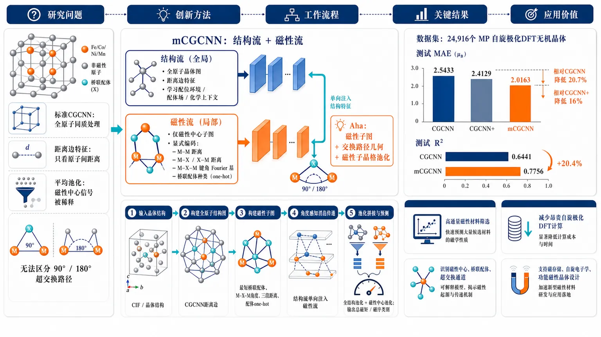
研究问题标准CGCNN把晶体中所有原子同质处理，只用原子间距离描述边，并对全原子特征做平均池化；这会让少量Fe、Co、Ni、Mn、稀土等磁性中心的信号被大量非磁性原子稀释，也无法区分键长相同但M–X–M角度为90°或180°的超交换路径，导致总磁矩和磁序预测困难。创新方法提出mCGCNN双流晶体图卷积网络：一条结构流保留全原子晶体图，另一条磁性流只连接磁性中心；磁性边显式编码M–M距离、M–X/X–M距离、M–X–M键角Fourier基、桥联配体种类，把Goodenough–Kanamori–Anderson超交换物理嵌入图神经网络。核心Aha点是用“磁性子图+交换路径几何+磁性子晶格池化”直接对准磁性产生机制，而不是让通用全原子图自己学习。工作流程输入晶体结构后，先构建全原子结构图和仅含磁性元素的磁性子图；结构图用CGCNN式距离边特征做消息传递，获得配位环境、配体场和化学上下文；磁性子图为每对磁性中心寻找最短桥联配体，计算M–X–M角度、三段距离和配体one-hot；每一层将结构流特征单向注入磁性流，再在磁性子图上做角度感知消息传递；最后分别进行全结构池化和磁性中心池化，拼接后经残差MLP输出总磁矩或磁序类别。关键结果在24,916个Materials Project自旋极化DFT无机晶体上，mCGCNN测试集总磁矩MAE为2.0163 μB，优于标准CGCNN的2.5433 μB和增强读出头CGCNN+的2.4129 μB；相对标准CGCNN测试MAE降低20.7%，相对CGCNN+降低16%。测试R²从CGCNN的0.6441提升到0.7756，说明提升主要来自磁性子图和交换几何编码，而非单纯更强MLP读出头。应用价值该研究为磁性材料高通量筛选提供更可靠的结构到磁性预测工具，可减少昂贵自旋极化DFT计算；其物理先验图结构能更好识别磁性中心、桥联配体和超交换通道，可用于总磁矩预测、FM/AFM磁序分类迁移学习，以及面向磁存储、自旋电子学和功能磁性晶体的候选材料快速筛选。第一部分：核心概览 (Overview)
mCGCNN提出一种面向晶体磁性的双流晶体图卷积网络：在传统全原子结构图之外，显式构建仅含磁性中心的磁性子图，并用金属–配体–金属键角、桥联配体种类、交换路径距离编码Goodenough–Kanamori–Anderson超交换物理。该结构通过逐层单向结构→磁性跨流耦合与磁性子晶格池化，缓解标准CGCNN中磁性信号被非磁性原子平均稀释、距离特征无法区分90°/180°交换路径的问题。在Materials Project自旋极化DFT数据上，总磁矩测试MAE由CGCNN的2.5433 μB降至2.0163 μB，R²由0.6441升至0.7756，显示物理先验图结构可显著提升磁性材料预测。
---
第二部分：结构化快速回顾
《mCGCNN: A Dual-Stream Crystal Graph Convolutional Neural Network for the Efficient Prediction of Magnetic Properties of Crystalline Materials》（None，）
背景
标准CGCNN将所有原子同质处理，边特征主要依赖原子间距离，难以描述磁性材料中由磁性中心、配体桥联、键角、轨道杂化、交换相互作用共同决定的磁矩和磁序。磁性性质不同于形成能、带隙等平滑标量性质，受自旋极化电子态与多重DFT自洽解影响。
方法
mCGCNN构建两个图：全原子结构图和仅含磁性元素的磁性子图。磁性边包含M–M距离、M–X距离、X–M距离、Fourier角度基和桥联配体one-hot特征。结构流执行CGCNN式门控消息传递，磁性流执行角度感知消息传递，并在每层通过线性投影将结构上下文注入磁性节点。最终采用结构池化与磁性子晶格池化拼接后预测。
结果
在24,916个Materials Project无机晶体总磁矩数据上，训练/验证/测试划分为19,932/2,491/2,493。测试集上，CGCNN MAE=2.5433 μB、R²=0.6441；CGCNN+ MAE=2.4129 μB、R²=0.7192；mCGCNN MAE=2.0163 μB、R²=0.7756。mCGCNN相对CGCNN+测试MAE降低16%，相对标准CGCNN降低20.7%。
讨论
性能提升主要来自显式磁性子图和交换几何编码，而不只是更强MLP读出头。高磁矩样本仍存在系统性低估，尤其是真值超过约40 μB的稀疏尾部样本，误差更多反映数据分布长尾和高磁矩样本不足。
局限
磁性目标并非晶体结构的单值函数；同一结构可因不同初始自旋密度收敛到FM、AFM或亚铁磁解，产生结构化标签噪声。高磁矩材料稀缺导致尾部泛化不足。分类实验部分在给定文本中只出现表题，缺少具体数值结果。
结论
将交换路径几何直接嵌入图神经网络架构，为磁性材料性质预测提供了物理约束更强、可解释性更高的路线。mCGCNN证明了磁性子晶格专用建模、角度感知边特征和跨流耦合可以系统提升总磁矩回归，并可作为磁序分类迁移学习的磁性表征基础。
---
第三部分：逐章节冷凝解析 (Section-by-Section Condensing)
Abstract
Magnetism requires non-homogeneous graph treatment
磁性有序并非由所有原子均匀贡献，而是主要由携带磁矩的子晶格和配体介导交换路径控制；标准晶体GNN将原子同质处理、以对距离为主要边信息，因此天然缺少磁性交换机制。核心动机可由原句概括：*"Magnetic order in crystals is governed by moment-carrying sublattices and ligand-mediated exchange pathways, yet standard crystal graph neural networks treat all atoms homogeneously and encode bonds primarily through pair distances."*
mCGCNN adds a dedicated magnetic stream
mCGCNN在完整结构图之外增加专用磁性子图，形成双流架构；磁性流只在磁性中心之间执行消息传递，结构流保留全晶体上下文。摘要给出的定位为：*"We propose mCGCNN, a magnetism-aware crystal graph network that augments the full structural graph with a dedicated magnetic subgraph."*
Angle-aware exchange descriptors encode GKA physics
磁性流使用金属–配体–金属交换路径描述符，包括配体桥联路径和角度信息，其物理来源是Goodenough–Kanamori–Anderson规则。关键表述为：*"The magnetic stream performs angle-aware message passing over magnetic centers using metal–ligand–metal exchange-path descriptors motivated by Goodenough–Kanamori–Anderson physics."*
Cross-coupling transfers ligand-field information
结构流不是独立旁路，而是逐层向磁性流注入结构和配体场上下文，以便磁性流获得非磁性配体环境信息。原始证据为：*"layer-wise cross-coupling transfers structural and ligand-field information from the full crystal graph."*
Magnetic pooling prevents dilution
独立的磁性子晶格池化避免磁性中心特征在全原子平均池化中被大量非磁性原子稀释。摘要直接说明：*"A separate magnetic-sublattice pooling operation prevents the magnetic interaction from being diluted by nonmagnetic atoms."*
Regression gains are quantitatively substantial
在Materials Project自旋极化DFT数据上，mCGCNN将总磁矩测试MAE从CGCNN的2.54 μB降至2.02 μB，R²从0.644升至0.776。摘要给出的核心结果为：*"mCGCNN improves total magnetic moment prediction from a CGCNN test MAE of 2.54 μB to 2.02 μB, outperforming a strengthened CGCNN readout baseline and raising the test R² from 0.644 to 0.776."*
Moment pretraining benefits magnetic order classification
磁矩回归预训练后的同一磁性表征可提升FM/AFM分类。摘要层面的证据为：*"When pretrained on moment regression, the same magnetic representation improves ferromagnetic/antiferromagnetic classification."* 但给定文本未提供分类表格的具体数值。
---
I Introduction
Crystal-structure-only prediction is a central goal
从晶体结构直接预测材料性质、避免昂贵量子力学计算，是数据驱动材料科学的核心目标。原文给出背景定位：*"The accurate prediction of materials properties from crystal structure alone, without the need for computationally expensive quantum-mechanical calculations, is one of the central goals of data-driven materials science."*
GNNs dominate because crystals are naturally graph-like
GNN通过原子中心图上的迭代消息传递编码拓扑与几何，因此成为晶体性质预测主流框架。关键句为：*"Graph neural networks (GNNs) have emerged as the leading framework for this task, owing to their ability to naturally encode the topology and geometry of crystalline environments through iterative message passing over atom-centred graphs."*
Original CGCNN formalism uses atoms as nodes and cutoff bonds as edges
CGCNN将晶体表示为图 𝒢=(𝒱,ℰ)，原子为节点，截断半径内的键为边；原子特征经邻居聚合更新，再池化为晶体级向量。原文表述为：*"CGCNN introduced by Xie and Grossman represents each crystal as a graph 𝒢=(𝒱,ℰ) in which atoms constitute nodes and bonds within a cutoff radius constitute edges."* 以及 *"the resulting atom-level representations are pooled to a crystal-level vector that serves as input to a regression or classification head."*
CGCNN is strong for formation energy and band gap
CGCNN在大数据库训练后可达到形成能约0.039 eV/atom、带隙约0.45 eV的MAE，低于典型DFT精度阈值，适合高通量筛选。原句为：*"CGCNN achieves mean absolute errors of ≈0.039 eV/atom on formation energies and ≈0.45 eV on band gaps, substantially below the typical density functional theory (DFT) precision threshold."*
Recent crystal GNNs improve geometry and representation
多种后续模型改进CGCNN：iCGCNN加入Voronoi结构、三体相关和更精细键化学；MEGNet加入原子、键、全局状态；ALIGNN加入线图编码键角；DimeNet用方向消息传递和球谐展开；SchNet/PaiNN采用连续滤波卷积和等变表征；CrysXPP用无标注晶体图预训练缓解数据稀缺。原文证据包括：*"ALIGNN augments the bond graph with a line graph that encodes bond angles"*，*"DimeNet and its successors employ directional message passing using spherical harmonic expansions of interatomic vectors"*，以及 *"CrysXPP have addressed the bottleneck of data scarcity by pre-training autoencoders on large databases of unannotated crystal graphs."*
Magnetic properties remain a persistent failure mode
尽管几何分辨率不断提升，磁性性质预测仍是几乎所有GNN架构中的持续失败点。原句非常明确：*"the prediction of magnetic properties has remained a persistent and largely unaddressed failure mode across essentially all GNN architectures in the literature."*
Magnetism depends on physics not exposed by distance-only graphs
磁性受自旋极化电子态、交换路径、轨道杂化、对称性破缺自洽解控制，而这些并不自然呈现在标准CGCNN的距离型、化学同质图表示中。原文证据为：*"Magnetic order is controlled by spin-polarised electronic states, exchange pathways, orbital hybridisation, and symmetry-broken self-consistent solutions, none of which are naturally exposed by the distance-only, chemically homogeneous graph representation used in the original CGCNN."*
Small ligand or angle changes can flip exchange sign
微小的配体种类、配位几何或M–X–M角度变化，可在常规对距离描述几乎不变的情况下反转交换相互作用符号。原句为：*"A small change in ligand identity, coordination geometry, or metal–ligand–metal angle can reverse the sign of an exchange interaction while leaving conventional pair-distance descriptors nearly unchanged."*
Magnetic targets differ qualitatively from scalar energetics
局域磁矩 mi = ni↑ − ni↓、饱和磁化强度 Ms、磁有序温度依赖磁性原子、连接方式和交换路径的FM/AFM倾向，而不是简单平均晶体环境。原文为：*"Magnetic properties, particularly the local magnetic moment on lattice site i, mi=ni↑−ni↓, the saturation magnetisation Ms, and the magnetic ordering temperature, therefore present a qualitatively different prediction challenge from scalar ground-state energetics."*
Homogeneous graph representation is physically inefficient
标准CGCNN所有原子使用同类节点处理，只靠初始化学特征区分；磁性却集中于部分填充3d或4f壳层元素，如Fe、Co、Ni、Mn、Cr、Gd、Nd。原文证据为：*"The physics of magnetism is, however, overwhelmingly concentrated on atoms with partially filled 3d or 4f shells — transition metals such as Fe, Co, Ni, Mn, and Cr, and rare-earth elements such as Gd and Nd."*
Mean pooling dilutes sparse magnetic signal
CGCNN晶体级表示为 c = (1/N)∑hi(L)。若磁性中心数 Nm≪N，磁性信号权重仅为 Nm/N，在稀磁体系、磁掺杂半导体、大胞复杂氧化物中被系统压低。原文写道：*"the magnetic signal enters with weight Nm/N, systematically suppressed by the non-magnetic majority regardless of the intrinsic importance of those sites to the target property."*
Distance-only bond features cannot encode GKA angle dependence
标准CGCNN边特征是原子间距离的Gaussian RBF展开，只编码键长，不编码方向或键角。磁性交换积分 Jij 的符号和大小高度依赖桥联配体处的 M–X–M键角 θikj。原文证据为：*"Standard CGCNN bond features are Gaussian radial basis function (RBF) expansions of pairwise interatomic distances"*，以及 *"They encode bond length but carry no information about bond direction or bond angle."*
90° and 180° exchange pathways are indistinguishable to CGCNN
GKA规则中，约180°路径倾向AFM，约90°路径倾向FM；两条路径键长相同但角度不同，在CGCNN特征空间中完全无法区分，却对应相反磁耦合。原文强调：*"Two M–X–M pathways with identical bond lengths but bond angles of 90° and 180° are completely indistinguishable in the CGCNN feature space, yet they correspond to qualitatively opposite magnetic couplings."* 并判断：*"This is a representational deficiency that cannot be overcome by additional depth or width."*
DFT magnetic moment is multi-valued for one structure
自旋极化DFT对同一晶体结构可存在多个自洽解，如FM、AFM、亚铁磁，收敛结果取决于初始自旋密度。原文说明：*"the DFT magnetic moment is not a unique functional of the crystal structure alone"*，以及 *"Spin-polarised DFT admits multiple self-consistent solutions corresponding to distinct magnetic configurations — ferromagnetic (FM), antiferromagnetic (AFM), ferrimagnetic — for a given crystal structure."*
Structured label noise harms generalization
Materials Project等数据库通常每个条目只报告一个磁矩，但结构相似甚至相同晶体可能因自旋初始化不同而具有不同磁矩，造成结构化标签噪声。原句为：*"This introduces structured label noise that any regression model will tend to memorise rather than generalise from, manifesting as a large gap between training and test errors."*
Four contributions define the study
四项贡献包括：CGCNN磁性局限的物理表征；mCGCNN双流、角度感知、跨耦合、双池化架构；Materials Project磁矩回归实证提升；FM/AFM分类准确率提升。原文列明：*"The key contributions of this work are"*，包括 *"A formal characterisation of the structural limitations of CGCNN for magnetic property prediction"*，*"The mCGCNN architecture: a dual-stream graph convolutional network with a dedicated magnetic subgraph stream"*，以及 *"Demonstration of improved FM/AFM classification accuracy relative to standard CGCNN."*
---
II Methodology
II.1 Crystal Graph Construction
Two graphs are built per crystal
每个含 N 个原子的晶胞构建两个图：与原CGCNN相同的全原子结构图𝒢，以及只含磁性中心的磁性子图𝒢m。原文为：*"Given a crystal structure with N atoms per unit cell, two graphs are constructed: a structural graph 𝒢 identical to that used in the original CGCNN, and a magnetic subgraph 𝒢m constructed from the magnetic centres only."* 两者均由pymatgen构建：*"Both are built using the pymatgen library."*
Structural graph follows CGCNN with 41 RBF distance features
结构图 𝒢=(𝒱,ℰ) 包含所有N个原子，截断半径 rcstr 内建立有向边并填充到最大邻居数 M。边特征为距离RBF展开，db=41，Gaussian中心均匀分布在 [0, rcstr]，宽度 σ=0.2 Å。原文证据为：*"The structural graph 𝒢=(𝒱,ℰ) consists of all N atoms as nodes, with directed edges (i,j)∈ℰ connecting pairs within a cutoff radius rcstr, padded to a fixed maximum neighbour count M."* 以及 *"with db=41 Gaussian centres ... and width σ=0.2 Å, following the original CGCNN parameterisation."*
Magnetic nodes are selected by element list or DFT moment threshold
磁性节点集合定义为 𝒱m=i∈𝒱: Zi∈𝒵m，𝒵m包括Ti、V、Cr、Mn、Fe、Co、Ni、Cu、Gd、Dy及相关4d/5d类似元素。若有逐位点DFT磁矩，也可用 |miDFT|>ε，其中 ε=0.1 μB。原文为：*"𝒵m is a configurable set of common transition-metal and rare-earth magnetic elements, including Ti, V, Cr, Mn, Fe, Co, Ni, Cu, Gd, Dy, and related 4d/5d analogues."* 以及 *"defined by the data-driven threshold |miDFT|>ϵ with ϵ=0.1 μB."*
Magnetic subgraph connects magnetic centers
磁性子图 𝒢m=(𝒱m,ℰm) 在磁性节点间以磁性截断半径 rcmag 建边，并填充至 Mm 个邻居。非磁性集合 𝒱ℓ=𝒱∖𝒱m 包含O、F、N、S等桥联配体。原文证据为：*"The magnetic subgraph 𝒢m=(𝒱m,ℰm) connects pairs in 𝒱m within cutoff rcmag, padded to Mm neighbours."* 以及 *"The non-magnetic set 𝒱ℓ=𝒱∖𝒱m contains the bridging ligand atoms (O, F, N, S, etc.) whose orbital character modulates the superexchange pathway."*
Shortest ligand bridge defines exchange pathway
对每条磁性有向边 (i,j)∈ℰm，选择使 rik+rkj 最小的非磁性配体 k* 作为最短超交换桥联配体，并计算配体处M–X–M角度。原文为：*"the shortest superexchange bridging ligand k∈𝒱ℓ is identified as k*=argminₖ∈𝒱ℓ(rik+rkj), and the M–X–M bond angle at k* is computed."*
All-magnetic systems use M–M–M angles
若不存在桥联配体，即 𝒱ℓ=∅，如元素金属或Fe3Co等过渡金属合金，则计算中心磁性原子处的 M–M–M角。原文为：*"When no bridging ligand is present (i.e., 𝒱ℓ=∅ as in elemental metals or TM alloys such as Fe3Co), the relevant geometric quantity is the M–M–M bond angle at the central magnetic atom."*
Magnetic edge features concatenate distances, angle basis, and ligand identity
磁性边特征为 emagij = ϕ(rij) ∥ ϕ(rik*) ∥ ϕ(rk*j) ∥ ψ(θik*j) ∥ eXk*，包括M–M距离、两段M–X/X–M距离、角度Fourier基和配体one-hot。原文公式后说明：*"The magnetic bond feature vector is then defined as the concatenation"*，并定义角度基：*"ψ(θ)=[cosθ, cos2θ, …, cosKθ]∈ℝK is a Fourier angular basis sufficient to represent the non-monotonic, sign-changing GKA dependence J(θ)."*
Magnetic bond dimension is explicit
磁性边特征维度为 dbmag = 3db + K + nℓ。当全磁性无配体时，one-hot配体项由中心磁性邻居的物种嵌入替代。原文为：*"The total magnetic bond feature dimension is dbmag=3db+K+nℓ."* 以及 *"For the all-magnetic case the one-hot term is replaced by a species embedding of the central magnetic neighbour."*
---
II.2 Dual-Stream Architecture
II.2.1 Node Feature Embedding
Structural atom features follow CGCNN atom initialization
结构图中每个原子的原始特征 vi∈ℝd0 编码族数、周期数、电负性、共价半径、价电子数、第一电离能、电子亲和能、区块、原子体积。原文证据为：*"Each atom i in the structural graph is described by a raw feature vector vi∈ℝd0 encoding its group number, period number, electronegativity, covalent radius, number of valence electrons, first ionization energy, electron affinity, block, and atomic volume, following the original CGCNN atom initialization."*
Magnetic nodes receive seven extra magnetism-relevant features
磁性节点特征在原始原子特征上额外拼接7个磁性相关元素属性：原子序数、d电子数、f电子数、未配对d电子数、未配对f电子数、Hund规则得到的总自旋 S 和轨道角动量 L。原文为：*"we augment this vector by concatenating seven additional elemental properties relevant to magnetism: atomic number, number of d and f electrons, number of unpaired d and f electrons, along with the total spin (S) and orbital angular momentum (L) derived from Hund’s rules."*
Two streams have independent linear projections
结构流和磁性流用独立线性投影初始化，得到 hi(0)∈ℝda 和 si(0)∈ℝds；结构隐藏维度 da 和磁性隐藏维度 ds 可独立设置。原文为：*"The two streams are initialised by independent linear projections"*，以及 *"da and ds are the structural and magnetic stream hidden dimensions, respectively, which may be set independently."*
---
II.2.2 Coupled Message Passing
Two streams advance in lockstep over L layers
双流在 L 个卷积层中同步推进，每层包含三个顺序操作：结构卷积、跨流耦合、磁性卷积。原文为：*"The two streams are advanced in lockstep for L convolutional layers. At each layer ℓ∈0,1,…,L−1, three sequential operations are performed."*
Structural convolution is identical to CGCNN ConvLayer
结构流对每个原子和结构邻居构造消息 mij=hi(ℓ)∥hj(ℓ)∥ϕ(rij)，再通过门控聚合、BN、Sigmoid、Softplus更新。原文明确说明：*"This update rule is identical to the original CGCNN ConvLayer."*
Cross-coupling injects structural context into magnetic nodes
更新后的结构特征 hi(ℓ+1) 编码配位几何、轨道杂化和配体场特征；对磁性中心，通过层特异线性投影 si(ℓ)←si(ℓ)+Wcross(ℓ)hi(ℓ+1) 注入磁性流。原文为：*"The updated structural features hi(ℓ+1) encode the coordination geometry, orbital hybridisation, and ligand-field character of each atom."* 以及 *"It is injected into the magnetic stream through a learned, layer-specific linear projection."*
Cross-coupling is unidirectional for stability and transferability
结构信息流入磁性流，但磁性信息不反向影响结构流；这样可保持结构流稳定性和可迁移性，允许在大型低噪声形成能数据上预训练并冻结。原文写道：*"The coupling is unidirectional: structural information flows into the magnetic stream, but not vice versa."* 以及 *"This preserves the stability and transferability of the structural stream, which can be pre-trained on large, noise-free formation energy datasets and its weights frozen during magnetic training."*
Ligand identity must reach magnetic stream
桥联配体决定超交换轨道通道；Fe–O–Fe、Fe–F–Fe和直接Fe–Fe相互作用有根本不同。原文证据为：*"the nature of the bridging ligand k — captured in the structural stream through hk(ℓ+1) propagated to the magnetic centre i — determines the orbital pathway for superexchange."* 以及 *"The oxygen 2p orbital character in an Fe–O–Fe pathway differs fundamentally from a fluorine 2p pathway or a direct Fe–Fe interaction."*
Magnetic convolution uses angle-aware magnetic edges
磁性流使用跨耦合后的 si(ℓ) 和角度感知边特征 emagij 构造消息 wij=si(ℓ)∥sj(ℓ)∥emagij，再执行与CGCNN同构的门控聚合。原文为：*"Using the cross-coupled magnetic features and the angle-aware bond features emagij, the message on the magnetic subgraph is..."* 以及 *"The magnetic stream is then updated by an identical gated aggregation."*
Fresh structural context is added at every layer
紧凑写法中，磁性更新包含 Wcross(ℓ)hi(ℓ+1) 项；该项是原始CGCNN没有的关键新增机制，使磁性流每层获得最新结构上下文。原文强调：*"The cross-coupling term Wcross(ℓ)hi(ℓ+1) in Eq. (14b) is the key addition absent in the original CGCNN: it ensures that the magnetic stream has access to fresh structural context at every convolutional layer."*
---
II.3 Dual Pooling
Structural pooling matches CGCNN
结构池化对所有 N 个原子求均值：cstr=(1/N)∑i∈𝒱 hi(L)，捕获全局结构和化学上下文，也是标准CGCNN唯一晶体描述符。原文为：*"The structural pool is a mean over all N atoms, identical to the original CGCNN."* 以及 *"This representation captures global structural and chemical context and is the sole crystal descriptor in the standard CGCNN."*
Magnetic pooling is restricted to magnetic centers
磁性池化仅对 Nm 个磁性中心求均值：cmag=(1/Nm)∑i∈𝒱m si(L)。原文为：*"The magnetic pool is a mean restricted to the Nm magnetic centres."*
Magnetic pooling removes concentration-dependent dilution
只在 𝒱m 上池化使磁性贡献以完整权重进入晶体级表示，不依赖磁性原子浓度 Nm/N。原文为：*"By pooling over 𝒱m alone, the magnetic contribution enters the crystal-level representation with full weight, independent of the magnetic atom concentration Nm/N."*
Nonmagnetic crystals reduce gracefully to CGCNN
若晶体中识别不到磁性原子，即 Nm=0，则 cmag 设为零向量，模型退化为标准单流CGCNN。原文为：*"For crystals with Nm=0 (no magnetic atoms identified), cmag is set to the zero vector, and the model gracefully reduces to the standard single-stream CGCNN."*
Final crystal representation concatenates both pools
最终晶体向量为 ccrys=cstr∥cmag∈ℝda+ds，输入预测头。原文为：*"The dual-pooled crystal representation is the concatenation of both pools"*，以及 *"which is fed into the prediction head."*
---
II.4 Prediction Head and Training
Fusion layer uses layer normalization, Softplus, and dropout
拼接后的晶体表示先经过融合层：LayerNorm、线性变换、Softplus、Dropout。原文为：*"The crystal representation ccrys is first processed by a fusion layer that incorporates layer normalization (LN) and dropout (Drop)."*
Residual blocks support deeper post-pool prediction
融合表示进入 nh 个残差块，每个块包含线性变换、LayerNorm、Softplus、Dropout和残差加法。原文为：*"To facilitate the training of a deeper network, this fused representation is then passed through a sequence of nh residual blocks."* 以及 *"the last equation defines the residual operation."*
Regression uses MSE loss
总磁矩回归输出 ŷ∈ℝ，用均方误差训练。原文为：*"For the regression task (magnetic moment prediction), the output ŷ∈ℝ is trained with mean squared error (MSE) loss."*
FM/AFM classification uses log-softmax and NLL loss
二分类磁序任务中，输出经log-softmax后用负对数似然训练。原文证据为：*"For the binary FM/AFM classification task, ŷ is passed through a log-softmax layer and trained with negative log-likelihood loss."*
---
II.5 Regularisation and Optimisation
mCGCNN has expanded parameter count requiring regularization
相较CGCNN，mCGCNN新增磁性流权重和跨流耦合矩阵，参数量增加，尤其在小数据集上需要正则化。原文为：*"The expanded parameter count of mCGCNN relative to CGCNN, primarily from the magnetic stream weights Wmag,bmag and cross-coupling matrices Wcross(ℓ), requires careful regularisation, particularly for smaller datasets."*
Separate structural and magnetic weight decay are used
结构参数和磁性参数分别使用 λstr 与 λmag 权重衰减，总损失为 LMSE + λstr||θstr||²₂ + λmag||θmag||²₂。原文为：*"Separate weight-decay coefficients λstr and λmag are applied to the structural and magnetic parameter groups respectively."*
Magnetic stream has stronger weight decay
磁性权重衰减设置为 λmag>λstr，原因是稀磁体系中磁性流看到的有效样本量较小。原文为：*"with λmag>λstr to account for the smaller effective sample size seen by the magnetic stream in dilute magnetic systems."*
Magnetic dropout probability is 0.3
在池化前对最终磁性流特征 si(L) 使用dropout，概率 p=0.3。原文为：*"Dropout with probability p=0.3 is additionally applied to the magnetic stream features si(L) before pooling."*
Optimization uses SGD or Adam with multi-step learning rate decay
优化器为带动量SGD或Adam，多阶段学习率调度在指定epoch将学习率乘以0.1；保留验证MAE最低的checkpoint。原文为：*"Optimisation uses SGD with momentum or Adam, with a multi-step learning rate schedule that reduces the rate by a factor of 0.1 at specified epoch milestones."* 以及 *"A model checkpoint corresponding to the lowest validation MAE is retained, providing implicit early stopping."*
---
II.6 Computational Complexity
Magnetic overhead is bounded by magnetic subgraph size
每个卷积层中，磁性流计算量为 O(Nm·Mm·ds²)，结构流为 O(N·M·da²)。原文为：*"Per convolutional layer, the magnetic stream requires O(Nm·Mm·ds²) floating point operations, compared to O(N·M·da²) for the structural stream."*
Magnetic stream usually costs less than structural stream
由于 Nm≤N 且通常 Mm≤M，磁性流计算成本不会超过结构流。原文为：*"Since Nm≤N and typically Mm≤M, the magnetic stream never exceeds the structural stream in cost."*
Dilute magnetic systems have negligible overhead
当 Nm≪N 时，总成本由结构流主导，mCGCNN相对CGCNN额外开销可忽略。原文为：*"For systems where Nm≪N (dilute magnetic systems), the total cost is dominated by the structural stream and the overhead of mCGCNN over CGCNN is negligible."*
Cross-coupling cost is sub-dominant
跨耦合投影每层增加 O(Nm·da·ds)，在稀磁条件下低于主要消息传递成本。原文为：*"The cross-coupling projection adds O(Nm·da·ds) operations per layer, which is sub-dominant under the same conditions."*
---
II.7 Dataset and Evaluation Protocol
Data come from Materials Project spin-polarized DFT
CGCNN与mCGCNN均在Materials Project派生磁性数据集上训练和评估。底层条目为VASP执行的GGA+U自旋极化DFT，对过渡金属d轨道采用Wang等方案的Hubbard U修正。原文为：*"Both CGCNN and mCGCNN are trained and evaluated on magnetic datasets derived from the Materials Project database."* 以及 *"spin-polarised DFT calculations performed at the GGA+U level using VASP, with Hubbard U corrections applied to transition metal d orbitals following the scheme of Wang et al."*
Experiments vary training set size
实验设计测试mCGCNN相对CGCNN的提升是否受数据规模限制：小数据时额外容量可能浪费，大数据时更有收益。原文为：*"To test the hypothesis that the performance gain of mCGCNN over CGCNN is data-limited — i.e., that the additional model capacity is wasted on small datasets but beneficial on larger ones — experiments are conducted across training sets of varying sizes."*
Splitting protocol is 80/10/10
结果在保留测试集上报告，训练/验证/测试比例为 80/10/10。原文为：*"All results are reported on a held-out test set with a 80/10/10 train/validation/test split."*
FM/AFM classification tests angular exchange information
FM/AFM二分类任务检验角度感知磁性子图是否提供超越标准CGCNN距离边特征的信息。原文为：*"This task tests whether the angle-aware magnetic subgraph message passing, which encodes the GKA dependence of Jij on bond angle, provides information beyond what is available to standard CGCNN through distance-only bond features."*
---
II.8 Hyperparameters
Default mCGCNN hyperparameters are specified
默认结构隐藏维度 da=64；磁性隐藏维度 ds=32–64；结构卷积层 L=3；磁性卷积层 Lm=1–3；RBF中心 db=41；Fourier角度项 K=8；池化后隐藏维度 hfea=128；FC层数 nh=1；结构截断 rcstr=8.0 Å；磁性截断 rcmag=5.0 Å；磁性dropout p=0.3；磁性权重衰减 λmag=10⁻³；batch size B=256；学习率 η=10⁻²；优化器Adam。原表说明为：*"Default hyperparameters are listed in Table 1."*
Magnetic hidden size can be reduced for smaller datasets
磁性流隐藏维度独立于结构维度，小数据集上可降低以控制过拟合。原文为：*"The magnetic stream hidden dimension ds is set independently of the structural dimension da, and may be reduced for smaller datasets to control overfitting."*
One magnetic convolution layer is used below about 10,000 samples
训练样本少于约10,000时使用单个磁性卷积层，理由是交换相互作用有效范围较短且磁性流训练数据有限。原文为：*"A single magnetic convolutional layer (nmag-conv=1) is used for datasets below ∼10,000 training samples, reflecting the short effective range of exchange interactions and the limited training data available for the magnetic stream."*
---
III Results and Discussion
III.1 Regression on Total Magnetic Moment
Regression task uses 24,916 inorganic crystals
总磁矩回归数据集包含 24,916 个Materials Project无机晶体，划分为训练 19,932、验证 2,491、测试 2,493。原文为：*"The dataset used for this task comprises 24,916 inorganic crystalline materials from the materials project database, partitioned into a training set of 19,932 samples, a validation set of 2,491 samples, and a hold-out test set of 2,493 samples."*
Dataset is compositionally and structurally diverse
数据集中三元和四元化合物占主导，三元材料为最大子集；晶胞原子数范围为 2到20。原文为：*"the dataset is dominated by ternary and quaternary compounds, with ternary materials representing the single largest subset."* 以及 *"The number of atoms per unit cell spans a broad range from 2 to 20."*
Target distribution is skewed toward low magnetic moments
DFT总磁矩分布向低磁矩显著偏斜，模型需同时处理密集低磁矩区域与稀疏高磁矩尾部。原文为：*"the distribution of DFT-calculated total magnetic moments highlights a significant skewness towards lower magnetic moments, representing a non-trivial learning objective."*
Training ran for 150 epochs and checkpointed at epoch 129
mCGCNN训练 150 epochs；训练损失持续下降，在约 epoch 80 处因学习率衰减明显下降；最佳checkpoint位于 epoch 129，验证MSE为 0.2034。原文为：*"The mCGCNN model was trained for 150 epochs"*，*"with a marked reduction near epoch 80 coincident with the scheduled learning-rate decay"*，以及 *"The best-performing checkpoint ... occurred at epoch 129 (validation MSE=0.2034)."*
Validation loss is noisier because validation set is smaller and target is long-tailed
验证损失下降较慢且epoch间方差更大，与验证集较小和目标分布长尾一致。原文为：*"Validation loss decreased more slowly and exhibited substantially greater epoch-to-epoch variance than the training loss, consistent with the smaller size of the validation partition and long-tailed target distribution."*
mCGCNN achieves R²=0.776 and MAE=2.016 μB on test
保留测试集上，mCGCNN达到 R²=0.776，MAE为 2.016 μB。原文为：*"On the held-out test set, the trained mCGCNN model achieved an R²=0.776, with a mean absolute error of 2.016 μB."*
Predictions are good below about 30 μB but underestimate high moments
在总磁矩 ≲30 μB 的主体分布中，预测与DFT较一致；对 ≳40 μB 的高磁矩小子集存在系统低估，部分样本预测值不到真值一半。原文为：*"The parity plot ... exhibits close agreement with the DFT reference values across the bulk of the distribution (total moment ≲30 μB), but also reveals systematic underestimation for the small subset of materials with the largest moments (≳40 μB), several of which are predicted at less than half their true value."*
High-moment underestimation reflects sparse training tail
高磁矩低估与训练分布中高磁矩化合物代表性不足一致。原文为：*"This behaviour is consistent with the underrepresentation of high-moment compounds in the training distribution."*
Two baselines isolate architecture vs readout effects
比较对象包括标准CGCNN和CGCNN+。CGCNN+保留结构单图消息传递，但使用mCGCNN增强读出MLP，包括LayerNorm、深残差块和Dropout。原文为：*"mCGCNN was benchmarked against two baselines lacking this auxiliary structure: (i) standard CGCNN ... and (ii) CGCNN+, an ablated control variant of mCGCNN."* 以及 *"CGCNN+ retains the structural-only single-graph message-passing framework of standard CGCNN but utilises mCGCNN’s enriched post-pooling readout multilayer perceptron (MLP) head."*
Baseline design decouples deep learning enhancements from magnetic physics
三方比较可区分性能提升来自现代读出头增强还是局域磁性交换物理。原文为：*"This three-way baseline comparison ensures that performance improvements can be cleanly decoupled and attributed to either modern deep learning architectural enhancements (CGCNN→CGCNN+) or the localized magnetic exchange physics (CGCNN+→mCGCNN)."*
mCGCNN outperforms both baselines on all metrics and splits
训练、验证、测试三组中，mCGCNN在MAE、RMSE、R²上均优于CGCNN和CGCNN+。表2数值如下：训练集CGCNN MAE=1.9635、RMSE=2.9763、R²=0.8275；CGCNN+ MAE=1.9188、RMSE=2.7799、R²=0.8495；mCGCNN MAE=1.2832、RMSE=1.8742、R²=0.9316。验证集CGCNN MAE=2.4075、RMSE=3.9238、R²=0.7032；CGCNN+ MAE=2.3652、RMSE=3.8112、R²=0.7200；mCGCNN MAE=1.9374、RMSE=3.2430、R²=0.7972。测试集CGCNN MAE=2.5433、RMSE=4.4230、R²=0.6441；CGCNN+ MAE=2.4129、RMSE=3.9287、R²=0.7192；mCGCNN MAE=2.0163、RMSE=3.5123、R²=0.7756。原文总结为：*"Across all three data partitions, mCGCNN outperformed both baselines on every metric considered."*
Test MAE improves by 16% vs CGCNN+ and 20.7% vs CGCNN
测试集上，mCGCNN相较CGCNN+ MAE降低 16%，相较标准CGCNN降低 20.7%；R²相较CGCNN+提升 7.8%，相较标准CGCNN提升 20.4%。原文为：*"On the test set, mCGCNN reduced the MAE relative to CGCNN+ by 16% (and by 20.7% relative to standard CGCNN), while improving the R² score by 7.8% relative to CGCNN+ (and by 20.4% relative to standard CGCNN)."*
Explicit magnetic substructure yields consistent benefit
结果支持并行磁性图建模，而非只依赖传统结构晶体图，可以稳定提升总磁矩预测。原文为：*"explicitly modelling the magnetic substructure as a parallel graph, rather than relying solely on the conventional structural crystal graph, provides a measurable and consistent improvement in predicting total magnetic moment."*
Remaining bottleneck is high-moment data scarcity
剩余误差几乎集中于高磁矩尾部，指向该区域数据稀缺，而非主要架构限制。原文为：*"The remaining error is concentrated almost entirely in the high-moment tail of the distribution, pointing to data scarcity in that regime, rather than an architectural limitation, as the primary remaining bottleneck."*
mCGCNN backbone enables magnetic transfer learning
已学习磁性表征的mCGCNN骨干可作为相关下游分类任务的物理动机迁移学习起点。原文为：*"the resulting mCGCNN backbone, having learned a representation directly tied to a material’s magnetic character, also provides a natural and physically motivated starting point for transfer learning on related downstream classification tasks."*
---
III.2 Ferromagnetic vs. Antiferromagnetic Order Classification
Classification section is introduced but numerical values are absent in the provided text
给定文本只包含表3标题和模型列表，未给出训练、验证、测试的Accuracy、macro-F1、Precision、Recall、F1具体数值。可确认评估对象包括直接训练与迁移学习两类CGCNN/mCGCNN模型。原文表题为：*"Performance comparison of direct and transfer-learned classification models for FM/AFM magnetic order prediction."* 并说明比较指标包括：*"global accuracy and macro F1 scores alongside class-specific Precision (P), Recall (R), and F1 metrics across Training, Validation, and Test partitions."*
Compared classifiers include four variants
分类框架包括直接CGCNN、迁移学习CGCNN、直接mCGCNN、迁移学习mCGCNN。原文为：*"The evaluated frameworks include direct CGCNN, transfer-learned CGCNN (CGCNN-Tr), direct mCGCNN, and transfer-learned mCGCNN (mCGCNN-Tr)."*
Abstract-level claim supports transfer-learned improvement
虽然分类数值缺失，摘要已给出定性结论：磁矩回归预训练后的磁性表征改善FM/AFM分类。原文为：*"When pretrained on moment regression, the same magnetic representation improves ferromagnetic/antiferromagnetic classification."* 在缺少表3数值的情况下，不能进一步量化改进幅度。
---
第四部分：深度理解与语言支持 (Understanding & Nuance)
1. 术语解析
Moment-carrying sublattices
字面是“携带磁矩的子晶格”。在磁性晶体中，不是所有原子都对磁性等价贡献；通常过渡金属或稀土位点具有局域磁矩，O、F、N、S等配体位点主要通过轨道杂化调节交换。该表达强调磁性网络是晶体结构中的一个功能性子网络，不等同于全原子网络。
Ligand-mediated exchange pathways
指两个磁性金属中心之间不是直接交换，而是通过中间非磁性配体的轨道发生超交换，例如Fe–O–Fe。这里“mediated”强调配体不是被动连接点，而是决定交换强度和符号的主动电子通道。
Distance-only descriptors
指只用原子间距离编码边特征，例如Gaussian RBF展开。其微妙问题在于，距离可描述“多远”，但不能描述“方向”和“夹角”。对于形成能这类较平滑性质，距离可能足够强；对磁性交换，90°和180°角度差异可能改变FM/AFM符号，距离特征不可辨识。
Representational deficiency
不是训练不足、模型不够深或参数不够多，而是输入表示中缺少决定性变量。文中称90°与180°路径在CGCNN特征空间中不可区分，这意味着即使增加深度或宽度，模型也无法从不存在的信息中恢复角度依赖。
Structured label noise
普通标签噪声常被视为随机误差；结构化标签噪声来自物理和计算流程本身。自旋极化DFT对同一结构可收敛到不同磁态，因此“结构→磁矩”不是严格单值映射。模型看到相似结构对应不同标签时，会出现记忆训练集而非学习普适规律的问题。
---
2. 疑难查证
为什么90°和180° M–X–M路径会对应相反磁耦合？
超交换依赖磁性金属d轨道与配体p轨道的重叠方式。接近180°时，两个金属中心通常通过同一配体p轨道强烈重叠，Pauli排斥和虚跃迁过程常稳定反平行自旋，即AFM。接近90°时，两个金属中心可能耦合到近似正交的配体p轨道，Hund耦合可偏向平行自旋，即FM。GKA规则不是简单几何经验，而是轨道对称性、跃迁积分和电子占据共同决定的结果。
为什么全原子平均池化会稀释磁性信号？
假设一个晶胞有100个原子，其中只有2个Fe携带磁矩。标准CGCNN池化为100个原子特征平均，两个Fe的磁性特征最多只占2%。如果目标是总磁矩或磁序，真正决定标签的可能正是这2个Fe及其Fe–O–Fe路径。mCGCNN的磁性池化只对磁性中心平均，使这部分信息不被98个非磁性位点冲淡。
为什么DFT磁矩不是结构的唯一函数？
自旋极化DFT求解的是带自旋自由度的自洽场问题。给定同一晶体结构，不同初始磁矩设置可能收敛到不同局域极小值：FM、AFM、亚铁磁或低自旋/高自旋态。Materials Project数据库通常存储某次计算收敛得到的结果，而不是完整磁态能量谱。因此监督学习中输入结构相同或近似相同，标签却可能不同。
为什么跨流耦合是单向而不是双向？
结构流学习通用晶体几何和化学环境，具有较强迁移性；磁性流学习更噪声、更稀疏、更目标特异的磁性交互。若磁性流反向污染结构流，可能降低结构表征稳定性。单向结构→磁性耦合相当于让磁性流读取结构上下文，而不改变结构编码器本身。
---
第五部分：创新评估与关联 (Synthesis & Novelty)
1. 创新性判断
From general geometric GNNs to magnetism-specific graph inductive bias
过去2–5年晶体GNN的主线多集中于更精细几何：ALIGNN加入键角线图，DimeNet引入方向消息传递，PaiNN使用等变表征，MEGNet加入全局状态。这些方法提升通用几何分辨率，但通常没有把磁性中心子晶格、桥联配体交换路径和GKA规则作为架构核心。mCGCNN的新颖性在于把磁性材料的物理因果结构直接转译为图结构、边特征和池化机制。
Solves the magnetic signal dilution problem
标准CGCNN和多数通用晶体GNN使用全原子池化，磁性中心稀少时目标相关信号被非磁性原子平均稀释。mCGCNN通过磁性子晶格池化让磁性中心以完整权重参与晶体级表示，解决了前人架构中常被忽视的读出层信号稀释问题。
Solves the distance-only exchange ambiguity
标准CGCNN无法区分键长相同但M–X–M角度不同的超交换路径；通用角度GNN虽可编码角度，但未必针对“磁性中心—配体—磁性中心”的路径选择。mCGCNN显式选择最短桥联配体、拼接M–M/M–X/X–M距离、角度Fourier基和配体身份，使GKA中的符号翻转信息进入模型。
Separates structural chemistry and magnetic exchange streams
双流架构把全局结构/配体场信息和磁性子网络交换信息分开建模，再通过逐层单向跨流耦合整合。相比单图模型，这种设计更符合磁性形成机制：非磁性配体不一定携带磁矩，却决定磁性中心之间的交换通道。
Provides empirical evidence beyond stronger readout baselines
CGCNN+控制了更强MLP读出头带来的收益，因此mCGCNN相对CGCNN+的额外提升可更可信地归因于磁性子图和交换几何。测试MAE从2.4129 μB降至2.0163 μB，R²从0.7192升至0.7756，说明创新并非简单来自后处理网络加深。
Remaining unsolved problem: magnetic labels are not purely structure-determined
mCGCNN解决了表示层面的关键缺陷，但没有完全解决DFT磁态多解导致的标签多值性。未来更彻底的方向可能需要把初始磁构型、候选磁序、局域自旋态或多任务能量排序纳入输入/输出，而不仅从非磁结构预测单个磁矩标签。
-
02
📊 含图深析
📄 摘要：针对增材制造短纤热塑复合材料，利用图神经网络建立静态力学响应代理模型。模型面向由纤维取向、空间团聚和制造孔隙共同决定的介观非均匀结构，旨在替代昂贵数值模拟，预测刚度、损伤起始和非线性变形等宏观响应。
💡 亮点：短纤热塑复合材料的介观纤维网络被转化为图结构，用 GNN 捕捉取向、团聚与孔隙对静态响应的影响。该路线有助于把增材制造微结构直接接入力学快速评估。
📖 展开分析 + 配图
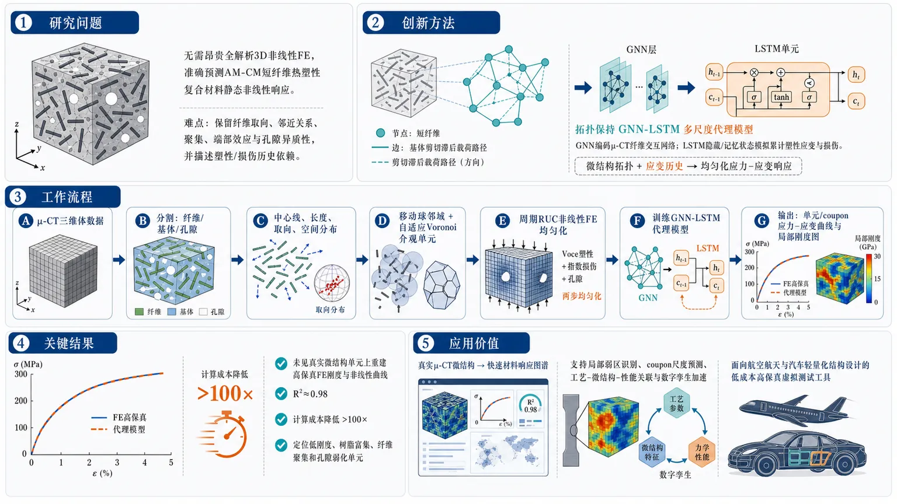
研究问题如何在不运行昂贵全解析三维非线性有限元的情况下，准确预测增材制造-压缩模塑短纤维热塑性复合材料的静态非线性响应；核心难点是同时保留真实 μ-CT 微结构中的纤维取向、邻近关系、聚集、端部效应和孔隙异质性，并描述基体塑性与损伤导致的历史依赖应力–应变演化。创新方法提出拓扑保持的 GNN-LSTM 多尺度代理模型：将每根短纤维表示为图节点，将纤维间通过基体剪切滞后传递载荷的邻近路径表示为加权边，用 GNN 编码真实 μ-CT 纤维交互网络；再用 LSTM 的隐藏状态和记忆状态模拟累计塑性应变与损伤变量，把“微结构拓扑 + 应变历史”直接映射为均匀化应力–应变响应。工作流程输入为 AM-CM CF-ABS 试样的高分辨率 μ-CT 三维体数据；先分割碳纤维、ABS 基体和孔隙，提取纤维中心线、长度、取向与空间分布；再用移动球采样局部纤维邻域，并以代表点生成自适应 Voronoi 介观单元；每个 Voronoi 单元映射为周期 RUC，进行非线性 FE 均匀化，基体采用双项 Voce 塑性和指数损伤，孔隙通过两步均匀化并入等效基体刚度；最后用 FE 轨迹训练 GNN-LSTM，快速输出各单元及 coupon 尺度的应力–应变曲线和局部刚度分布。关键结果代理模型在未见过的真实微结构单元上可重建高保真 FE 的刚度和非线性应力–应变曲线，决定系数达到 R²≈0.98；相对于逐单元非线性 FE 均匀化，计算成本降低超过两个数量级；模型还能定位低刚度、树脂富集、纤维聚集或孔隙影响显著的潜在弱化单元。应用价值该框架可把真实 μ-CT 微结构快速转化为可计算的材料响应图谱，用于 AM-CM 短纤维复合材料的局部弱区识别、coupon 尺度力学预测、工艺-微结构-性能关联分析和数字孪生加速，为航空航天与汽车轻量化复合材料结构设计提供低成本、高保真的虚拟测试工具。第一部分：核心概览 (Overview)
面向增材制造-压缩模塑短纤维热塑性复合材料（AM-CM SFTs），建立了把 μ-CT 真实三维微结构拓扑、Voronoi 介观单元离散、非线性有限元均匀化与 GNN-LSTM 代理模型连接起来的多尺度框架。核心贡献在于：用 GNN 保留纤维邻近、取向、聚集等载荷传递拓扑，用 LSTM 捕捉基体塑性与损伤导致的历史依赖应力–应变演化，实现相对高保真 FE 的 R²≈0.98 精度，并获得超过两个数量级的计算降本。该工作处于真实 μ-CT 微结构驱动、拓扑保持、历史依赖复合材料代理建模的前沿位置。
---
第二部分：结构化快速回顾
《On Surrogate Modeling of Static Response of AM Short-Fiber Thermoplastics Using Graph Neural Networks》（None，）
背景
短纤维热塑性复合材料（SFTs）因高比强度、高生产率和可回收性被用于航空航天与汽车轻量化结构。AM-CM 工艺可降低孔隙、改善层间结合，但仍产生显著的纤维取向、纤维聚集、孔隙空间异质性。这些微结构特征控制刚度、损伤起始与非线性变形。
方法
真实三维微结构来自高分辨率 μ-CT；通过移动球采样提取局部纤维相互作用邻域，再以代表点生成 Voronoi 单元。每个单元进行非线性 FE 均匀化，基体采用 Voce 塑性 + 指数损伤模型。随后训练 GNN-LSTM：GNN 编码纤维拓扑，LSTM 编码应变历史与损伤演化。
结果
代理模型能预测未见微结构的刚度与应力–应变曲线，相对高保真 FE 达到 R²≈0.98，并实现超过两个数量级的计算成本降低。框架还能识别局部低刚度、潜在弱化的微结构单元。
讨论
纤维取向、空间聚集和孔隙共同决定局部有效刚度矩阵。相比平均场模型，该方法显式保留真实纤维–纤维相互作用；相比全分辨 FE，该方法显著降低成本。
局限
当前分析假设碳纤维不发生断裂、纤维–基体界面完全粘结，孔隙通过两步均匀化并入等效基体刚度，而非在每个纤维–基体 RUC 中逐个显式建模。所给文本中 GNN 细节在 2.4.1 处截断，训练集规模、网络层数、损失函数、数据划分等信息未完整呈现。
结论
拓扑保持的 GNN-LSTM 多尺度代理模型为 AM-CM SFT 的静态非线性响应预测提供了兼具物理一致性与计算效率的路径，可服务于局部弱单元识别、coupon 尺度分析和数字孪生加速。
---
第三部分：逐章节冷凝解析 (Section-by-Section Condensing)
Abstract
Application motivation and unresolved mesoscale complexity
短纤维热塑性复合材料（SFTs）具有轻量化结构价值，但其响应不是由简单体积分数决定，而是由纤维取向、空间聚集、制造孔隙共同支配。摘要明确指出这些因素具有强空间变异性，并控制刚度、损伤起始和非线性变形：*"the mechanical response of SFTs is governed by complex mesoscale interactions among fiber orientation, spatial clustering, and manufacturing-induced porosity"*；同时强调这些特征会 *"strongly influence stiffness, damage initiation, and nonlinear deformation"*。
Computational bottleneck of high-fidelity FE
介观有限元模型可以显式解析纤维、基体和孔隙异质性，但真实三维微结构中含有成百上千根纤维，使全解析 FE 难以用于工程尺度分析。关键表述为：*"mesoscale finite element (FE) models can explicitly resolve such heterogeneity"*，但其在 *"realistic three-dimensional microstructures containing thousands of fibers"* 中变得 *"computationally intractable"*。
Topology-preserving data-driven surrogate
提出的数据驱动代理框架以真实 μ-CT 三维微结构为起点，将其离散成局部 Voronoi-based cells，每个单元代表统计上不同的纤维相互作用邻域：*"Three-dimensional microstructures were reconstructed from high-resolution micro-computed tomography (μ-CT) data and discretized into localized Voronoi-based cells representing statistically distinct fiber-interaction neighborhoods"*。
Hybrid GNN-LSTM architecture
核心模型为 GNN-LSTM 混合架构。GNN负责编码微结构拓扑，LSTM负责捕捉非线性、历史依赖的机械演化。摘要中的关键句为：*"a hybrid Graph Neural Network-Long Short-Term Memory (GNN-LSTM) architecture capable of simultaneously encoding microstructural topology and capturing nonlinear, history-dependent mechanical evolution"*。
Accuracy and computational acceleration
代理模型相对高保真 FE 达到 R²≈0.98，并将计算成本降低超过两个数量级。证据为：*"with a coefficient of determination R² ≈ 0.98 relative to high-fidelity FE simulations, while achieving more than two-order-of-magnitude reduction in computational cost"*。
Mechanistic insight and digital-twin relevance
框架结合实验标定的静态损伤律后显示，纤维取向、聚集和孔隙共同控制局部有效刚度矩阵。摘要称该方法可识别机械弱单元并加速数字孪生：*"fiber orientation, clustering, and porosity collectively govern the local effective stiffness matrix"*；并提供 *"a physics-informed, data-efficient pathway to identify mechanically weak microstructural cells and accelerate digital-twin development for SFT components"*。
---
1 Introduction
Industrial relevance of SFTs and AM-CM processing
SFTs被用于航空航天和汽车结构，因为其具有高生产率、可回收性、相对热固性复合材料有竞争力的力学性能。原文给出应用动机：*"Short-fiber thermoplastics (SFTs) are increasingly deployed in lightweight aerospace and automotive structures for their high production rates, recyclability, and competitive mechanical properties relative to traditional thermoset-based composites"*。
AM-CM作为混合制造路线，把增材制造与压缩模塑结合，可缓解孔隙、增强熔道结合和改善固结：*"hybrid manufacturing that combines additive manufacturing (AM) with compression molding (CM) has emerged as a promising processing strategy"*，并且 *"mitigates residual porosity, enhances inter-bead bonding, and improves consolidation in pellet-extrusion systems"*。
Quantified processing effect of compression molding
在 AM 阶段，喷嘴内强剪切流导致纤维沿沉积路径优先取向；随后在高于基体熔融温度下进行 CM，可使全局孔隙降低约 50%。关键表述为：*"intense shear flow within the extrusion nozzle induces preferential fiber alignment along the deposition path"*；压缩模塑步骤 *"reduces global porosity by approximately 50% and strengthens fiber-matrix interfacial bonding"*。
Persistent microstructural heterogeneity after AM-CM
即使 AM-CM 改善了宏观质量，组件仍存在显著微结构异质性，尤其是纤维取向、纤维聚集、孔隙的空间变化。原文指出：*"AM-CM SFT components still exhibit pronounced microstructural heterogeneity"*；并进一步说明：*"SFT microstructures exhibit spatial variability in fiber orientation, fiber clustering, and porosity due to complex flow kinematics during deposition and molding"*。
Shear-lag controlled load transfer
从微力学看，SFT 的载荷传递主要通过基体剪切滞后（shear lag）实现，因此纤维间距、对齐程度和纤维末端对轴向应力传递极敏感。核心依据为：*"stress redistributes through matrix shear (shear lag), making axial stress transfer highly sensitive to fiber proximity, alignment, and termination"*。
Fiber clusters and fiber ends as damage hotspots
纤维聚集区和纤维端部邻域会产生应力集中、放大基体剪应力，并成为单调或循环载荷下损伤起始位置。原文表述为：*"Regions of fiber clustering and fiber-end neighborhoods introduce stress concentrations, amplify matrix shear stresses, and act as preferred sites for damage initiation under both monotonic and cyclic loading"*。
Prior experimental evidence from CF-ABS AM-CM SFTs
前期针对 AM-CM chopped carbon-fiber-reinforced acrylonitrile butadiene styrene（CF-ABS）SFTs 的研究显示微结构拓扑与力学性能强相关。μ-CT 和中断疲劳测试发现，孔隙优先在纤维末端和纤维聚集区形核与增长：*"High-resolution micro-computed tomography (μ-CT) and interrupted fatigue testing revealed that porosity nucleates and grows preferentially near fiber termini and within fiber clusters during cyclic loading"*。
Fatigue-induced microstructural evolution
疲劳循环增加后，发生纤维–基体脱粘、纤维旋转、局部重排等二级微结构演化，改变纤维长度分布（FLD）和纤维取向分布（FOD）。证据为：*"secondary microstructural evolution—including fiber-matrix debonding, fiber rotation, and local rearrangement—modifies both the fiber length distribution (FLD) and the fiber orientation distribution (FOD)"*。
Mechanical degradation after fatigue interruption
疲劳中断后的准静态拉伸显示刚度降低、非线性更早出现，证明 AM-CM SFT 的响应主要受局部纤维相互作用拓扑控制。原文证据为：*"Quasi-static tensile tests performed after fatigue interruption reveal reduced stiffness and an earlier onset of nonlinearity relative to the pristine state"*，并据此确认 *"the mechanical response of AM-CM SFTs is primarily governed by the local topology of fiber interactions"*。
Limitations of mean-field homogenization
Mori–Tanaka等平均场模型因空间平均而高效，但无法显式表示纤维–纤维相互作用、树脂富集区或局部损伤热点。原文明确指出：*"Mean-field homogenization approaches, including Mori–Tanaka and related inclusion-based models, offer computational efficiency"*；但由于 *"rely on spatial averaging"*，它们 *"cannot explicitly represent fiber-fiber interactions, resin-rich pockets, or localized damage hotspots"*。
Limitations of fully resolved 3D FE
真实 μ-CT 微结构的全解析三维 FE 能捕捉局部应力集中和载荷路径，但包含数百至数千根纤维时网格规模巨大，特别是在考虑非线性塑性和损伤时成本不可接受。关键句为：*"fully resolved three-dimensional finite element (FE) models based on μ-CT data can capture local stress concentrations and load-transfer pathways"*；但真实 SFT 微结构 *"feature hundreds to thousands of fibers"*，导致 *"prohibitive computational costs, particularly when accounting for nonlinear plasticity and damage"*。
Surrogate modeling as an intermediate route
代理建模通过把异质微结构分解为较小cells，在细尺度和粗尺度之间折中。每个单元代表统计均匀的局部纤维相互作用邻域。原文表述为：*"Surrogate modeling offers a middle ground between fine-scale and coarse-scale approaches by decomposing heterogeneous microstructures into smaller sub-domains"*，这些 cells *"representing a statistically homogeneous local fiber-interaction neighborhood that retains key micromechanical features while reducing computational effort"*。
Remaining bottleneck of FE-based cell homogenization
即使采用几何分解，如果每个 cell 仍要做非线性 FE 均匀化，计算瓶颈没有完全消失。证据为：*"when each cell still requires nonlinear FE homogenization, a surrogate does not fully close the computational gap"*；随着更高空间分辨率需求，*"Scalability remains limited"*。
Limitations of existing ML surrogates
图像 CNN 和图学习方法已能预测简化复合材料的有效性质或应力场，但许多工作依赖合成微结构，未显式表达真实 μ-CT 数据中的纤维相互作用拓扑。原文指出：*"Image-based convolutional neural networks and graph-based learning methods have demonstrated promising capabilities"*，但 *"many existing frameworks rely on synthetic microstructures and do not explicitly represent the physical topology of fiber-fiber interactions present in real μ-CT data"*。
State-based prediction is insufficient for damage
许多已有框架只做状态型性质预测（state-based property prediction），假设响应只依赖当前构型，而不处理由内部变量演化导致的历史依赖行为。关键表述为：*"most existing frameworks are limited to state-based property prediction"*，即 *"the response is assumed to depend only on the current configuration"*；它们 *"do not address history-dependent behavior where the stress response is governed by the entire deformation history through evolving internal variables"*。
Three-part modeling gap
待解决问题包括三点：保留真实微结构拓扑、捕捉准静态加载下历史依赖非线性损伤、保持 coupon 尺度可计算性。原文完整列出：*"predictive frameworks are needed that (i) preserve experimentally observed microstructural topology, including fiber clustering, fiber-end effects, and resin-rich regions; (ii) capture history-dependent nonlinear damage evolution under quasi-static loading; and (iii) remain computationally tractable for coupon-level analysis"*。
Proposed multiscale workflow
工作流从 AM-CM 预制体、μ-CT 成像、Voronoi 单元分割、非线性 FE 均匀化到 GNN-LSTM 代理，再到 coupon 尺度组装。原文描述为：*"The AM-CM process produces a bead-scale aligned preform characterized via high-resolution μ-CT imaging"*；随后 *"partitioned into mesoscale Voronoi cells"*；再由 *"Nonlinear FE homogenization"* 生成数据，并训练 *"a hybrid Graph Neural Network–Long Short-Term Memory (GNN-LSTM) surrogate model"*。
Graph representation of load-transfer topology
纤维被视为图节点，载荷传递路径被视为加权边，从而保留纤维–纤维相互作用；LSTM 捕捉基体塑性和损伤演化。关键句为：*"fibers are treated as graph nodes, and load-transfer pathways as weighted edges, thereby preserving the fiber-to-fiber interactions, while the LSTM captures path-dependent plasticity and damage evolution in the matrix"*。
Primary contribution
核心贡献是一个拓扑保持代理模型，直接把 μ-CT 解析纤维构型连接到非线性历史依赖本构响应。原文定义为：*"The primary contribution of this work is the formulation of a topology-preserving surrogate model that directly links μ-CT-resolved fiber configurations to nonlinear history-dependent constitutive response"*。
相较传统描述符方法，该框架显式保留局部相互作用机制：*"Unlike conventional approaches that rely on homogenized statistical descriptors, the proposed topology-preserving framework explicitly retains local interaction mechanisms governing load transfer and damage evolution"*。
---
2 Materials and Methods
Methodological scope
方法部分建立从材料制备、无损检测、μ-CT 表征、微结构离散、FE 均匀化、基体本构、孔隙等效化、GNN-LSTM 代理建模到 coupon 尺度响应预测的完整链条。该框架的意图是用物理知情代理替代重复的非线性 FE。原文总述为：*"Using microstructural geometric data obtained from μ-CT, a microstructure-resolved multiscale framework has been developed to predict the quasi-static mechanical response of AM-CM SFTs"*。
---
2.1 Additive manufacturing-compression molding process
Material system and fiber content
实验材料为 20 wt.% chopped carbon fiber reinforced ABS（CF-ABS），采用 ORNL 开发的 AM-CM 两步工艺。原文给出：*"CF-ABS panels containing 20 wt.% chopped carbon fibers were fabricated using a two-step process developed at Oak Ridge National Laboratory"*。
Large-format pellet-fed extrusion instead of FDM
该路线不是传统丝材 FDM，而是大尺寸颗粒料挤出系统。关键表述为：*"Unlike conventional filament-based fused deposition modeling (FDM), this approach utilizes a large-format, pellet-fed material extrusion system"*。
Feedstock and extrusion hardware
进料为 ABS pellets + chopped high-tenacity carbon fibers（Kaltex K20-HTU），通过 KUKA robotic extrusion system 沉积。证据为：*"a 20 wt.% CF-ABS feedstock, comprising ABS pellets reinforced with chopped high-tenacity carbon fibers (Kaltex K20-HTU), was deposited using a KUKA robotic extrusion system"*。
Extrusion process parameters
AM 参数具体为：螺杆转速 1200 rpm，喷嘴行进速度 280 mm/s，喷嘴–基板间隙 9.88 mm，单珠层高约 6–7 mm。原文为：*"The extrusion was performed at a screw speed of 1200 rpm, a nozzle traverse speed of 280 mm/s, and a nozzle-substrate gap of 9.88 mm, producing single-bead layers with a height of approximately 6–7 mm"*。
Thermal profile
喷嘴温度为 523 K，四个内部加热区由 363 K → 498 K → 523 K → 523 K 逐级升温。原文证据：*"The extrusion system operated at a nozzle temperature of 523 K, with four internal heating zones progressively increasing from 363 K (Zone 1) to 498 K (Zone 2), 523 K (Zone 3), and 523 K at the nozzle"*。
Processing-induced anisotropy
喷嘴内强剪切使纤维沿沉积方向优先排列，形成 bead 尺度横观各向异性微结构。原文为：*"This processing condition induces strong shear flow within the nozzle, promoting preferential fiber alignment along the deposition direction and resulting in a transversely anisotropic microstructure at the bead scale"*。
Preform and final panel dimensions
AM 预制体为 100% infill，尺寸约 450 mm × 300 mm × 6.5 mm；CM 后最终尺寸约 450 mm × 300 mm × 3.5 mm。证据为：*"Fully dense (100% infill) additive preforms were produced with dimensions of approximately 450 mm × 300 mm × 6.5 mm"*；CM 后 *"yielding consolidated panels with final dimensions of approximately 450 mm × 300 mm × 3.5 mm"*。
Compression molding conditions
CM 在 ABS 熔融温度以上，即 523 K，持续 4 min，采用 250-ton hot press（Carver Press, Model #3895.4NE10000）。原文给出：*"compression molding was performed above the ABS melt temperature (523 K) for four minutes under a controlled pressure of a 250-ton hot press (Carver Press, Model #3895.4NE10000)"*。
CM effects
CM 增强熔道融合、降低全局孔隙、改善纤维–基体界面结合。关键句为：*"This step enhanced inter-bead fusion, reduced global porosity, and improved fiber-matrix interfacial bonding"*。
Residual heterogeneity despite identical parameters
即使名义参数相同，AM-CM 仍内生地产生空间可变微结构。原因包括局部流动运动学、热梯度和固结压力变化。原文指出：*"Despite nominally identical processing parameters, the AM-CM process inherently generates spatially variable microstructures"*；并说明 *"Variations in local flow kinematics, thermal gradients, and consolidation pressure lead to non-uniform fiber clustering and residual porosity distributions"*。
Micromechanical implication of local clustering
宏观质量合格并不意味着局部均匀；局部高纤维聚集会形成高应力集中区域并促进早期损伤。原文为：*"localized regions may exhibit high fiber clustering, which can serve as sites of high stress concentration"*；从微力学角度，*"these features can promote early damage initiation"*。
---
2.2 Ultrasonic inspection, mechanical and microstructural characterization
Specimen selection by ultrasonic C-scan
为研究微结构异质性对力学响应的影响，从同一 AM-CM 板中基于超声 C 扫选取 3 个代表性试样。原文给出：*"three representative specimens were selected from a single AM-CM panel following ultrasonic C-scan inspection"*。
Selection criterion: attenuation as porosity/density indicator
试样选择依据为空间变化的超声衰减信号，这些信号与孔隙含量和局部密度变化相关。证据为：*"The selection criterion was based on spatially varying ultrasonic attenuation signatures, which correlate with porosity content and local density variations"*。
Interrupted fatigue protocol
每个试样经受中断疲劳，以捕捉逐步增强损伤状态。循环加载频率为 15 Hz，应力比 R=0.1，每个加载块 7500 cycles。原文为：*"Cyclic loading was applied in stepwise increments at a frequency of 15 Hz and a stress ratio of R = 0.1, with each loading block comprising 7500 cycles at a prescribed stress amplitude"*。
Stress amplitude schedule
加载从极限拉伸强度 σuts 的 30% 开始，以 10% σuts 为增量递增，直至失效。证据为：*"Starting from 30% of ultimate tensile strength (σuts), the applied stress was increased incrementally in steps of 10% σuts, up to specimen failure"*。
Block interruption and unloading
每个应力块加载满 7500 cycles 后中断并完全卸载，再进入下一增量或进行表征。原文表述为：*"At each stress block, the specimen was cyclically loaded for the full 7500 cycles, after which it was interrupted and fully unloaded before either proceeding to the next increment or undergoing characterization"*。
Three μ-CT stages
高分辨率 μ-CT 在三个阶段采集：疲劳前 pristine state BT，疲劳极限以下 50% σuts（BF），疲劳极限以上 65% σuts（AF）。原文为：*"High-resolution μ-CT scans were acquired at three key stages: the pristine state before any fatigue loading (BT), an intermediate stage below the fatigue limit at 50% σuts (BF), and a higher-load stage above the fatigue limit at 65% σuts (AF)"*。
Coupled imaging and tensile testing
每次中断时，试样先 μ-CT 扫描，再进行准静态拉伸测试，以量化疲劳诱发刚度退化。原文证据为：*"At each interruption, the specimen was μ-CT scanned and subsequently subjected to quasi-static tensile testing to quantify fatigue-induced stiffness degradation before reloading for the next increment"*。
μ-CT equipment and geometry
μ-CT 使用 Zeiss Xradia 620 Versa，地点为 Auburn University。试样垂直于 X 射线源安装在旋转台上，源–样距离 28 mm，探测器距离 36 mm。原文为：*"μ-CT imaging was performed using a Zeiss Xradia 620 Versa system at Auburn University"*；并设置 *"a source-to-sample distance of 28 mm and a detector distance of 36 mm"*。
μ-CT scan parameters and resolution
扫描条件为 140 kV、21 W、4× scintillator objective lens、2×2 binning、air filter，各向同性体素约 0.6 μm，每个试样离面方向约 1000 slices。原文为：*"Scans were conducted at 140 kV and 21 W using a 4× scintillator objective lens with 2×2 binning and an air filter, yielding an isotropic voxel size of approximately 0.6 μm"*；重建体积 *"producing approximately 1000 slices per specimen along the out-of-plane direction"*。
Descriptors and definitions
纤维长径比定义为 AR = lf/df；纤维取向由从 x 轴起算的方位角 ϕ 与 y–z 平面内极角 θ 描述；孔隙采用同样约定。原文为：*"The fiber aspect ratio (AR) is defined as the ratio of fiber length to diameter (lf/df)"*；取向描述为 *"an azimuthal angle ϕ from the x-axis and a polar angle θ in the y–z plane; the same convention is applied to pores"*。
Sub-volume size for convergence
所有描述符在 0.2 mm sub-volumes 内计算，该窗口大小先前已证明可保证组分体积分数收敛并代表纤维/孔隙分布。原文为：*"All descriptors were computed within 0.2 mm sub-volumes, a window size previously established to ensure convergence of constituent volume fractions and representative characterization of fiber and pore distributions"*。
Software and repeat-measurement design
描述符由 Dragonfly Pro 2022.2 提取；同一试样重复进行 μ-CT 和准静态测试，从而关联微结构演化和性能退化，并消除试样间差异。原文为：*"Descriptors were extracted using Dragonfly Pro software (version 2022.2)"*；重复流程 *"establishes a direct correlation between evolving microstructural features and the corresponding degradation in mechanical properties, while eliminating specimen-to-specimen variability"*。
---
2.3 Microstructure-resolved multiscale framework
Framework objective
该框架利用 μ-CT 几何数据预测 AM-CM SFT 的准静态机械响应，目标是在保持纤维相互作用物理的同时实现 coupon 尺度可计算性。原文为：*"Using microstructural geometric data obtained from μ-CT, a microstructure-resolved multiscale framework has been developed to predict the quasi-static mechanical response of AM-CM SFTs"*。
Replacing nonlinear FE with physics-informed surrogate
为兼顾相互作用物理与计算效率，离散纤维–基体非线性 FE 均匀化被物理知情代理模型替代。关键句为：*"To capture interaction physics while maintaining computational tractability at the coupon scale, discrete fiber-matrix nonlinear FE homogenization is replaced by a physics-informed surrogate model"*。
Learning topology-to-response mapping
代理模型学习从纤维相互作用拓扑到应变依赖应力响应的映射。原文为：*"This surrogate efficiently learns the mapping between fiber interaction topology and the strain-dependent stress response"*。
---
2.3.1 Extracting fiber features from μ-CT
Three-phase segmentation
高分辨率 μ-CT 体数据被分割为三相：碳纤维、ABS 基体、孔隙。原文为：*"The volumetric data from high-resolution μ-CT scans were segmented into three phases—carbon fibers, ABS matrix, and pores"*。
Fiber centerline extraction
从分割子体积中提取纤维中心线，用以保留控制机械响应的关键几何特征，包括纤维长度、取向、聚集和空间分布。原文为：*"Fiber centerlines were then extracted from the segmented sub-volume, preserving key geometric features governing mechanical response, including fiber lengths, orientation, clustering, and spatial distribution"*。
Physical importance of spatial heterogeneity
SFT 中应力传递受剪切滞后机制支配，因此纤维相对空间排布至关重要；高纤维密度聚集区与低纤维密度树脂富集区具有不同的载荷传递与损伤演化。原文为：*"In short-fiber thermoplastics, stress transfer is governed by shear-lag mechanisms, making the relative spatial arrangement of fibers critical"*；并指出 *"regions of high fiber density (clusters) and low fiber density (resin-rich zones) exhibit fundamentally different load transfer characteristics and damage evolution"*。
Moving-sphere sampling
采用移动球采样捕捉局部相互作用。半径为 Rs 的球在三维笛卡尔规则网格上移动，网格间距等于 Rs；中心线与球相交的纤维被归为局部邻域。原文为：*"A sphere of radius Rs traverses the reconstructed volume on a regular three-dimensional Cartesian grid with uniform spacing equal to Rs in all three directions, and fibers whose centerlines intersect the sphere are grouped into local neighborhoods"*。
Interaction length scale
Rs定义交互长度尺度：小 Rs 捕捉局部纤维相互作用，大 Rs 会在多个聚集区和富基体区上做粗化平均。原文为：*"The radius Rs thus defines an interaction length scale: a smaller Rs captures highly localized fiber interactions, while a larger Rs yields coarser neighborhoods that average over multiple clusters and matrix-rich regions"*。
Choice of Rs based on mean fiber length
Rs作为全局参数由 μ-CT 得到的平均纤维长度 lf,mean 决定，要求 Rs ≳ lf,mean，以避免沿纤维长度的剪切滞后载荷传递被人为截断。原文为：*"Rs is selected as a global parameter based on the mean fiber length lf,mean obtained from the μ-CT data"*；并要求 *"Rs ≳ lf,mean ensures that individual fibers are sufficiently resolved within each sampled neighborhood and that shear-lag-based load transfer along the fiber length is not artificially truncated"*。
Overlapping neighborhoods preserve continuity
移动球产生重叠邻域，同一纤维可出现在多个邻域中，从而保证相邻区域间相互作用信息连续。原文为：*"Due to this overlap, individual fibers may be included in multiple neighborhoods, ensuring continuity of interaction information across adjacent regions"*。
Representative point definition
每个邻域的代表点定义为球心与球内所有纤维质心共同集合的质心。原文为：*"Each neighborhood is associated with a representative point, defined as the centroid of the combined set comprising the moving sphere center and the centroids of all fibers contained within the sphere"*。
---
2.3.2 Voronoi tessellation of mesoscale domain
Seeds from moving-sphere representative points
移动球采样得到的代表点作为 Voronoi 剖分种子。原文为：*"The representative points obtained from the moving-sphere sampling procedure serve as seeds to construct a Voronoi tessellation of the mesoscale domain"*。
Why Voronoi over grids, k-means, or Octree
Voronoi 优于规则网格、k-means 和 Octree，因为它保留底层纤维分布的内在结构一致性。原文为：*"This approach is preferred over alternative discretization methods, such as regular grids, k-means clustering, or Octree decomposition, because it preserves the intrinsic structural consistency of the underlying fiber distribution"*。
Topology-adaptive cell sizes
由于种子来自纤维采样，纤维密集区自然产生较小单元，基体富集区自然产生较大单元，无需用户指定网格尺度。原文为：*"fiber-dense regions naturally produce smaller cells, while matrix-rich regions yield larger cells, eliminating the need for user-defined mesh scales"*。
Non-overlapping complete partition
Voronoi 剖分生成完整、互不重叠的多面体单元 Ωc，保证均匀化过程中的体积完整性。原文为：*"the tessellation provides a complete, non-overlapping partition of the domain, ensuring volumetric integrity during homogenization"*；并形成 *"non-overlapping polyhedral cells (Ωc) that collectively span the entire domain"*。
Geometric consistency of local neighborhoods
Voronoi 边界的等距性质定义几何一致的局部邻域，并由采样半径 Rs 控制种子最小间距、空间分布和局部纤维体积分数。原文为：*"the equidistant nature of Voronoi boundaries defines a geometrically consistent local neighborhood"*；其几何 *"is directly controlled by the sampling sphere radius (Rs)"*。
Effect of sampling radius
更大 Rs = 180 μm 导致更粗剖分和更少单元；更小 Rs = 60 μm 产生更细剖分。原文为：*"a larger sampling radius (Rs = 180 μm) results in a coarser partition with fewer cells compared to a more refined sampling at Rs = 60 μm"*。
Public implementation
移动球采样和 Voronoi 剖分的 Python 实现公开于 GitHub，包含球遍历、种子生成、Voronoi 单元构造、STL 导出和各单元纤维体积分数计算。原文为：*"The Python implementation of the moving-sphere sampling and Voronoi tessellation described here is publicly available at GitHub"*；仓库包括 *"scripts for sphere traversal, seed generation, Voronoi cell construction, STL export, and fiber volume fraction computation for each discrete cell"*。
---
2.3.3 Discrete-cell Finite-Element Homogenization
Voronoi cell as repeating unit cell
每个离散 Voronoi 单元 Ωc 被视为具有周期边界条件的 RUC（repeating unit cell），通过 FE 求有效性质。原文为：*"Each discrete Voronoi cell Ωc is treated as a repeating unit cell (RUC) with periodic boundary conditions (PBCs) over which effective properties are evaluated using FE simulations"*。
FE software and automation
所有 FE 使用 Abaqus 2022，通过 Python 自动脚本把不规则 Voronoi 多面体映射为等效长方体 RUC。原文为：*"All FE simulations were performed using the commercially available software Abaqus 2022"*；并采用 *"Automated Python scripting"* 生成等效 cuboidal RUC。
Volume-preserving cuboid mapping
映射第一步为从 Voronoi 顶点坐标计算包围盒，并构造体积等于 Voronoi 单元体积的等效长方体。原文为：*"the bounding box of each Voronoi cell is computed from its vertex coordinates, and an equivalent cuboid is constructed such that its volume matches the Voronoi cell volume"*。
Rigid translation preserves fiber geometry
μ-CT 提取的纤维中心线起止点被直接转入 cuboidal RUC，通过刚体平移把 Voronoi 质心映射到 cuboid 质心，保持绝对纤维取向与纤维间距。原文为：*"the fiber centerline coordinates extracted from μ-CT—specifically the start and end points of each fiber segment clipped to the Voronoi cell—are directly transferred into the cuboidal RUC coordinate system by applying a rigid translation that maps the Voronoi centroid to the cuboid centroid, preserving the absolute fiber orientations and inter-fiber spacing"*。
Preserved microstructural quantities
该映射保持两项关键微结构性质：Voronoi 单元内纤维体积分数和纤维取向分布。原文为：*"This mapping ensures two key microstructural properties are preserved: (i) the fiber volume fraction within the Voronoi cell, and (ii) the fiber orientation distribution within the cell"*。
Elements and periodic boundary conditions
纤维和基体均采用三维四面体单元 C3D4；PBC 施加于面、边、顶点对。原文为：*"The fibers and matrix were modeled using three-dimensional tetrahedral elements (C3D4), with PBCs applied on face, edge, and vertex pairs of the cuboidal RUC"*。
Six independent macroscopic strain cases
为提取有效响应，依次施加六个独立宏观应变工况：三个正应变和三个剪应变。原文为：*"six independent macroscopic strain cases (three normal and three shear) are applied sequentially in the form of far-field displacement fields"*。
Volume averaging of stress
均匀化应力通过积分点局部场体积平均得到。公式为
[
barboldsymbolσ=frac1Vsumₑ₌₁Nₑsumg₌₁Nᵢₙₜboldsymbolσg,eVg,e
]
原文说明：*"The effective (homogenized) stress response is determined through volume averaging of the local fields at integration points"*。其中 C3D4 此处每个单元积分点数 Nint = 1，原文写明：*"Nint is the number of integration points per element (i.e. 1 in this case)"*。
Strain-dependent tangent stiffness
单元有效响应以应变依赖本构算子 C(ε̄) 和应力–应变曲线表示。原文为：*"The Voronoi cell-level effective response is represented by a strain-dependent constitutive operator (tangent stiffness evolution) C(ε̄) and the corresponding stress–strain curve"*。
Mesh convergence criterion and element size
网格收敛以相邻细化之间均匀化杨氏模量变化低于 2% 为准；最终采用 0.5 μm 单元尺寸。原文为：*"Mesh convergence studies were conducted until the change in homogenized Young’s modulus between successive refinements fell below 2%"*；并且 *"A converged mesh element size of 0.5 μm was used in the remainder of the study"*。
Coupon-scale assembly
每个 Voronoi 单元的 FE 均匀化响应通过体积加权平均组装为 coupon 尺度响应。原文为：*"The effective stress–strain response obtained from FE homogenization of each discrete Voronoi cell is subsequently assembled across the full mesoscale Voronoi tessellation through volume-weighted averaging to predict the coupon-scale mechanical response"*。
---
2.3.4 Constitutive Modeling of Constituents
Carbon fiber as orthotropic linear elastic solid
碳纤维建模为正交各向异性线弹性固体。原文为：*"Carbon fibers are modeled as orthotropic linear-elastic solids using the properties listed in Table 1"*。
No fiber damage under quasi-static loading
后断口 SEM 未发现纤维断裂，因此刚度退化主要归因于基体损伤；当前分析不考虑纤维损伤。原文为：*"post-mortem scanning electron microscopy (SEM) analysis reveals no evidence of fiber fracture"*；因此 *"stiffness degradation is therefore attributed primarily to matrix-driven degradation mechanisms, and fiber damage has not been accounted for in the current analysis"*。
Perfect fiber-matrix bonding assumption
纤维–基体界面假设为完全粘结。原文为：*"the fiber-matrix interface is assumed to be perfectly bonded"*。
Constituent elastic constants
碳纤维参数为：E11=230 GPa，E22=14 GPa，E33=14 GPa，G12=9 GPa，G13=9 GPa，G23=5 GPa，ν12=0.25，ν13=0.25，ν23=0.30。ABS 基体为：E=2.31 GPa，G=0.86 GPa，ν=0.35。表格标题说明为：*"Elastic properties of the carbon fiber and ABS matrix constituents used in the 20 wt.% CF-ABS discrete-cell models"*。
ABS matrix testing protocol
ABS 基体基线弹性性质通过 ASTM D638 Type I 准静态单轴拉伸获得，加载速率 2 mm/min，室温、位移控制；纯 ABS 试样采用与复合材料基体相同工艺制备。原文为：*"experimentally determined in this study by quasi-static uniaxial tensile testing in accordance with ASTM D638 Type I at 2 mm/min"*；并说明 *"Standalone neat ABS specimens were manufactured using the same processing conditions as the composite matrix phase"*。
Initial ABS elastic properties
基体初始未损伤属性为 E = 2.31 GPa、ν = 0.35。原文为：*"isolate the baseline elastic modulus (E = 2.31 GPa) and Poisson’s ratio (ν = 0.35), which are assigned as the initial undamaged properties"*。
ABS as elastoplastic-damage material
ABS 被建模为各向同性弹塑性材料并带渐进损伤，用于捕捉实验中的非线性、峰值附近软化和刚度退化。原文为：*"The ABS matrix was modeled as an isotropic elastoplastic material with progressive damage to capture the experimentally observed nonlinearity, near-peak softening, and stiffness degradation"*。
Calibration using true stress–true strain
所有损伤模型标定均基于真实应力–真实应变数据，以保证有限变形一致性。原文为：*"All damage model calibrations were performed using true stress–true strain data to ensure consistency under finite deformation"*。
Yield stress and specimens
初始弹性模量通过小应变线性回归获得；全局屈服应力 σY 用 0.2% offset criterion 定义，并在 3 个试样上平均。原文为：*"The initial elastic modulus E was obtained via linear regression within the small-strain regime"*；*"The global yield stress σY was defined using the experimentally measured 0.2% offset criterion, averaged across 3 specimens"*。
Two-term Voce hardening law
塑性硬化采用双项 Voce law：
[
σ_y(eₚ₎₌σ_Y+R₁₍₁₋ₑ⁻b₁ₑₚ)+R₂₍₁₋ₑ⁻b₂ₑₚ)
]
原文为：*"Plastic hardening was represented using a two-term Voce law"*。其中 ep 为塑性应变，R1,b1,R2,b2 为硬化参数。
Why two-term Voce
ABS 作为非晶热塑性材料表现为饱和硬化，硬化率随塑性应变逐渐下降；单指数项无法同时捕捉早期非线性硬化和峰值附近平台。原文为：*"ABS, as an amorphous thermoplastic, exhibits a characteristic saturating hardening response in which the hardening rate declines progressively with plastic strain"*；并且 *"a single exponential term is insufficient to simultaneously capture both the early nonlinear hardening and the near-peak plateau"*。
Scalar CDM stiffness degradation
峰值附近及峰后刚度退化采用标量连续损伤力学 CDM。损伤变量 Dm∈[0,1) 统一作用于未损伤弹性刚度张量，使所有法向和剪切刚度都乘以 1-Dm。原文为：*"the scalar damage variable Dm ∈ [0,1) acts uniformly on the undamaged elastic stiffness tensor Cm, so that all normal and shear stiffness components are degraded by the same factor (1 − Dm)"*。
Matrix stress with damage
基体名义 Cauchy 应力为
[
boldsymbolσₘ₌₍₁₋Dₘ₎Cₘ:boldsymbolǎrepsilonₘ
]
原文为：*"The nominal Cauchy stress is therefore: σm = (1 − Dm) Cm : εm"*。
Damage initiation and exponential softening
当 ep ≥ ep0 时损伤起始，并按指数软化律演化：
[
Dₘ₌₁₋expłeft(-fracłangle eₚ₋ₑₚ₀ångle₊eₚfi̊ght)
]
原文为：*"Damage initiates once ep ≥ ep0 and evolves according to an exponential softening law"*；Macaulay 括号保证只在 ep>ep0 时激活：*"The Macaulay bracket ensures damage activates only when ep > ep0"*。
Calibrated ABS parameters
表 2 给出标定参数：E=2311.29 MPa，σY=35.05 MPa，R1=13.37 MPa，b1=72.89，R2=17.44 MPa，b2=72.73，ep0=0.0032，epf=0.013。表题说明：*"Calibrated ABS elastoplastic and damage parameters identified from true stress–strain data"*；并指出 *"Global plasticity parameters are common across all specimens; damage parameters are specimen-specific owing to differing porosity levels"*。
所给表中列出的 ep0=0.0032 与 epf=0.013 为当前文本显示的损伤参数值。
---
2.3.5 Effective Matrix Stiffness Incorporating Porosity
Two-step porosity homogenization
孔隙对基体刚度的影响采用两步均匀化：先对含 μ-CT 解析孔隙的纯基体 RUC 均匀化，得到有效多孔基体刚度 Cmeff；再将该刚度赋予所有纤维–基体 RUC。原文为：*"A two-step homogenization strategy was employed to incorporate the effect of porosity on the matrix’s effective stiffness"*；第一步 *"a matrix-only RUC containing μ-CT-resolved pores were numerically homogenized"*；第二步 *"this matrix stiffness tensor was assigned to all fiber-matrix RUC models"*。
Separation of pore degradation and fiber topology
该策略把孔隙导致的基体退化与空间变化的纤维拓扑解耦，避免在每个单元中显式网格化孔隙。原文为：*"This procedure isolated pore-induced matrix degradation while allowing the fiber topology to vary spatially between cells"*。
Fatigue-stage-resolved constitutive data
图 6 说明该流程产生反映实测孔隙水平的疲劳阶段解析本构数据，同时避免在每个 cell 中显式建孔。原文图注为：*"yielding fatigue-stage-resolved constitutive data that reflect measured porosity levels without explicitly meshing pores in every cell"*。
---
2.4 Surrogate Modeling Framework
Purpose of surrogate constitutive framework
代理本构框架用于高效近似每个 Voronoi 单元的非线性、历史依赖均匀化响应。原文为：*"A surrogate constitutive framework was introduced to efficiently approximate the nonlinear, history-dependent homogenized response of each discrete Voronoi cell"*。
Path-dependent FE homogenization operator
对于每个单元 Ωc，均匀化应力在伪时间 t 依赖于此前全部宏观应变历史：
[
barboldsymbolσ⁽Ømega_c⁾(t)=H_TØₘₑgₐ_cłeft(barboldsymbolǎrepsilon(s)ₛłₑ ₜi̊ght)
]
原文为：*"the homogenized stress at pseudo-time t depends on the entire applied macroscopic strain history up to t"*。
Topology parameterization
算子由局部纤维相互作用拓扑 TΩc 参数化，该拓扑包含纤维几何、间距、聚集和取向。原文为：*"TΩc is a constitutive operator parameterized by the local fiber-interaction topology TΩc, comprising fiber geometry, spacing, clustering, and orientation"*。
Why history dependence matters
响应的历史依赖来自弹塑性损伤基体中的内部变量演化，包括累计塑性应变 ep 和标量损伤 Dm。原文为：*"The explicit dependence on strain history reflects the path-dependent nature of the response, which arises from evolving internal variables (accumulated plastic strain ep and scalar damage Dm)"*。
Not reducible to current-strain function
由于内部变量演化，该算子不能简化为当前应变的单值函数。原文为：*"The operator is therefore not reducible to a single-valued function of current strain"*。
Scale of discrete cells and FE bottleneck
当介观组装中的离散单元数增长到 10²–10³ 量级时，重复高保真非线性 FE 计算变得不可承受。原文为：*"As the number of discrete cells in a mesoscale assembly grew to the order of 10²–10³, repeated evaluation ... through high-fidelity nonlinear FE simulations became computationally prohibitive"*。
Surrogate operator definition
构造代理算子
[
hatH_TØₘₑgₐ_c
]
使其预测应力近似真实 FE 均匀化应力：
[
hatboldsymbolσ⁽Ømega_c⁾(t)approx H_TØₘₑgₐ_cłeft(barboldsymbolǎrepsilon(s)ₛłₑ ₜi̊ght)
]
原文为：*"A surrogate operator ĤTΩc is therefore constructed such that ... ≈ ..."*。
Training data obey physics constraints
训练轨迹由 FE 生成，并满足平衡、Hill–Mandel macrohomogeneity condition、以及 ABS 基体的双项 Voce 各向同性硬化弹塑性损伤律。原文为：*"The surrogate was trained on FE-generated stress–strain trajectories that satisfy equilibrium, the Hill–Mandel macrohomogeneity condition, and the two-term Voce isotropic-hardening elastoplastic-damage constitutive law calibrated for the ABS matrix phase"*。
GNN and LSTM mirror constitutive structure
代理算子分为两部分：GNN把拓扑编码为定长描述符，捕捉刚度潜力和基体介导载荷传递路径；LSTM传播应变历史，通过 hidden state 和 cell state 充当代理内部变量。原文为：*"a GNN that encodes the topology TΩc into a fixed-dimensional descriptor capturing the cell’s stiffness potential and matrix-mediated load-transfer pathways"*；以及 *"a LSTM network that propagates the strain history through learned hidden- and cell-state vectors that serve as surrogate internal variables encoding accumulated plasticity and damage"*。
Functional division
GNN 参数化代理算子的拓扑自变量，LSTM 参数化历史自变量。原文为：*"The GNN therefore parametrizes the topology argument of Ĥ, while the LSTM parametrizes the history argument"*。
---
2.4.1 Encoding Fiber Interactions via GNN
Graph representation of each Voronoi domain
每个离散 Voronoi 区域 Ωc 被表示为无向加权图：
[
GØₘₑgₐ_c=(VØₘₑgₐ_c,EØₘₑgₐ_c,XØₘₑgₐ_c)
]
原文为：*"Each discrete Voronoi domain Ωc was represented as an undirected weighted graph GΩc = (VΩc, EΩc, XΩc)"*。
Available details are truncated at graph definition
所给文本在图定义处截断；节点特征 XΩc、边权定义、消息传递层数、readout 方式、GNN 隐层维度、训练损失、优化器、数据划分等细节未出现在可见内容中。因此只能确定核心设计意图：GNN 用于编码纤维交互拓扑，该意图在前一节已经定义为 *"encoding microstructural topology"* 和 *"preserving the fiber-to-fiber interactions"*。
---
第四部分：深度理解与语言支持 (Understanding & Nuance)
1. 术语解析
Surrogate modeling
Surrogate modeling在这里不是简单“拟合曲线”，而是用低成本模型近似高成本物理求解器，即用 GNN-LSTM 近似非线性 FE 均匀化算子。语境中的关键含义是：从微结构拓扑 + 应变历史直接预测均匀化应力–应变响应。
微妙差别：传统 surrogate 可能只替代某个标量性质，如弹性模量；这里 surrogate 替代的是路径依赖本构算子。
Topology-preserving
Topology-preserving指不把微结构压缩成平均取向、平均长度、体积分数等粗统计量，而是保留纤维之间的邻近、连接、聚集、端部效应等相互作用关系。
微妙差别：geometry-preserving偏重保留形状坐标；topology-preserving更强调“谁与谁相互作用、通过何种邻近路径传递载荷”。
History-dependent constitutive response
History-dependent表示当前应力不仅由当前应变决定，还由过去加载路径决定。原因是基体中存在塑性应变累计 ep 和损伤变量 Dm。
微妙差别：若材料是线弹性，当前应力 = 刚度 × 当前应变；若材料经历塑性/损伤，即使当前应变相同，不同加载历史也会导致不同应力。
Hill–Mandel macrohomogeneity condition
Hill–Mandel 条件是微观场与宏观均匀化一致性的能量条件，要求微观平均应力功等于宏观应力功。
语境作用：保证 FE 单元均匀化得到的应力–应变轨迹不是任意数值输出，而是满足多尺度能量一致性的物理数据。
Matrix-mediated load-transfer pathways
Matrix-mediated load-transfer pathways指短纤维之间并非连续贯通载荷，而是通过基体剪切传递。纤维距离、取向和端部位置决定基体中的剪切滞后路径。
微妙差别：连续纤维复合材料中载荷可沿长纤维连续传递；短纤维体系中载荷必须频繁通过基体从一根短纤维转移到另一根短纤维。
---
2. 疑难查证
为什么不能只用平均纤维取向和体积分数预测刚度？
短纤维复合材料的局部刚度并不只由“有多少纤维”和“平均朝哪里”决定。两个单元可能具有相同纤维体积分数和平均取向，但一个单元纤维均匀分散，另一个单元存在密集聚集和树脂富集区。前者载荷路径更均匀，后者会出现局部基体剪切集中和损伤起始。
平均场模型相当于把所有纤维“涂抹”到一个等效介质中，因此无法知道纤维端部是否相邻、是否形成聚集、局部是否树脂富集。GNN 的优势在于把纤维视为图节点，把邻近载荷传递视为边，从而表达这种非平均的局部相互作用结构。
为什么 LSTM 适合材料损伤问题？
材料损伤问题类似“带记忆的动力系统”。在单调拉伸过程中，当前应变为 1% 时，如果材料此前从未超过屈服，响应可能接近弹性；如果此前已经发生塑性和损伤，即使回到同一应变，刚度也会降低。
LSTM 有 hidden state 和 cell state，可在序列中累积历史信息。这里这些状态不是显式物理变量，但功能上类似塑性力学中的内部变量，如累计塑性应变和损伤变量。
Voronoi cell 为什么适合这种微结构离散？
规则网格会强行切分空间，可能把一个真实纤维聚集区切成多个无物理意义的小块，也可能把树脂富集区和纤维密集区混在同一块中。Voronoi 种子来自移动球采样的纤维邻域，因此纤维多的地方种子密、单元小；纤维少的地方种子稀、单元大。
这使离散尺度随微结构复杂度自动变化：复杂处细分，简单处粗分，更符合局部载荷传递的物理尺度。
孔隙为什么通过有效基体刚度处理？
显式把每个孔隙都网格化进每个纤维–基体 RUC 会导致网格规模极大，并使训练数据生成成本暴涨。两步均匀化先在纯基体-孔隙 RUC 中计算孔隙导致的等效基体刚度下降，再把该等效刚度赋给纤维–基体模型。
该方法牺牲了“孔隙与特定纤维端部精确相对位置”的信息，但保留了孔隙对基体整体承载能力的影响，适合在计算成本和物理保真度之间折中。
---
第五部分：创新评估与关联 (Synthesis & Novelty)
1. 创新性判断
From synthetic descriptors to real μ-CT topology
过去 2–5 年中，复合材料机器学习代理模型常用合成微结构、规则图像输入或统计描述符，如体积分数、平均取向张量、孔隙率等。该工作直接从真实 μ-CT 三维重建出发，提取纤维中心线并构造图，使模型学习真实制造缺陷和空间异质性，而非理想化随机微结构。
From state-based prediction to path-dependent constitutive prediction
许多已有模型预测的是当前有效模量、强度或某一应变点的应力，属于状态型性质预测。该框架把预测对象提升为历史依赖应力–应变轨迹，通过 LSTM 表示塑性和损伤演化。这解决了 SFT 静态非线性响应中“同一当前应变可能对应不同损伤状态”的问题。
From homogenized statistics to fiber-interaction graph
传统均匀化或 ML 描述符往往忽略纤维–纤维邻近关系和纤维端部效应。该框架把纤维作为图节点，把邻近载荷传递路径作为加权边，直接表达剪切滞后支配的局部相互作用网络。这是相对于平均场、CNN 图像法和简单统计 ML 的关键新颖性。
From cell-level FE bottleneck to scalable coupon assembly
已有多尺度方法即使做 cell 分解，也常需对每个 cell 运行非线性 FE。该工作用训练好的 GNN-LSTM 替代 cell-level FE 均匀化，使 10²–10³ 个介观单元的 coupon 尺度组装成为可行路径，并达到 R²≈0.98 与 >100× 降本。
Physics-informed machine learning rather than black-box fitting
训练数据来自满足平衡、Hill–Mandel 条件和实验标定 ABS 损伤律的 FE 轨迹；架构划分也与本构理论对应：GNN 表示拓扑参数，LSTM 表示历史内部变量。因此创新点不只是“用了 GNN 和 LSTM”，而是把图学习结构嵌入短纤维复合材料的物理载荷传递机制。
Solved problem
该框架解决了三个长期冲突：
- 真实微结构保真度 vs. 计算成本：避免全解析 FE 的不可承受成本。
- 平均场效率 vs. 局部损伤可见性：保留纤维聚集、端部和树脂富集区。
- 静态性质预测 vs. 非线性历史依赖响应：从预测单一模量扩展到预测完整应力–应变演化。
Remaining novelty boundary
创新主要集中在静态/准静态响应代理建模，而非完整疲劳寿命预测。实验中包含中断疲劳和不同损伤阶段，但代理核心描述的是 quasi-static loading 下的非线性历史依赖响应。当前假设纤维不损伤、界面完全粘结，未来若纳入纤维断裂、界面脱粘和孔隙-纤维端部显式耦合，创新空间仍然存在。
-
03
📊 含图深析
📄 摘要：在 MatBench 带隙基准的 10 万余晶体上，通用编码智能体通过自主研究循环改造专家设计的晶体图网络。模型不使用外部预训练，却达到该设置下最优精度，超过此前公开基线，展示固定指标材料任务可作为自主科研代理的可检验平台。
💡 亮点：大语言模型代理在 MatBench 带隙任务上自动设计并优化晶体图网络，不依赖外部预训练仍刷新同类精度。材料基准由模型评测场转为自主科研闭环的实验场。
📖 展开分析 + 配图
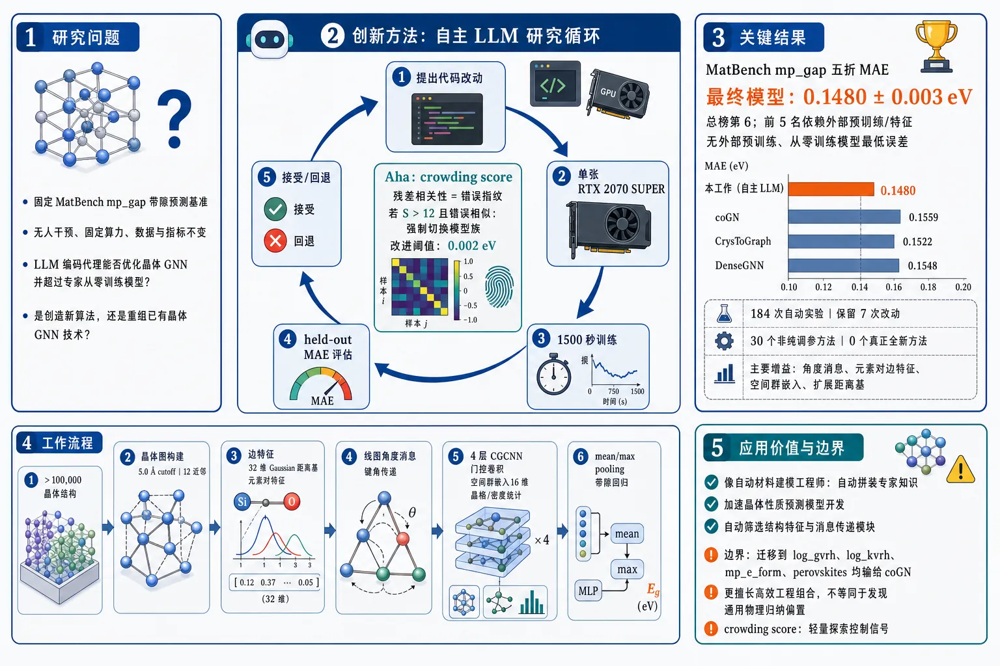
研究问题在固定 MatBench mp_gap 带隙预测基准上，通用 LLM 编码代理能否在无人干预、固定算力、不能修改数据与指标的条件下，自动优化晶体图神经网络，并超过人类专家设计的从零训练模型；同时要判断它是在创造新算法，还是仅在重组已有晶体 GNN 技术。创新方法构建“自主 LLM 研究循环”：Claude Code/Claude Opus 4.8 每轮只编辑模型代码，在单张 RTX 2070 SUPER、1500 秒预算内训练，用 fold 0 held-out MAE 判断是否保留改动，改进阈值为 0.002 eV。Aha 点是引入 crowding score：用不同模型在同一验证集上的残差相关性作为“错误指纹”，当当前最佳模型与一批同精度模型犯相同错误、S>12 时，强制代理停止小修小补并切换模型族。工作流程输入为超过 100,000 个晶体结构；先转成晶体图，使用 5.0 Å cutoff 与 12 近邻上限构边；边上加入 32 维 Gaussian 距离基、元素对特征，并通过线图传递键角消息；节点经 4 层 CGCNN 式门控卷积更新；全局拼接晶格/密度统计与 16 维空间群嵌入；mean/max pooling 后回归带隙。搜索阶段代理反复提出代码改动、训练、读取 held-out MAE、接受或回退；最终最佳模型用官方五折、每折 9000 秒重新训练输出带隙预测。关键结果最终模型在 MatBench mp_gap 上达到五折 MAE 0.1480 ± 0.003 eV，总榜第 6；前 5 名均依赖外部预训练或预训练特征，因此它是无外部预训练、从零训练模型中的最低误差模型，优于 coGN 0.1559 eV、CrysToGraph 0.1522 eV、DenseGNN 0.1548 eV。184 次自动实验中只保留 7 次改动，关键增益来自线图角度消息、元素对边特征、空间群嵌入和扩展距离基；30 个非纯调参方法中 0 个真正全新方法。应用价值证明 LLM 代理已能像自动材料建模工程师一样，在成熟材料基准中自动拼装专家知识并获得强性能，可用于加速晶体性质预测模型开发、自动筛选结构特征和消息传递模块。同时研究也给出边界：单任务搜索得到的模型迁移到 log_gvrh、logₖᵥᵣₕ、mpₑ_form、perovskites 时均输给 coGN，说明当前代理更适合高效工程组合，不等同于发现通用物理归纳偏置；crowding score 可作为未来自动科学系统的轻量探索控制信号。第一部分：核心概览
该研究把自主 LLM 编码代理引入材料性质预测基准，在 MatBench mp_gap 超过 100,000 个晶体的带隙预测任务上，通过 184 次自动实验组装出从零训练模型中的最低误差模型：五折 MAE 为 0.1480 ± 0.003 eV，优于 17 个专家设计的无外部预训练模型。核心贡献不在于发现全新算法，而在于证明 LLM 代理能在固定指标、固定算力和无人干预条件下，自动重组已有晶体图神经网络技术，如线图角度消息传递、元素对边特征、空间群嵌入、扩展径向基。同时，该研究揭示了单任务自动调优的局限：模型跨任务迁移性弱，搜索易陷入局部微调；提出的crowding score能推动代理切换模型族并改善探索。
---
第二部分：结构化快速回顾
《Optimizing Expert-Designed Crystal Graph Networks for Band-Gap Prediction with an Autonomous LLM Research Loop》（None，）
背景
晶体结构到材料性质的预测是计算材料科学的核心任务。MatBench 提供固定数据划分和统一 MAE 指标，适合检验自主研究代理。过去最佳模型多为专家基于物理和晶体结构知识设计的图神经网络，如 CGCNN、SchNet、ALIGNN、coGN。
方法
使用 Claude Code + Claude Opus 4.8 作为自动编码代理。代理只能修改训练脚本中的模型代码，不能改数据加载、验证折、误差计算。每次实验在单张 RTX 2070 SUPER 上限时 1500 秒，约束参数量约 5M。搜索阶段以 fold 0 held-out MAE 排序，只有改进超过 τ = 0.002 eV 才接受。最终模型用官方五折、每折 9000 秒重新训练。
结果
最终模型在 mp_gap 上达到 0.1480 ± 0.003 eV MAE，排名总榜第 6；前 5 个均依赖外部预训练或预训练特征。与从零训练的专家模型相比，该模型优于 coGN 0.1559 eV、CrysToGraph 0.1522 eV、DenseGNN 0.1548 eV 等。搜索中保留了 7 次改动，其中 5 个是真正的表征方法改动，全部属于已有晶体 GNN 方法的“再发现”。
讨论
性能提升来自已有方法的自动组合，而非算法原创。成功保留的机制包括 12 近邻图与 ALIGNN 式角度更新、元素对边特征、空间群嵌入、更宽 Gaussian 距离基。30 个非纯超参数算法尝试中，25 个为晶体 GNN 文献中的再发现，5 个为跨领域导入，0 个为全新方法。
局限
最终模型只在带隙任务上领先。固定架构和超参数迁移到 log_gvrh、logₖᵥᵣₕ、mpₑ_form、perovskites 后，均输给 coGN，误差高出 6%–33%。自动循环还容易在同一模型族内做学习率、宽度、深度、优化器等小改动，停止探索新范式。
结论
简单自主 LLM 研究循环可以优化专家设计的晶体图网络，并在单一成熟基准上超过从零训练的专家模型；但其主要能力是组合已有技术，不是创造新科学机制。Crowding score 通过检测残差相似性，能在搜索拥挤时促使代理尝试不同模型族，并在 shear modulus 任务上把 MAE 从无该机制时的最低 0.0721 降到 0.0699。
---
第三部分：逐章节冷凝解析
Abstract
- Autonomous LLM loop outperforms from-scratch expert models
在 MatBench band-gap 基准上，通用编码代理在无外部预训练条件下构建出最准确模型，测试对象为 超过 100,000 个晶体。关键事实为：*"On the MatBench band-gap benchmark (>100k crystals), a general-purpose coding agent autonomously built the most accurate model trained without external pretraining, ahead of all seventeen expert-designed models reported for the task."* 该结论的限定条件非常重要：领先对象是without external pretraining 的模型，不包括 foundation models。
- Performance comes from recombination, not invention
最终性能并非源于全新科学机制，而是来自已知方法的组合，包括元素对边特征和晶体空间群嵌入。核心证据为：*"A closer analysis shows it reached this by implementing known methods: either already standard in crystal neural-network models, or borrowed from other areas of machine learning."* 以及 *"The contributing implementations include element-pair features on each message-passing edge and a crystal space-group embedding."*
- Dual contribution: optimization demonstration and limitation analysis
研究同时证明自主 LLM 循环能优化材料性质预测模型，并系统检查其局限。原始表述为：*"The work not only demonstrates that LLM-agent autonomous research can optimize an expert-designed machine learning model for material property prediction, but also investigates the limitations of such autonomous research."*
---
1 Introduction
- Crystal property prediction is a mature benchmarked problem
晶体结构到性质预测已有标准化基准和大量公开模型，任务成熟度高。证据为：*"Predicting a crystal’s properties from its atomic structure is a central problem in computational materials science."* 以及 *"A decade of work has produced standardized public benchmarks."* 这种成熟性使其适合检验自动研究代理，因为目标指标、数据划分和比较基线清晰。
- Expert-designed graph neural networks encode physical structure
领域内强模型主要是晶体图神经网络，通过原子节点和键边显式编码局域几何。关键引述为：*"The most successful of these frameworks are graph neural networks, which represent a crystal as atoms joined by bonds and so build in the local geometry."* 典型专家设计包括 CGCNN 的局部化学环境、SchNet 的连续滤波卷积、ALIGNN 的线图角度信息：*"Xie & Grossman (2018) encoded each atom’s local chemical environment in a crystal graph"*；*"Schütt et al. (2018) used continuous-filter convolutions"*；*"Choudhary & DeCost (2021) added a line graph to encode the bond angles."*
- Autonomous agent setting fits fixed-metric model search
固定指标和专家基线构成了自主研究代理可利用的搜索环境。原文直接给出逻辑：*"A fixed metric and a field of expert-designed baselines are the conditions an autonomous research agent is built to exploit."* 该设置减少科学评价的不确定性，使代理每轮只需根据 held-out MAE 决策。
- Materials-science autonomous model optimization remained unresolved
虽然 LLM 代理已能完成机器学习研究管线，但是否能处理材料科学问题尚未明确。关键句为：*"That progress, however, has stayed mostly within machine learning and computer science."* 以及 *"Whether an LLM-driven coding agent can do the same on a materials-science question has not been established."* 难点不仅是代码能力，还包括科学建模判断：*"Success there needs two things: writing correct code... and the scientific judgment to turn each result into the next modeling decision."*
- MatBench mp_gap chosen as test field
使用 MatBench band-gap 任务，规模为 more than 100,000 crystals，且有 more than twenty published models with reported scores。引述为：*"We therefore use the MatBench benchmark... focusing on its band-gap task: more than 100,000 crystals and more than twenty published models with reported scores."*
- Workflow intentionally minimized and human-free
每次实验只修改训练脚本、消耗真实算力、返回单个 held-out 数字，且无人类介入。关键引述为：*"each experiment edits a training script, costs real compute, and returns only a single held-out number, with no human in the loop."* 这种设计把成功或失败归因于代理和评估循环，而不是人工筛选。
- Best from-scratch result achieved without materials-specific design
代理在没有材料专属人工设计的情况下，超过所有从零训练专家模型。原文称：*"with no materials-specific design, the agent built the most accurate model trained without external pretraining, ahead of all seventeen such from-scratch models reported for the task."*
- Crowding score addresses local refinement failure
自主循环存在“反复微调同一模型”的局限，因此提出 crowding score。该指标衡量最佳模型与同等准确模型是否犯相同错误。关键引述为：*"the agent keeps making small changes to one model and stops improving, instead of exploring a different approach."* 解决方案为：*"a crowding score that measures how much the best model so far makes the same mistakes as other equally accurate models."* 在第二任务 log_gvrh 上，带 crowding score 的循环在 experiment 40 达到 0.0699 log10 GPa MAE，无该机制的 160 次实验始终未低于 0.0721：*"the loop reaches a mean absolute error of 0.0699 in log10 GPa by experiment 40, while the same loop without it never gets below 0.0721 across all 160 experiments."*
---
2 Experimental Setup
- Primary task and metric
主任务为 mp_gap：从晶体结构预测电子带隙，单位 eV，评价指标为固定五折划分上的 mean absolute error。原始定义为：*"predict the electronic band gap in eV from a crystal structure, scored as the mean absolute error over a fixed five-fold partition of more than 100,000 crystals."*
- Reference baselines are strong expert GNNs
关键基线包括 coGN 0.1559 eV、CrysToGraph 0.1522 eV、DenseGNN 0.1548 eV。引述为：*"The standard reference on this task is coGN... at 0.1559 eV."* 以及 *"Two newer crystal graph networks report lower error: CrysToGraph at 0.1522 eV... and DenseGNN... at 0.1548 eV."*
- Autonomous loop accepts only meaningful improvements
代理编辑训练代码，训练后根据准确率保留或丢弃改动；只有 held-out MAE 下降超过 τ = 0.002 eV 才被视作真实改进。证据为：*"the agent edits the training code, the edited model is trained under a fixed budget, the change is kept or dropped by its measured accuracy, and the loop repeats."* 以及 *"we require a change to lower the held-out mean absolute error by more than τ = 0.002 eV to count as a real improvement, not run-to-run noise."*
- Compute budget is intentionally modest
每次搜索训练上限为 1500 秒，即 25 分钟，硬件为单张 RTX 2070 SUPER GPU，候选模型约束在 约 5M 参数。原始说明为：*"Each training run is capped at 1,500 seconds (25 minutes) on a single RTX 2070 SUPER GPU, and each candidate model is limited to about five million parameters."*
- Agent and ranking protocol are fixed
使用 Claude Code 运行 Claude Opus 4.8，thinking-effort 设为 max；搜索阶段只用 fold 0 单一 held-out fold 排名。关键引述为：*"We use Claude Code as the agent, running Claude Opus 4.8 at its highest thinking-effort setting (max)."* 以及 *"During the search, each candidate is ranked on a single held-out fold (fold 0)."*
- Final evaluation uses official five-fold longer training
搜索结束后取最低误差模型，在官方五折上每折训练 9000 秒。证据为：*"After the loop ends, we take the lowest-error model as the final model and train it on the official five-fold split, 9,000 seconds per fold."*
- Evaluation harness prevents metric gaming
代理只能改模型代码，不能改数据加载、held-out fold 和误差计算。关键引述为：*"the agent edits only the model code, while data loading, the held-out fold, and the error computation are run by fixed scripts the agent cannot change."* 该约束保证所有候选按相同协议评估。
- Secondary task enables cheap workflow development
第二任务为 log_gvrh，预测剪切模量 GPa 的十进制对数，数据量约 11,000 个晶体，单次预算降至 180 秒。证据为：*"log_gvrh, which predicts the base-ten logarithm of the shear modulus in GPa."* 以及 *"This task has far fewer crystals (~11,000), so each model trains quickly and we cut the per-run budget to 180 seconds."*
---
3 A competitive model assembled from known methods
- Final model ranks below pretrained models but above all from-scratch models
最终模型官方五折 MAE 为 0.1480 ± 0.003 eV，图中排名第 6；前五名均依赖外部预训练或预训练特征。证据为：*"The model reaches a mean absolute error of 0.1480 ± 0.003 eV, ranking 6th in the figure."* 以及 *"The five models ahead of it... all rely on external pretraining."* 从零训练模型中则最优：*"Among the models trained from scratch on this task alone, the loop’s model... is more accurate than every expert-designed one."*
- Search trajectory shows seven accepted changes over 184 experiments
自动循环共进行 184 次实验，黑线表示已保留最佳 held-out MAE，灰点为未被接受实验。证据为：*"Figure 2 shows the agent’s exploration over 184 experiments."* 关键接受节点包括 experiment 12 达到 0.1679 eV，experiment 63 达到 0.1578 eV，最终 held-out 最佳 0.1554 eV：*"the bond-angle and connectivity change at experiment 12 (to 0.1679 eV) and the space-group symmetry change at experiment 63 (to 0.1578 eV)."* 以及 *"Seven kept changes in all bring the model from its untuned baseline near 0.18 eV to its best model at 0.1554 eV."*
- Largest gain comes from angle-aware line graph plus learned connectivity style
最大单次改进为加入线图 bond-angle messages 和 nearest-neighbour connectivity，对应 ALIGNN、DimeNet++、coGN 的已有思想。证据为：*"The largest single gain adds bond-angle messages through a line graph... together with a learned nearest-neighbour connectivity in the style of coGN."* 线图的功能定义为：*"a graph whose nodes are the edges of the crystal graph, so the model can use the angles between bonds."*
- Later improvements add composition, symmetry, and distance primitives
后续保留的表征改动包括元素对边特征、空间群嵌入和更宽 Gaussian 距离基。原文为：*"The later changes add element-pair features on each edge, a space-group embedding for crystal symmetry... and a wider Gaussian basis for the interatomic distances."*
- Accepted method changes are all rediscoveries
排除宽度、学习率等纯超参数后，共识别 30 个 distinct methods。其中 5 个 accepted changes 全部是晶体 GNN 文献中的 rediscovery；被丢弃的 25 个中有 20 个 rediscovery、5 个 cross-domain imports、0 个 novel。证据为：*"This left 30 distinct methods."* 以及表 1：*"Accepted 5 0 0 5... Discarded 20 5 0 25... Total 25 5 0 30."*
- No genuinely novel algorithmic idea appears
所有 30 个非纯调参方法中，没有任何一个被分类为 novel。关键句为：*"None of the 30 is novel."* 因此最终竞争力来自已知机制组合：*"The competitive model of Figure 1 is therefore built by recombining known methods alone."*
- Cross-domain attempts were tried but reverted
5 个跨领域导入包括 inverse-distance Coulomb edge、element-product edge、per-atom neighbor-composition descriptor、robust regression loss、stochastic depth。原始列举为：*"They add an inverse-distance Coulomb edge, an element-product edge, and a per-atom neighbor-composition descriptor, train with a robust regression loss, and apply stochastic depth."* 这些尝试均未成为最终保留机制。
---
4 The model does not transfer to other tasks
- Transfer evaluation fixes architecture and hyperparameters
为测试泛化性，最终模型架构和超参数保持不变，重新训练于四个其他 MatBench 结构性质任务：log_gvrh、logₖᵥᵣₕ、mpₑ_form、perovskites。证据为：*"we keep the final model’s architecture and hyperparameters fixed and retrain it on four other MatBench tasks."*
- Selected tasks cover elastic modulus and formation energy
四个任务包括弹性模量预测和形成能预测，都属于从晶体结构预测性质。原文为：*"elastic-modulus prediction (log_gvrh and logₖᵥᵣₕ₎ and formation-energy prediction (mpₑ_form and perovskites)."* 以及 *"each predicts a property from a crystal’s structure, the same kind of task as the band gap."*
- coGN is the transfer benchmark because it uses one general design
coGN 被选为比较对象，因为它在多个任务上强且使用单一通用配置。关键证据为：*"We compare against coGN because it is one of the strongest models across these tasks and is a single general design."* coGN 的配置来自在 log_gvrh 上优化后不经任务特异调参应用于其他任务：*"its authors found one architecture and one set of hyperparameters by optimizing on a single task, log_gvrh, then applied them unchanged to every other task."*
- Band-gap-optimized model loses on all four transfer tasks
最终模型在 mp_gap 上胜过 coGN，但在四个其他任务上均输给 coGN，差距为 6%–33%。证据为：*"our model beats coGN on the band gap but loses to it on all four other tasks, by six to thirty-three percent."*
- Leaderboard positions become mid-range
在四个迁移任务上，模型排名分别为 第 5、第 4、第 4、第 8，不再是领先模型。原文为：*"On those four tasks the retrained model places 5th, 4th, 4th, and 8th respectively among the established MatBench submissions."* 这表明其优势是带隙单任务搜索结果，而不是通用材料表征能力：*"an ordinary mid-leaderboard standing rather than a leading one like coGN."*
- Physical inductive bias transfers better than single-task automated tuning
coGN 的优势来自对晶体结构连边方式的物理设计，而自动搜索模型则更偏任务特异调优。关键表述为：*"the loop produced a model tuned to the band gap."* 以及 *"An expert-designed model like coGN instead rests on a general design choice grounded in crystal structure, how atoms are connected in the graph."*
---
5 Getting the agent to try new models
- The autonomous loop stagnates after early gains
在 mp_gap 上，最佳误差约在前 100 次实验后达到最低，后续不再改善。证据为：*"the AI agent lowered its error quickly at first and then stopped: its best model reached its lowest error after about one hundred experiments and did not improve over the rest of the run."* 停滞原因是代理继续微调已充分优化模型：*"The agent kept refining one model it had already tuned well, rather than trying a different kind of model."*
- Stagnation is clearer on log_gvrh
在 log_gvrh 上，以 mp_gap 最佳模型迁移版为种子，初始约 0.076，约 experiment 40 降至 0.0721，之后 100 多次实验无进一步改善。证据为：*"Seeded with the best mp_gap model retrained on this task at about 0.076, the agent lowered the error to 0.0721 by about experiment 40, then ran more than one hundred further experiments without lowering it again."*
- Failure mode is local hyperparameter/architecture refinement
无 crowding score 时，代理主要调整学习率、宽度、深度、优化器，没有切换到不同图结构或特征嵌入。原文为：*"the agent kept making small changes to the same model, adjusting its learning rate, width, depth, or optimizer, and never tried a different one, such as a different graph structure or feature embedding."*
- Crowding score uses residual correlation to detect redundancy
Crowding score S(e) 衡量模型 e 与其他同等准确模型是否产生相似残差。公式为：
S(e)=Σf≠ₑ, |MAE_ₑ−MAE_f|<τ max(0, ρ(rₑ,r_f)), τ=0.004。
原始定义为：*"We compute a single quantity, the crowding score S(e) for each committed model e, to measure how much model e repeats the models already tried."* 残差向量定义为：*"rₑ = ŷₑ − y is model e’s vector of per-crystal errors on a fixed held-out set."*
- Residual vector functions as behavioral fingerprint
两个模型如果在同一批晶体上犯相同错误，其残差向量相关性高，因此 crowding score 高。关键解释为：*"A model’s residual vector is its fingerprint, so two highly similar models produce residual vectors that are highly correlated."*
- Threshold S > 12 triggers model-family change
当最佳模型 S > 12，代理被提示停止微调并构建不同模型。证据为：*"Once the best model has S > 12, we tell the agent to stop refining it and build a different kind of model."* 该分数由 harness 计算，代理看不到残差本身：*"The score is computed by the harness from residuals the agent never sees."*
- Crowding score induces switch to PaiNN-style equivariant network
带 crowding score 的 log_gvrh 运行中，卷积模型在 experiment 15 达到拥挤阈值，代理在 experiment 16 切换到 PaiNN-style equivariant network，即同时携带方向性向量特征和标量特征。证据为：*"the agent switched to a PaiNN-style equivariant network, one that carries directional vector features alongside the usual scalar ones, at experiment 16."*
- New model family surpasses old best quickly
PaiNN 初版较差，但几次改进后在 experiment 19 超过卷积模型最佳，并在 experiment 40 达到 0.0699。无 crowding score 的运行即使实验数超过三倍也未低于 0.0721。关键证据为：*"after a few refinements it passed their best at experiment 19 and reached 0.0699 by experiment 40, below the 0.0721 the run without the score never passed despite running more than three times as many experiments."*
---
6 Related work
- Band-gap prediction has diverse existing baselines
mp_gap 已有从消息传递晶体图网络到预训练 foundation models 的大量模型。证据为：*"Predicting the band gap from crystal structure is an established machine-learning task with many published models."* 在无外部预训练模型中，该循环模型达到最低误差：*"Among the models trained without external pretraining, the loop’s model reaches the lowest reported error."*
- Autonomous research loops mostly target ML engineering and code tasks
已有自主代理系统在机器学习工程、代码、数学中展示能力，例如 AIDE、AI Scientist、AlphaEvolve。原文为：*"LLM agents that propose, run, and keep code changes against a held-out metric have been built for machine-learning engineering."* 以及 *"These systems were demonstrated on machine-learning, coding, and mathematics benchmarks."*
- Materials-property optimization requires domain-specific scientific knowledge
与一般代码调优不同，材料性质预测需要晶体结构、化学键、空间群对称性知识。关键对比为：*"We instead apply such a loop to a materials-property benchmark, which calls for domain knowledge of crystal structure, chemical bonding, and space-group symmetry rather than a general code change."*
- Prior LLM materials work focuses more on discovery and synthesis
材料科学中的 LLM 代理主要用于新化合物和合成路线，而不是优化性质预测模型。证据为：*"LLM agents in materials science have largely proposed new compounds and synthesis routes rather than optimizing a property-prediction model."* 因此自主循环在该任务上会收敛到什么机制此前尚未被刻画：*"what such a loop converges on for this task has not, to our knowledge, been characterized."*
---
7 Conclusion
- Simple autonomous LLM loop can exceed expert from-scratch models
在成熟材料基准上，通用编码代理能够生成与专家设计模型竞争、甚至在无预训练组中领先的模型。原文总结为：*"On the band-gap task, the loop built the most accurate model trained from scratch, ahead of every expert-designed one."*
- Mechanism is assembly of existing methods
性能来源是组合已有方法，而不是发明新模型机制。关键句为：*"by assembling existing methods rather than inventing a new one."* 这一定义了该工作的科学边界：自动研究循环擅长在既有方法库中搜索组合。
- Two limitations remain
两个主要局限为：模型不能迁移到其他任务；代理容易陷入微小调整而不探索新方法。证据为：*"Two limitations remain: (a) the model the agent optimized does not transfer to other tasks... and (b) the agent tends to stop improving, making small adjustments rather than exploring a different approach."*
- Crowding score provides a lightweight exploration trigger
crowding score 是一个标量，衡量当前最佳模型是否重复其他同等准确模型的错误。原文为：*"we propose the crowding score, a scalar that measures the extent to which the current best model repeats the errors of other equally accurate models."* 高分时提示代理开发不同模型类别：*"When this score is high, we prompt the agent to develop a different class of model."*
- Future direction extends to broader materials model families
后续方向包括将同类循环扩展到机器学习原子间势和材料 foundation models。证据为：*"Applying the same loop beyond band-gap prediction, to other graph-network model families such as machine-learning interatomic potentials and foundation models for materials, is a direction for future work."*
---
Appendix A Final model architecture
- Final model is compact relative to search limit
最终模型约 503,617 参数，远低于搜索阶段“约 5M 参数”上限；宽度为 120，包含 4 个 message-passing layers。证据为：*"The final model (about 503,617 parameters) is a crystal graph network with width 120 and four message-passing layers."*
- Graph construction uses cutoff plus kNN cap
晶体图使用 5.0 Å cutoff 和 12 个 k-nearest-neighbour cap。原文为：*"A crystal is converted to a graph with a 5.0 Å cutoff and a k-nearest-neighbour cap of 12."* 该设计属于最终模型的connectivity primitive。
- Edge features combine distance basis and element pairs
每条边包含 32 维 Gaussian radial basis 和端点元素对。证据为：*"Each edge carries a 32-component Gaussian radial basis of the interatomic distance together with the element pair of its endpoints."* 这对应distance与composition primitives。
- Angle primitive uses ALIGNN-lite line graph update
一次 ALIGNN-lite 更新在共享原子的键之间传递角度感知消息，并使用 8 维 bond-angle cosine basis。关键引述为：*"One ALIGNN-lite update passes angle-aware messages between bonds that share an atom, using a line graph and an 8-component basis of the bond-angle cosine."*
- Atom updates use CGCNN-style gated convolutions
原子状态由 4 个 CGCNN-style gated convolutions 更新。证据为：*"Four CGCNN-style gated convolutions update the atom states."*
- Global term encodes lattice, density, and space-group symmetry
全局特征拼接 6 个 lattice and density statistics 与 16 维 space group embedding；空间群类别为 231。证据为：*"A global term concatenates six lattice and density statistics with a 16-dimensional embedding of the space group, one of 231."*
- Readout and training use pooled atom states and EMA
readout 对原子状态做 mean/max pooling，再拼接全局项回归带隙；训练使用 Adam、cosine schedule，预测使用 EMA 权重。原文为：*"Readout pools the atom states by mean and max, appends the global term, and regresses the band gap."* 以及 *"Weights are trained with Adam under a cosine schedule, and predictions use an exponential moving average of the weights."*
---
Appendix B Kept changes and their provenance
- Accepted trajectory documents seven kept changes
表 2 记录搜索中所有保留变化。初始 baseline 在 experiment 1 为 0.1780 eV；experiment 5 宽度 64→96 后 0.1757 eV；experiment 12 加入 K=12 kNN cap + ALIGNN-style angle update 后 0.1679 eV；experiment 25 加入元素对边特征后 0.1636 eV；experiment 27 宽度 96→112 后 0.1610 eV；experiment 63 加入空间群嵌入与宽度 120 后 0.1578 eV；experiment 109 扩展 Gaussian radial basis 后最终 0.1554 eV。表题说明为：*"Each kept change of the reported search, in order, with the experiment that introduced it, its MAE, the representational primitive it changed, and the prior crystal-network method it rediscovers."*
- Accepted representational primitives map to prior literature
保留机制均能追溯到已有方法：connectivity/angles 对应 CGCNN、ALIGNN、DimeNet++；composition 对应 MEGNet；symmetry 对应 CLOUD、Automatminer；distances 对应 SchNet。原文表述为：*"Prior source (rediscovery)"*，并在表中列出 *"CGCNN... ALIGNN... DimeNet++"*、*"MEGNet"*、*"CLOUD... Automatminer"*、*"SchNet"*。
- Cross-domain reverted methods are explicitly catalogued
表 3 列出 5 个被尝试后回退的跨领域方法：experiment 42 的 per-atom neighbor-composition descriptor，experiment 92 的 element-product edge，experiment 126 的 robust regression loss，experiment 151 的 inverse-distance Coulomb edge，experiment 169 的 stochastic depth。表题说明为：*"The five cross-domain methods the agent tried and reverted, with the experiment that introduced each and its prior source."*
---
Appendix C Prompts with crowding score
- Prompt frames the agent as a novelty-driven materials ML researcher
代理被要求追求 matbenchₗₒg_gvrh 官方 held-out fold 上最低 MAE，且强调不是调参器。提示中写道：*"You are a creative materials-science ML researcher."* 以及 *"You are a scientist, not a tuner."*
- Agent can edit only one file under fixed evaluation
prompt 规定只能编辑 train.py，prepare.py 只读，不能直接读取 data。原文为：*"You edit ONE file (train.py), run it, and commit it."* 以及 *"prepare.py (READ-ONLY: data, official fold, private TEST labels, the MAE metric – never edit it, never read data/* directly)."*
- Crowding score directly controls search behavior
prompt 要求每轮先读 noveltyᵣₑₚₒᵣₜ.md，检查 S(a) 是否饱和；当 S(a)>12 时停止微调并发明不同模型。关键指令为：*"SATURATED (S(a) > 12 – the family keeps building near-duplicates that score the same and make the same mistakes) → STOP refining; this mechanism is exhausted."*
- Best-model restoration avoids drifting from inferior commits
每轮修改前必须运行 checkout_best.sh，保证从当前最优模型继续，而非从最近提交的模型继续。原文为：*"FIRST run bash checkout_best.sh – it restores train.py to the best (lowest-mae) model so far."*
- Commit hook records fingerprints for novelty scoring
运行、提交、记录顺序被严格规定，因为 post-commit hook 会把模型 fingerprint 绑定到新 commit 并更新 novelty report。证据为：*"RUN, then COMMIT: the run stages this model’s fingerprint. THEN commit – the post-commit hook keys the fingerprint by the new commit and rewrites noveltyᵣₑₚₒᵣₜ.md."*
---
第四部分：深度理解与语言支持
1. 术语解析
- From scratch / without external pretraining
指模型只使用目标任务训练数据训练，不引入在大规模外部材料数据上预训练得到的表示或权重。这里的性能比较极其依赖该限定：最终模型优于所有 from-scratch 专家模型，但仍落后于若干 foundation-model 方法。微妙之处在于，“from scratch 最优”不等于“总榜最优”。
- Rediscovery
在该研究语境中不是“科学发现”，而是代理独立提出了已有晶体 GNN 文献中的方法。例如线图角度消息传递、Gaussian 距离基、空间群特征等。它说明代理具备有效搜索和组合能力，但不构成真正原创算法贡献。
- Cross-domain import
指方法不在晶体 GNN 参考集合中，但存在于其他机器学习或材料特征工程文献中。例如 stochastic depth 来自通用深度学习，robust regression loss 出现在其他材料模型中。微妙点在于：cross-domain import 具有迁移创造性，但仍不是 novel。
- Held-out fold
搜索过程中保留不用来训练的验证折，用于评估每次代码改动。这里使用 fold 0 排名候选模型，最终才用官方五折完整评估。held-out fold 能抑制训练集过拟合，但仍可能导致对单一验证折的搜索过拟合。
- Crowding score
一种基于残差相关性的搜索拥挤度指标。它不看模型结构是否相同，而看模型是否在同一批样本上犯相同错误。两个结构不同但错误模式高度相关的模型，仍会被判为行为上拥挤。
2. 疑难查证
- 为什么“残差相关性”能衡量模型是否真的不同？
假设两个模型 MAE 都接近 0.072，但它们错的样本完全不同，那么二者可能具有互补性：一个捕捉了某类材料，另一个捕捉了另一类材料。相反，如果两个模型在相同晶体上都高估、在相同晶体上都低估，则残差向量高度相关，即使参数、层数或学习率不同，它们的功能行为也近似。crowding score 利用这一点，把“看起来不同的代码改动”转化为“预测错误模式是否不同”的行为度量。
- 为什么最终模型能赢 mp_gap 却不能迁移？
带隙预测对电子结构、局部化学环境、对称性、元素组合很敏感。自动搜索反复围绕 mp_gap 的 held-out MAE 优化，可能选中对带隙特别有效但对弹性模量、形成能不稳健的特征组合。coGN 的核心设计是晶体图连接方式，这种归纳偏置更接近通用结构表征，因此跨任务更稳定。
- 为什么 0 个 novel 方法并不削弱结果的重要性？
科学创新可以来自新算法，也可以来自新实验事实。这里的关键事实是：在材料科学成熟基准上，一个通用 LLM 代理能自动找到并组合多个专家方法，超过专家从零训练模型。负面结果同样重要：它清楚显示当前自主研究循环更像“自动工程优化器”，而不是“自主理论发明者”。
---
第五部分：创新评估与关联
1. 创新性判断
- 相对于近 2–5 年晶体 GNN 工作的新颖性
近年晶体性质预测进展主要来自更强图结构、更深消息传递、角度/三体信息、dense connections、foundation pretraining 或多任务迁移。该研究没有提出新的晶体 GNN 层，也没有提出新的材料物理表征；新颖性在于把 自主 LLM 研究循环作为实验主体，检验其是否能在真实材料科学基准上自动超过专家模型。
- 相对于 autonomous research agents 的新颖性
现有 AI Scientist、AIDE、AlphaEvolve 等多集中于机器学习、代码、数学任务。该研究把类似循环推进到材料性质预测，该场景需要晶体结构、化学键、空间群等领域知识。创新点是把 LLM agent 的能力从一般代码调优扩展到领域科学模型优化，并系统分析其收敛到哪些方法。
- 解决的前人未充分解决问题
过去缺少明确证据回答：通用 LLM 编码代理在没有人类材料专家干预时，能否在标准材料性质预测任务上超过专家设计模型；如果能，它是发明新机制，还是重组已有机制；如果失败，失败模式是什么。该研究给出三个答案：
- 能超过无外部预训练专家模型；
- 主要靠重组已有方法，不靠原创算法；
- 容易陷入局部微调，需探索压力机制如 crowding score。
- 最重要科学创新点
行为拥挤度驱动探索是方法论上最具推广性的部分。与复杂树搜索、进化种群不同，crowding score 只用 held-out 残差相关性识别“同质化模型族”，在不暴露测试标签给代理的情况下促使其切换建模范式。该机制在 log_gvrh 上将最佳 MAE 从无该机制时的 0.0721 改善到 0.0699，说明简单的行为多样性信号可以显著改变 LLM 代理的搜索轨迹。
- 领域地位判断
在材料信息学中，该研究更像一篇自动科学方法论论文，不是传统模型架构论文。其价值不在于最终架构会取代 coGN、ALIGNN 或 foundation models，而在于建立了一个可审计案例：自主 LLM 代理已能在成熟材料基准上做出高水平工程组合，但尚未表现出真正原创科学建模能力，也尚未获得专家物理归纳偏置带来的跨任务泛化性。
-
04
📊 含图深析
📄 摘要：对 Ti、V、Cr、Zr、Nb、Mo、Hf、Ta、W 九种 4–6 族过渡金属组成的 126 种五金属 AlB2 型高熵硼化物进行 DFT 筛选。用熵形成能力描述符评估单相可合成性，并与部分实验结果吻合；通过特殊准随机结构计算弹性和力学性质。
💡 亮点：126 种五金属 AlB2 型高熵硼化物被系统枚举，EFA 给出单相形成倾向并与实验对照。DFT+机器学习框架为超硬、耐高温硼化物合金的组合空间筛选提供了可复用范式。
📖 展开分析 + 配图
研究问题如何在九种 4–6 族过渡金属 Ti、V、Cr、Zr、Nb、Mo、Hf、Ta、W 组成的 126 种五金属 AlB₂ 型高熵硼化物中，快速判断哪些材料既能形成单相无序固溶体，又具有高剪切模量、高硬度等优异力学性能；核心矛盾是“巨大组合空间、实验筛选昂贵、可合成性与力学性能缺乏统一可解释指标”。创新方法提出一条可视化为“计算筛选漏斗”的 DFT–EFA–SQS–XGBoost 联合框架：用 AFLOW-POCC 生成 15 原子构型能量分布，以 EFA=1/σE 衡量单相可合成性；用 60 原子 SQS 超胞计算弹性常数、体模量、剪切模量和 Tian 硬度；再将 60 个组成描述符与 19 个局域键长结构描述符输入 XGBoost。Aha 点在于把“能量景观平坦度、Cr 异常效应、B–B/M–M 键长无序、机械稳定性”连成一张可解释设计图。工作流程输入九种过渡金属元素池，枚举 126 个五金属 HEB 组合；每个组合先进入 AFLOW-POCC，生成 84 个 15 原子有序构型并用 DFT 计算能量分布，得到 EFA 热图；随后构建 60 原子 SQS 无序超胞，弛豫后用应力–应变法获得弹性常数，再经 Voigt–Reuss–Hill 近似得到 B、G，并用 Tian 模型得到硬度 H；最后提取组成特征和 B–B、M–M、M–B 键长均值/标准差/范围，训练 XGBoost，输出高 EFA、高模量、高硬度候选与关键设计变量。关键结果EFA 覆盖 58.99–294.64 (eV/atom)⁻¹，最高为 HfMoNbTaZrB₁₀，最低为 CrHfNbVZrB₁₀；最高 EFA 前五名均不含 Cr，最低 EFA 前五名全部含 Cr，且 10 个机械不稳定或未收敛体系中 80% 含 Cr。多数稳定材料体模量集中在 270–310 GPa，剪切模量约 140–230 GPa，硬度多为 15–35 GPa。XGBoost 加入结构特征后预测精度达到 B：r=0.93、MAE=2.61 GPa；G：r=0.85、MAE=6.39 GPa；H：r=0.91、MAE=1.34 GPa。重点候选 HfNbTaTiZrB₁₀ 同时具有 EFA=240.56、G=228 GPa、H=34.48 GPa。应用价值为极端环境高熵陶瓷提供一张“可合成性–强度–硬度”材料设计地图，可优先实验合成 HfNbTaTiZrB₁₀、HfMoNbTaZrB₁₀ 等高 EFA 高性能候选，同时提示 Cr 是需要谨慎调控的风险元素。该框架可扩展到高熵碳化物、硅化物、氧化物和六元以上复杂陶瓷，用于航空航天、超高温结构件、耐磨涂层、抗氧化硬质材料等场景。第一部分：核心概览 (Overview)
该研究系统覆盖九种 4–6 族过渡金属构成的 126 种五金属高熵硼化物，以 DFT、AFLOW-POCC、SQS 与 XGBoost 联合评估 单相可合成性与力学性能。核心贡献在于建立 EFA–机械稳定性–局域结构无序–机器学习特征重要性之间的可解释联系，指出 Cr 显著降低 EFA 并关联机械不稳定；同时筛选出 HfNbTaTiZrB₁₀ 等兼具高 EFA、高剪切模量和高硬度的候选材料，为极端环境用高熵硼化物设计提供系统路线图。
---
第二部分：结构化快速回顾
《Synthesizability and Mechanical Properties of High-Entropy Borides: First-Principles and Machine Learning Studies》（None，）
背景
过渡金属硼化物具有高硬度、不可压缩性和化学稳定性，是典型超高温陶瓷；高熵硼化物通过多主元近等摩尔混合扩展了性能设计空间，但五元组合数量巨大，实验逐一筛选成本极高。单相形成能力和力学性能预测仍缺乏大规模、系统、可解释的数据集。
方法
选取 Ti、V、Cr、Zr、Nb、Mo、Hf、Ta、W 九种 4–6 族过渡金属，枚举全部 126 种五金属 AlB₂ 型 HEBs。使用 AFLOW-POCC 15 原子胞计算 EFA；使用 60 原子 SQS 超胞计算弹性常数、体模量、剪切模量与 Tian 模型硬度；使用 XGBoost 基于 60 个组成描述符和 19 个结构描述符建立回归模型。
结果
EFA 范围为 58.99–294.64 (eV/atom)⁻¹。最高 EFA 为 HfMoNbTaZrB₁₀：294.64，最低为 CrHfNbVZrB₁₀：58.99。前三个实验 XRD 样品显示 EFA 与单相倾向一致。多数稳定材料体模量集中于 270–310 GPa，剪切模量约 140–230 GPa，硬度多在 15–35 GPa。含组成与结构特征的 XGBoost 模型达到 B：r=0.93，MAE=2.61 GPa；G：r=0.85，MAE=6.39 GPa；H：r=0.91，MAE=1.34 GPa。
讨论
Cr 是最突出的异常元素：最低 EFA 的五种材料全部含 Cr；10 个机械不稳定或未收敛条目中 80% 含 Cr。Cr 可能因磁不稳定性或强晶格畸变扩大能量分布并降低单相形成概率。结构特征中 B–B 面内键长标准差和 M–M 面外键长标准差与力学性质显著相关，表明局域无序直接影响刚度。
局限
数据集仅 126 个样本，ML 模型可解释性强于外推能力。EFA 基于非磁性 DFT，未显式处理 Cr 的自旋极化和局域磁涨落。实验验证只覆盖少量代表性组合，仍需扩展至非等摩尔、六元以上以及其他陶瓷族。
结论
DFT–EFA–SQS–ML 联合框架能够高通量筛选兼具单相可合成性与优异力学性能的 HEBs。HfNbTaTiZrB₁₀ 尤具吸引力，EFA 为 240.56 (eV/atom)⁻¹，剪切模量 228 GPa，硬度 34.48 GPa。Cr 含量、离子性、d 电子占据和局域键长畸变构成关键设计变量。
---
第三部分：逐章节冷凝解析 (Section-by-Section Condensing)
Abstract
- Systematic coverage of five-metal high-entropy borides
研究对象覆盖 AlB₂ 六方结构中的全部 126 种五金属 HEBs，元素池为九种 4–6 族过渡金属 Ti、V、Cr、Zr、Nb、Mo、Hf、Ta、W；原文明确给出规模与元素范围：*"considering all 126 possible elemental combinations among the nine group 4-6 transition metals (Ti, V, Cr, Zr, Nb, Mo, Hf, Ta, and W)"*。这种全组合枚举避免了只研究少数经验候选材料的偏倚。
- EFA as a synthesizability descriptor
entropy forming ability, EFA 被用作单相可合成性的核心指标，并与实验数据对照；原文指出：*"The entropy forming ability (EFA) descriptor is employed to evaluate their single-phase synthesizability"*，且预测结果与实验吻合：*"the resulting EFA predictions show good agreement with the experimental data for selected HEBs"*。
- SQS-based mechanical-property calculation
力学性质通过 special quasi-random structures, SQS 处理无序原子排列；原文为：*"Mechanical properties are computed using special quasi-random structures"*。该方法使弹性常数、体模量、剪切模量和硬度计算能够近似真实无序固溶体。
- Cr-containing compounds as instability-prone systems
多种机械不稳定化合物主要含 Cr，且这些体系也倾向于较低 EFA；原文表述为：*"Several mechanically unstable compounds – primarily those containing Cr – are also predicted to be less synthesizable"*。这将 可合成性降低与力学不稳定联系到同一化学因素。
- Ab initio and ML roadmap for HEB design
第一性原理与机器学习结合形成材料筛选路线；原文总结为：*"This combined ab initio and ML study provides a systematic roadmap for identifying mechanically superior single-phase HEBs"*。核心目标是同时优化 单相稳定性与力学性能。
---
I Introduction
- Transition-metal borides as ultra-high-temperature ceramics
过渡金属硼化物属于超高温陶瓷，关键优势包括 exceptional hardness、incompressibility、chemical stability；原文为：*"Transition-metal (TM) borides are an important class of ultra-high-temperature ceramics known for their exceptional hardness, incompressibility, and chemical stability"*。这些性质使其适合高温、磨损、氧化等极端环境。
- Strong bonding origin of mechanical superiority
力学性能来自两类强键：B–B 共价键与M–B 键；原文指出：*"Their superior mechanical properties originate from strong covalent boron-boron bonds together with robust metal-boron bonding"*。这意味着硼层内共价网络和金属–硼框架共同支撑高模量与高硬度。
- HEBs as compositionally complex ceramics
高熵硼化物是成分复杂陶瓷的新兴分支；原文称：*"high-entropy borides (HEBs) have emerged as a promising subclass of compositionally complex ceramics"*。高熵材料通常含 五种或更多元素，且接近等摩尔配比：*"High-entropy materials consist of five or more elements in near-equimolar ratios"*。
- Configurational entropy expands property space
多主元体系可由 configurational entropy 稳定，并展现二元或三元材料以外的性质；原文为：*"they can be stabilized by configurational entropy and exhibit properties beyond those of their binary or ternary counterparts"*。这里的创新基础是熵稳定单相固溶体，而非单一元素化学优化。
- Experimental progress motivates systematic design
实验已合成多种 HEBs，并观察到优异硬度、热稳定性和抗氧化性；原文指出：*"Recent experiments have successfully synthesized a variety of HEBs and demonstrated their excellent hardness, thermal stability, and oxidation resistance"*。因此，HEBs 被定位为极端应用材料空间：*"a rich materials-design space for next-generation extreme applications"*。
- Not all combinations form single-phase HEBs
并非所有元素组合都能形成稳定单相；原文直接指出：*"not all elemental combinations can form stable single-phase HEBs"*。由于组合空间巨大，实验试错不可行：*"experimental trial-and-error approaches prohibitively expensive for systematically identifying synthesizable HEBs"*。
- Computational descriptors are essential
需要可靠的计算描述符筛选单相可合成性；原文称：*"reliable computational descriptors are highly desirable"*。已有指标包括 EFA、DEED、MEED、lattice mismatch、valence electron count，原文列举：*"Several metrics, including entropy forming ability (EFA), disordered enthalpy-entropy descriptor (DEED), mixed enthalpy-entropy descriptor (MEED), as well as designing principles based on lattice mismatch and valence electron count"*。
- SQS is needed for disorder-sensitive mechanics
HEB 的力学性质和无序效应难以预测，因为精确第一性原理建模通常需要大超胞；原文指出：*"Accurate first-principles modeling typically requires large supercells to capture their disordered atomic arrangements"*。SQS 是处理替位无序的有效框架：*"The special quasi-random structure (SQS) approach has emerged as an effective framework for representing substitutional disorder in periodic density functional theory (DFT) calculations"*。
- Data scarcity motivates systematic DFT and ML
HEB 的综合数据集仍有限；原文指出：*"comprehensive datasets for HEBs remain limited, motivating further systematic investigations and data-driven materials design efforts"*。该缺口使得 SQS 数据集 + ML 特征解释具有直接价值。
- Full research scope and central finding
系统研究全部 126 种五金属 HEBs，组合来自九种 4–6 族过渡金属；原文为：*"systematically study all 126 five-metal HEBs formed from the nine group 4-6 transition metals"*。关键发现是若干 含 Cr 化合物在 Voigt 与 Reuss 近似间出现大弹性模量差异，暗示强各向异性或机械不稳定：*"several Cr-containing compounds exhibit large discrepancies in the elastic moduli between the Voigt and Reuss approximations – indicative of strong elastic anisotropy or mechanical instability"*。
- Lattice-mismatch features correlate with strength
ML 识别出与 bond-length distributions 相关的晶格失配特征和力学强度相关；原文为：*"lattice-mismatch-related features associated with bond-length distributions are found to be correlated with mechanical strength"*。这强调 局域结构无序不是噪声，而是性能调控变量。
---
II Computational Methods
- Integrated computational design pipeline
方法体系由 DFT 计算、AFLOW-POCC 枚举、SQS 超胞弹性计算、XGBoost 回归构成。原文在方法部分分别展开第一性原理与机器学习流程：*"First-principles calculations are performed using the Vienna Ab Initio Simulation Package (VASP)"*，以及：*"The mechanical properties computed by DFT are further utilized to develop machine-learning (ML) regression models"*。
---
II.1 First-Principles Calculation
- DFT implementation and exchange-correlation functional
第一性原理计算使用 VASP，采用 PBE-GGA 泛函；原文为：*"First-principles calculations are performed using the Vienna Ab Initio Simulation Package (VASP)"*，以及：*"The Perdew-Burke-Ernzerhof generalized gradient approximation (PBE-GGA) exchange-correlation functional is employed"*。该选择是材料 DFT 中常用的广义梯度近似方案。
- Electronic and ionic convergence criteria
电子自洽收敛阈值为 10⁻⁶ eV，离子弛豫残余力小于 10⁻² eV/Å；原文给出：*"The electronic self-consistent field calculations are converged to within 10−6 eV, while ionic relaxations are performed until the residual forces on all atoms are smaller than 10−2 eV/Å"*。这些参数保证能量与力学性质具有较高数值可靠性。
- Plane-wave cutoff and k-point sampling
平面波能量截断为 450 eV，至少为组分赝势最大推荐截断的 1.4 倍；原文为：*"A plane-wave energy cutoff of 450 eV is used, corresponding to at least 1.4 times the maximum recommended cutoff among the constituent pseudopotentials"*。布里渊区积分使用 Γ-centered k-point meshes，KPPRA 为 6000：*"Brillouin-zone integrations are performed using Γ-centered k-point meshes with a k-points-per-reciprocal-atom (KPPRA) value of 6000"*。
- POCC cells for EFA and synthesizability
单相可合成性评估使用 AFLOW-POCC 生成的 15 原子最小胞，每胞含 5 个过渡金属原子和 10 个硼原子；原文说明：*"DFT calculations are carried out for the minimal 15-atom unit cells generated by the AFLOW-Partial OCCupation (AFLOW-POCC) algorithm"*，以及：*"Each unit cell contains five transition-metal atoms and ten boron atoms"*。这些结构用于构建能量分布并计算 EFA。
- AFLOW-POCC generates symmetry-distinct configurations
AFLOW-POCC 生成给定化学计量和晶体对称性下的不同结构；原文为：*"AFLOW-POCC generates a set of distinct 15-atom structures that represent the specified stoichiometry and crystallographic symmetries"*。EFA 来自这些结构的能量离散程度：*"The synthesizability can then be assessed from the resulting energy distribution of these distinct POCC structures through the EFA descriptor"*。
- SQS supercells for elastic properties
力学性能采用 60 原子 SQS 超胞，代表完全无序态的最佳周期近似；原文为：*"DFT calculations are performed using the special quasi-random structure (SQS), which provides the best periodic-supercell approximation to a fully disordered state for a given number of atoms"*。每种 HEB 的 60 原子 SQS 先完全弛豫，再通过 VASP stress-strain 方法求弹性常数：*"a 60-atom SQS supercell is first fully relaxed, followed by calculations of the elastic constants using the VASP stress-strain method"*。
- Voigt-Reuss-Hill approximation for mechanical moduli
弹性常数转换为力学性质使用 Voigt-Reuss-Hill 近似；原文为：*"The resulting elastic constants are then used to evaluate the mechanical properties based on the Voigt-Reuss-Hill approximation"*。前人结果支持 60 原子 SQS 的充分性：*"larger SQS supercells up to 150 atoms do not lead to substantial differences in the calculated mechanical properties compared to those obtained using 60-atom supercells"*。
---
II.2 Machine Learning Simulation
- DFT mechanical data used for ML regression
机器学习目标是回归 DFT 计算得到的力学性质；原文为：*"The mechanical properties computed by DFT are further utilized to develop machine-learning (ML) regression models"*。目标变量包括 体模量 B、剪切模量 G、Vickers 硬度 H。
- Sixty composition descriptors per HEB
每种 HEB 生成 60 个组成描述符；原文举例并说明：*"For each HEB composition, such as CrHfMoNbTaB10, a set of 60 composition descriptors is generated"*。这些描述符分为四类：*"stoichiometric, elemental-property-based, valence-orbital, and ionic-bonding attributes"*。
- Stoichiometric descriptors quantify compositional diversity
化学计量描述符共 3 个，为元素分数的 Lp 范数，p = 0、2、3；原文为：*"The stoichiometric attributes (3 total) quantify compositional diversity through the Lp norms of the elemental fractions (p = 0, 2, 3)"*。
- Elemental-property descriptors encode ten elemental statistics
元素性质描述符共 50 个，统计量包括 minimum、maximum、range、fractional weighted mean、deviation，元素性质包括 atomic number、atomic mass、periodic-table row/column、atomic radius、electronegativity、valence s/p/d/f electrons；原文为：*"The elemental-property-based attributes (50 total) represent statistical descriptors ... of ten elemental properties"*。
- Valence-orbital and ionic-bonding descriptors
价轨道描述符共 4 个，表示 s、p、d、f 轨道分数占据；原文为：*"The valence-orbital attributes (4 total) quantify the fractional occupations of the s, p, d, and f orbitals"*。离子键描述符共 3 个，表征电荷平衡与电负性指标：*"The ionic-bonding attributes (3 total) characterize the potential ionic character through charge-balance and electronegativity-based metrics"*。
- Nineteen SQS-derived structural descriptors
除组成特征外，还加入 19 个结构描述符，来自完全弛豫的 60 原子 SQS；原文为：*"Additional 19 structural features based on the fully relaxed 60-atom SQS supercells are further incorporated to improve the ML models"*。结构特征包括不同近邻距离类别：*"metal-boron (M-B), metal-metal along c-axis (M-M⊥), boron-boron along c-axis (B-B⊥), boron-boron within ab-plane (B-B∥), metal-metal within ab-plane (M-M∥), and the second NN boron-boron within ab-plane"*。
- Mean, standard deviation, and range encode bond-length disorder
每个距离类别计算 mean μ、standard deviation σ、range，再加上弛豫胞体积，总计 19 个结构描述符；原文为：*"For each category, the mean (μ), standard deviation (σ), and range of distances are computed; the relaxed cell volume is also included, yielding a total of 19 DFT derived structural descriptors"*。这些特征直接捕捉 局域键长畸变。
- XGBoost selected for small materials dataset
回归算法为 XGBoost；原文为：*"we employ the Extreme Gradient Boosting (XGBoost) algorithm implemented in the XGBoost library"*。XGBoost 通过序列化决策树降低预测误差：*"construct an ensemble of decision trees sequentially, with each new tree trained to reduce the prediction errors of the existing ensemble"*，并引入 L1/L2 正则化和二阶梯度信息：*"incorporating both L1 and L2 regularization terms and utilizing second-order gradient information"*。
- Feature importance supports physical interpretation
XGBoost 适合小数据集并能提供特征重要性；原文指出：*"well suited for small datasets considered in this study"*，以及：*"provides feature-importance metrics that facilitate physical interpretation of the ML models"*。因此 ML 不只是预测工具，也是机制识别工具。
- Train-test split and cross-validation
数据集划分为 80% train-validation 和 20% test；原文为：*"the dataset is divided into an 80% train-validation set and a 20% test set"*。超参数通过 grid search + four-fold cross-validation 确定：*"optimal hyperparameters through a grid-search procedure combined with four-fold cross-validation"*。
- Overfitting mitigation and metrics
为缓解小 DFT 数据集过拟合，优化树数、学习率、最大深度、子采样和节点分裂参数；原文为：*"To mitigate overfitting on the relatively small DFT dataset, we explore a range of hyperparameter settings, including the number of trees, learning rate, and maximum tree depth"*。性能评价采用 Pearson r 和 MAE：*"Model performance is evaluated using the Pearson correlation coefficient (r) and the mean absolute error (MAE)"*。
---
III Results and Discussion
- Results integrate synthesizability, mechanics, and ML interpretation
结果部分依次建立 EFA 可合成性筛选、SQS 力学性质数据库、XGBoost 特征解释。原文在后续小节中分别展示：*"Entropy Forming Ability and Synthesizability"*、*"Mechanical Property"*，并通过图表比较 DFT 与 ML 结果。
---
III.1 Entropy Forming Ability and Synthesizability
- Eighty-four POCC structures per five-metal HEB
每个六方五金属 HEB 的最小 15 原子胞产生 84 个 POCC 结构；原文为：*"For a hexagonal five-metal HEB, the minimal 15-atom unit cell yields 84 POCC structures generated by the AFLOW-POCC algorithm"*。这些结构用于采样不同金属占位构型。
- EFA defined as inverse energy dispersion
EFA = σE⁻¹，其中 σE 是 POCC 结构能量的加权标准差；原文为：*"EFA is evaluated as the inverse of the energy dispersion σE: EFA ≡ σE−1"*。能量项包括第 i 个结构 DFT 总能 Ei 和简并度 gi：*"Ei is the DFT total energy of the i-th POCC structure and gi is its degeneracy"*。
- Degeneracy fixed at ten for the 15-atom hexagonal phase
15 原子六方五金属 HEB 相中，简并度 gi = 10；原文说明：*"gi is its degeneracy (which is equal to 10 for the 15-atom hexagonal five-metal HEB phase)"*。平均能量按简并度加权：*"⟨E⟩≡∑igiEi/∑igi is the average energy"*。
- Physical meaning of high and low EFA
大 EFA 表示能量分布窄，许多原子排布能量接近，更可能形成单相；原文为：*"A large EFA corresponds to a narrow energy distribution, indicating that many atomic arrangements are energetically comparable and therefore more likely to form a single phase"*。小 EFA 表示能量分布宽、相分离倾向更强：*"a small EFA reflects a broad energy distribution and a stronger tendency towards phase separation"*。
- Representative energy distributions validate EFA contrast
三个代表体系为 MoNbTaVWB₁₀、CrNbTaTiWB₁₀、CrHfNbVZrB₁₀，分别对应高、中、低 EFA；原文为：*"three representative HEBs: MoNbTaVWB10, CrNbTaTiWB10, and CrHfNbVZrB10"*。CrHfNbVZrB₁₀ 能量范围约 1000 meV，超过另外两种的两倍：*"The energy range of CrHfNbVZrB10 is approximately 1000 meV, which is more than twice that of the other two compounds"*。
- Representative EFA values span fourfold range
三个代表体系 EFA 分别为 247.33、130.74、58.99 (eV/atom)⁻¹；原文给出：*"The computed EFA values are 247.33, 130.74, and 58.99 (eV/atom)−1 for MoNbTaVWB10, CrNbTaTiWB10, and CrHfNbVZrB10, respectively"*。低 EFA 对应显著更宽的构型能量分布。
- XRD observations follow EFA predictions
XRD 显示 EFA 越高，衍射峰越少且越尖锐，单相倾向越强；原文写道：*"Among the three HEBs, the XRD data follow the predicted trend"*。高 EFA 的 MoNbTaVWB₁₀ 表现为：*"fewer and sharper diffraction peaks, consistent with a greater propensity for single-phase formation"*。
- Low-EFA CrHfNbVZrB10 shows secondary phases
CrHfNbVZrB₁₀ EFA 最低，XRD 出现多个额外峰，指示二次相；原文为：*"CrHfNbVZrB10, which has the lowest EFA, exhibits multiple extra peaks indicative of secondary phases"*。该对照支持 EFA 作为单相可合成性指标：*"EFA is a useful metric for single-phase synthesizability"*。
- EFA across all 126 HEBs ranges from 58.99 to 294.64
全部 126 个五金属 HEBs 的 EFA 范围为 58.99–294.64 (eV/atom)⁻¹；原文为：*"The EFA values span a wide range, from 58.99 to 294.64 (eV/atom)−1"*。这说明不同五元组合单相形成倾向差异巨大：*"indicating substantial variations among different compositions"*。
- Top-five EFA compounds are Cr-free
最高 EFA 五种为 HfMoNbTaZrB₁₀ 294.64、MoNbTaVWB₁₀ 247.33、HfNbTaTiZrB₁₀ 240.56、HfMoNbTaTiB₁₀ 231.49、MoNbTaTiVB₁₀ 231.02；原文列出：*"The five compounds with the highest EFA values are HfMoNbTaZrB10 (294.64), MoNbTaVWB10 (247.33), HfNbTaTiZrB10 (240.56), HfMoNbTaTiB10 (231.49), and MoNbTaTiVB10 (231.02)"*。五者均不含 Cr。
- Known single-phase HfMoNbTaZrB10 supports EFA validity
最高 EFA 的 HfMoNbTaZrB₁₀ 已在先前工作中合成为单相 HEB；原文为：*"the highest-EFA compound HfMoNbTaZrB10 has been synthesized as a single-phase HEB in earlier work"*。这为 EFA 的预测能力提供独立实验支撑：*"providing additional experimental support for the predictive capability of the EFA descriptor"*。
- Bottom-five EFA compounds all contain Cr
最低 EFA 五种为 CrHfNbVZrB₁₀ 58.99、CrHfTaVZrB₁₀ 62.83、CrHfTiVZrB₁₀ 62.98、CrNbTaVZrB₁₀ 73.95、CrHfNbTiZrB₁₀ 75.90；原文为：*"the five lowest-EFA compounds are CrHfNbVZrB10 (58.99), CrHfTaVZrB10 (62.83), CrHfTiVZrB10 (62.98), CrNbTaVZrB10 (73.95), and CrHfNbTiZrB10 (75.90)"*。关键趋势为：*"all five lowest-EFA compounds contain Cr, whereas none of the five highest-EFA compounds contain Cr"*。
- Cr associated with reduced single-phase propensity
Cr 的存在与低 EFA 和低单相形成倾向相关；原文总结：*"the presence of Cr is often associated with reduced EFA values and a lower propensity for single-phase HEB formation"*。这使 Cr 成为 HEB 设计中的风险元素，而非简单强化元素。
- EFA versus mean ionic character separates Cr-free and Cr-containing trends
研究比较 HEBs 与已有 HECs 中 EFA 与 mean ionic character ī 的关系；原文说明：*"we examine the relationship between EFA and the mean ionic character Ī for both the five-metal hexagonal HEBs studied here and the five-metal cubic high-entropy carbides (HECs)"*。均值离子性定义为电负性与原子分数加权组合：*"where fi and χi represent the atomic fraction and electronegativity of element i of a compound"*。
- Cr-free systems show negative EFA–ionic-character correlation
不含 Cr 的 HEBs 和 HECs 中，EFA 与平均离子性呈负相关；原文为：*"the EFA values exhibit a negative correlation with the mean ionic character for both HEBs and HECs that do not contain Cr"*。这意味着更强离子性差异可能增加构型能量离散度。
- Cr-containing systems show opposite trend
含 Cr 组合呈相反趋势，即平均离子性增加时 EFA 增加；原文为：*"Cr-containing compositions display the opposite trend, with EFA increasing as the mean ionic character increases"*。该行为在 HEBs 和 HECs 中一致：*"the consistent behavior observed across both HEBs and HECs highlights the distinctive role of Cr"*。
- Magnetic instability of Cr may affect energy landscape
Cr 靠近磁不稳定和磁有序状态；原文指出：*"Cr is known for its proximity to magnetic instabilities and ordering"*。虽然当前 DFT 为非磁性计算，局域磁涨落仍可能影响含 Cr 高熵陶瓷能量景观：*"local magnetic fluctuations may still influence the energy landscape of Cr-containing high-entropy ceramics"*。
- Cr magnetic effects could broaden energy dispersion
局域磁效应可能增大竞争构型之间的能量离散度，从而降低 EFA；原文为：*"Such effects could increase the energy dispersion among competing configurations and lead to lower EFA values"*。需要自旋极化计算检验：*"Further spin-polarized calculations are needed to assess the importance of this mechanism"*。
- Cr-containing single phases are not ruled out beyond equimolar compositions
当前结果并不排除非等摩尔含 Cr HEB 单相形成；原文指出：*"the present results do not rule out the formation of single-phase Cr-containing HEBs at compositions away from the equimolar ratio"*。因此 Cr 的负面效应依赖组成窗口，而不是绝对禁止。
- High-EFA candidates can also be mechanically strong
最高 EFA 五种中有四种剪切模量超过 200 GPa，Vickers 硬度为 27–35 GPa；原文为：*"Among the five highest-EFA HEBs, four are predicted to possess shear moduli exceeding 200 GPa and Vickers hardness values in the range of 27−35 GPa"*。这证明可合成性与高力学性能可同时实现。
- HfNbTaTiZrB10 emerges as a priority candidate
HfNbTaTiZrB₁₀ 同时具有 EFA = 240.56 (eV/atom)⁻¹、G = 228 GPa、H = 34.48 GPa；原文为：*"HfNbTaTiZrB10 combines a high EFA value of 240.56 (eV/atom)−1 with one of the largest calculated shear moduli (228 GPa) and hardness values (34.48 GPa)"*。因此其被评价为适合实验合成：*"making it attractive for experimental synthesis"*。
---
III.2 Mechanical Property
- SQS captures chemical and structural disorder for mechanics
EFA 评估可合成性，实际应用还取决于力学性质；原文为：*"While EFA assesses synthesizability, mechanical properties ultimately determine the suitability of HEBs for practical applications"*。为捕捉无序效应，使用 60 原子 SQS：*"To capture the effects of chemical and structural disorder, we perform DFT calculations using a larger 60-atom special quasi-random structure (SQS)"*。
- Structural descriptors are extracted from relaxed SQS supercells
SQS 不仅用于弹性计算，还用于生成 ML 结构特征；原文为：*"The use of SQS supercells also enables the extraction of structural descriptors that are subsequently employed in machine-learning (ML) analysis"*。这些特征包含近邻和次近邻键长分布。
- Bond-distance histograms cover B–B, B–M, and M–M pairs
结构特征来自 126 个完全弛豫 HEB SQS 超胞，包括 B–B、B–M、M–M 的 NN 与 2nd NN 距离；原文为：*"histograms of selected structural features obtained from the 126 fully relaxed HEB SQS supercells, including nearest-neighbor (NN) and second-nearest-neighbor (2nd NN) bond distances for boron-boron (B-B), boron-metal (B-M), and metal-metal (M-M) pairs"*。
- Directional bond descriptors separate c-axis and ab-plane disorder
键长方向分为沿 c 轴和位于 ab 面内，原文为：*"The bonds are oriented either along the crystal c-axis (denoted by ⟂) or within the hexagonal boron layers (denoted by ∥)"*。这一区分对于六方 AlB₂ 结构很关键，因为层内 B–B 网络和层间金属位点的力学贡献不同。
- Bond-length distributions approximately Gaussian
键长分布近似高斯，因此均值和标准差可作为结构描述符；原文为：*"The bond-length distributions are approximately Gaussian, suggesting that their mean values and standard deviations can serve as structural descriptors for ML models"*。标准差尤其代表 局域晶格畸变。
- Table 2 reports B, G, and Tian hardness for all 126 HEBs
表 2 汇总 体模量 BDFT、剪切模量 GDFT、Vickers 硬度 HDFT；原文为：*"Table 2 summarizes the DFT-calculated mechanical properties of all 126 five-metal HEBs studied"*，并说明硬度来自 Tian’s empirical model：*"Vickers hardness (HDFT) estimated from Tian’s empirical model"*。
- Voigt-Reuss discrepancy marks anisotropy or instability
星号标记 Voigt 与 Reuss 弹性模量差异超过 50 GPa 的材料，短横线表示弹性常数未满意收敛；原文为：*"Materials marked with an asterisk (*) in the Table indicate a large discrepancy between the Voigt and Reuss elastic moduli (over 50 GPa), while compounds marked with “-” did not achieve satisfactory convergence"*。这些条目从 ML 数据集中排除。
- Voigt and Reuss bounds diagnose mechanical robustness
Voigt 和 Reuss 分别给出弹性模量上下界；原文为：*"The Voigt and Reuss approximations respectively provide upper and lower bounds for the elastic moduli"*。小差异表示近各向同性和机械稳定：*"A small Voigt-Reuss difference generally indicates nearly isotropic and mechanically stable behavior"*；大差异表示显著各向异性或接近机械不稳定：*"A large discrepancy suggests significant elastic anisotropy or proximity to mechanical instability"*。
- Cr dominates unstable or non-converged entries
10 个星号或未收敛条目中 80% 含 Cr；原文为：*"out of the 10 compounds labeled with * or “-”, 80% of them contain Cr"*。机械不稳定可能与 Cr 诱发严重晶格畸变相关：*"The mechanical instability is likely associated with the Cr-induced severe lattice distortion"*。
- Bulk modulus is composition-insensitive relative to shear modulus
多数机械稳定化合物体模量集中在 270–310 GPa；原文为：*"The majority of mechanically stable compounds cluster within a relatively narrow range of bulk moduli between approximately 270−310 GPa"*。这说明抗体积压缩能力对组成不太敏感：*"the resistance to volume compression is fairly insensitive to composition"*。
- Shear modulus varies more strongly with composition and bonding
剪切模量分布较宽，多数稳定化合物约 140–230 GPa；原文为：*"the shear modulus exhibits a much broader distribution, spanning roughly 140−230 GPa for most stable compounds"*。剪切模量更依赖化学组成和局域键合：*"suggesting a stronger dependence on chemical composition and local bonding characteristics"*。
- Mechanical outliers correspond to unstable systems
少数机械不稳定化合物偏离主要聚类，表现为异常低或高弹性模量；原文为：*"A small number of mechanically unstable compounds, denoted by triangles, fall outside the main cluster and are characterized by unusually low or high elastic moduli"*。这些异常值不适合直接作为稳健材料设计候选。
- HEBs retain intrinsically stiff transition-metal boride bonding
高体模量和高剪切模量反映过渡金属硼化物的硬键网络；原文为：*"The relatively high bulk and shear moduli of the HEBs reflect the intrinsically stiff bonding network of transition-metal borides"*。这解释了 HEBs 在极端环境应用中的基础优势。
- Bulk and shear moduli show weak negative correlation
BDFT 与 GDFT 呈弱负相关；原文为：*"BDFT and GDFT exhibit a weak negative correlation"*。剪切模量较高的化合物往往体模量略低：*"compounds possessing larger shear moduli tending to have somewhat lower bulk moduli"*。因此同时最大化 B 和 G 可能不是简单单目标问题。
- Hardness is mostly governed by shear modulus
硬度范围约 10–60 GPa，大多数稳定化合物为 15–35 GPa；原文为：*"The calculated hardness values also vary substantially, ranging from about 10−60 GPa, although the majority of mechanically stable compounds fall between roughly 15−35 GPa"*。经验硬度模型更依赖剪切模量：*"empirical hardness models depend more strongly on the shear modulus than on the bulk modulus"*。
- Three XGBoost models target B, G, and H separately
机器学习分别预测 BDFT、GDFT、HDFT，剔除表 2 中 10 个星号或未收敛化合物；原文为：*"Three separate XGBoost models are trained to predict BDFT, GDFT, and HDFT, excluding the 10 compounds marked with * or “–” in Table 2"*。
- Prediction metrics combine r and MAE
模型评价使用 Pearson r 与 MAE；原文为：*"we use both the Pearson correlation coefficient r between the ML-predicted values and the corresponding DFT-calculated values, as well as the mean absolute error (MAE)"*。MAE 定义为平均绝对误差，单位为 GPa：*"MAE measures the average prediction error in units of GPa"*。
- Composition plus structural descriptors improve ML accuracy
组成 + 结构描述符模型表现为：B：r=0.93，MAE=2.61 GPa；G：r=0.85，MAE=6.39 GPa；H：r=0.91，MAE=1.34 GPa；原文为：*"with Pearson correlation coefficients of r = 0.93, 0.85, and 0.91, and MAE values of 2.61, 6.39, and 1.34 GPa for BDFT, GDFT, and HDFT, respectively"*。
- Composition-only descriptors are slightly weaker but still informative
仅组成描述符模型为：B：r=0.87，MAE=3.05 GPa；G：r=0.81，MAE=7.68 GPa；H：r=0.88，MAE=1.56 GPa；原文为：*"Models trained using only CC descriptors exhibit slightly lower accuracy, with r = 0.87, 0.81, and 0.88, and MAE values of 3.05, 7.68, and 1.56 GPa"*。组成变量已能捕捉大部分力学变化，结构特征进一步提升精度：*"the inclusion of structural descriptors extracted from the SQS supercells provides a noticeable improvement"*。
- Electronegativity fwm correlates positively with bulk modulus
组成特征中，元素电负性 fractional weighted mean, fwm χ 与体模量强正相关，r = 0.75；原文为：*"the fractional weighted mean (fwm) of the elemental electronegativity (χ) exhibits a strong positive correlation with the bulk modulus (r = 0.75)"*。较高平均电负性可能增强键刚度和抗压缩能力。
- d-valence occupation fwm correlates negatively with shear modulus
d 价电子占据 fwm 与剪切模量强负相关，r = −0.84；原文为：*"the fwm of the d-valence occupation shows a strong negative correlation with the shear modulus (r = −0.84)"*。d 电子填充会改变成键/反键态占据：*"Variations in d-electron filling alter the occupancy of bonding and antibonding states"*。
- In-plane B–B bond-length disorder weakens bulk modulus
面内 B–B 键长标准差 σB–B∥ 与体模量负相关，r = −0.50；原文为：*"the standard deviation of the in-plane B-B bond lengths (σB-B∥) is negatively correlated with the bulk modulus (r = −0.50)"*。B 层内共价网络畸变会降低抗压缩刚度。
- Out-of-plane M–M disorder weakens shear modulus
面外 M–M 键长标准差 σM–M⊥ 与剪切模量负相关，r = −0.73；原文为：*"the standard deviation of the out-of-plane metal-metal bond lengths (σM-M⊥) is negatively correlated with the shear modulus (r = −0.73)"*。层间金属位点畸变显著影响抗剪切能力。
- Bulk and shear moduli require distinct design strategies
ML 表明 B 与 G 受不同组成和结构变量支配；原文为：*"optimizing bulk and shear moduli in HEBs may require different design strategies, as they are governed by distinct compositional and structural features"*。因此不能只用单一“高硬度元素”规则设计 HEBs。
- Small dataset limits transferability but supports descriptor discovery
数据集仅 126 个样本，限制高精度、广泛可迁移模型；原文为：*"the relatively small dataset of 126 samples limits the development of highly accurate and broadly transferable ML models"*。主要目标不是最大化预测精度，而是识别关键特征：*"our primary objective is not to maximize the prediction accuracy, but rather to identify the key compositional and structural features"*。
---
IV Conclusion
- Systematic DFT and ML study of 126 AlB₂-type HEBs
系统计算了 126 种五金属高熵硼化物，结构为六方 AlB₂；原文为：*"We have performed a systematic density functional theory (DFT) and machine-learning (ML) study of 126 five-metal high-entropy borides (HEBs) in the hexagonal AlB2 structure"*。
- EFA and elastic properties evaluated from first principles
EFA 与弹性性质均由第一性原理得到；原文为：*"The entropy-forming ability (EFA) and elastic properties were evaluated from first principles"*。同时建立 XGBoost 识别描述符：*"XGBoost models were developed to identify the key compositional and structural descriptors governing mechanical performance"*。
- EFA agrees with XRD and captures composition dependence
EFA 显示显著组成依赖，并与 XRD 测量吻合；原文为：*"The EFA analysis revealed substantial composition-dependent variations and demonstrated good agreement with the x-ray diffraction measurements obtained in this study"*。这确认 EFA 对单相可合成性的价值：*"confirming the usefulness of EFA for assessing single-phase synthesizability"*。
- Cr is linked to low EFA and computational/mechanical difficulties
含 Cr 组合通常 EFA 较低，并构成大多数机械不稳定或 DFT 未收敛材料；原文为：*"Cr-containing compositions generally exhibiting lower EFA values and account for the majority of compounds displaying mechanical instability or convergence difficulties in DFT calculations"*。Cr 是设计时需要重点规避或精细调控的变量。
- HEBs show high bulk and shear moduli
计算力学性质表明 HEBs 具有过渡金属硼化物特征的高体模量和高剪切模量；原文为：*"The calculated mechanical properties show that the HEBs possess consistently high bulk and shear moduli characteristic of transition-metal borides"*。
- Local bond-length variation improves ML understanding
ML 揭示了与局域键长变化相关的结构描述符，并改善预测；原文为：*"The ML analysis also revealed important compositional features and structural descriptors associated with local bond-length variations, providing further improvements in the ML prediction"*。这说明结构无序不仅影响性能，也可被量化用于筛选。
- DFT–ML framework provides a design roadmap
综合 DFT 和 ML 框架可指导设计具有优异力学性能的单相 HEBs；原文为：*"the combined DFT and ML framework provides a computational roadmap for the design and synthesis of single-phase HEBs with superior mechanical performances"*。
- Future work requires broader experimental and materials-family validation
未来需要在更广组成范围验证 EFA 趋势和力学性质；原文为：*"Further experimental validation of the predicted EFA trends and mechanical properties across a broader range of compositions can be important future work"*。方法可扩展至 carbides、silicides、oxides 和六元以上体系：*"extend the present methodology to other high-entropy ceramic families, including carbides, silicides, and oxides, as well as to compositionally more complex systems containing six or more principal elements"*。
---
Data and Code Availability Statement
- Mechanical, EFA, SQS, and ML data are publicly available
机械性质和 EFA 的 CSV 文件公开于 GitHub 项目仓库的 properties 目录；原文为：*"CSV files containing the mechanical property data and EFA results are publicly available in the properties directory of the project’s GitHub repository"*。完全弛豫 SQS 超胞在 CONTCARS 目录：*"Fully relaxed SQS supercells are provided in the CONTCARS directory"*。机器学习模型也在同一仓库：*"The machine-learning models are included within the same repository"*。
---
Acknowledgments
- Funding sources
研究受 NSF EPSCoR 项目资助，奖号 OIA-2148653；原文为：*"This work is supported by the National Science Foundation (NSF) EPSCoR Program under Award No. OIA-2148653"*。Luke Moore 还获得 NASA-Alabama Space Grant Consortium Training Grant 90NSSC20M0044 支持；原文为：*"L.M. acknowledges support from the NASA-Alabama Space Grant Consortium Training Grant 90NSSC20M0044"*。
---
第四部分：深度理解与语言支持 (Understanding & Nuance)
1. 术语解析
- Entropy forming ability (EFA)
EFA 不是热力学熵本身，而是一个基于不同原子构型能量离散度的经验/计算描述符。公式为 EFA = 1/σE。σE 越小，不同原子排布能量越接近，配置熵越容易在有限温度下稳定单相固溶体；σE 越大，体系更倾向于选择少数低能构型或相分离。英文中 *forming ability* 强调“形成单相的倾向”，不是已证明的绝对稳定性。
- Synthesizability
Synthesizability 指“可合成性”，但在材料计算语境中通常是概率性判断，不等同于热力学稳定、动力学可达、实验工艺可行三者的完全证明。此处主要指 single-phase synthesizability，即形成近等摩尔单相 AlB₂ 型 HEB 的倾向。
- Special quasi-random structure (SQS)
SQS 是用有限周期超胞近似无限随机固溶体的方法。它不是随机生成一个结构，而是优化有限超胞的配位相关函数，使其尽量接近理想无序合金。其微妙点在于：SQS 代表“统计无序态”，但仍是一个周期结构，局部环境采样受超胞大小限制。
- Voigt-Reuss-Hill approximation
Voigt 假设均匀应变，给出弹性模量上界；Reuss 假设均匀应力，给出下界；Hill 通常取二者平均。Voigt-Reuss 差异很大时，常意味着材料弹性各向异性强、结构接近机械不稳定，或计算中某些弹性常数异常。
- Fractional weighted mean (fwm)
fwm 是按元素摩尔分数加权的性质平均值，例如平均电负性。它不同于简单算术平均，因为多主元体系中每个元素贡献按实际含量加权；近等摩尔五金属 HEB 中金属元素权重相近，但硼和金属的相对计量也会影响整体描述符定义。
2. 疑难查证
- 为什么 EFA 能预测单相形成？
五元高熵材料存在大量可能的原子排布。如果这些排布能量差异很小，有限温度下配置熵可以让体系接受许多排布并形成无序固溶体；如果某些排布远低于其他排布，体系更可能局部有序、偏析或分解为多相。EFA 用 POCC 构型能量分布宽窄近似衡量这种“能量景观平坦度”。能量景观越平坦，EFA 越高，单相形成越容易。
- 为什么 Cr 会成为异常元素？
Cr 在过渡金属中具有明显的磁性敏感性，容易接近磁有序或磁不稳定状态。即使非磁 DFT 计算未显式加入自旋，真实材料中的局域磁涨落也可能改变不同构型的相对能量，使能量分布变宽，导致 EFA 降低。此外，Cr 的尺寸、电负性、d 电子填充与其他 4–6 族金属不完全匹配，可能加剧局域晶格畸变，进而影响弹性稳定性。
- 为什么体模量和剪切模量可能呈负相关？
体模量反映抗均匀压缩能力，主要受整体键刚度、体积和平均键强影响；剪切模量反映抗形变滑移能力，更依赖方向性键合、层间连接和局域结构畸变。某些组成可能提高压缩抗力，却因 d 电子填充或局域 M–M 畸变削弱抗剪切能力。因此 高 B 和 高 G 的设计变量不完全相同。
- 为什么结构描述符能提升 ML 性能？
组成描述符只能告诉模型“有哪些元素”，不能直接告诉模型弛豫后键长如何分布。HEBs 的性能高度依赖局域环境：同样的五种元素可能因原子尺寸失配产生不同程度的 B–B、M–B、M–M 键长畸变。SQS 弛豫后的 键长标准差、范围、均值把这种局域无序显式编码，因此能提升预测并提供物理解释。
---
第五部分：创新评估与关联 (Synthesis & Novelty)
1. 创新性判断
- 从零散候选扩展到完整五元组合空间
过去 2–5 年高熵硼化物研究多集中于少数实验可合成体系或有限 DFT-SQS 组合。该研究枚举九种 4–6 族过渡金属的全部 126 种五金属组合，形成完整、可比较的 EFA 与力学性质数据集。创新点不是单个材料的发现，而是把 HEB 设计从经验组合推进到系统组合空间筛选。
- 同时处理单相可合成性与力学性能
很多前期工作只预测可合成性，或只计算少数材料的硬度/弹性模量。该研究将 EFA 与 SQS 弹性常数放在同一组合空间中，能筛选“既可能单相合成、又力学性能优异”的材料。例如 HfNbTaTiZrB₁₀ 同时具备高 EFA、高剪切模量和高硬度。
- 揭示 Cr 的双重负面关联
Cr 的作用不是简单的组成变量，而是同时关联 低 EFA、机械不稳定、DFT 收敛困难、可能磁不稳定、严重晶格畸变。这一点比普通元素筛选更深入，提出了含 Cr 高熵陶瓷中能量景观和力学稳定性的特殊问题。
- 将局域结构无序纳入 ML 可解释特征
许多材料信息学模型只使用组成描述符。该研究加入从弛豫 SQS 提取的 19 个结构描述符，并证明它们提升预测精度：体模量 MAE 从 3.05 降至 2.61 GPa，剪切模量 MAE 从 7.68 降至 6.39 GPa，硬度 MAE 从 1.56 降至 1.34 GPa。更重要的是，特征重要性显示 σB–B∥ 和 σM–M⊥ 与力学性能相关，直接把“晶格畸变”转化为可量化设计变量。
- 为高熵陶瓷跨族扩展提供模板
方法链条 AFLOW-POCC → EFA → SQS 弹性 → XGBoost 特征解释 可迁移到高熵碳化物、硅化物、氧化物以及六元以上体系。其创新价值在于形成了一套可复制的计算材料发现工作流，而不仅是一次性筛选表格。
- 解决的前人未充分解决问题
前人尚未充分解决三个问题：
- 五元 HEBs 全组合空间中哪些材料更可能单相形成；
- 单相可合成性与高硬度/高剪切模量能否协同优化；
- 局域无序、元素电子结构和机械性能之间如何建立可解释联系。
该研究通过 126 个 EFA 值、116 个稳定力学样本、组成与结构双特征 ML 对这些问题给出系统答案。
-
05
📄 摘要：HotRelax 是高阶张量消息传递网络，直接从未弛豫-弛豫结构配对学习一轮端到端结构弛豫。方法不需要 DFT 力标签，也不进行迭代优化，目标是绕过高通量材料筛选中从头算弛豫和机器学习势迭代弛豫的时间瓶颈。
💡 亮点：HotRelax 将结构弛豫改写为未弛豫到弛豫构型的直接映射，一次前向传播替代迭代力优化。若泛化稳健，将显著改变高通量晶体筛选的计算流程。
📖 展开分析 + 配图
研究问题高通量材料筛选中，传统 DFT 结构弛豫像“逐步爬坡找谷底”一样耗时；机器学习势函数虽加速单步计算，但仍要反复迭代并依赖昂贵的 DFT 力标签。核心问题是：能否把未弛豫晶体、二维材料或催化结构，直接一次预测成接近 DFT 弛豫态的稳定几何？创新方法HotRelax 将结构弛豫从“能量/力驱动的迭代优化”改写为“未弛豫结构到弛豫结构的端到端映射”。它采用高阶张量消息传递神经网络，在原子图中传播带方向和多体几何信息的张量特征，直接学习成对的未弛豫/弛豫结构；推理时只需一次前向传播，不需要 DFT force labels、优化器迭代或后处理。工作流程输入一个未弛豫原子结构，包括原子类型、三维坐标、晶格/周期边界等几何信息；构建原子图，节点表示原子，边表示邻近相互作用；高阶张量消息传递模块编码距离、方向、角度和局部多体环境；网络直接回归原子位移和/或弛豫后几何；输出一次性预测的弛豫结构，并可送入 DFT 能量验证或下游催化能量预测模型。关键结果HotRelax 在五类数据集上验证，覆盖 3D 体相晶体、2D 层状材料和催化体系；相较先进端到端结构弛豫模型，在多个基准上获得更低预测误差，同时保持模型紧凑和推理高效。额外 DFT 计算表明，预测结构的能量接近真正 DFT 弛豫结构；在催化工作流中，还提升了弛豫态能量预测模型的准确性和泛化能力。应用价值该方法可把高通量材料发现中的结构弛豫步骤从“昂贵、多步、易受收敛影响的优化流程”压缩为“快速、并行、一次性神经网络预测”。它降低对 DFT 力标签和迭代优化的依赖，适合大规模候选晶体筛选、二维材料数据库构建、催化吸附结构预弛豫，以及作为下游能量/性质预测模型的前置几何生成模块。第一部分：核心概览 (Overview)
HotRelax 提出一种高阶张量消息传递神经网络，用于从未弛豫结构到弛豫结构的一次前向预测，绕过传统 DFT 几何优化和机器学习势函数的迭代优化流程。其核心贡献在于：不依赖 DFT force labels，直接利用成对的未弛豫/弛豫结构训练；在 3D 体相晶体、2D 层状材料和催化体系等五类数据集上展示泛化能力；并通过 DFT 验证预测结构能量接近 DFT 弛豫结构，为高通量材料发现提供低成本端到端结构弛豫路线。
---
第二部分：结构化快速回顾
《High-order tensor neural network for iteration-free structure relaxation》（None，）
背景
结构弛豫是新材料发现中的关键步骤，但传统 ab initio optimization 在高通量筛选中构成主要瓶颈。机器学习势函数虽然显著加速弛豫，却仍然依赖迭代优化和高质量 DFT force labels。
方法
HotRelax 是一种高阶张量消息传递神经网络，以成对的未弛豫结构—弛豫结构为监督信号，直接预测弛豫后的结构。推理阶段只需单次前向传播，无需迭代推理、力标签或后处理。
结果
在五个覆盖 3D bulk crystals、2D layered materials 和 catalysts 的数据集上，HotRelax 相比先进端到端弛豫模型表现强劲，在多个基准上获得更低预测误差，同时保持紧凑模型规模和高效推理。
讨论
DFT 计算显示，HotRelax 预测结构在能量上接近 DFT 弛豫结构。集成到催化工作流后，还能提升弛豫态能量预测模型的准确性和泛化能力。
局限
已给出材料未包含完整正文、方法细节、具体误差数值、模型超参数、训练集划分、消融实验、统计显著性、失败案例等信息，因此无法核验模型架构实现细节、数据偏差来源和适用边界。
结论
HotRelax 将结构弛豫从“迭代优化问题”转化为“端到端结构映射问题”，在无需 DFT 力标签的条件下实现一次性结构预测，具备加速高通量材料发现的潜力。
---
第三部分：逐章节冷凝解析 (Section-by-Section Condensing)
Abstract
#### Structure relaxation as a high-throughput bottleneck
结构弛豫在新材料发现中处于基础地位，但传统 ab initio optimization 仍然是高通量筛选流程中的核心计算瓶颈。摘要明确指出：*"Structure relaxation is important for the discovery of new materials, yet conventional ab initio optimization remains a major bottleneck in high-throughput screening workflows."*
这里的关键问题不是单个结构无法弛豫，而是在大规模候选材料空间中，逐个执行 DFT 几何优化的成本过高，限制了材料发现速度。
#### Machine learning potentials remain iterative and force-label dependent
现有机器学习势函数已经将结构弛豫加速数个数量级，但仍没有摆脱两个限制：第一，弛豫过程仍依赖迭代优化；第二，训练通常需要高质量 DFT force labels。摘要表述为：*"Machine learning potentials have accelerated relaxation by orders of magnitude, but they still rely on iterative optimization and high-quality DFT force labels."*
这一区分非常重要：机器学习势函数减少了每一步能量/力评估成本，却没有消除“多步优化”范式；HotRelax 试图消除整个迭代过程。
#### HotRelax as a high-order tensor message-passing neural network
HotRelax 被定义为一种高阶张量消息传递神经网络，目标是实现一次性、端到端弛豫结构预测。摘要原文为：*"Here, we present HotRelax, a high-order tensor message-passing neural network for one-shot, end-to-end prediction of relaxed structures."*
“高阶张量”暗示模型不只处理标量或向量特征，而可能通过更高阶几何表示捕捉晶体结构中的方向性、角度、多体相互作用或等变几何信息；“message-passing”说明其以图神经网络形式在原子或结构单元之间传播信息。
#### Direct training on paired unrelaxed and relaxed structures
HotRelax 的监督信号来自成对的未弛豫结构和弛豫结构，而不是能量—力数据。摘要写道：*"Trained directly on paired unrelaxed and relaxed structures, HotRelax requires no DFT force labels and predicts relaxed structures in a single forward pass, without iterative inference or post-processing."*
这一训练范式将结构弛豫视为从初始几何到最终几何的直接映射学习，避免对势能面梯度进行显式建模。
#### No DFT force labels
HotRelax 不需要 DFT force labels。关键引文为：*"HotRelax requires no DFT force labels"*。
这直接降低了数据生成成本，因为 DFT 力标签通常需要在每个原子构型上进行高精度电子结构计算。对于大规模材料数据库，力标签的缺失常常限制机器学习势函数训练；HotRelax 的结构对监督形式可能更容易利用已有未弛豫/弛豫结构数据库。
#### Single forward pass relaxation
HotRelax 在推理时通过单次前向传播预测弛豫结构。摘要表述为：*"predicts relaxed structures in a single forward pass, without iterative inference or post-processing."*
这意味着推理时间理论上与一次神经网络评估相关，而不是与优化步数相关。相比传统 DFT 弛豫或 ML 势函数弛豫，计算流程更短、更可并行，且不存在迭代收敛失败、步长调参或优化轨迹震荡等常见问题。
#### Evaluation across five diverse datasets
HotRelax 在五个多样化数据集上评估，覆盖 3D bulk crystals、2D layered materials 和 catalysts。摘要原文为：*"Across five diverse datasets spanning 3D bulk crystals, 2D layered materials and catalysts, HotRelax shows strong performance relative to state-of-the-art end-to-end relaxation models"*。
“五个数据集”是摘要中唯一明确给出的样本/基准规模信息。材料类型跨度较大，说明模型不仅针对单一晶体类别，而是尝试覆盖体相、低维材料和表面/吸附催化体系。
#### Comparison with state-of-the-art end-to-end relaxation models
HotRelax 与当前先进的端到端结构弛豫模型进行比较，并显示强竞争力。引文为：*"HotRelax shows strong performance relative to state-of-the-art end-to-end relaxation models"*。
这里的比较对象不是传统 DFT 或 ML 势函数，而是同样尝试直接预测弛豫结构的模型。这表明论文定位在“端到端弛豫预测”这一新兴方向，而非单纯提出一个更快的势函数。
#### Lower prediction errors on several benchmarks
HotRelax 在若干基准上实现更低预测误差。摘要写道：*"achieving lower prediction errors on several benchmarks while maintaining a compact model size and efficient inference."*
由于提供内容未给出具体 MAE、RMSE、RMSD、晶格误差、坐标误差或能量误差数值，只能确认“多个基准上误差更低”这一结论，无法判断提升幅度、统计显著性或各材料类别中的具体优势。
#### Compact model size and efficient inference
HotRelax 在保持较低预测误差的同时，还具备紧凑模型规模和高效推理。关键引文为：*"while maintaining a compact model size and efficient inference."*
这表明性能提升并非简单来自更大参数量或更高计算成本。若完整正文提供参数量、FLOPs、GPU/CPU 推理时间、批处理吞吐等指标，将可进一步判断其工程可部署性。
#### DFT validation of predicted structures
大量 DFT 计算进一步验证 HotRelax 预测结构的能量接近 DFT 弛豫结构。摘要原文为：*"Extensive DFT calculations further show that the predicted structures are close in energy to their DFT-relaxed counterparts."*
这点非常关键，因为几何误差较低并不必然意味着能量合理；能量接近 DFT-relaxed counterparts 说明预测结构不仅在坐标空间接近，也可能位于势能面上的低能区域。
#### Integration into catalytic workflows
HotRelax 集成到催化工作流后，可以提升弛豫态能量预测模型的准确性和泛化能力。摘要表述为：*"When integrated into catalytic workflows, HotRelax also improves the accuracy and generalization of relaxed-state energy prediction models."*
这说明 HotRelax 不只是单独完成结构弛豫任务，还能作为下游性质预测流程中的前置模块，改善催化体系的能量预测。催化场景通常涉及表面、吸附构型、局域重构等复杂结构变化，因此这一结果增强了模型应用价值。
#### Framework for high-throughput materials discovery
HotRelax 被定位为一种高效且广泛适用的端到端结构弛豫框架。摘要结论为：*"Together, these results support HotRelax as an efficient and widely applicable framework for end-to-end structure relaxation, with strong potential to accelerate high-throughput materials discovery."*
其领域地位在于：将高通量材料筛选中的结构弛豫从昂贵的物理优化流程推进到可学习的快速映射流程，尤其适合大规模候选结构初筛、数据库补全和催化工作流加速。
---
第四部分：深度理解与语言支持 (Understanding & Nuance)
1. 术语解析
#### Structure relaxation
Structure relaxation 指从初始原子结构出发，通过最小化能量或力，使原子位置和/或晶格参数达到局部稳定构型的过程。语境中对应新材料发现的基础步骤。它不同于简单“结构预测”：结构预测可指从成分预测晶体结构；结构弛豫则通常已有初始结构，只需找到更稳定几何。
#### Ab initio optimization
Ab initio optimization 通常指基于第一性原理，尤其是 DFT 的结构优化。其特点是无需经验势函数，但计算昂贵。摘要中的 *"conventional ab initio optimization remains a major bottleneck"* 强调的是高通量场景下 DFT 优化的时间成本，而不是其物理可靠性不足。
#### Machine learning potentials
Machine learning potentials 是用机器学习近似势能面及其梯度的模型，常用于替代 DFT 计算能量和力。其优势是每一步评估更快；局限是仍需多步几何优化，而且训练高质量势函数通常依赖大量 DFT 能量和力标签。摘要中的 *"but they still rely on iterative optimization and high-quality DFT force labels"* 精准指出该范式的两个瓶颈。
#### One-shot, end-to-end prediction
One-shot 强调推理过程只运行一次模型，而不是多步迭代；end-to-end 强调模型直接从输入结构输出弛豫结构，中间不需要手工优化器、后处理或显式力场。二者合在一起说明 HotRelax 的核心范式：把弛豫问题变成监督学习映射问题。
#### High-order tensor message-passing neural network
High-order tensor message-passing neural network 结合两层含义：
第一，message-passing neural network 通过节点和边之间的信息传递建模原子体系；
第二，high-order tensor 暗示模型使用比标量更丰富的张量特征来编码几何关系，可能涉及方向、角度、多体相互作用或等变性。该术语比普通 GNN 更强调几何表达能力。
---
2. 疑难查证
#### 为什么“不需要 DFT force labels”是重要突破？
传统机器学习势函数需要学习势能面 (E(R))，并通过 (-nablaR E) 得到力。训练时若只有能量标签，模型对局部几何变化的学习通常不够稳定；加入 DFT 力标签可以显著增强监督信号，因为一个含 (N) 个原子的结构会产生 (3N) 个力分量。
问题在于，DFT 力标签昂贵，而且要求训练构型覆盖充分的非平衡区域。HotRelax 改走另一条路线：不学习每一步的力，也不模拟弛豫轨迹，而是直接学习：
[
unrelaxed structure i̊ghtarrow relaxed structure
]
这种方式绕开了力标签需求，但也引入新挑战：模型必须隐式理解从高能初态到低能终态的复杂几何重排。
#### “一次前向传播”与“机器学习势函数加速弛豫”有什么本质区别？
机器学习势函数的典型流程是：
[
R₀ i̊ghtarrow F₀ i̊ghtarrow R₁ i̊ghtarrow F₁ i̊ghtarrow ḑots i̊ghtarrow R_T
]
每一步都需要模型预测能量/力，再由优化器更新结构。即使每一步很快，仍然需要多次迭代，并可能遇到收敛准则、优化器选择、步长控制等问题。
HotRelax 的流程是：
[
R₀ i̊ghtarrow hatRᵣₑₗₐₓₑd
]
只进行一次模型调用。优势是速度和流程简化；风险是若预测偏离低能区域，缺少迭代修正机制。因此摘要中特别强调 DFT 验证：*"predicted structures are close in energy to their DFT-relaxed counterparts."*
#### 为什么“能量接近 DFT-relaxed counterparts”比坐标误差更有说服力？
结构弛豫的物理目标是找到低能稳定构型，而不是单纯复现某一组坐标。由于晶体对称性、周期边界、原子等价交换、局部平坦势能面等因素，坐标误差可能并不完全反映物理质量。
若预测结构与 DFT 弛豫结构能量接近，说明预测结构落在相近的低能区域，更可能用于后续性质预测。摘要中的 *"close in energy to their DFT-relaxed counterparts"* 因而提供了比几何误差更接近物理目标的验证信号。
#### 为什么催化工作流是更严格的测试场景？
催化体系通常包含表面、吸附物、缺陷、局部重构和复杂化学环境。相比规则体相晶体，催化结构的局部弛豫可能更强，初始构型不确定性更大。HotRelax 在催化工作流中提升 relaxed-state energy prediction models 的准确性和泛化能力，说明其预测结构能为下游能量模型提供更合理的输入，而不是只在规则晶体结构上有效。
---
第五部分：创新评估与关联 (Synthesis & Novelty)
1. 创新性判断
#### From iterative relaxation to direct structural mapping
过去 2–5 年内，材料机器学习中大量工作集中在 ML interatomic potentials、equivariant graph neural networks、universal potentials 和 DFT surrogate models。这些方法通常通过学习能量和力来替代 DFT 单步计算，但结构弛豫仍需优化器反复更新原子坐标。
HotRelax 的新颖性在于将问题重写为：
[
(unrelaxed structure) i̊ghtarrow (relaxed structure)
]
而不是：
[
E(R), F(R) i̊ghtarrow iterative optimization
]
这种范式直接解决了前人仍未完全消除的迭代推理成本问题。
#### Force-label-free training
前人高性能机器学习势函数高度依赖 DFT 力标签。HotRelax 仅利用成对未弛豫/弛豫结构训练，摘要明确给出：*"requires no DFT force labels"*。
这一点解决了数据可得性问题：许多材料数据库保存最终弛豫结构，但未必保存高质量力轨迹或中间构型。HotRelax 理论上更容易利用已有结构数据库构建监督数据。
#### High-order tensor representation for relaxation
结构弛豫不是普通坐标回归问题，必须尊重三维几何、旋转/平移对称性、周期性和多体相互作用。HotRelax 采用 high-order tensor message-passing neural network，相比简单 GNN 或标量图模型，更适合捕捉方向相关的结构变化。这类高阶几何表达可能是其在多类材料体系中保持性能的关键。
#### Cross-domain relaxation capability
HotRelax 在五个数据集上测试，覆盖 3D bulk crystals、2D layered materials 和 catalysts。这种跨体系验证比单一材料类别更能说明框架通用性。过去许多端到端结构预测模型容易绑定特定数据集或晶体类型；HotRelax 的摘要声称具备 *"widely applicable framework"* 特征。
#### Downstream workflow benefit
HotRelax 不仅追求结构误差降低，还被嵌入催化工作流，提高弛豫态能量预测模型的准确性和泛化能力。摘要中的 *"improves the accuracy and generalization of relaxed-state energy prediction models"* 表明创新点不止于结构生成，更在于作为高通量材料发现管线中的可用模块。
#### Remaining uncertainty
完整论文缺失导致以下关键创新强度仍无法定量判断：
- 五个数据集的具体名称、规模和训练/测试划分；
- 与哪些 state-of-the-art end-to-end relaxation models 比较；
- 预测误差具体降低多少；
- 模型参数量和推理时间；
- DFT 复算结构数量和能量误差分布；
- 对大形变、相变、吸附物迁移、晶格重构、对称性破缺等困难案例的表现；
- 是否严格满足 E(3) 等变性、周期边界条件和晶格自由度预测。
-
06
📊 含图深析
📄 摘要：PGFRNN 用傅里叶表示神经网络开展无监督声学全波形反演和同时源反演，将傅里叶变换后的地震数据嵌入潜空间。速度模型通过软正化 log-cosh 近似损失和物理引导优化器迭代更新，目标是缓解周期跳跃、噪声敏感和对初始模型依赖。
💡 亮点：PGFRNN 把地震数据的傅里叶表示与物理约束优化结合，用无监督方式反演地下速度模型。对噪声和初值敏感的全波形反演问题提供了更稳健的神经表示框架。
📖 展开分析 + 配图
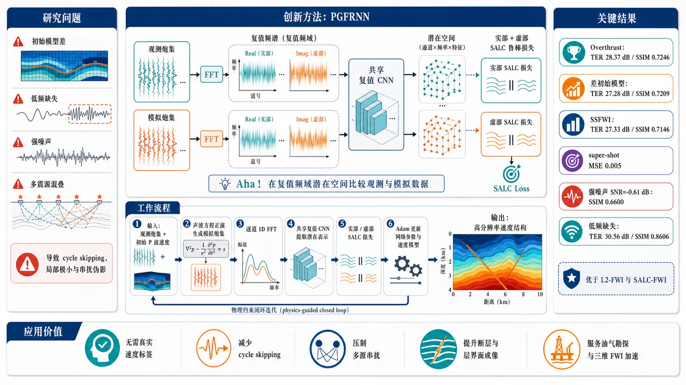
研究问题传统全波形反演（FWI）在地下速度建模中容易因初始模型差、低频缺失、强噪声和多震源混叠产生 cycle skipping、局部极小和串扰伪影；核心问题是如何在无真实速度标签的条件下，更稳定地从观测地震波形恢复高分辨率地下速度结构。创新方法提出 PGFRNN：先把观测炮集与模拟炮集逐道 FFT 转为复值频谱，再用共享的复值卷积神经网络提取傅里叶域潜在表示；在潜在空间中分别比较实部和虚部，并用 SALC 鲁棒损失抑制大残差、噪声和相位错配；最后通过声波方程正演闭环更新速度模型。Aha 点是：不直接在时域逐点比波形，而是在“复值频域潜在空间”中比较观测与模拟数据，让幅度、相位和频率结构共同引导反演。工作流程输入观测地震炮集和初始 P 波速度模型；由初始速度模型通过二维常密度声波方程生成模拟炮集；观测炮集与模拟炮集逐道做 1D FFT，形成复值频谱；两类频谱进入同一个复值卷积网络，得到观测潜在表示和模拟潜在表示；对两者实部、虚部分别计算 SALC 损失；误差反向传播，由两个 Adam 优化器分别更新复值网络参数和速度模型；更新后的速度模型再次正演生成新模拟数据，循环迭代，输出更接近真实地下结构的速度模型。关键结果在 Overthrust 模型上，PGFRNN 全面优于 L2-FWI 和 SALC-FWI。高斯平滑初始模型下达到 TER 28.37 dB、SSIM 0.7246，高于 L2 的 23.90 dB/0.6420 和 SALC 的 24.09 dB/0.6703；线性差初始模型下达到 27.28 dB/0.7209，明显超过 L2 的 17.39 dB/0.3961 和 SALC 的 21.02 dB/0.5001。SSFWI 中，PGFRNN 达到 TER 27.33 dB、SSIM 0.7146，super-shot gather MSE 仅 0.005，远低于 L2 的 0.31 和 SALC 的 0.13；在 SNR=-0.61 dB 强噪声下仍保持 TER 24.73 dB、SSIM 0.6600；缺失 3–4 Hz 以下低频时仍能恢复清晰断层和层界面，最高 TER 30.56 dB、SSIM 0.8606。应用价值该研究为地震勘探中的高精度地下速度建模提供一种无需真实速度标签的物理引导深度学习反演方案，可用于复杂构造、噪声污染、低频缺失和 simultaneous-source 加速采集场景；特别适合减少 cycle skipping、压制多源串扰、提升断层和层界面成像质量，从而服务油气勘探、地下结构解释和大规模三维 FWI 的高效化。第一部分：核心概览
PGFRNN 提出一种面向声学 FWI 与 SSFWI 的无监督物理引导傅里叶表示神经网络：将观测与模拟地震数据经 FFT 转为复值频谱，再由复值卷积网络映射到潜在空间，用 SALC loss 度量实部与虚部潜在表示差异，并通过物理正演闭环更新速度模型。其核心地位在于把 频域复值表征学习、鲁棒误差函数 与 物理约束反演优化结合，用于缓解传统 FWI 的 cycle skipping、噪声敏感、初始模型依赖及 SSFWI 串扰问题。在 Overthrust 数值实验中，PGFRNN 在常规 FWI、差初始模型、SSFWI、强噪声和缺失低频条件下均优于 L2 与 SALC 基线。
---
第二部分：结构化快速回顾
《Seismic full waveform inversion via a physics-guided Fourier representation neural network》（None，）
背景
FWI 能利用完整波场恢复高分辨率地下速度模型，但存在 cycle skipping、噪声敏感、非凸优化和对高质量初始模型依赖强等问题。SSFWI 可通过混合多炮降低计算成本，但会引入 crosstalk noise。近年深度学习 FWI 尝试用神经网络学习模型参数化或数据潜在空间误差，但在噪声、缺失低频和多源串扰条件下鲁棒性仍不足。
方法
提出 PGFRNN：对观测与模拟炮集逐道执行 1D FFT，输入共享的 complex-valued neural network，得到复值潜在表示；分别对潜在表示的实部与虚部使用 softplus-approximated log-cosh loss, SALC；用两个 Adam 优化器分别更新复值网络参数和 P 波速度模型；正演采用二维常密度声波方程，时间二阶、空间八阶有限差分，基于 PyTorch 与 Deepwave 自动微分实现。
结果
在 Overthrust 模型上，PGFRNN 全面优于传统 L2-FWI 和 SALC-FWI。高斯平滑初始模型下，PGFRNN 达到 TER = 28.37 dB, SSIM = 0.7246，高于 L2 的 23.90 dB / 0.6420 和 SALC 的 24.09 dB / 0.6703。线性初始模型下，PGFRNN 达到 27.28 dB / 0.7209，远高于 L2 的 17.39 dB / 0.3961 和 SALC 的 21.02 dB / 0.5001。SSFWI 中，PGFRNN 达到 27.33 dB / 0.7146，且 super-shot gather 误差 MSE = 0.005，显著低于 L2 的 0.31 和 SALC 的 0.13。
讨论
PGFRNN 对强噪声、缺失低频和多源串扰表现出较强鲁棒性。SNR 为 -0.61 dB 的随机噪声与 erratic noise 条件下，PGFRNN 仍达到 TER = 24.73 dB, SSIM = 0.6600。高通滤波缺失低频条件下，PGFRNN 在 3 Hz 与 4 Hz 截止频率下仍取得高精度结果，最高达到 TER = 30.56 dB, SSIM = 0.8606。
局限
验证主要集中于二维声学 Overthrust 合成模型，尚未覆盖三维、弹性、各向异性、真实野外数据、多种地质体、多种震源子波误差和采集几何不完备场景。网络结构、学习率、epoch 数和 SALC 损失权重等超参数敏感性未系统消融。
结论
PGFRNN 通过 Fourier-domain complex-valued latent representation 与 physics-guided optimization 改进 FWI 和 SSFWI，在困难初始模型、噪声污染、缺失低频和 simultaneous-source 串扰条件下均表现出更高精度与稳定性。
---
第三部分：逐章节冷凝解析
Abstract
Accurate velocity models are the central target
准确地下 velocity models 是地震成像的基础，传统 FWI 的主要瓶颈是 cycle skipping、噪声敏感和依赖较好初始模型。摘要直接给出问题边界：*"Accurate subsurface velocity models are essential for seismic imaging, yet conventional full waveform inversion (FWI) often suffers from cycle skipping, noise sensitivity, and reliance on good initial models."*
PGFRNN is positioned as unsupervised acoustic FWI and SSFWI
核心方法是 physics-guided Fourier representation neural network, PGFRNN，用于无监督 acoustic FWI 与 simultaneous-source FWI。关键机制包括傅里叶数据嵌入潜在空间、SALC 损失和物理引导优化器：*"We develop a physics-guided Fourier representation neural network (PGFRNN) for unsupervised acoustic FWI and simultaneous-source FWI (SSFWI), which embeds Fourier-transformed seismic data into a latent space and iteratively updates the velocity model using a softplus-approximated log-cosh (SALC) loss and a physics-guided optimizer."*
Overthrust tests establish empirical superiority
数值验证集中在 Overthrust model，比较对象为常规 L2-loss FWI 与 SALC-loss FWI。摘要层面的结论是 PGFRNN 同时提高精度、噪声鲁棒性和差初始模型鲁棒性：*"Numerical tests on the Overthrust model demonstrate that PGFRNN outperforms conventional L2- and SALC-loss-based FWI methods, achieving higher inversion accuracy and robustness to noise and challenging initial models."*
---
1 Introduction
FWI resolves finer velocity features than traveltime tomography
FWI 被定义为利用完整地震波场、通过最小化观测和模拟数据误差迭代估计速度模型的技术；相比 traveltime tomography，FWI 可恢复更细尺度速度结构：*"Full waveform inversion (FWI) is a state-of-the-art technique that exploits the complete seismic wavefield to iteratively estimate accurate subsurface velocity models by minimizing the misfit between recorded and simulated data."* 以及 *"Unlike traveltime tomography, which typically recovers smooth long-wavelength structures, FWI can resolve finer-scale velocity features."*
FWI is ill-posed and nonlinear
FWI 的根本数学属性是 ill-posed nonlinear inverse problem，因此需要更鲁棒的损失函数、正则化和优化策略：*"As an ill-posed nonlinear inverse problem, FWI has motivated the development of various strategies to enhance its robustness and resolution."*
Misfit design controls gradient quality and convergence
损失函数直接决定模拟数据与观测数据之间的 misfit，并影响速度更新梯度。已有目标函数包括 L2-norm、L1-norm、cross-correlation、phase-based 和 Wasserstein distance：*"A range of loss functions has been used for FWI to enhance convergence and avoid the cycle-skipping problem, including L2-norm, L1-norm, cross-correlation, phase-based, and Wasserstein distance objectives, each exhibiting different sensitivities to noise and amplitude variations."*
Regularization mitigates instability and improves resolution
常见正则化包括 Tikhonov smoothing、total variation 和 sparsity-promoting constraints，用于稳定反演并改善分辨率：*"To further stabilize the inversion and improve resolution, regularization schemes such as Tikhonov smoothing, total variation, and sparsity-promoting constraints are often incorporated."*
Optimization methods imply trade-offs
FWI 常用优化器包括 gradient-based methods、conjugate gradient 和 L-BFGS，在计算效率与收敛行为之间存在权衡：*"The choice of optimization method is closely linked to the selected loss function and regularization, with common approaches including gradient-based methods, conjugate gradient, and limited memory Broyden-Fletcher–Goldfarb–Shanno (L-BFGS) algorithms, each offering distinct trade-offs between computational efficiency and convergence behavior."*
Single-source FWI is accurate but computationally expensive
单炮 FWI 对每个震源独立更新，精度高但在大规模三维采集中成本极高，因为每个震源需要独立正演和伴随模拟：*"While single-source FWI provides high-accuracy velocity estimation by updating the model for each source individually, it becomes computationally prohibitive for large-scale 3D surveys due to the need for separate forward and adjoint simulations."*
SSFWI reduces cost but introduces crosstalk
SSFWI 将多个震源叠加为 simultaneous sources，从而减少正演成本；代价是引入 source interference / crosstalk noise：*"Simultaneous-source FWI (SSFWI) addresses this limitation by stacking multiple simultaneous sources during forward modeling, thereby reducing computational cost."* 同时，*"However, SSFWI introduces source interference (crosstalk noise), which might degrade inversion accuracy if not properly removed."*
Encoding and decoding suppress crosstalk
已有 source encoding/decoding 方法试图在保持 SSFWI 高分辨率速度估计的同时抑制串扰伪影：*"Various approaches, including source encoding/decoding, have been developed to suppress crosstalk artifacts while maintaining high-resolution velocity estimation via SSFWI."*
Deep learning has become broadly influential in seismology
DL 已在地震学中用于去噪、重建、分辨率增强和反演：*"In recent years, deep learning (DL), a data-driven technique, has emerged as a key tool in seismology, driving significant progress in fields such as denoising, data reconstruction, resolution enhancement, and seismic inversion."*
DL-FWI can assist traditional inversion or learn direct mappings
神经网络可用于预测速度更新或梯度，也可直接学习地震数据到速度模型的映射：*"DL based on neural networks (NNs) can either assist traditional FWI by predicting velocity updates or approximate gradients, or directly learn the mapping from seismic data to velocity models."*
Training paradigms include supervised, unsupervised, and self-supervised
DL-FWI 按标签可用性划分为 supervised、unsupervised 和 self-supervised：*"From the perspective of training, DL-based FWI can be supervised, unsupervised, or self-supervised, depending on the availability of labeled velocity models."*
Supervised FWI depends on representative paired datasets
监督式 FWI 需要大量地震数据—真实速度模型配对样本：*"Supervised FWI requires a large and representative training dataset consisting of seismic data paired with corresponding true velocity models."* 典型方法包括 2D CNN 学习非线性映射，以及 GAN 从波形映射到速度模型：*"Yang and Ma (2019) design a 2D convolutional NN to learn the nonlinear mapping between velocity models and seismic shot gathers."*；*"Zhang and Lin (2020) develop a generative adversarial network (GAN) to learn a mapping from seismic waveforms to velocity models."*
PINN reduces reliance on large training datasets
Physics-informed NN, PINN 将物理方程纳入学习过程，可用较小网络和物理约束替代大规模训练数据：*"Rather than depending on extensive training data, one can train a smaller NN guided by physical laws, resulting in a framework known as a physics-informed NN (PINN), which efficiently incorporates physics equations into the learning process and has been applied successfully to FWI."*
Supervised physics-informed FWI still suffers from distribution gaps
即便加入物理约束，监督式 DL-FWI 仍可能受训练数据与野外数据之间 distribution gaps 限制：*"However, supervised DL–based FWI, even when incorporating physics-informed constraints, may still be limited by potential distribution gaps between the training data and field data."*
Unsupervised DL-FWI avoids paired labels
无监督 DL-FWI 不需要地震数据和真实速度模型配对训练，因此更灵活：*"Unsupervised DL-based FWI, which does not require paired seismic data and true velocity models for training NNs, offers a more flexible alternative."*
Reparameterized FWI uses neural networks as implicit regularizers
Reparameterized FWI 受到 deep image prior, DIP 的正则化启发，用神经网络参数表示速度模型，再根据观测与模拟数据误差优化网络：*"The reparameterized FWI framework is an unsupervised method, which is inspired by the regularization effect of the deep image prior (DIP)."* 以及 *"Specifically, the NN generates target velocity models, and its parameters are optimized based on the misfit between modeled and observed seismic data."*
Coordinate-based implicit FWI feeds coordinates to neural networks
部分隐式 FWI 将坐标值输入神经网络近似待估计速度模型，而不是使用随机矩阵输入：*"Compared to some reparameterization methods that use random matrices as NN inputs, some studies feed coordinate values into the NNs to approximate the velocity model to be estimated."* 这种方法被称为 implicit FWI：*"This type of coordinate-based approach is also referred to as implicit FWI."*
Recent methods learn misfit in latent spaces
除了速度模型参数化，近期工作还将观测与模拟炮集输入神经网络，在学习到的潜在空间计算误差。例如 WGAN 评估模拟和记录数据误差，物理生成器更新速度模型：*"recent studies directly parameterize seismic shot gathers and use observed and modeled data as NN inputs to determine their misfit in a NN-learned latent space."*；*"Yang and Ma (2023) introduce physics-guided FWI framework, where a wasserstein generative adversarial network (WGAN) is employed to evaluate the misfit between simulated and recorded data."*
Siamese-style self-supervised FWI motivates latent representation comparison
Saad 等提出共享权重 2D CNN，将观测和模拟炮集投影到潜在空间并最小化潜在差异：*"Saad et al. (2024) introduce a self-supervised DL framework for FWI that employs a 2D convolutional NN to project observed and simulated shot gathers into latent spaces using shared NN weights."* 误差随后用于物理优化更新速度模型：*"The discrepancy between these latent representations is quantified as the misfit, which is subsequently minimized through a physics-based optimizer to update the velocity model."*
DL-enhanced SSFWI addresses blended-source crosstalk
DL 被用于 SSFWI 的串扰抑制，既可作为 blended data 预处理，也可嵌入 SSFWI 框架：*"DL techniques have been developed either as preprocessing tools to suppress crosstalk in blended data or as components of the SSFWI framework itself."*
Existing DL-FWI robustness remains limited
已有 DL-FWI 在噪声污染、低频缺失和串扰干扰下仍不够稳健：*"However, the robustness of existing DL methods remains limited when challenged by practical issues such as noise contamination, missing low-frequency components, or crosstalk interference."*
PGFRNN combines Fourier representation, complex-valued networks, SALC, and physics-guided optimization
核心创新是无监督、物理约束的 PGFRNN：复值卷积和激活函数嵌入傅里叶变换后的观测与模拟数据，SALC 度量潜在误差，物理优化器迭代更新速度模型：*"At its core, we introduce a physics-guided Fourier representation NN (PGFRNN) that employs complex-valued convolutions and activation functions to embed Fourier-transformed observed and modeled data into a latent space."*；*"The misfit between these latent representations is quantified using a softplus-approximated log-cosh (SALC) loss and minimized via a physics-guided optimizer to iteratively update the velocity model."*
---
2 Method
Architecture uses Fourier-domain complex-valued latent representation
PGFRNN 面向 acoustic FWI 与 SSFWI，直接处理由 FFT 得到的复值频谱，输出潜在表示：*"The PGFRNN framework is developed for seismic acoustic FWI and SSFWI, demonstrating robustness against poor initial models and crosstalk noise."*；*"the NN takes the complex-valued spectrum obtained via the fast Fourier transform (FFT) as input and outputs the corresponding latent representation."*
Network depth and feature maps are explicitly specified
网络由 six representation blocks 加 one output block 构成，七个 block 输出特征图数分别为 4, 8, 16, 16, 8, 4, 1：*"The NN consists of six representation blocks followed by a single output block."*；*"The numbers of output feature maps (FMs) for these seven blocks are 4, 8, 16, 16, 8, 4, and 1, respectively."*
Representation blocks use complex 2D convolution and PReLU
每个 representation block 包含 2D complex-valued convolution，卷积核大小为 3，激活函数为 PReLU：*"Each representation block contains a 2D complex-valued convolution with a kernel size of 3 and a parametric rectified linear unit (PReLU) activation function."*
Output block compresses to one latent feature map
输出 block 使用卷积核大小为 1 的 2D 复值卷积，输出单个特征图作为最终潜在表示：*"The output block employs a 2D complex-valued convolution with a kernel size of 1 to produce a single FM, which serves as the final latent representation."*
Skip connections prevent early wrong-direction updates
skip connections 用于保留关键频率信息，使初始迭代类似传统 FWI，后续逐渐优化网络参数，从而避免随机初始化造成速度模型错误更新：*"skip connections are incorporated between the blocks to preserve critical frequency information during the initial forward propagation."*；*"This allows the PGFRNN framework to operate like traditional FWI in the initial iterations while progressively optimizing the NN parameters in later ones, preventing the velocity model from updating in the wrong direction due to random initialization of the NN."*
Observed and modeled data are transformed tracewise into frequency domain
观测数据和由初始 P 波速度模型生成的模拟数据均通过逐道 1D FFT 转入频域：*"First, simulated data from the initial P-wave velocity model and observed data are transformed into the frequency domain using a 1D FFT applied to each trace."*
Shared complex-valued network maps both data types to latent representations
观测和模拟频谱输入共享网络 ( fΘ(ḑot) )，产生复值潜在表示 ( LRₒ ) 与 ( LRₘ )：*"The resulting complex-valued spectra are then fed into the complex-valued NN (fΘ(ḑot)) with trainable parameters (Θ) to produce complex-valued latent representations."* 形式化表达为：*" (bfLbfRₒ=fΘłeft(m̊ FFTłeft(Xₒi̊ght)i̊ght),qquadbfLbfRₘ=fΘłeft(m̊ FFTłeft(Xₘi̊ght)i̊ght))."*
Misfit is computed separately on real and imaginary parts
总体误差函数将复值潜在表示的实部和虚部分别输入 SALC 后求和：*"We then evaluate the misfit between the real and imaginary parts of the latent representations, which is used to generate gradients for updating the P-wave velocity model."* 公式为：*" (Φłeft(bfLbfRₒ,bfLbfRₘi̊ght)=m̊ SALCBig(Re(bfLbfRₒ),Re(bfLbfRₘ)Big)+m̊ SALCBig(Im(bfLbfRₒ),Im(bfLbfRₘ)Big))."*
SALC is a stable softplus approximation of log-cosh
SALC loss 被定义为 log-cosh 的数值稳定 softplus 近似：*"The operator SALC denotes the numerically stable softplus approximation of the log-cosh loss."* 公式为：*" (m̊ SALC(x,y)=frac1Nsumᵢ₌₁NBig[m̊ softplus!big(2(xᵢ-yᵢ)big)-(xᵢ-yᵢ)-łn 2Big])."* 其中：*" (m̊ softplus(2(xᵢ-yᵢ))=łn(1+e²⁽xᵢ⁻yᵢ⁾))."*
SALC is less sensitive to large misfits than L1 and L2
相对传统 L1 与 L2，SALC 对大误差不敏感，梯度更平滑稳定：*"Compared with conventional L1 and L2 norms, the SALC loss is less sensitive to large misfits and provides smooth, stable gradients."*
Complex-valued features support robust velocity and network updates
SALC 分别作用于复值潜在输出的实部与虚部，使 PGFRNN 充分利用复值频谱特征，并为速度模型和网络参数提供鲁棒梯度：*"Applied separately to the real and imaginary parts of the complex-valued latent outputs, it allows the PGFRNN framework to fully exploit complex-valued features and generate robust gradients for both P-wave velocity and complex-valued NN parameter updates."*
Two Adam optimizers update velocity and network parameters
PGFRNN 使用两个 Adam optimizers：一个用于速度模型，另一个用于网络参数 ( Θ )：*"Based on the misfit in Equation (2), two Adam optimizers are employed: one for the velocity model and one for iteratively updating the network parameters (Θ)."*
Forward modeling uses the constant-density acoustic wave equation
更新后的速度模型经二维常密度声波方程生成模拟数据：*"The updated velocity model is next used to generate simulated data via the 2D constant-density acoustic wave equation."* 方程为：*" (fracpartial²p(x,z,t)partial t²=v²(x,z)łeft(fracpartial²p(x,z,t)partial x²+fracpartial²p(x,z,t)partial z²i̊ght)+r(t),δ(x-xₛ),δ(z-zₛ))."*
Finite-difference scheme uses second-order time and eighth-order space accuracy
声波方程使用有限差分求解，时间二阶、空间八阶：*"The acoustic wave equation is solved using a finite-difference scheme with second-order accuracy in time and eighth-order accuracy in space."*
PyTorch and Deepwave implement differentiable FWI
声波正演与反演基于 PyTorch 和 Deepwave，将 FWI 表述为循环神经网络，速度梯度通过自动微分计算：*"acoustic wave modeling and inversion procedures are implemented in PyTorch using the Deepwave toolbox, which formulates FWI as a recurrent NN."*；*"Velocity gradients are computed via automatic differentiation, producing results comparable to the traditional adjoint-state method while facilitating seamless integration of DL frameworks."*
Overthrust acquisition geometry is fully specified
Overthrust 模型网格为 400 × 94，水平与垂向网格间距均为 0.03 km。使用峰值频率 5 Hz 的 Ricker 子波。震源数 30，沿地表间隔 0.39 km；接收器数 400，地表间距 0.03 km，自由表面条件；记录时长 6 s，采样间隔 0.003 s：*"The Overthrust velocity model used in this study has a grid size of 400 × 94 with a uniform spacing of 0.03 km in both horizontal and vertical directions."*；*"Acoustic wavefields are simulated using a Ricker wavelet source with a peak frequency of 5 Hz."*；*"A total of 30 sources are regularly distributed along the surface at 0.39 km intervals, and 400 receivers are deployed at the surface with 0.03 km spacing under a free-surface condition."*；*"Seismic data are recorded for 6 s with a sampling interval of 0.003 s."*
Learning rates and epochs are fixed across inversion cases
PGFRNN 中复值神经网络优化器初始学习率为 0.001，Overthrust 速度优化器初始学习率为 20，所有反演最大 1400 epochs：*"For PGFRNN, the initial learning rates are set to 0.001 for the complex-valued NN optimizer and 20 for the Overthrust velocity optimizer, with a maximum of 1400 epochs for all inversion cases."*
Batching differs between FWI and SSFWI
FWI 中 batch size 为 5，30 个震源分成 6 个 batch，每个包含 5 个非伴随炮集；SSFWI 中 batch size 为 1：*"For FWI examples, a batch size of 5 is used, splitting the 30 sources into six batches of five non-adjoint shot gathers each, whereas for SSFWI examples, a batch size of 1 is employed."*
---
3 Numerical experiments
TER measures relative reconstruction error in decibels
Truth-to-error ratio, TER 用 dB 衡量真模型能量与误差能量之比：*"The first is the truth-to-error ratio (TER) in decibels (dB), defined as ( TER=10ḑotłog₁₀łeft(frac|vₜᵣᵤₑ|₂²|vₜᵣᵤₑ-vᵢₙᵥ|₂²i̊ght) )."* 更高 TER 表示误差更小：*"A higher TER value indicates lower inversion error and thus better accuracy."*
SSIM measures structural fidelity
SSIM 衡量反演速度模型与真实速度模型的结构相似性：*"The second metric is the structural similarity index measure (SSIM), which evaluates structural fidelity between the inverted and true velocity models."* 其公式包括均值、方差和协方差：*"where (μₜᵣᵤₑ) and (μᵢₙᵥ) denote the mean values ... (σₜᵣᵤₑ²) and (σᵢₙᵥ²) are their variances, and (σₜᵣᵤₑ,ᵢₙᵥ) is the covariance."* 更高 SSIM 表示结构保持更好：*"a higher SSIM value denotes greater structural similarity between the inverted and true velocity models, demonstrating superior preservation of structural features."*
---
3.1 FWI
Gaussian-smoothed initial model allows all methods to recover main structures
第一组 FWI 使用由真实模型高斯平滑得到的初始模型。L2、SALC 和 PGFRNN 均可重建主要地质结构，如断层系统：*"The initial velocity model is constructed by smoothing the true model with a Gaussian filter."*；*"All three methods are able to reconstruct the main geological structures, such as the fault systems."*
Shot gathers show close waveform and amplitude matching
基于三种反演速度模型生成的合成数据均在波形和振幅上接近观测数据：*"the synthetic data generated from the inverted velocity model using the three methods show a close match to the observed seismic data in terms of both waveform and amplitude."*
PGFRNN improves Gaussian-initialized FWI metrics
高斯初始模型下，L2 的 TER = 23.90 dB, SSIM = 0.6420；SALC 的 TER = 24.09 dB, SSIM = 0.6703；PGFRNN 的 TER = 28.37 dB, SSIM = 0.7246。结果显示 PGFRNN 在保真度和结构相似性上均明显更优：*"The TER values of the inverted model using L2 and SALC losses within the conventional FWI framework are 23.90 and 24.09 dB, respectively, with corresponding SSIM values are 0.6420 and 0.6703."*；*"In contrast, the PGFRNN framework achieves a TER value of 28.37 dB and an SSIM value of 0.7246, indicating substantial improvements in both fidelity and structural similarity over the conventional L2 and SALC-based FWI approaches."*
Linear initial model creates a strong cycle-skipping challenge
第二组使用随深度线性增加的差初始模型，缺乏结构信息，容易发生 cycle skipping：*"we consider a poor initial model defined as a simple linearly increasing velocity with depth."*；*"this linear initial model lacks any structural information, making the inversion highly challenging and prone to cycle skipping."*
L2 inversion is trapped in a local minimum under poor initialization
线性初始模型下，L2 目标陷入局部极小，反演结果出现强振荡伪影并漏掉多个断层特征：*"The inversion using the conventional L2 objective appears to be trapped in a local minimum."*；*"Its recovered model shows pronounced oscillatory artifacts and misses several fault features."* 这种行为与 cycle skipping 及 L2 对大误差敏感一致：*"This behavior is consistent with cycle-skipping and with the L2 objective’s sensitivity to large misfits, which can amplify phase mismatches and produce spurious high-frequency content."*
SALC is more robust to large misfits
SALC 对大误差更鲁棒，可恢复主要断层结构，但断层附近仍有小 irregularities：*"By contrast, the SALC objective demonstrates greater robustness to large misfits and produces a more reliable result, successfully recovering the major fault structures with only minor irregularities near fault zones."*
PGFRNN reconstructs layer boundaries and fault zones from linear initialization
PGFRNN 在线性初始模型下仍能准确恢复主要结构，包括层界面和断层带，并显著降低振荡伪影：*"Even starting from the simple linear initial model, PGFRNN accurately reconstructs the major structural features, including layer boundaries and fault zones, while substantially reducing oscillatory artifacts."*
PGFRNN greatly improves poor-initialization metrics
线性初始模型下，L2 达到 TER = 17.39 dB, SSIM = 0.3961；SALC 达到 TER = 21.02 dB, SSIM = 0.5001；PGFRNN 达到 TER = 27.28 dB, SSIM = 0.7209：*"The inverted models using conventional FWI with the L2 and SALC objectives achieve TERs of 17.39 and 21.02 dB and SSIMs of 0.3961 and 0.5001, respectively."*；*"In comparison, PGFRNN reaches a TER value of 27.28 dB and an SSIM value of 0.7209."*
Reflection waveform matching favors PGFRNN
图 6 红框区域显示 PGFRNN 在反射波形匹配上优于 L2 和 SALC：*"The regions highlighted by red boxes indicate that PGFRNN provides superior reflection waveform matching relative to the two benchmark methods."*
Vertical profiles confirm velocity fidelity
三个位置的垂向速度剖面显示 PGFRNN 反演模型最接近真实速度结构：*"vertical velocity profiles extracted at three locations show that the PGFRNN-inverted model closely follows the true velocity structure."*
---
3.2 SSFWI
SSFWI groups six simultaneous sources into one super-shot
SSFWI 从同一线性初始模型出发，每 6 个同时震源随机组合成一个 super-shot，共 5 个 super-shots 覆盖全部 30 个震源：*"six simultaneous sources are randomly grouped into a single super-shot, producing five super-shots to cover all 30 sources."*
SSFWI offers theoretical sixfold acceleration but adds crosstalk
由于每个 super-shot 混合 6 个震源，理论上加速因子为 6，但重叠震源会带来串扰噪声：*"While SSFWI theoretically accelerates FWI by a factor of six, it introduces potential crosstalk noise, increasing the inversion challenge."*
L2 and SALC struggle under simultaneous-source interference
SSFWI 下，L2 和 SALC 均出现 cycle skipping 和断层结构恢复不完整，原因是重叠震源干扰：*"Both methods struggle under the SSFWI setup, exhibiting cycle skipping and incomplete recovery of fault structures due to interference between overlapping sources."*
PGFRNN mitigates crosstalk and preserves fine-scale structures
PGFRNN 成功恢复主要层界面与断层特征，同时保留细尺度结构并缓解串扰：*"In contrast, PGFRNN successfully reconstructs the major layer interfaces and fault features, while preserving fine-scale structures and mitigating crosstalk effects."*
PGFRNN dominates SSFWI quantitative metrics
SSFWI 中 PGFRNN 达到 TER = 27.33 dB, SSIM = 0.7146，显著优于 L2 和 SALC。图 8 标注中，L2 为 TER = 15.48 dB, SSIM = 0.2484，SALC 为 TER = 16.75 dB, SSIM = 0.2980，PGFRNN 为 TER = 27.33 dB, SSIM = 0.7146：*"Quantitative evaluation shows that PGFRNN achieves a TER value of 27.33 dB and an SSIM value of 0.7146, substantially outperforming the L2- and SALC-based SSFWI results."*
Super-shot gather MSE confirms better data fitting
PGFRNN 的 super-shot gather 与真实观测数据波形相似度最高，误差 MSE = 0.005；L2 与 SALC 分别为 0.31 和 0.13：*"the super-shot gather corresponding to the PGFRNN method exhibits higher waveform similarity to the true data compared to the L2 and SALC methods."*；*"Quantitatively, the MSE value of the gather associated with PGFRNN is only 0.005, compared to 0.31 and 0.13 for the L2- and SALC-based gathers, respectively."*
Velocity profiles at 3.6, 7.2, and 9 km validate structural recovery
在 3.6 km, 7.2 km, 9 km 提取的三个垂向速度剖面显示，PGFRNN 更接近真实模型，同时恢复主要界面和细尺度结构；L2 与 SALC 明显偏离并出现强振荡：*"three vertical velocity profiles extracted from the inverted models at distances of 3.6 km, 7.2 km, and 9 km are shown."*；*"The profiles indicate that PGFRNN closely matches the true velocity model, accurately recovering both major interfaces and fine-scale structures, whereas the L2 and SALC inversions deviate noticeably, exhibiting strong oscillations."*
---
4 Discussion
Discussion focuses on noise and missing low frequencies
讨论集中检验两个实际问题：观测数据噪声污染和低频成分缺失。相关原文分别为 *"Impact of noise"* 与 *"Impact of missing low-frequency components"*，对应实际采集环境中 FWI 最容易失效的两类因素。
---
4.1 Impact of noise
Observed data are rarely noise-free
实际数据通常受噪声污染，因此鲁棒性评估不可只基于 clean data：*"In practical applications, observed data are often contaminated by noise rather than being perfectly clean."*
Noise test combines Gaussian random noise and erratic noise
噪声实验向观测数据加入 Gaussian random noise 与 erratic noise：*"we add Gaussian random noise and erratic noise to the observed data for FWI."*
Noisy gather has SNR = -0.61 dB
图 11(a) 中噪声炮集 SNR = -0.61 dB，部分弱反射被噪声掩盖：*"Fig. 11(a) shows a shot gather and its noisy counterpart with an SNR value of -0.61 dB, where some weak reflections are obscured by noise."*
PGFRNN achieves highest noisy-data accuracy
噪声条件下，L2、SALC、PGFRNN 的 TER 分别为 20.04, 21.05, 24.73 dB；SSIM 分别为 0.3636, 0.4720, 0.6600：*"The inverted models obtained using the L2 loss, SALC loss, and PGFRNN are shown ... with TER values of 20.04, 21.05, and 24.73 dB, and corresponding SSIM values of 0.3636, 0.4720, and 0.6600, respectively."*
All methods degrade under noise, but PGFRNN degrades least
相对无噪声情况，三种方法精度均下降。L2 受强噪声影响产生高度非平滑结果；SALC 由于梯度更平滑更稳定；PGFRNN 最可靠：*"Compared with the noise-free case, the accuracy of all three methods decreases."*；*"The conventional L2 objective is affected by strong noise, producing a highly non-smooth result, while the SALC loss yields smoother gradients and a more stable inversion."*；*"By contrast, PGFRNN achieves the most reliable inversion, demonstrating superior robustness to noise."*
---
4.2 Impact of missing low-frequency components
Low frequencies reduce cycle skipping
低频信息通常帮助 FWI 避免 cycle skipping，并引导反演走向全局最小：*"Low-frequency information in FWI generally helps mitigate cycle skipping and guides inversion toward the global minimum."*
Field acquisition often lacks low frequencies
实际采集中，震源、检波器响应和强环境噪声都会导致低频缺失：*"in practical acquisition scenarios, low-frequency components are often missing due to limitations of seismic sources, receiver responses, and strong ambient noise."*
High-pass tests remove frequencies below 3 Hz and 4 Hz
在高斯平滑初始模型下进行了两组高通滤波实验：第一组去除 3 Hz 以下频率，第二组截止频率提高到 4 Hz：*"In the first case, frequencies below 3Hz are removed ... and in the second case, the cutoff is increased to 4Hz."*
PGFRNN improves structural recovery with smoothed initial model under high-pass data
在高斯平滑初始模型下，3 Hz 和 4 Hz 高通数据对应 PGFRNN 结果反而比全频结果结构恢复更好。图 12 标注给出：3 Hz 高通 TER = 30.56 dB, SSIM = 0.8606；4 Hz 高通 TER = 30.09 dB, SSIM = 0.8486。解释是初始模型已提供合理大尺度趋势，去除极低频抑制过平滑大尺度更新，使中高频主导细尺度结构恢复：*"The corresponding PGFRNN inversions ... both exhibit improved structural recovery compared with the full-frequency inversion."*；*"This improvement arises because the smoothed initial model already provides a reasonable large-scale velocity trend, while the removal of very low-frequency components suppresses overly smooth large-scale updates, allowing mid- to high-frequency information to dominate the reconstruction of fine-scale structures in the Overthrust model."*
Linear initial model plus 4 Hz high-pass data still favors PGFRNN
第三组用 4 Hz high-pass filtered Ricker wavelet 和线性初始速度模型比较 PGFRNN 与 L2。图 12 标注显示，L2 为 TER = 16.15 dB, SSIM = 0.3973，PGFRNN 为 TER = 28.19 dB, SSIM = 0.8309：*"In the third experiment, we use the 4Hz high-pass filtered Ricker wavelet combined with the linear initial velocity model, and compare PGFRNN with conventional L2-based inversion."*
L2 fails to recover faults under missing low frequencies
4 Hz 高通与线性初始模型下，L2 出现强振荡伪影并无法恢复主要断层结构：*"The L2-loss inversion exhibits strong oscillatory artifacts and fails to recover major fault structures."*
PGFRNN exploits mid-to-high frequencies despite poor initialization
PGFRNN 在缺失低频且初始模型较差时仍能恢复主要界面与断层结构，并且结果显著优于相同线性模型下的全频反演：*"In contrast, PGFRNN produces significantly smoother and more accurate results, and its inversion result with missing low-frequency components and the linear initial model is also substantially better than the full-frequency inversion using the same linear model."*；*"This demonstrates that PGFRNN can effectively exploit mid- to high-frequency information to reconstruct the main interfaces and fault structures, even with poor initial models and absent low-frequency data."*
Low-frequency removal can be beneficial but model-dependent
Overthrust 模型中，去除极低频甚至可提升 PGFRNN-FWI，但这种提升依赖模型和初始条件：*"Overall, these experiments demonstrate that PGFRNN is robust to missing low-frequency components."*；*"In the Overthrust model, the removal of very low-frequency information can even improve PGFRNN-based FWI."*；*"This model-dependent improvement arises from the combination of a reasonably accurate initial model and the dominance of mid- to high-frequency components in reconstructing strong velocity contrasts and fault structures."*
---
5 Conclusion
PGFRNN is an unsupervised framework for acoustic FWI and SSFWI
PGFRNN 被总结为无监督深度学习框架，用于声学 FWI 和 SSFWI：*"We introduce PGFRNN, an unsupervised deep learning framework for acoustic FWI and SSFWI."*
Core mechanism combines Fourier latent embedding, SALC, and physics-guided optimization
PGFRNN 将傅里叶变换后的地震数据嵌入潜在空间，并通过 SALC 损失与物理引导优化器迭代更新速度模型：*"embeds Fourier-transformed seismic data into a latent space and iteratively updates velocity models via a SALC loss and a physics-guided optimizer."*
Overthrust results show superiority over L2 and SALC FWI
Overthrust 测试显示 PGFRNN 优于传统 L2 和 SALC FWI，表现为更高精度、更强噪声和低频缺失鲁棒性，以及在 simultaneous-source 场景中更有效抑制串扰：*"Tests on the Overthrust model demonstrate that PGFRNN outperforms conventional L2- and SALC-loss-based FWI, achieving higher accuracy, robustness to noise and missing low-frequency data, and effective mitigation of crosstalk noise in simultaneous-source setups."*
---
Acknowledgments
Funding source is specified
研究经费来自国家自然科学基金，项目号 42274147：*"This work was supported by the National Natural Science Foundation of China (Grant No. 42274147)."*
---
第四部分：深度理解与语言支持
1. 术语解析
#### Cycle skipping
Cycle skipping 指模拟波形与观测波形相位差超过半个周期时，FWI 将错误波峰与波谷匹配，导致梯度方向错误并陷入局部极小。语境中，差初始模型和缺失低频都会增加 cycle skipping 风险。原句 *"making the inversion highly challenging and prone to cycle skipping"* 强调线性初始模型没有结构信息，无法提供足够准确的走时背景。
#### Latent representation
Latent representation 是神经网络学习到的隐空间特征，不是原始波形或频谱本身，而是经过卷积变换后的特征表达。PGFRNN 不直接比较时域炮集，而是比较 Fourier-transformed data 经复值网络后的潜在表示。这里的 subtlety 是：潜在空间误差可能比原始数据误差更鲁棒，因为网络可弱化噪声、串扰或局部相位错配。
#### Complex-valued convolution
Complex-valued convolution 处理复数输入和复数权重，保留频域数据中的幅度与相位信息。普通实值 CNN 若直接处理频谱，常需拆分实部和虚部；复值卷积在数学形式上更自然地建模频域波场。语境中，PGFRNN 使用复值卷积和激活函数，因为 FFT 后的数据包含 real 与 imaginary components。
#### Softplus-approximated log-cosh loss, SALC
SALC 是 log-cosh 损失的数值稳定形式。小残差时类似 L2，利于精细拟合；大残差时梯度增长受限，类似鲁棒损失，避免 L2 对异常值、强噪声、大相位差过敏。原句 *"less sensitive to large misfits and provides smooth, stable gradients"* 正是其核心优势。
#### Crosstalk noise
Crosstalk noise 是 SSFWI 中多个 simultaneous sources 混合后产生的源间干扰。它不是普通随机噪声，而是由不同震源波场叠加产生的相干伪影，更容易被反演误解释为地下结构。语境中，PGFRNN 通过傅里叶潜在表示和鲁棒损失减轻这种干扰。
---
2. 疑难查证
#### 为什么在傅里叶域做潜在表示可能更稳健？
地震波形在时域中强烈依赖相位对齐。若初始模型较差，模拟数据和观测数据在时域上可能明显错位，直接用 L2 比较会产生错误梯度。傅里叶域将信号拆解成频率成分，幅度谱与相位谱可由复值网络联合编码。复值网络不必逐点硬匹配时域波形，而是在频率结构中学习更稳定的特征差异。因此 PGFRNN 的误差函数不是简单的“两个波形逐采样点差值”，而是“两个频谱经共享复值网络后在潜在空间的差异”。
#### 为什么 SALC 比 L2 更适合困难 FWI？
L2 残差为 (r) 时损失约为 (r²)，梯度与 (r) 成正比。大残差可能来自噪声、相位错配、串扰或错误初始模型；L2 会放大这些残差，导致速度更新被异常误差主导。log-cosh/SALC 对小残差近似二次，有利于精确拟合；对大残差近似线性，梯度不爆炸。因此 SALC 既保留平滑可导性质，又降低异常残差权重。
#### 为什么 SSFWI 会理论加速 6 倍？
常规 FWI 需要对每个震源分别正演和反传。若 30 炮逐炮计算，需要 30 组模拟。SSFWI 将 6 个震源混合为一个 super-shot，30 炮变成 5 个 super-shots。理想情况下，正演次数从 30 降到 5，因此理论加速因子为 (30/5 = 6)。问题在于同一 super-shot 中不同震源波场相互叠加，接收记录中不同源贡献难以分离，形成 crosstalk。
#### 为什么缺失低频有时反而提高 PGFRNN 结果？
传统观点认为低频有助于避免 cycle skipping。但 Overthrust 实验中，当初始模型已经由真实模型高斯平滑得到，低波数背景较准确，极低频对构建大尺度速度趋势的边际作用下降。此时保留过强低频可能让更新偏向过平滑结构；去掉 3 Hz 或 4 Hz 以下成分后，中高频更主导断层和强速度对比的恢复。该现象不是普适规律，而是与模型、初始速度质量和频率内容相关。
---
第五部分：创新评估与关联
1. 创新性判断
#### Fourier-domain complex-valued latent misfit is the main novelty
近 2–5 年 DL-FWI 的一条路线是 implicit neural representation / DIP reparameterization，用神经网络表示速度模型；另一条路线是 Siamese-style latent-space FWI，用 CNN 将观测和模拟炮集映射到潜在空间计算误差。PGFRNN 的新意在于将潜在误差学习明确转移到 Fourier-transformed seismic data，并使用 complex-valued convolution 保留频域相位和幅度信息，而不是用普通实值 2D CNN 直接处理时域炮集。
#### PGFRNN addresses robustness gaps not fully solved by previous DL-FWI
已有方法在噪声污染、缺失低频和 simultaneous-source 串扰下鲁棒性有限。PGFRNN 同时针对三类实际问题给出统一框架：
- 对 noise contamination：SALC 与潜在空间表示降低异常残差影响；
- 对 missing low-frequency components：傅里叶潜在表示能更有效利用中高频结构信息；
- 对 crosstalk interference：SSFWI 中复值频域表征与鲁棒损失减轻混源伪影。
#### SALC is used not merely as a conventional loss but inside learned complex latent space
单独使用 SALC 已能比 L2 更鲁棒，但实验显示 PGFRNN 明显超过传统 SALC-FWI。例如线性初始 FWI 中，SALC 为 TER = 21.02 dB, SSIM = 0.5001，PGFRNN 为 27.28 dB, 0.7209；SSFWI 中，SALC 为 16.75 dB, 0.2980，PGFRNN 为 27.33 dB, 0.7146。因此创新不是 SALC 本身，而是 SALC + Fourier complex latent representation + physics-guided inversion loop 的组合。
#### Shared network formulation preserves unsupervised applicability
PGFRNN 不需要真实速度标签，也不需要预训练数据集，避免监督式 DL-FWI 的 distribution gap。观测数据和模拟数据输入同一共享网络，误差来自同一表征空间，因此训练过程与具体反演任务绑定，适合无标签场景。
#### Simultaneous-source extension strengthens practical relevance
将同一框架扩展到 SSFWI 具有实际意义，因为工业三维 FWI 的主要瓶颈之一是计算成本。PGFRNN 在 6 源混合 super-shot 设置下获得 MSE = 0.005 的数据拟合误差，远低于 L2 的 0.31 和 SALC 的 0.13，说明该框架不仅提高单炮 FWI 精度，也服务于加速反演场景。
#### Remaining novelty caveat
当前证据仍主要来自二维声学合成 Overthrust 模型。若要确立领域内更强地位，还需在真实野外数据、三维问题、弹性/黏弹性介质、复杂地表、未知子波、缺失道和强各向异性条件下验证。现有结果显示方法具备明确算法创新和强数值潜力，但尚未完成工业级泛化证明。
-
07
📊 含图深析
📄 摘要：合成不同氢含量的 CoZr2Hx，发现氢进入两个由宽组成间隙分隔的浓度区间：低氢超导相 x=0–0.054 与高氢铁磁相 x=2.786。高氢区和低氢区中氢对电子与磁性状态的作用不同，氢化由此在同一 CoZr2 骨架中切换超导与铁磁行为。
💡 亮点：CoZr2Hx 中极低氢含量保持超导，而 x=2.786 的高氢相转为铁磁。氢不只是载流子或化学压力调节量，而是在不同浓度区间触发相异基态。
📖 展开分析 + 配图
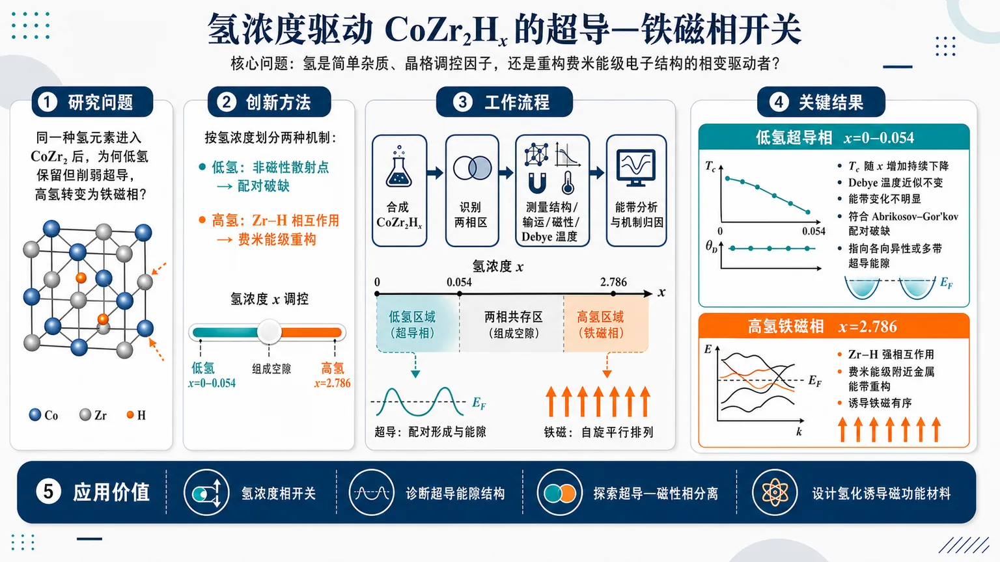
研究问题同一种氢元素进入 CoZr₂ 后，为什么在低氢含量 x=0–0.054 区间保留但削弱超导性，而在高氢含量 x=2.786 时转变为铁磁相？核心问题是：氢在 CoZr₂Hₓ 中究竟是简单杂质、晶格调控因子，还是能够重构费米能级电子结构的相变驱动者。创新方法论文的 Aha 点是把氢的作用按浓度分成两种截然不同的物理机制：低氢区中，氢像“非磁性散射点”嵌入超导金属，不明显改变能带和 Debye 温度，却按 Abrikosov–Gor'kov 配对破缺规律压低 Tc；高氢区中，氢与 Zr 形成强 Zr–H 相互作用，像“电子结构开关”一样重塑穿越费米能级的金属能带，从而诱导铁磁性。工作流程以 CoZr₂ 为母体，调节氢含量合成 CoZr₂Hₓ 样品；首先识别氢并非连续固溶，而是分成低氢超导相 x=0–0.054 与高氢铁磁相 x=2.786，中间存在宽组成空隙；随后比较结构、输运、磁性、Debye 温度和电子能带响应；最后将低氢区 Tc 下降拟合到 Abrikosov–Gor'kov 配对破缺图像，将高氢区铁磁性归因于 Zr–H 诱导的费米能级能带重构。关键结果CoZr₂Hₓ 形成两个清晰分离的相区：低氢相 x=0–0.054 仍为超导，但 Tc 随氢含量增加持续下降；高氢相 x=2.786 出现铁磁性。低氢区 Debye 温度几乎不变、电子能带未明显改变，说明 Tc 抑制主要来自非磁性氢杂质导致的配对破缺，并指向 CoZr₂ 超导能隙具有各向异性或多带特征，而不是完全各向同性 s 波。高氢区则由 Zr–H 相互作用显著改变费米能级附近金属能带，触发铁磁有序。应用价值该研究把 CoZr₂Hₓ 展示为一个可视化的“氢浓度相开关”：少量氢可作为探针诊断超导能隙结构，大量氢可作为工具诱导磁性电子态。它为设计氢调控金属间化合物提供思路，可用于探索超导—磁性相分离、杂质配对破缺、多带超导识别以及氢化诱导磁功能材料。第一部分：核心概览 (Overview)
CoZr₂Hₓ 中氢含量呈现两个相互分离的物相区间：低氢超导相 x = 0–0.054 与高氢铁磁相 x = 2.786。氢在两区间承担完全不同角色：高氢相通过 Zr–H 相互作用重塑费米能级附近金属能带并诱导铁磁性；低氢相中氢主要作为非磁性杂质，不显著改变能带，却按 Abrikosov–Gor'kov 配对破缺理论抑制 Tc，指向 CoZr₂ 超导能隙具有各向异性或多带特征。
---
第二部分：结构化快速回顾
《Distinct Roles of Hydrogen in Superconducting and Ferromagnetic Phases of CoZr₂Hₓ》（None，）
背景
氢化可作为调控金属间化合物物性的有效手段，尤其可能影响超导、电磁有序与电子结构。CoZr₂Hₓ 被用于检验氢在不同浓度下是否具有统一作用机制。
方法
合成不同氢含量的 CoZr₂Hₓ，比较低氢与高氢样品的结构、输运、磁性与电子结构响应。可用信息显示论文包含 14 pages, 8 figures，但未提供完整实验流程、样品数量、误差条或统计检验细节。
结果
氢进入 CoZr₂ 后不是连续固溶，而是形成两个浓度区间：低氢超导相 x = 0–0.054 与 高氢铁磁相 x = 2.786，中间存在宽组成空隙。低氢相 Tc 随 x 增加而降低；高氢相出现铁磁性。
讨论
高氢相中 Zr–H interactions 明显改变穿越费米能级的金属能带，导致铁磁性；低氢相中氢更像非磁性杂质，不改变电子能带结构，却通过配对破缺机制压低超导 Tc。
局限
可用材料只包含 arXiv 页面与摘要；缺少完整正文、图 1–8、实验条件、晶格参数、磁化曲线、比热拟合、第一性原理计算设置、误差估计与参考文献对照。因此不能可靠提取样本量、P 值、拟合残差、计算截断能、k 点网格等细节。
结论
CoZr₂Hₓ 中氢的作用具有浓度选择性：低氢区作为非磁性散射中心削弱非常规或多带超导，高氢区通过强 Zr–H 键合改变费米面附近电子结构并诱导铁磁有序。
---
第三部分：逐章节冷凝解析 (Section-by-Section Condensing)
可解析的原始材料仅包含 arXiv 条目、标题、摘要与书目信息；论文 PDF 正文的章节标题、图表说明、方法细节与参考文献未包含在输入内容中。以下严格基于已给出的原始英文内容，不补造未提供的章节、数据或引文。
---
Title
#### Hydrogen has phase-dependent roles in CoZr₂Hₓ
标题直接界定核心科学问题：同一种插入元素 hydrogen 在同一母体化合物 CoZr₂Hₓ 中并不产生单一效应，而是在超导相与铁磁相中扮演不同角色。题名为 *"Distinct Roles of Hydrogen in Superconducting and Ferromagnetic Phases of CoZr₂Hₓ"*，其中 Distinct Roles 强调机制差异，Superconducting and Ferromagnetic Phases 强调相竞争或相分离背景。
#### Target compound is a hydrogenated intermetallic cobalt zirconide
研究对象为 CoZr₂Hₓ，即钴锆金属间化合物的氢化物。化学式中的 x 表示可变氢含量，题名中的 *"CoZr₂Hₓ"* 暗示氢含量是控制变量，而不是固定化学计量比。
---
Abstract
#### Hydrogenation is used as a tunable control parameter
摘要开头给出研究动机：氢化是一种调节金属间化合物物理性质的路径。原文表述为 *"Hydrogenation offers a versatile route to tuning the physical properties of intermetallic compounds."* 这里的 versatile route 表明氢不仅改变晶格体积，也可能影响电子态密度、声子谱、磁相互作用与超导配对。
#### CoZr₂Hₓ was synthesized with multiple hydrogen contents
实验设计围绕不同氢含量样品展开。原文为 *"we synthesized CoZr₂Hₓ with different hydrogen contents"*。可确认变量是 hydrogen contents，但输入材料未给出合成温度、氢压、退火时间、样品批次数、氢含量测定方法或误差范围。
#### Hydrogen incorporation is split into two concentration regimes
最关键的相行为是氢并非在 CoZr₂ 中连续固溶，而是分为两个浓度区间。摘要写道 *"hydrogen is incorporated in two distinct concentration regimes separated by a wide composition gap"*。这里的 two distinct concentration regimes 与 wide composition gap 说明体系可能存在热力学上不稳定的中间氢含量区，或至少在实验合成条件下无法稳定获得中间组分。
#### Low-concentration regime is superconducting
低氢区域对应超导相，成分范围明确为 x = 0–0.054。原文给出 *"a low-concentration hydrogenated superconducting phase (x = 0-0.054)"*。这意味着未氢化 CoZr₂，即 x = 0，也属于该低氢超导序列；氢掺入至 x = 0.054 仍保持超导，但 Tc 被逐步压低。
#### High-concentration regime is ferromagnetic
高氢区域对应铁磁相，成分点为 x = 2.786。原文为 *"a high-concentration hydrogenated ferromagnetic phase (x = 2.786)"*。该 x 值远高于低氢上限 0.054，两者相差约 2.732 H/f.u.，与摘要中的 wide composition gap 一致。
#### Hydrogen has fundamentally different roles in the two regimes
机制层面的核心论断是氢在两个区间中的作用不同。原文为 *"Hydrogen plays fundamentally different roles in the two concentration regimes."* 低氢相中氢是弱扰动非磁性杂质；高氢相中氢是能带重构与磁性产生的结构-电子因素。
#### High hydrogen concentration modifies metallic bands near the Fermi level
高氢铁磁相的关键机制是 Zr–H interactions 改变穿越 Fermi level 的金属能带。原文写道 *"In the high hydrogen concentration phase, the Zr-H interactions substantially modify the metallic bands crossing the Fermi level"*。这表明氢不只是间隙填充或化学压力源，而是通过与 Zr 轨道杂化改变低能电子结构。
#### Ferromagnetism emerges from the high-hydrogen electronic reconstruction
高氢相中铁磁性的出现与费米能级附近能带改变相关。原文完整表述为 *"leading to the emergence of ferromagnetism."* 该措辞暗示铁磁性不是原始 CoZr₂ 的简单延续，而是高氢浓度下由电子结构重排诱导的新有序态。
#### Low hydrogen concentration behaves as nonmagnetic impurity
低氢相中氢不诱发磁性，而表现为非磁性杂质。原文为 *"In contrast, in the low hydrogen concentration phase, hydrogen behaves as a nonmagnetic impurity without altering the electronic band structure."* 该句同时包含两个信息：第一，氢不提供局域磁矩；第二，整体能带结构未被显著改变。
#### Low-concentration hydrogen does not alter electronic band structure
同一句中的 *"without altering the electronic band structure"* 是判断低氢作用机制的核心证据。对于传统各向同性 s 波超导体，非磁性杂质通常不显著压低 Tc；因此若电子结构与声子特征几乎不变而 Tc 仍下降，就指向配对态对非磁性散射敏感。
#### Debye temperatures remain nearly identical across low-hydrogen series
低氢序列中 Debye temperature 基本不变。原文为 *"Despite the nearly identical Debye temperatures across the low-concentration series"*。这排除了 Tc 下降主要来自晶格刚度或平均声子频率显著变化的简单解释。输入材料未提供具体 θD 数值、拟合公式、比热温区或误差条。
#### Superconducting transition temperature decreases with hydrogen content
低氢区中 Tc 随氢含量增加而逐步下降。原文为 *"the superconducting transition temperature (Tc) is progressively suppressed with increasing hydrogen"*。关键词 progressively suppressed 表明 Tc 的变化是随 x 单调或近似单调降低，而非单点异常。
#### Tc suppression follows Abrikosov–Gor'kov pair-breaking theory
Tc 被压低的行为可被 Abrikosov–Gor'kov pair-breaking theory 定量描述。原文为 *"observed Tc suppression is quantitatively described by the Abrikosov-Gor'kov pair-breaking theory"*。这是最强机制证据之一，因为 AG 理论通常用于描述杂质散射或磁性散射对超导配对的破坏；在这里用于非磁性氢杂质，关键含义是超导能隙不是简单各向同性 s 波。
#### Superconducting gap is likely anisotropic or multigap
最终超导配对对称性推论为 anisotropic or multigap，而非完全各向同性 s 波。原文为 *"indicating that the superconducting gap of CoZr₂ is anisotropic or multigap rather than a fully isotropic s-wave symmetry."* 该判断来自非磁性杂质压低 Tc 与 Debye 温度近乎不变的组合证据。
---
Comments
#### Available manuscript scale is 14 pages and 8 figures
书目信息显示材料规模为 14 pages, 8 figures。原文为 *"Comments: 14 pages, 8 figures"*。这说明完整论文可能包含充分实验图谱与数据支撑，但当前输入未包含图 1–8 的内容，无法核查各图中的数值、误差、拟合或样品标注。
---
Subjects
#### Primary arXiv classification is superconductivity
学科分类为凝聚态物理中的超导方向。原文为 *"Subjects: Superconductivity (cond-mat.supr-con)"*。虽然摘要同时涉及铁磁性，但核心投稿分类仍是 Superconductivity，表明低氢超导抑制与能隙结构判断是该研究的主要学术定位。
---
Submission history and bibliographic metadata
#### The preprint was submitted on 27 June 2026
提交时间为 2026 年 6 月 27 日 04:12:08 UTC。原文为 *"[v1] Sat, 27 Jun 2026 04:12:08 UTC"*。版本为 v1，意味着当前记录未显示修订版，结论尚未经过后续 arXiv 版本更新。
#### The DOI and arXiv identifier define the citable record
记录标识为 arXiv:2606.28726，DOI 为 10.48550/arXiv.2606.28726。原文包括 *"arXiv:2606.28726"* 与 *"https://doi.org/10.48550/arXiv.2606.28726"*。这提供了可引用版本，但不等同于期刊同行评议发表记录。
---
第四部分：深度理解与语言支持 (Understanding & Nuance)
1. 术语解析
#### Hydrogenation
Hydrogenation 在化学中常指加氢反应；在凝聚态材料语境中，更常指氢进入晶格间隙或形成金属氢化物。摘要中的 *"Hydrogenation offers a versatile route to tuning the physical properties"* 强调氢作为调控自由度，而不是单纯化学反应物。其作用可能包括：改变晶格常数、引入电子/空穴、造成局域应变、形成金属–氢杂化轨道、引入杂质散射。
#### Concentration regimes
Concentration regimes 不是简单的“浓度点”，而是具有相似结构与物性的组成区间。这里一个是 x = 0–0.054 的低氢超导区，一个是 x = 2.786 的高氢铁磁区。Regime 暗含在该范围内主导物理机制相同，而跨越 regime 后机制发生变化。
#### Wide composition gap
Wide composition gap 指两个稳定或可获得氢含量区间之间存在大范围缺口。这里低氢上限 x = 0.054 与高氢点 x = 2.786 相隔巨大。它可能意味着中间氢含量在热力学上不稳定、动力学上难以获得，或会发生相分离。
#### Metallic bands crossing the Fermi level
Metallic bands crossing the Fermi level 指能带穿过费米能级，因此贡献低温导电、磁性不稳定性与超导配对。高氢相中 *"Zr-H interactions substantially modify the metallic bands crossing the Fermi level"*，意味着氢直接改变决定低能物性的电子态，而不是只影响深能级或局域化学键。
#### Abrikosov–Gor'kov pair-breaking theory
Abrikosov–Gor'kov pair-breaking theory 原本描述杂质散射对超导态的破坏，尤其经典情形是磁性杂质破坏常规 s 波超导配对。在非常规、各向异性或多带超导中，非磁性杂质也可能通过带间散射或各向异性能隙平均化压低 Tc。因此低氢 CoZr₂Hₓ 中非磁性氢导致 Tc 下降，是判断能隙非完全各向同性的重要线索。
---
2. 疑难查证
#### 为什么“非磁性杂质压低 Tc”很重要？
常规 BCS 各向同性 s 波超导体满足 Anderson 定理：非磁性无序通常不会显著降低 Tc，因为时间反演配对态对普通势散射相对鲁棒。若氢在低浓度下确实是 nonmagnetic impurity，且 electronic band structure 与 Debye temperatures 基本不变，那么 Tc 下降就难以归因于电子态密度或声子频率变化。
此时更自然的解释是：CoZr₂ 的超导能隙不是完全均一的 s 波，而可能存在：
- 各向异性能隙：同一费米面不同方向上的 Δ(k) 大小不同；
- 多带能隙：不同费米面片或不同轨道带上的超导能隙不同；
- 符号变化或强带间散射敏感性：非磁性杂质可在不同能隙区域间散射准粒子，削弱相干配对。
#### 为什么高氢相能诱导铁磁性？
高氢含量 x = 2.786 已不再是弱扰动极限。氢与 Zr 形成明显 Zr–H interactions，可能导致：
- Zr 轨道能级移动；
- Co/Zr d 态在费米能级附近的态密度改变；
- 能带变窄或态密度峰靠近 EF；
- Stoner 判据更容易满足，即 ( I N(E_F) > 1 )。
若费米能级附近态密度被氢化增强，体系可能从顺磁金属转变为铁磁金属。摘要中的逻辑链是：Zr–H 相互作用 → 费米能级附近金属能带重构 → 铁磁性出现。
#### 为什么“Debye 温度几乎相同”能排除某些解释？
Debye 温度反映晶格振动的平均能量尺度。传统声子介导超导中，Tc 与声子频率、电子-声子耦合和库仑赝势有关。若低氢序列中 Debye 温度几乎不变，而 Tc 仍随氢含量增加而降低，那么 Tc 抑制更可能来自杂质散射导致的配对破缺，而不是声子谱整体软化或硬化。
---
第五部分：创新评估与关联 (Synthesis & Novelty)
1. 创新性判断
#### 同一氢化体系中区分“弱杂质极限”和“强电子结构重构极限”
新颖性集中在同一化合物 CoZr₂Hₓ 内观察到两种完全不同的氢作用机制：低氢相中氢是 nonmagnetic impurity，高氢相中氢通过 Zr–H interactions 重构费米能级能带并诱导铁磁性。过去大量氢化研究将氢视作化学压力、载流子调控或晶格膨胀因素；这里的关键推进是把氢的作用明确分解为浓度依赖的机制转换。
#### 发现宽组成空隙分隔超导相与铁磁相
低氢超导相 x = 0–0.054 与高氢铁磁相 x = 2.786 之间存在 wide composition gap。这不是简单的连续相图，而是氢含量诱导的离散相区。该结果对理解金属氢化物中的相稳定性、氢占位与电子相变有价值。
#### 用非磁性氢杂质检验 CoZr₂ 的超导能隙结构
低氢区电子结构不变、Debye 温度近似不变、Tc 却按 Abrikosov–Gor'kov pair-breaking theory 被抑制，这构成对 CoZr₂ 超导能隙性质的间接诊断。创新点不只是观察到 Tc 下降，而是将 Tc 抑制与 anisotropic or multigap 能隙联系起来，排除了完全各向同性 s 波图像。
#### 连接氢化、超导配对破缺与铁磁性涌现
同一研究同时覆盖三个通常分开讨论的问题：氢化学、超导能隙结构、铁磁有序。低氢相回答“氢如何破坏超导配对”；高氢相回答“氢如何诱导磁性电子结构”。这种双区间对比使 CoZr₂Hₓ 成为研究氢调控量子相的模型体系。
#### 相对于近年相关工作的潜在突破
近 2–5 年金属氢化物研究高度关注高压高 Tc 超导、氢诱导晶格膨胀、化学预压缩与电子-声子耦合增强。该工作更偏向常压或低压金属间化合物氢化中的低浓度杂质效应与高浓度磁性相变，新颖性在于：
- 不仅寻找氢化增强超导，而是揭示氢也可系统性削弱超导；
- 不把 Tc 变化简单归因于声子变化，而用 AG 配对破缺框架定量解释；
- 不把高氢相视作低氢相的连续延伸，而识别为电子结构与磁性均不同的新相；
- 通过氢浓度区分 impurity scattering 与 band reconstruction 两类机制。
限制性判断：缺少完整正文与参考文献列表，无法逐篇核对过去 2–5 年所有 Co–Zr、Zr 基金属间化合物、氢化超导体或氢诱导铁磁研究的优先权；以上创新性评估建立在摘要明确声明与领域通用背景之上。
-
08
📊 含图深析
📄 摘要：系统测量中心对称反铁磁 EuAuAs 的磁性与输运。样品在 H∥ab 和 H∥c 下分别于 5.7 K 和 6.3 K 出现反铁磁转变，并伴随变磁转变；磁场诱导拓扑霍尔信号与蝶形磁阻，指向非平庸磁织构和电子输运的强耦合。
💡 亮点：EuAuAs 在低温反铁磁态中出现磁场诱导拓扑霍尔效应和蝶形磁阻。中心对称反铁磁也可通过场诱导磁织构产生实空间 Berry 相输运。
📖 展开分析 + 配图
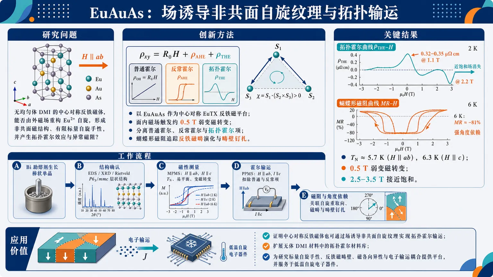
研究问题中心对称反铁磁体 EuAuAs 在没有均匀体 DMI 的情况下，是否能通过外磁场重构 Eu²⁺ 自旋，产生非共面磁结构、有限标量自旋手性，并表现出拓扑霍尔效应与异常磁阻？创新方法将 EuAuAs 作为中心对称 EuTX 反铁磁平台，利用面内磁场触发约 0.5 T 的弱变磁转变；通过普通霍尔、反常霍尔和拓扑霍尔三项分解，识别出由场诱导非共面反铁磁自旋纹理产生的拓扑霍尔信号，并用蝴蝶形磁阻揭示反铁磁畴演化和畴壁钉扎。工作流程Bi 助熔剂生长棒状 EuAuAs 单晶 → EDS、粉末/单晶 XRD 和 Rietveld 精修确认 P6₃/mmc 层状结构 → MPMS 测量 H∥ab 与 H∥c 下磁化率和 M-H 曲线，确定反铁磁转变、易平面各向异性和变磁转变 → PPMS 测量 H∥ab、I∥c 下霍尔电阻率，扣除普通霍尔和反常霍尔项得到拓扑霍尔电阻率 → 测量纵向磁阻与角度依赖磁阻，关联自旋重取向、磁畴演化和畴壁钉扎。关键结果EuAuAs 在 H∥ab 和 H∥c 下分别于约 5.7 K 和 6.3 K 进入反铁磁态；H∥ab 时 0.5 T 附近出现弱变磁转变，约 2.5–3.5 T 接近饱和。2 K、H∥ab、I∥c 下拓扑霍尔电阻率达到约 0.32–0.35 μΩ cm，并从 1.1 T 的正峰变为 2.2 T 的负峰，饱和场附近消失。磁阻呈蝴蝶形磁滞和强角度依赖，6 K 负磁阻可达约 −81%。应用价值证明中心对称反铁磁体也可通过场诱导非共面自旋纹理实现拓扑霍尔输运，扩展了无体 DMI 材料中的拓扑霍尔材料库；EuAuAs 为研究标量自旋手性、反铁磁畴壁、磁各向异性与电子输运耦合提供了新平台，并有助于发展基于反铁磁磁纹理和畴壁散射调控的低温自旋电子器件。第一部分：核心概览 (Overview)
EuAuAs 被确认为一种中心对称反铁磁 EuTX 体系中的场诱导拓扑霍尔平台：5.7/6.3 K 进入反铁磁态，面内磁场触发弱变磁转变，并在 H ∥ ab、I ∥ c 下产生最高约 0.35 μΩ cm 的拓扑霍尔电阻率。结果把 非共面自旋结构、有限标量自旋手性、反铁磁畴演化、畴壁钉扎 与输运异常联系起来，扩展了无体 DMI 中心对称反铁磁体中拓扑霍尔效应的材料范畴。
---
第二部分：结构化快速回顾
《Field-induced topological Hall effect and butterfly-shaped magnetoresistance in the centrosymmetric antiferromagnet EuAuAs》（None，）
背景
拓扑霍尔效应源于实空间 Berry 相位，通常由非共面磁结构或有限标量自旋手性产生。中心对称 EuTX 材料因 Eu²⁺ 大局域磁矩、可调磁基态和潜在拓扑能带而成为研究磁输运耦合的重要体系。EuAuAs 已被提出为反铁磁拓扑节线半金属候选体，但其磁性与输运关系此前不清楚。
方法
采用 Bi 助熔剂法生长 EuAuAs 单晶；用 EDS、粉末与单晶 XRD、Rietveld 精修确认结构；用 MPMS-3 测量磁化率与磁化曲线；用 PPMS-14 T 测量纵向电阻率、霍尔电阻率、磁阻及角度依赖磁阻。
结果
EuAuAs 具有 P6₃/mmc 六方结构，晶格常数 a = b = 4.4381(7) Å，c = 8.2798(3) Å。磁化率显示 H ∥ ab 和 H ∥ c 下反铁磁转变温度分别约 5.7 K 和 6.3 K。H ∥ ab 下出现 0.5 T 附近变磁转变和小磁滞。霍尔测量在 2 K 给出 ρxzᵀ ≈ 0.32–0.35 μΩ cm，并出现正负变号。磁阻表现出明显蝴蝶形磁滞和强角度依赖。
讨论
拓扑霍尔信号只出现在反铁磁态且低于饱和场，排除了普通霍尔、常规反常霍尔以及热涨落主导机制的充分解释，更符合场诱导非共面反铁磁自旋结构产生有限 χijk = Si·(Sj × Sk) 的图像。蝴蝶形磁阻可能来自自旋依赖散射、反铁磁畴演化和畴壁钉扎。
局限
缺少中子衍射、共振 X 射线散射、洛伦兹 TEM、磁力显微镜等直接磁结构证据；拓扑霍尔提取依赖高场线性拟合和饱和区假设；非共面自旋构型、畴结构、畴壁钉扎机制尚未被直接成像或定量建模。
结论
EuAuAs 是中心对称反铁磁体中场诱导拓扑输运的代表性材料，揭示了弱变磁转变、有限标量自旋手性、拓扑霍尔效应、蝴蝶形磁阻之间的紧密联系，为 EuTX 家族中的磁纹理—电子输运耦合研究提供了新实例。
---
第三部分：逐章节冷凝解析 (Section-by-Section Condensing)
Abstract
Magnetism–transport coupling defines the central problem
EuAuAs 的研究核心是磁自由度与电子自由度耦合导致的非常规输运，尤其是由实空间 Berry 相位驱动的拓扑霍尔效应。证据表述为：*"The coupling between magnetic and electronic degrees of freedom gives rise to a variety of intriguing transport phenomena."* 以及 *"the topological Hall effect, originating from the real-space Berry phase associated with nontrivial magnetic textures, has attracted considerable attention."*
Antiferromagnetic transitions are anisotropic
磁性表征显示 EuAuAs 在不同磁场方向下出现不同反铁磁转变温度：H ∥ ab 为 5.7 K，H ∥ c 为 6.3 K。原始证据为：*"Magnetic characterizations reveal antiferromagnetic transition at 5.7 K and 6.3 K for H ∥ ab and H ∥ c"*。这种方向依赖说明磁各向异性参与反铁磁序形成。
Metamagnetic transition and hysteresis occur for in-plane field
仅在 H ∥ ab 下观察到变磁转变和小磁滞，说明面内磁场更容易重构 Eu²⁺ 自旋排列。直接证据为：*"accompanied by metamagnetic transition and small hysteresis for H ∥ ab"*。
Topological Hall effect appears in the antiferromagnetic state
在 H ∥ ab、I ∥ c 几何下，反铁磁态内出现显著 THE，其物理来源被归因于有限标量自旋手性。证据为：*"Electrical transport measurements reveal a pronounced topological Hall effct in the antiferromagnetic state with H ∥ ab and I ∥ c, which may be attributed to finite scalar spin chirality."*
Butterfly-shaped magnetoresistance reflects domain and spin-texture dynamics
磁阻表现出蝴蝶形磁滞和强角度依赖，与自旋依赖电子散射、磁畴演化、畴壁钉扎有关。证据为：*"the magnetoresistance exhibits butterfly-shaped hysteresis and strong angular dependence, which are likely associated with spin-dependent electron scattering, magnetic-domain evolution, and domain-wall pinning."*
---
I. Introduction
AHE and THE are distinguished by momentum-space versus real-space Berry curvature
反常霍尔效应 AHE 通常与磁化或动量空间 Berry 曲率有关，而 拓扑霍尔效应 THE 来自实空间手性自旋纹理。关键表述为：*"the AHE manifests as a transverse voltage proportional to the magnetization in ferromagnetic systems"*；AHE 机制包括 *"the extrinsic mechanism, which arises from impurity scattering, including skew scattering and side-jump"* 与 *"the intrinsic Karplus–Luttinger mechanism, originating from the Berry curvature in momentum space"*。与之相对，THE 的定义为：*"the topological Hall effect (THE) originates from the real-space Berry curvatures induced by chiral spin textures."*
Scalar spin chirality is the microscopic quantity behind THE
当导电电子穿过非共面自旋结构时会获得非零 Berry 相位，相当于实空间有效磁场。关键公式为 χijk = Si·(Sj × Sk)。原始证据为：*"When conduction electrons propagate through a noncoplanar spin configuration, they acquire a nozero Berry phase that acts as an effective magnetic field in real space."* 以及 *"Such spin textures possesses a finite scalar spin chirality (SSC), defined as χijk = Si · (Sj × Sk)"*。
Nonzero scalar spin chirality can arise without conventional skyrmions
非零 SSC 可由多类磁结构产生，包括斯格明子、spin-flop 相关自旋重取向态、热涨落和磁场诱导短程自旋团簇。证据为：*"A nonzero SSC can arise in various noncoplanar magnetic configurations, including skyrmion textures, field-induced spin-reorientation states associated with a spin-flop transition, and short-range spin clusters generated by thermal fluctuations and magnetic fields."*
Centrosymmetric materials can host topological Hall responses
尽管早期 THE 主要集中在非中心对称 B20 材料 MnSi、MnGe、FeGe，中心对称体系也能产生 THE，例如 Gd₂PdSi₃、Fe₃Sn₂、MnNiGa。关键证据为：*"Early studies focused primarily on noncentrosymmetric B20-type compounds, including MnSi, MnGe, and FeGe thin films"*；转折证据为：*"Moreover, the THE has also been observed in a centrosymmetric system, like the geometrically frustrated triangular‑lattice magnet Gd2PdSi3."* 其中 Gd₂PdSi₃ 的意义在于：*"geometric frustration alone can stabilize topological spin states in centrosymmetric materials."*
EuTX compounds provide a tunable platform for magnetic topology
EuTX 体系具有 ZrBeSi 型六方结构、Eu²⁺ 半充满 4f 壳层和大局域磁矩，可通过 T/X 元素调控磁基态和拓扑性质。证据为：*"centrosymmetric europium-based ternary materials of the general formula EuTX (T = transition metal, X = pnictogen) provide a fertile platform for investigating the novel physical phenomena."* 结构与磁矩来源为：*"These compounds crystallize in the hexagonal ZrBeSi‑type structure and host divalent Eu2+ ions with a half‑filled 4f shell, which provides large localized moments."*
EuTX family already contains multiple Hall-active antiferromagnets
代表性 EuTX 材料表现出不同磁基态与 Hall 响应：EuAgAs 为反铁磁 Dirac 半金属并有大 THE；EuCuAs 有场可调 THE；EuCuSb 在变磁转变场与饱和场之间有显著 THE。原始证据为：*"EuAgAs is an antiferromagnetic (AFM) Dirac semimetal exhibiting a large THE and chiral anomaly induced positive longitudinal magnetoconductivity"*；*"EuCuAs displays a field-tunable THE associated with a field-induced transition from a helical to a transverse conical magnetic structure"*；*"the centrosymmetric AFM EuCuSb exhibits a significant THE in the field range between the metamagnetic transition field and magnetic saturation field."*
EuAuAs fills a knowledge gap in EuTX magnetotransport
EuAuAs 已被识别为反铁磁拓扑节线半金属候选体，但磁性与输运关联此前仍不清楚。证据为：*"EuAuAs has been identified as an antiferromagnetic topological nodal-line semimetal candidate."* 关键空白为：*"However, a detailed understanding about magnetism and transport properties still remain unclear, and further investigation is needed to learn the relation between magnetic properties and electronic transport."*
Core findings include anisotropic antiferromagnetism, THE, and butterfly MR
EuAuAs 单晶研究给出多项核心结果：H ∥ ab/H ∥ c 下反铁磁转变温度 5.7 K/6.3 K；H ∥ ab 下有变磁转变；2 K 下 THE 最大约 0.35 μΩ cm；磁阻有弱蝴蝶形结构。证据为：*"Magnetic measurements reveal that EuAuAs undergoes a antiferromagnetic transition at 5.7 K and 6.3 K for H ∥ ab and H ∥ c."*；*"A distinct metamagnetic transition is observed for H ∥ ab, whereas the corresponding transition is absent for H ∥ c."*；*"a THE is observed and reaches a maximum value of approximately 0.35 μΩ cm for H ∥ ab and I ∥ c at 2 K."*；*"a weak butterfly-shaped magnetoresistance (MR) is observed, consistent with the field-dependent M(H) curves."*
Table I positions EuAuAs within the EuTX family
EuAuAs 被列为 AFM + THE，与 EuCuAs、EuAgAs、EuAuSb、EuCuSb、EuAuBi 等 THE 材料并列。表格证据为：*"Compounds Ground state AHE/THE Ref. EuAuAs AFM THE This work"*。该定位表明 EuAuAs 是 EuTX 中心对称反铁磁 Hall 响应谱系的新成员。
---
II. Experimental Methods
Single crystals were grown by Bi flux
EuAuAs 单晶使用 Bi 助熔剂法生长，原料摩尔比为 Eu : Au : As : Bi = 1:1:1:15。证据为：*"EuAuAs single crystals were grown using bismuth (Bi) flux."* 以及 *"High-purity primary materials in a molar ratio of Eu : Au : As : Bi = 1:1:1:15 were mixed and put in an alumina crucible."*
Thermal protocol was precisely controlled
样品封入抽真空石英管后，在高温炉中加热至 1050 ℃ 并保温 20 h，随后用 7 天缓冷至 600 ℃。证据为：*"sealed into an evacuated quartz ampoule and placed into a high-temperature muffle furnace, heated to 1050 ℃ and held for 20 h."* 以及 *"slowly cooled to 600 ℃ over 7 days."*
Excess Bi flux was removed by centrifugation
在 600 ℃ 时快速取出石英管并倒置离心，以分离过量 Bi 助熔剂，得到棒状单晶。证据为：*"the quartz tube was quickly removed and inverted into the centrifuge to separate the excess Bi flux at 600 ℃."* 形貌证据为：*"The stick-like single crystals were obtained"*。
Composition and structure were checked by EDS and XRD
化学组成用 Oxford X-Max 50 EDS 确认；单晶与粉末 XRD 使用 Bruker D8 Advance，辐射源为 Cu Kα。证据为：*"The chemical compisitions were confirmed by energy dispersive X-ray spectroscopy (EDS, Oxford X-Max 50)."* 以及 *"The single crystal X-ray diffraction (XRD) patterns and room-temperature powder XRD pattern were carried out by a Brucker D8 Advance X-ray diffractometer using Cu Kα radiation."*
Magnetic and transport measurements used standard Quantum Design platforms
磁化测量使用 QD MPMS-3；电输运测量使用 QD PPMS-14 T；角度磁阻测量用旋转样品架。证据为：*"The magnetization measurements were performed on a Quantum Design magnetic properties measurement system (QD MPMS-3)."*；*"The electrical transport measurements were measured using a Quantum Design physical property measurement system (QD PPMS-14 T)."*；*"For angular dependent MR measurements, the samples were mounted on a rotation holder."*
---
III. Crystal structure and resistivity
EuAuAs has a hexagonal P6₃/mmc structure
EuAuAs 结晶于六方 P6₃/mmc，No.194 空间群。原始证据为：*"EuAuAs crystallizes in a hexagonal symmetry with the space group P63/mmc (No.194)."* 该结构是 EuTX 系列典型 ZrBeSi 型结构的组成基础。
Layered structure contains alternating Eu and Au–As layers
沿 c 轴，磁性 Eu 层与非磁性 Au–As 层交替堆叠；Eu 层与 Au–As 层分别构成二维三角晶格和蜂窝晶格。证据为：*"The magnetic Eu layers alternate with the nonmagnetic Au–As layers along the c-axis, which constitute two-dimensional triangular and honeycomb lattices, respectively."*
Rietveld refinement confirms high structural quality
室温粉末 XRD 与 Rietveld 精修给出晶格参数 a = b = 4.4381(7) Å，c = 8.2798(3) Å，与既有结果一致。证据为：*"The obtained lattice parameters are a = b = 4.4381(7) Å and c = 8.2798(3) Å, which are in good agreement with previous report."* 精修可靠因子 Rwp = 4.74%，Rp = 3.3%，证据为：*"The small reliability parameters Rwp = 4.74% and Rp = 3.3% suggest that the structural model is consistent with the diffraction data."*
Single-crystal XRD confirms oriented crystals
单晶 XRD 只出现 (0l0) 和 (00l) Bragg 峰，说明晶体取向明确、质量较好。证据为：*"the room-temperature single crystal XRD patterns exhibit only the (0l0) and (00l) Bragg peaks, respectively."*
Longitudinal resistivity shows metallic behavior
零场下 ρxx 与 ρzz 随温度降低逐渐减小，表现为金属性。证据为：*"As the temeperature decreases, the ρxx and ρzz gradually decrease, exhibiting the metallic behaviors."*
A resistivity upturn begins near 38 K before the AFM transition
当温度接近 38 K 时，ρxx 和 ρzz 均开始增加，直到接近 TN 后快速下降。这可能反映短程磁关联或自旋散射增强。证据为：*"When temeprature approaches to 38 K, both ρxx and ρzz show an increase until near TN, and then rapidly decrease."*
Transport is strongly anisotropic
ρzz 明显大于 ρxx，说明沿 c 轴输运比面内输运更受限，符合层状结构的电子各向异性。证据为：*"The markedly larger ρzz compared with ρxx reveals a strong electronic anisotropy in the longitudinal resistivity."*
---
IV. Magnetic properties
ZFC and FC susceptibility reveal antiferromagnetic transitions
在 μ₀H = 0.1 T 下，H ∥ ab 与 H ∥ c 的磁化率均出现峰值，对应从顺磁态到反铁磁态的转变。转变温度分别约 5.7 K 与 6.3 K。证据为：*"both χab and χc exhibit a pronounced peak at approximately 5.7 K and 6.3 K, indicating a magnetic transition from the paramagnetic (PM) state to the AFM state."*
Magnetic transition matches resistivity anomaly
磁化率峰值温度与电阻率异常一致，说明低温输运变化与反铁磁有序形成相关。证据为：*"This transition temperature is consistent with the anomaly observed in ρ(T)."*
Curie–Weiss fitting was performed from 50 to 300 K
逆磁化率 1/χ(T) 在 50–300 K 使用修正 Curie–Weiss 公式拟合：χ = χ0 + C/(T − θCW)。证据为：*"the inverse ZFC magnetic susceptibility 1/χ(T) curves can be fitted using modified Curie-Weiss (CW) law χ = χ0 + C/(T − θCW) in the temperature range of 50–300 K."*
Positive Weiss temperatures indicate ferromagnetic interactions in the paramagnetic regime
拟合得到 θCWab = 5.3 K、θCWc = 3.3 K。正 Weiss 温度指向顺磁区存在铁磁相互作用。证据为：*"The Curie–Weiss temperatures are determined to be θCWab = 5.3 K and θCWc = 3.3 K for H ∥ ab and H ∥ c, respectively."* 以及 *"The positive Weiss temperatures suggest ferromagnetic interaction in the paramagnetic regime."*
Effective magnetic moments match Eu²⁺
有效磁矩为 μeffab = 7.74 μB/Eu、μeffc = 8.19 μB/Eu，接近 Eu²⁺ 理论值 7.94 μB/Eu。证据为：*"The μeffab = 7.74 μB/Eu for H ∥ ab and μeffc = 8.19 μB/Eu for H ∥ c, both close to the theoretical value of g√S(S+1) μB = 7.94 μB/Eu for g = 2 and S = 7/2."*
Curie–Weiss parameters quantify anisotropy
表 II 给出 C = 7.48 emu K/(mol·Oe)、μeff = 7.74 μB/Eu、θCW = 5.3 K for H ∥ ab；C = 8.38 emu K/(mol·Oe)、μeff = 8.19 μB/Eu、θCW = 3.3 K for H ∥ c。证据为：*"Table II shows a summary of the extracted Curie-Weiss fitting parameters."*
μeffc exceeds the Eu²⁺ spin-only value
H ∥ c 下 μeffc = 8.19 μB/Eu 大于 Eu²⁺ 理论值，类似现象曾在 EuZn₂As₂ 和 EuCd₂As₂ 中出现。证据为：*"the effective magnetic moment μeffc = 8.19 μB/Eu is larger than the Eu2+ ion theoretical value, the similiar phenomenon has also been observed in EuZn2As2 and EuCd2As2."*
Low-temperature M(H) is nonlinear and saturates at high field
低于 TN 时，H ∥ ab 与 H ∥ c 下 M(H) 均先非线性增加，随后高场饱和。证据为：*"Below TN, the M(H) curves initially increase nonlinearly with μ0H before saturating at high fields for H ∥ ab and H // c."*
Short-range magnetic interactions persist above TN
即使在 30 K，高于 TN，磁化强度仍呈非线性场依赖，说明存在短程磁相互作用；到 50 K 时近似线性，符合顺磁态。证据为：*"Even above TN (e.g., at 30 K), the magnetization also exhibits a nonlinear field dependence, indicating the presence of short-range magnetic interaction."* 以及 *"At 50 K (well above TN), the nearly linear field-dependent magnetization is consistent with a paramagnetic state."*
Small hysteresis appears only for H ∥ ab
H ∥ ab 下，在 0.1 T < μ₀H < 0.6 T 范围出现小磁滞；H ∥ c 下无磁滞。证据为：*"the M(H) curves exhibit a small hysteresis in the field range of 0.1 T < μ0H < 0.6 T for H ∥ ab."* 以及 *"In contrast, the magnetic hysteresis is not observed for H ∥ c."*
Saturation magnetization approaches the Eu²⁺ full moment
2 K 下，H ∥ ab 在约 2.5 T 达到 6.5 μB/Eu，H ∥ c 在约 3.5 T 达到 6.8 μB/Eu，接近 gSμB = 7.0 μB/Eu。证据为：*"the saturation magnetization reaches 6.5 μB/Eu at about 2.5 T for H ∥ ab and 6.8 μB/Eu at about 3.5 T for H ∥ c, both of which are close to the theoretical value gSμB = 7.0 μB/Eu."*
Easy magnetization direction lies in the ab plane
面内方向更低场达到饱和，说明易磁化方向位于 ab 平面。证据为：*"This suggests that the spin moments are almost fully aligned with the external field at 7 T and that the easy magnetization direction lies in ab plane."*
Metamagnetic transition occurs near 0.5 T for H ∥ ab
2 K、H ∥ ab 下 M(H) 在低于约 1 T 处斜率变化；dM/dH 在 Habt = 0.5 T 附近出现峰值，对应变磁转变。证据为：*"the M(H) curve shows a minor change in slope below approximately 1 T at 2 K for H ∥ ab."* 以及 *"the dM/dH curve exhibits a pronounced peak near Habt = 0.5 T, which corresponds to a metamagnetic transition."*
Magnetic ground state is consistent with easy-plane antiferromagnetism
总体磁性符合易平面反铁磁态：Eu²⁺ 磁矩可能在 ab 平面内铁磁排列，沿 c 轴反铁磁耦合。证据为：*"These results are consistent with an easy-plane antiferromagnetic state, possibly with Eu2+ magnetic moments ferromagnetically aligned within the ab plane and antiferromagnetically coupled along the c axis."*
---
V. Hall effect
Hall measurements were performed with H ∥ ab and I ∥ c
霍尔电阻率 ρxz 在 2–50 K、I ∥ c、H ∥ ab 几何下测量。证据为：*"the field-dependent Hall resistivity measurements are performed from 2 K to 50 K with I ∥ c and H ∥ ab."*
A hump-like anomaly appears below approximately 3 T in the AFM state
在 T < TN 下，磁化过程中 ρxz 在低于约 3 T 区域出现清晰 hump 异常；随温度升高，异常略向低场移动，并在 6 K 以上逐渐消失。证据为：*"ρxz exhibits a clear hump-like anomaly below ∼3 T during the magnetization process for T < TN."* 以及 *"The anomaly shifts slightly to lower fields with increasing temperature and gradually disappears above 6 K."*
Ordinary plus anomalous Hall terms cannot fully explain the hump
该 hump 不能用普通霍尔项和与磁化成比例的反常霍尔项完全解释，说明存在额外 Hall 分量。证据为：*"the hump-like anomaly cannot be fully accounted for by the ordinary Hall contribution and a magnetization-scaled anomalous Hall contribution, suggesting the presence of an additional Hall component."*
Similar Hall anomalies in other magnetic topological materials are associated with THE
类似 ρxy(H) 异常曾见于 GdPtBi、Gd₂PdSi₃、EuCd₂As₂，通常归因于非共面自旋纹理产生的 THE。证据为：*"Similar anomalies in ρxy(H) have been observed in other magnetic topological materials, such as GdPtBi, Gd2PdSi3, and EuCd2As2, where they were attributed to the THE arising from noncoplanar spin textures."*
Hall resistivity was decomposed into normal, anomalous, and topological terms
总 Hall 电阻率写为 ρxz = ρxzN + ρxzA + ρxzT = μ0R0H + μ0RSM + ρxzT。证据为：*"The total Hall resistivity in magnetic systems contains three independent contributions: ρxz = ρxzN + ρxzA + ρxzT = μ0R0H + μ0RSM + ρxzT."*
High-field linear Hall slope indicates hole-dominated transport
高场下 ρxz 呈正线性场依赖，说明 EuAuAs 中电荷输运由空穴型载流子主导。证据为：*"The ρxz exhibits a positive linear field dependence at high fields, indicating that charge transport in EuAuAs are dominated by hole-type carriers."*
Topological Hall resistivity is tied to real-space Berry phase and finite SSC
ρxzT 源于电子穿过空间变化且具有限标量自旋手性的自旋纹理时获得的实空间 Berry 相位。证据为：*"The ρxzT denotes topological Hall resistivity, which derives from a real-space Berry phase acquired by electrons upon moving through spatially varying spin textures that possess finite SSC."*
Normal and anomalous Hall coefficients were extracted from 4–7 T
在 2 K 下，使用 4 T ≤ μ₀H ≤ 7 T 范围进行 ρxz/μ0H versus M/μ0H 线性拟合；该区间磁化近饱和，假设拓扑 Hall 项可忽略。证据为：*"A linear fitting of ρxz/μ0H versus M/μ0H is performed in the field range 4 T ≤ μ0H ≤ 7 T, where the magnetization is nearly saturated and the topological Hall contribution is assumed to be negligible."*
Extracted coefficients quantify ordinary and anomalous Hall terms
拟合截距和斜率分别为 R0 = 0.735 μΩ·cm T⁻¹、RS = 0.208 μΩ·cm T⁻¹。证据为：*"The intercept and slope are determined to be R0 = 0.735 μΩ·cm T−1 and RS = 0.208 μΩ·cm T−1, respectively."*
Anomalous Hall resistivity is small but temperature dependent
2 K 下 ρxzA ≈ 0.19 μΩ cm，随温度升高逐渐增加。证据为：*"The ρxzA is ∼0.19 μΩ cm at 2 K, and gradually increases with increasing temperature."*
Topological Hall signal reaches approximately 0.32 μΩ cm at 1.1 T
2 K 下，ρxzT 在 1.1 T 达到 0.32 μΩ cm，大小可与 MnSi 和 FeGe 薄膜相比。证据为：*"the magnitude of ρxzT reaches to 0.32 μΩ cm at 1.1 T, which is comparable to that of MnSi and FeGe thin films."*
Topological Hall signal changes sign before saturation
ρxzT 从 1.1 T 的 +0.32 μΩ cm 变为 2.2 T 的 −0.15 μΩ cm，并在 HabS = 3.35 T 饱和场消失。证据为：*"ρxzT changes sign from 0.32 μΩ cm at 1.1 T to -0.15 μΩ cm at 2.2 T, and vanishes at the saturation field (Habs) 3.35 T."*
THE tracks magnetization evolution and its second derivative
ρxzT、M(H)、d²M/dH² 的场依赖相互一致，说明 Hall 异常与磁结构重构有关。证据为：*"the field-dependent evolution of ρxzT, M(H), and its second derivative are all consistent."*
THE exists only below the saturation field
拓扑 Hall 峰只出现在 0 < μ₀H < Habs，支持其来源于场诱导自旋纹理，而非高场完全极化态。证据为：*"The peak appears exclusively in the range 0 < μ0H < Habs, suggesting the topological Hall response is associated with the magnetic-field-induced spin textures."*
Sign reversal may indicate reconstruction of noncoplanar AFM order
ρxzT 变号可能反映非共面反铁磁态在磁场下发生重构；不同各向异性磁构型可能产生相反符号的净 SSC。证据为：*"The sign reversal of ρxzT may reflect a field-induced reconstruction of the noncoplanar antiferromagnetic state."* 以及 *"The sign reversal in EuAuAs may arise from the competition between anisotropic magnetic configurations that produce oppositely signed net SSC."*
Temperature evolution supports an AFM-state origin
S1 样品中低场正峰随温度升高逐渐减弱，接近 8 K 几乎消失；中场负峰也随温度升高被抑制并在 6 K 消失。证据为：*"A pronounced peak-like anomaly appears in the low-field region and gradually weakens with increasing temperature, almost disappearing above 8 K."* 以及 *"this negative peak is progressively suppressed and vanishes at 6 K."*
The T–B contour map confines THE below TN and below saturation
T–B 图显示 THE 仅在 TN 以下和 H < Habs 区域明显，强调其与磁结构演化的关联。证据为：*"The topological Hall signal is pronounced only below TN and in the field region H < Habs, indicating that it may be associated with the evolution of the magnetic structure."*
Sample reproducibility supports intrinsic behavior
S2 样品也出现相似 hump 异常与温度依赖，支持该现象具有材料内禀性。证据为：*"sample S2 exhibits a similar hump-like anomaly and temperature dependence, which further support our experimental results."*
Conventional DMI-stabilized skyrmions are unlikely
EuAuAs 是中心对称体系，不预期存在均匀体 DMI 稳定的常规斯格明子。证据为：*"This topological Hall response is unlikely to originate from conventional skyrmions stabilized by a uniform bulk Dzyaloshinskii–Moriya interaction (DMI), which is generally not expected in centrosymmetric systems."*
Thermal spin-fluctuation scenario is disfavored
若热涨落诱导自旋团簇是主因，手性关联通常应在 TN 以上仍存在；但 EuAuAs 的 THE 在反铁磁转变温度以上消失。证据为：*"Such fluctuation-induced chiral correlations will still persist above the magnetic transition temperature, whereas the THE signal disappears above AFM transition temperature in EuAuAs."*
Most plausible mechanism is field-induced noncoplanar AFM spin texture
THE 只出现在反铁磁态、低于饱和场，并伴随 H ∥ ab 变磁转变，最符合场诱导反铁磁自旋纹理演化产生非共面构型与非零净 χijk。证据为：*"The THE signal appears only in the antiferromagnetic state and vanishes above Habs."* 以及 *"One possible microscopic scenario is that this evolution stabilizes a noncoplanar spin configuration with a nonzero net scalar spin chirality (χijk ≠ 0)."*
---
VI. MAGNETORESISTIVITY
MR is defined from longitudinal resistivity change
磁阻定义为 MR = [ρxx(H) − ρxx(0)]/ρxx(0) × 100%。证据为：*"MR, defined as MR = [ρxx(H) − ρxx(0)] / ρxx(0) × 100%."*
H ∥ ab and I ∥ c produce weak butterfly-shaped negative MR at low field
在低温低场、H ∥ ab、I ∥ c 下观察到弱蝴蝶形负磁阻，与 M(H) 的小磁滞一致。证据为：*"At low temperatures and low magnetic fields, we can observe a weak butterfly-shaped negative MR, which is consistent with the small hysteresis in M(H) curves."*
High-field MR decreases monotonically as spin-disorder scattering is suppressed
继续增大磁场后 MR 单调下降，可能由于系统接近自旋极化态时自旋无序散射被抑制。证据为：*"Upon further increasing magnetic field, the MR monotonically decreases, which may be associated with the suppression of spin-disorder scattering as the system approaches the spin-polarized state."*
MR anomaly weakens with temperature and disappears above TN
随温度升高，MR 峰向低场移动、逐渐减弱，并在 TN 以上消失。证据为：*"as the temperature increases, the MR peak shifts to lower fields and gradually weakens, eventually disappears above TN."*
Large negative MR reaches approximately −81% at 6 K
在 6 K，MR 约为 −81%，可能来自热自旋涨落与外场抑制自旋依赖散射的共同作用。证据为：*"At 6 K, the value of MR is approximately -81%, which may arise from thermal spin fluctuations, together with the suppression of spin-dependent scattering under the applied field."*
Low-field MR anomaly aligns with the metamagnetic transition
MR 峰出现在从 M(H) 提取的变磁转变场 Habt 附近，说明低场 MR 异常源于 Eu²⁺ 磁矩的场诱导重取向。证据为：*"the MR peak is observed near the metamagnetic transition field Habt extracted from the M(H) curves, indicating that the low-field MR anomaly may originate from the field-induced reorientation of the Eu2+ moments."*
MR becomes weakly field dependent above saturation
超过饱和场 Habs 后，MR 对磁场依赖变弱，符合自旋基本极化后的散射通道减少。证据为：*"Above the saturation field Habs, the MR exhibits a weak field dependence."*
H ∥ c gives pronounced butterfly-shaped hysteresis despite smooth M(H)
H ∥ c 下 M(H) 平滑、没有明显变磁转变，但对应 MR 在低温下显示强烈蝴蝶形磁滞和非单调场依赖。证据为：*"For H ∥ c, the M(H) curves evolve smoothly without an obvious metamagnetic transition, while the corresponding MR curves show a pronounced butterfly-shaped hysteresis and non-monotonic field dependence at low temperature."*
Butterfly MR likely involves AFM domains and domain-wall pinning
蝴蝶形 MR 可能与反铁磁畴演化和畴壁钉扎有关。证据为：*"The butterfly-shaped MR may be associated with the evolution of antiferromagnetic domains and domain-wall pinning during the field-induced spin reorientation."*
Analogous butterfly MR occurs in layered magnetic materials
相似蝴蝶形 MR 磁滞曾见于 MnBi₂Te₄、CrI₃、Cr₂Ge₂Te₆、Cr₁/₃TaS₂。证据为：*"Similar butterfly-shaped MR hysteresis has also been reported in antiferromagnetic topological insulator MnBi2Te4, CrI3, Cr2Ge2Te6 and exfoliated flake of Cr1/3TaS2."*
Angle-dependent MR demonstrates strong magnetic anisotropy
通过将磁场从 H ∥ c 旋转到 H ∥ ab，观察到蝴蝶形磁滞随角度明显变化。证据为：*"angle-dependent MR measurements were performed by rotating the magnetic field from H ∥ c to H ∥ ab."*
Butterfly hysteresis is strongest at θ = 0° and vanishes near θ = 90°
θ = 0° 时 MR 有显著蝴蝶形磁滞；磁场从 c 轴转向 ab 平面，即 θ = 90° 时，磁滞几乎消失。证据为：*"At θ = 0°, the MR exhibits a pronounced butterfly-shaped hysteresis."* 以及 *"As the magnetic field rotates from the c axis (θ = 0°) toward the ab plane (θ = 90°), the hysteresis is gradually suppressed and almost disappears at θ = 90°."*
MR peak shifts to lower field with angle
随旋转角度增加，MR 峰逐渐移动到较低磁场。证据为：*"Meanwhile, the peak of the MR gradually shifts to a lower magnetic field, as marked by the black dashed line."*
Angular dependence links butterfly MR to anisotropy, domains, and pinning
强角度依赖表明蝴蝶形 MR 与体系磁各向异性相关，可能涉及场驱动反铁磁畴演化和畴壁钉扎。证据为：*"This pronounced angular dependence suggests that the butterfly-shaped MR may be associated with the magnetic anisotropy, possibly involving the field-driven evolution of antiferromagnetic domains and domain-wall pinning."*
---
VII. Summary
EuAuAs single crystals were synthesized and characterized
研究对象为中心对称反铁磁 EuAuAs 单晶，重点测量磁性与电输运。证据为：*"we synthesized single crystals of the centrosymmetric antiferromagnet EuAuAs and investigated the magnetic and electrical transport properties."*
AFM transitions are direction dependent
磁性表征显示 H ∥ ab 与 H ∥ c 下反铁磁转变温度分别为 TN ≈ 5.7 K 和 6.3 K。证据为：*"Magnetic characterization reveals antiferromagnetic transitions at TN ≈ 5.7 K and 6.3 K for H ∥ ab and H ∥ c, respectively."*
Weak metamagnetic transition and hysteresis occur below TN for H ∥ ab
H ∥ ab 下低于 TN 出现弱变磁转变和磁滞行为。证据为：*"The magnetization exhibits a weak metamagnetic transition accompanied by hysteretic behavior with H ∥ ab below TN."*
THE is attributed to nonzero scalar spin chirality from field-induced noncoplanarity
在 AFM 态、H ∥ ab、I ∥ c 下观察到 THE，可能源于场诱导非共面自旋结构形成的非零 SSC。证据为：*"In the AFM state, a THE is observed with H ∥ ab and I ∥ c, which is likely associated with nonzero scalar spin chirality arising from a field-induced noncoplanar spin structure."*
Butterfly MR is most distinct for H ∥ c and I ∥ ab
H ∥ c、I ∥ ab 下观察到明显蝴蝶形磁阻。证据为：*"a distinct butterfly-shaped magnetoresistance is observed for H ∥ c and I ∥ ab."*
MR angular dependence reveals magnetic anisotropy and domain-wall physics
MR 的强角度依赖显示蝴蝶形 MR 磁滞与磁各向异性相关，并可能包含反铁磁畴和畴壁钉扎动力学。证据为：*"The strong angular dependence of MR reveals a correlation between the butterfly-shaped MR hysteresis and the magnetic anisotropy of the system, possibly involving the field-driven evolution of antiferromagnetic domains and domain-wall pinning."*
Field-induced spin textures and domain dynamics govern magnetotransport
EuAuAs 的磁输运主要受场诱导自旋纹理与磁畴动力学影响。证据为：*"These observations suggest the field-induced spin textures and magnetic-domain dynamics play an important role in the magnetotransport properties in EuAuAs."*
---
VIII. Acknowledgments
Funding sources indicate national-level condensed-matter support
支持来源包括中国国家重点研发计划、国家自然科学基金、中央高校基本科研业务费、中国人民大学科研基金、北京凝聚态物理国家实验室开放基金。证据为：*"This work is supported by the National Key R&D Program of China (Grant No. 2024YFA1409002), the National Natural Science Foundation of China (Grant No. 12404191), the Fundamental Research Funds for the Central Universities, and the Research Funds of Renmin University of China (Grant No. 23XNKJ22), and the Beijing National Laboratory for Condensed Matter Physics (Grant No. 2023BNLCMPKF008)."*
---
第四部分：深度理解与语言支持 (Understanding & Nuance)
1. 术语解析
Topological Hall effect
Topological Hall effect，拓扑霍尔效应不是普通由洛伦兹力导致的 Hall 效应，也不等同于与净磁化成比例的反常 Hall 效应。其关键在于电子在实空间非共面自旋纹理中运动时获得 Berry 相位，好像感受到一个额外的“涌现磁场”。语境表达为 *"real-space Berry phase associated with nontrivial magnetic textures"*。微妙点：观察到 hump-like Hall anomaly 不自动等于 THE，需要排除普通 Hall 和反常 Hall 分量。
Scalar spin chirality
Scalar spin chirality，标量自旋手性定义为 χijk = Si·(Sj × Sk)。它度量三个相邻自旋是否形成真正三维的非共面构型。若三个自旋共线或共面，该量通常为零；若非共面，则可非零。语境中的 *"finite scalar spin chirality"* 意味着不是单个自旋倾斜，而是局域三自旋构型具有手性体积。
Metamagnetic transition
Metamagnetic transition，变磁转变指磁场驱动下磁结构发生突变或快速重排，例如反铁磁自旋从某种排列转为倾斜、翻转或更接近极化的状态。这里的证据是 dM/dH 在 0.5 T 附近出现峰值。微妙点：它不一定是严格一阶相变；也可能是连续但很陡的自旋重取向。
Butterfly-shaped magnetoresistance
Butterfly-shaped magnetoresistance，蝴蝶形磁阻指 MR-H 回线在正负扫场中形成类似蝴蝶翅膀的磁滞形状。该形状通常暗示存在磁畴翻转、畴壁运动、钉扎释放、不可逆磁结构重排。这里尤其重要的是：H ∥ c 下 M(H) 平滑但 MR 磁滞明显，说明输运比体磁化更敏感于畴壁和局域散射。
Centrosymmetric antiferromagnet
Centrosymmetric antiferromagnet，中心对称反铁磁体具有空间反演对称性，因此通常不支持由均匀体 Dzyaloshinskii–Moriya interaction, DMI 稳定的常规手性斯格明子晶格。微妙点：中心对称并不排除 THE，因为几何阻挫、竞争交换、场诱导非共面结构、畴结构仍可产生有限 SSC。
---
2. 疑难查证：复杂概念解释
为什么中心对称体系中仍可能出现拓扑霍尔效应？
在非中心对称 B20 材料中，DMI 可以稳定螺旋磁结构和斯格明子晶格，THE 机制相对直观。但 EuAuAs 是中心对称结构，均匀体 DMI 通常被对称性禁止。因此 THE 若存在，更可能来自其他机制：
- 竞争交换相互作用：Eu 层内、层间交换可能让自旋在磁场下不能简单共线排列。
- 易平面各向异性：面内易磁化和 c 轴反铁磁耦合使自旋重排路径更复杂。
- 变磁转变：0.5 T 附近的重取向可能产生短暂稳定的非共面构型。
- 有限 χijk：非共面三自旋单元给电子提供实空间 Berry 曲率。
- 饱和场以上 THE 消失：自旋完全极化后 χijk 接近零，拓扑霍尔项自然消失。
因此，中心对称性排除的是“均匀 DMI 稳定常规斯格明子”这一特定路线，而不是排除所有非共面磁结构或 THE。
为什么 Hall 信号要拆成 ordinary、anomalous、topological 三部分？
总 Hall 电阻率中至少有三类来源：
- 普通 Hall 项 ρN = μ0R0H：由载流子在外磁场中的洛伦兹力产生，通常高场线性。
- 反常 Hall 项 ρA = μ0RSM：与磁化强度相关，可能来自动量空间 Berry 曲率或散射机制。
- 拓扑 Hall 项 ρT：来自实空间手性自旋纹理。
如果不扣除前两项，低场 hump 可能被误判为 THE。EuAuAs 中采用 4–7 T 近饱和区拟合 R0 和 RS，再计算 ρT = ρ − ρN − ρA。该方法合理但有假设：高场 THE 可忽略、RS 在相关场区有效、磁化数据与 Hall 几何可对应。
为什么 ρxzT 变号很重要？
ρxzT 的符号反映电子感受到的有效涌现磁场方向，也与净标量自旋手性的符号有关。EuAuAs 中 +0.32 μΩ cm at 1.1 T 到 −0.15 μΩ cm at 2.2 T 的变号说明场诱导自旋结构不是简单增强或减弱，而可能经历了两种产生相反净 SSC 的非共面构型。一个直观类比是：三个自旋形成的“手性三脚架”从右手性变成左手性，电子感受到的拓扑磁场方向也随之反转。
为什么 M(H) 平滑但 MR 可以有强磁滞？
体磁化 M(H) 是宏观平均量，对小体积分数畴壁、局域散射中心、畴边界重排不一定敏感。MR 则直接受电子散射路径影响，对畴壁和局域非均匀磁结构高度敏感。因此 H ∥ c 下即使 M(H) 无明显变磁峰，MR 仍可出现明显蝴蝶形磁滞。这说明磁畴动力学可能主要影响输运，而不显著改变总磁矩。
---
第五部分：创新评估与关联 (Synthesis & Novelty)
1. 创新性判断
EuAuAs 被纳入中心对称 EuTX 拓扑霍尔材料图谱
过去 2–5 年中，EuTX 家族中 EuAgAs、EuCuAs、EuCuSb、EuAuSb、EuAuBi 等相继显示 AHE/THE 或拓扑输运异常。EuAuAs 此前虽被认为是反铁磁拓扑节线半金属候选体，但缺乏系统磁性和输运研究。该结果把 EuAuAs 明确定位为 AFM + THE 的 EuTX 新成员，补齐了 Eu-Au-As 这一组合的实验输运证据。
中心对称反铁磁体中场诱导 THE 的机制被进一步拓展
相较于依赖 DMI 的非中心对称 B20 斯格明子材料，该结果强调：无均匀体 DMI 的中心对称反铁磁体也能通过磁场诱导的非共面 AFM 自旋纹理产生 THE。新颖性不只是“又发现一个 THE 材料”，而是把 THE 与 H ∥ ab 下的弱变磁转变、饱和场以下有限信号、温度低于 TN、ρT 变号系统关联起来。
ρxzT 变号提供了自旋手性重构线索
许多 THE 报道只给出单一符号 hump；EuAuAs 中 ρxzT 从 +0.32 μΩ cm 到 −0.15 μΩ cm 的变号更有信息量，指向不同场区中可能存在相反符号的净标量自旋手性。这为研究场诱导非共面反铁磁态之间的重构提供了实验入口。
Hall 与 MR 同时揭示自旋纹理和磁畴动力学
拓扑霍尔信号主要在 H ∥ ab、I ∥ c 下显著，而蝴蝶形 MR 在 H ∥ c、I ∥ ab 和角度依赖测量中尤为突出。二者共同说明 EuAuAs 的磁输运不是单一机制，而是同时包含：
- 场诱导非共面自旋纹理；
- 标量自旋手性；
- 自旋依赖散射；
- 反铁磁畴演化；
- 畴壁钉扎；
- 强磁各向异性。
这种“Hall 看手性、MR 看畴壁”的互补图像，是该研究相对于单纯 Hall 测量或单纯磁阻测量工作的增量。
解决的前人未解问题
EuAuAs 之前的关键空白是：其作为反铁磁拓扑节线半金属候选体，是否具有与磁结构耦合的非平庸输运响应并不清楚。该结果解决了三个具体问题：
- 磁基态是什么？
低温为易平面反铁磁态，转变温度约 5.7/6.3 K，Eu²⁺ 磁矩接近理论值。
- 磁场是否能重构自旋结构？
H ∥ ab 下 0.5 T 附近出现弱变磁转变，约 2.5–3.5 T 达到接近饱和。
- 输运是否携带拓扑或畴动力学信息？
存在最高约 0.32–0.35 μΩ cm 的 THE，以及强角度依赖蝴蝶形 MR，表明磁纹理和畴壁显著影响电子输运。
仍需后续验证的关键创新点
最重要的未完成环节是直接磁结构证据。若后续通过中子衍射或共振 X 射线散射证明 H ∥ ab 下确有非共面 AFM 结构，并通过显微手段观察 H ∥ c 下畴壁钉扎，则 EuAuAs 可成为中心对称反铁磁体中“场诱导 SSC—THE—畴壁 MR”耦合机制的标杆材料。
-
09
📊 含图深析
📄 摘要：在室温范德华铁磁体 Fe3GaTe2 中施加最高 4.2% 单轴拉伸，应变连续调控平衡磁响应和超快退磁动力学。拉伸使矫顽力升高，并改变光激发后的退磁过程，提供原位控制非平衡自旋相互作用的手段。
💡 亮点：Fe3GaTe2 的室温铁磁性和飞秒退磁可被 4.2% 单轴应变连续调节。范德华磁体因此成为研究应变可控超快自旋动力学的实验平台。
📖 展开分析 + 配图
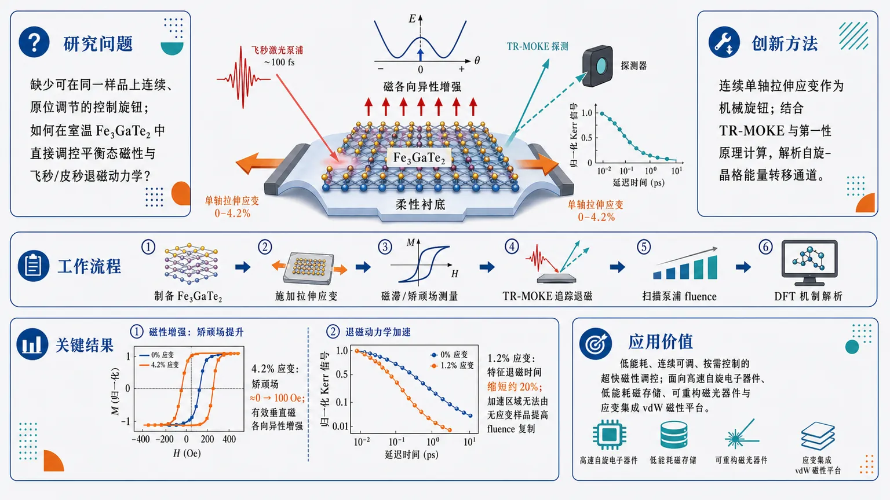
研究问题超快磁学缺少可在同一样品上连续、原位调节的“控制旋钮”：如何在室温范德华铁磁体 Fe₃GaTe₂ 中，不依赖更换材料或单纯提高激光泵浦能量，直接调控平衡态磁性与飞秒/皮秒尺度超快退磁动力学？创新方法将连续单轴拉伸应变作为机械调控旋钮引入 Fe₃GaTe₂：最高 4.2% 拉伸应变重塑磁能景观，增强有效垂直磁各向异性；结合 TR-MOKE 与第一性原理计算，揭示 1.2% 应变即可改变自旋-晶格能量转移通道，使退磁进入无应变样品靠增加泵浦 fluence 也无法达到的加速区域。工作流程制备室温 vdW 铁磁体 Fe₃GaTe₂ → 对样品施加连续单轴拉伸应变 → 测量磁滞/矫顽场等平衡态磁响应 → 用时间分辨磁光克尔效应追踪激光泵浦后的超快退磁曲线 → 扫描泵浦能量并比较有/无应变样品 → 结合第一性原理计算解析应变如何改变磁各向异性、自旋-晶格能量传递和自旋弛豫路径。关键结果4.2% 单轴拉伸应变使矫顽场从接近 0 增加到 100 Oe，显示磁化翻转能垒和有效垂直磁各向异性增强；1.2% 拉伸应变使特征退磁时间缩短约 20%；这种加速退磁不能通过在无应变样品中简单提高泵浦 fluence 复制，说明应变打开了不同的能量转移/弛豫通道。应用价值机械应变为室温二维/范德华铁磁体提供低能耗、连续可调、按需控制的超快磁性调控方案，可用于高速自旋电子器件、低能耗磁存储、可重构磁光器件和应变集成 vdW 磁性平台，减少对高光泵浦能量的依赖并降低热负荷。第一部分：核心概览
该研究把连续单轴拉伸应变引入室温范德华铁磁体 Fe₃GaTe₂ 的超快磁性调控，展示最高 4.2% tensile strain 可显著增强矫顽场，1.2% tensile strain 可使超快退磁时间缩短约 20%。核心贡献在于证明机械应变不仅能调控平衡态磁各向异性，还能重塑自旋-晶格能量转移与退磁通道，为低能耗、可按需调控的高速自旋电子学提供材料平台。
---
第二部分：结构化快速回顾
《Strain engineering of ultrafast magnetism in the room-temperature vdW ferromagnet Fe3GaTe2》（None，）
背景
超快磁动力学的可控性对理解非平衡自旋相互作用和发展高速自旋电子学至关重要。现有超快磁学研究多依赖材料本征性质，缺乏高效的原位调控策略。
方法
采用室温范德华铁磁体 Fe₃GaTe₂，施加最高 4.2% 单轴拉伸应变；结合平衡态磁响应测量、时间分辨磁光克尔效应 TR-MOKE 和第一性原理计算，分析应变对磁各向异性与超快退磁的影响。
结果
最高 4.2% tensile strain 将矫顽场从接近零提高到 100 Oe；1.2% tensile strain 将特征退磁时间缩短约 20%。应变诱导的加速退磁状态无法通过在无应变样品中单纯提高泵浦 fluence 获得。
讨论
应变增强有效垂直磁各向异性，并改变spin-lattice energy transfer，从而加速超快退磁。机械变形不仅改变静态磁能景观，也重新配置自旋弛豫路径。
局限
可用材料未给出完整正文、图表、样品尺寸、厚度、统计重复次数、误差条、拟合模型、泵浦/探测波长、温度依赖、应变循环稳定性和器件级可扩展性数据。
结论
机械应变可作为室温范德华铁磁体中超快磁动力学的连续、原位、低能耗调控手段，在不单纯增加光泵浦能量的情况下实现更快退磁动力学。
---
第三部分：逐章节冷凝解析
可用材料仅包含 arXiv 页面元数据与 Abstract，未包含论文 PDF 正文中的 Introduction、Methods、Results、Discussion、Conclusion、Supplementary Information 等章节内容。因此，以下严格依据已提供的原始可见章节 Abstract 解析；未出现的数据不作推断。
---
Abstract
Mechanical strain addresses a key control bottleneck in ultrafast magnetism
超快磁动力学的核心科学问题在于如何调控非平衡态下的自旋、电子和晶格之间的能量与角动量交换。该研究把问题定位在一个领域瓶颈：多数超快磁学实验只能改变光泵浦条件或选用不同材料，缺少对同一样品进行连续、原位调控的手段。摘要明确指出，控制超快磁动力学对于基础物理和应用都重要：*"Controlling ultrafast magnetic dynamics is critical to understanding nonequilibrium spin interactions and advancing high-speed spintronics."* 关键限制在于：*"a lack of efficient in situ tuning strategies leaves most ultrafast studies largely dependent on the intrinsic properties of the individual materials."*
- 具体调控对象：ultrafast magnetic dynamics
- 目标物理过程：nonequilibrium spin interactions
- 应用方向：high-speed spintronics
- 现有瓶颈：缺少 efficient in situ tuning strategies
- 可见摘要中未给出：既往样品数量、已有材料体系列表、具体时间尺度范围、统计显著性。
---
Fe₃GaTe₂ serves as a room-temperature vdW ferromagnetic platform
研究对象为 Fe₃GaTe₂，其关键属性是室温范德华铁磁体。这种材料平台的重要性在于：范德华材料通常具有层状结构，适合机械应变、异质集成和低维器件构筑；室温铁磁性则使其比低温二维磁体更接近实际自旋电子学应用。摘要中的材料定位为：*"the room-temperature van der Waals ferromagnet Fe3GaTe2."*
- 材料：Fe₃GaTe₂
- 材料类别：van der Waals ferromagnet
- 工作温区特征：room-temperature
- 可见摘要中未给出：晶体生长方法、样品厚度、层数、居里温度、晶向、应变方向对应的晶轴、样品封装方式。
---
Continuous strain tuning modifies both equilibrium magnetism and ultrafast demagnetization
研究并非只观察静态磁性或只观察超快过程，而是同时调控两类响应：equilibrium magnetic response 与 ultrafast demagnetization dynamics。这使得论文的逻辑链条更完整：应变先改变磁能景观，再影响非平衡态退磁过程。摘要直接给出总体发现：*"Here we demonstrate continuous strain tuning of both the equilibrium magnetic response and ultrafast demagnetization dynamics in the room-temperature van der Waals ferromagnet Fe3GaTe2."*
- 调控方式：continuous strain tuning
- 静态响应：equilibrium magnetic response
- 动态响应：ultrafast demagnetization dynamics
- 材料平台：room-temperature van der Waals ferromagnet Fe₃GaTe₂
- 可见摘要中未给出：应变步进大小、应变标定方式、是否可逆、应变滞后、疲劳循环次数。
---
Up to 4.2% uniaxial tensile strain increases coercivity to 100 Oe
最高 4.2% 单轴拉伸应变显著改变平衡态磁滞行为。矫顽场从“接近零”升高到 100 Oe，说明应变增强了磁化翻转所需的外场，反映磁畴翻转能垒或各向异性能垒增加。摘要给出的定量结果为：*"Applying up to 4.2% uniaxial tensile strain increases the coercive field from nearly zero to 100 Oe."*
- 最大应变：4.2% uniaxial tensile strain
- 矫顽场初始值：nearly zero
- 矫顽场应变后值：100 Oe
- 变化方向：显著增加
- 物理含义：磁化反转更困难，磁稳定性增强
- 可见摘要中未给出：误差范围、磁滞回线形状、磁场方向、测量温度、MOKE 或 SQUID/VSM 具体手段、不同应变点完整数据。
---
Coercivity enhancement is linked to stronger effective perpendicular magnetic anisotropy
矫顽场增加与有效垂直磁各向异性增强相一致。这里的“consistent with”语气严谨，表示数据支持该解释，但摘要层面未显示直接各向异性常数测量或完整拟合。原文表述为：*"consistent with an enhancement of the effective perpendicular magnetic anisotropy."*
- 关键物理量：effective perpendicular magnetic anisotropy
- 观测指标：矫顽场从近零到 100 Oe
- 推断关系：应变增强垂直磁各向异性，进而增加磁化翻转能垒
- 语气强度：consistent with，不是“直接证明”的强断言
- 可见摘要中未给出：有效各向异性常数 (Kₑff)、饱和磁化强度 (Mₛ)、退磁场修正、硬轴/易轴磁化曲线、角分辨测量。
---
Time-resolved MOKE reveals strain-accelerated ultrafast demagnetization
动态测量采用时间分辨磁光克尔效应，即 time-resolved magneto-optical Kerr effect measurements。该技术通过探测 Kerr 旋转或 Kerr 椭偏变化追踪磁化随泵浦-探测延迟时间的演化。摘要给出核心动态结果：*"Time-resolved magneto-optical Kerr effect measurements further reveal strain-accelerated ultrafast demagnetization."*
- 技术：time-resolved magneto-optical Kerr effect, TR-MOKE
- 被测过程：ultrafast demagnetization
- 主要效应：应变使退磁加速
- 可见摘要中未给出：泵浦波长、探测波长、脉宽、重复频率、光斑尺寸、泵浦 fluence 数值、探测极化几何、时间分辨率、拟合函数。
---
1.2% tensile strain reduces demagnetization time by approximately 20%
较小应变 1.2% tensile strain 已能显著加快退磁，使特征退磁时间缩短约 20%。该结果说明动态效应不需要接近最大 4.2% 的大应变即可出现。摘要中的定量表述为：*"with 1.2% tensile strain reducing the characteristic demagnetization time by approximately 20%."*
- 应变大小：1.2% tensile strain
- 动态指标：characteristic demagnetization time
- 改变量：约 20% reduction
- 方向：退磁加快
- 可见摘要中未给出：无应变退磁时间绝对值、有应变退磁时间绝对值、误差条、拟合置信区间、样品间重复性、统计显著性 P 值。
---
Strain reaches a demagnetization regime inaccessible by simply increasing pump fluence
最具创新性的动态结果之一是：应变诱导的加速退磁不是简单等价于“更强光泵浦”造成的热效应。摘要明确强调：*"Remarkably, strain accesses an accelerated demagnetization regime that cannot be reached simply by increasing pump fluence in the unstrained sample."* 这意味着应变改变了系统本身的能量转移路径或磁能景观，而不是仅仅提高电子温度或注入更多光能。
- 比较对象：strained sample vs unstrained sample
- 控制变量：pump fluence
- 关键结论：提高无应变样品泵浦强度不能复制应变态下的加速退磁
- 物理含义：应变调控的是材料内部耦合与能量通道，而非单纯热激发强度
- 可见摘要中未给出：泵浦 fluence 扫描范围、损伤阈值、温升估算、不同 fluence 下的退磁时间曲线。
---
First-principles calculations connect strain to spin-lattice energy transfer
实验结果与第一性原理计算结合，用于解析应变如何改变退磁过程。摘要给出的机制为：应变修改 spin-lattice energy transfer，从而导致退磁加速。原文为：*"Combined with first-principles calculations, our results resolve that the applied strain modifies the spin-lattice energy transfer, leading to the observed accelerated demagnetization."*
- 理论方法：first-principles calculations
- 机制核心：spin-lattice energy transfer
- 结果联系：应变改变自旋-晶格能量转移，导致退磁加速
- 可见摘要中未给出：DFT 泛函、赝势、k 点网格、能量截断、自旋轨道耦合处理、声子计算、电子-声子耦合、自旋-轨道矩阵元、磁各向异性能量数值。
---
Mechanical strain lowers optical-energy requirements by reconfiguring magnetic energy landscapes
结论层面，应变被建立为一种可按需调控超快磁动力学的有效路径。其优势不仅是改变速度，还包括降低所需光能，因为应变预先重构了磁性系统的能量景观和自旋弛豫路径。摘要总结为：*"These findings establish mechanical strain as an effective route for on-demand control of ultrafast magnetic dynamics while reducing the required optical energy by reconfiguring the magnetic energy landscape and associated spin-relaxation pathways."*
- 调控手段：mechanical strain
- 调控性质：on-demand control
- 被控对象：ultrafast magnetic dynamics
- 能耗优势：reducing the required optical energy
- 机制框架：重构 magnetic energy landscape 与 spin-relaxation pathways
- 可见摘要中未给出：光能降低的定量比例、器件工作能耗、循环寿命、实际开关能量、纳米器件集成实验。
---
第四部分：深度理解与语言支持
1. 术语解析
#### Ultrafast demagnetization
Ultrafast demagnetization 指飞秒到皮秒尺度内磁化强度快速下降的过程，通常由飞秒激光泵浦触发。其物理来源涉及电子加热、自旋-轨道耦合、电子-声子耦合、超扩散自旋流、自旋-晶格能量交换等。语境中的重点不是“磁性消失”，而是磁化在非平衡激发后短时间内的快速减小。
对应原文：*"ultrafast demagnetization dynamics"*。
---
#### In situ tuning strategies
In situ tuning strategies 指在同一实验环境和同一样品上实时改变外部参数，例如电场、应变、压力、栅压、温度或磁场，而不是更换材料或重新制备样品。这里的微妙点在于 in situ 强调“原位”和“连续可调”，对应研究中的机械应变控制。
对应原文：*"a lack of efficient in situ tuning strategies"*。
---
#### Coercive field
Coercive field，即矫顽场，表示使磁化从饱和状态反转到零所需的反向磁场。矫顽场从接近零升至 100 Oe，说明磁化翻转能垒提高，但并不自动等同于饱和磁化强度增加。
对应原文：*"increases the coercive field from nearly zero to 100 Oe"*。
---
#### Effective perpendicular magnetic anisotropy
Effective perpendicular magnetic anisotropy 指考虑晶体磁各向异性、形状退磁能、界面效应等因素后的净垂直易轴倾向。Effective 很关键，表示它不是单一微观来源，而是多个贡献合并后的有效量。摘要中用 consistent with，说明矫顽场增强支持该解释，但摘要未展示直接计算或测量的 (Kₑff)。
对应原文：*"consistent with an enhancement of the effective perpendicular magnetic anisotropy"*。
---
#### Spin-lattice energy transfer
Spin-lattice energy transfer 指自旋自由度与晶格振动自由度之间的能量交换。超快退磁中，激光首先激发电子系统，随后能量在电子、自旋、晶格之间重新分配；如果应变改变晶格结构、声子谱、磁弹耦合或自旋轨道耦合，自旋向晶格耗散能量的速率就可能改变。
对应原文：*"the applied strain modifies the spin-lattice energy transfer"*。
---
2. 疑难查证
#### 为什么应变加速退磁不等于提高泵浦能量？
提高泵浦 fluence 主要增加系统吸收的光能，通常带来更高电子温度、更强非平衡激发和更大退磁幅度。但应变改变的是材料哈密顿量中的结构参数，例如原子间距、轨道重叠、磁各向异性、自旋-轨道耦合和声子模式。两者作用层级不同：
- 提高 fluence：改变激发强度；
- 施加 strain：改变材料能量景观和耦合通道。
因此，若无应变样品中单纯增加 fluence 仍无法达到相同快速退磁状态，就说明应变引入了新的或更高效的弛豫路径。摘要中的关键句是：*"strain accesses an accelerated demagnetization regime that cannot be reached simply by increasing pump fluence in the unstrained sample."*
---
#### 为什么矫顽场增强可与垂直磁各向异性增强相关？
磁化翻转需要克服能垒。若垂直磁各向异性增强，磁矩更倾向保持在垂直方向，反向磁场必须更大才能推动磁畴成核、畴壁运动或整体翻转。因此矫顽场可能升高。需要注意，矫顽场还受缺陷、畴壁钉扎、样品厚度、边界、应力不均匀等影响，所以摘要使用的是较谨慎的 consistent with，而非绝对因果证明。
---
#### 为什么 1.2% 应变影响退磁，而 4.2% 应变用于静态矫顽场？
摘要给出两个不同应变数值：4.2% 对应静态磁响应中矫顽场升至 100 Oe；1.2% 对应 TR-MOKE 中退磁时间缩短约 20%。这说明静态磁性和超快动力学可能在不同应变范围内测量或优化。不能从摘要推断 4.2% 下的退磁是否更快，也不能推断 1.2% 下的矫顽场具体数值。
---
第五部分：创新评估与关联
1. 创新性判断
#### 从材料本征超快响应转向可连续调控的超快响应
过去 2–5 年，二维/范德华磁体中的超快磁学研究主要集中于材料本征退磁、层间磁耦合、光诱导磁相变、泵浦 fluence 依赖和温度依赖。该研究的新颖性在于把机械应变作为连续原位旋钮，直接调控同一室温 vdW 铁磁体的静态磁性和超快退磁。
核心突破对应摘要中的：*"continuous strain tuning of both the equilibrium magnetic response and ultrafast demagnetization dynamics"*。
---
#### 解决了单纯依赖 pump fluence 的调控局限
传统超快磁调控常通过提高泵浦能量实现更强退磁，但这会带来热负荷、损伤风险和能耗增加。该研究显示，应变能进入无应变样品提高 fluence 也无法达到的快速退磁区域：*"cannot be reached simply by increasing pump fluence in the unstrained sample."* 这解决了“光能越大并不一定带来越优动力学路径”的问题。
---
#### 把静态磁各向异性和动态退磁路径联系起来
应变同时改变coercive field、effective perpendicular magnetic anisotropy 和 spin-lattice energy transfer，使静态磁能景观与超快弛豫动力学形成同一调控框架。该点比单纯报告退磁时间变化更有机制深度。
---
#### 室温 vdW 铁磁体提升应用相关性
许多二维磁体需要低温维持磁有序，限制器件应用。Fe₃GaTe₂ 的室温铁磁属性使应变调控超快磁性更贴近高速自旋电子学、低能耗磁存储和可重构磁光器件。
---
#### 机械应变提供低能耗替代路径
通过重构磁能景观和自旋弛豫路径实现退磁加速，而不是简单增加光泵浦能量。摘要中的结论是：*"reducing the required optical energy by reconfiguring the magnetic energy landscape and associated spin-relaxation pathways."* 这为低能耗超快磁控制提供了明确方向。
-
10
📄 摘要：围绕 Hubbard 模型基态能否出现铁磁有序这一数学物理难题，讨论晶格结构对铁磁形成的关键作用。文章强调简单立方晶格上铁磁通常难以稳定，而特定 Tasaki 型等晶格可在相互作用电子体系中自然产生铁磁基态。
💡 亮点：该文聚焦 Hubbard 模型铁磁性的严格判据，突出晶格几何而非单纯相互作用强度的作用。它为窄带和扁平带铁磁的理论证明脉络提供整理与推进。
📖 展开分析 + 配图
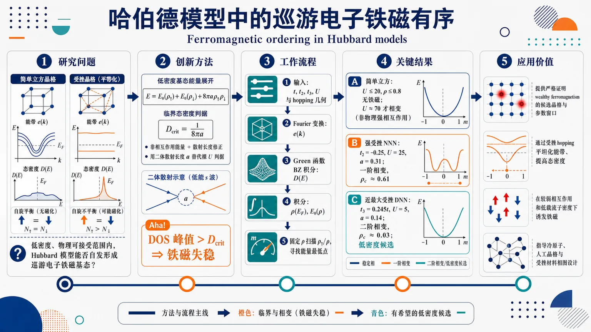
研究问题Hubbard 模型能否在非极端、物理可接受的低密度范围内自发形成巡游电子铁磁基态？核心视觉可表现为：普通立方晶格能带陡峭、态密度低、无磁化；受挫晶格能带变平、Fermi 能级附近态密度堆积，可能触发自旋上/下粒子数不平衡。创新方法将严格低密度基态能量展开推广性用于受挫 Hubbard 晶格：用“非相互作用能量 + 散射长度修正项”近似总能量，即 E=E0(ρ↑)+E0(ρ↓)+8πaρ↑ρ↓；Aha 点是把传统 Stoner 的裸 U 判据替换为由二体散射长度 a 控制的临界态密度 Dcrit=1/(8πa)，用态密度峰值直接判断铁磁失稳。工作流程输入不同晶格 hopping 几何与参数 t、t2、t3、U；由 Fourier 变换得到色散 e(k)；用 Green 函数在第一布里渊区积分计算态密度 D(E)；积分得到粒子密度 ρ(EF) 与非相互作用能 E0(ρ)；固定总密度 ρ，扫描自旋比例 ρ↑/ρ；寻找能量曲线最低点是否从 1/2 分裂或跳变到非零磁化。关键结果简单立方晶格在 U≤20、ρ≤0.8 内无铁磁，只有 U≈70 的非物理强相互作用才出现相变；强受挫 NNN 晶格在 t2=-0.25、U=25、a=0.31 时发生一阶相变，ρc≈0.61；近最大受挫 DNN 晶格在 t3=0.245t、U=5、a=0.14 时发生二阶相变，ρc≈0.03，是最有价值的低密度铁磁候选。应用价值为严格证明物理范围内的“wealthy ferromagnetism”提供具体候选晶格和参数窗口；说明通过受挫 hopping 平坦化能带、提高态密度，可在较弱相互作用和低载流子密度下诱发铁磁；也为冷原子光学晶格、人工晶格材料和受挫电子系统设计提供可视化相图思路。第一部分：核心概览 (Overview)
该研究把低密度展开用于多种受挫 Hubbard 晶格，以非相互作用能量、散射长度修正项 (8π ah̊oₚ̆arrowh̊o_downarrow) 近似基态能量，并通过态密度与Green 函数数值判断铁磁相变。核心贡献在于把 Lieb–Seiringer–Solovej、Giuliani、Seiringer–Yin 等严格低密度能量公式的思想推广到非简单立方受挫晶格，显示强受挫可在中低密度甚至 (h̊o_capprox0.03) 诱发自发磁化，为“wealthy ferromagnetism”的严格证明提供候选模型与量化线索。
---
第二部分：结构化快速回顾
《Ferromagnetic ordering in Hubbard models》（None，）
背景
Hubbard 模型长期被视为解释巡游电子铁磁性的核心模型，但严格证明极少。Nagaoka 铁磁性、Lieb 亚铁磁性、平带铁磁性虽重要，却多依赖极端或特殊条件，距离物理密度范围内的“wealthy ferromagnetism”仍有距离。受挫晶格因可产生高态密度和平坦色散，被认为更可能支持铁磁基态。
方法
采用低密度基态能量展开：
[
E(h̊oₚ̆arrow,h̊o_downarrow)
=E₀₍ₕ̊oₚ̆arrow)+E₀₍ₕ̊o_downarrow)+8π ah̊oₚ̆arrowh̊o_downarrow
]
忽略高阶余项。通过 Green 函数
[
G(z)=frac1(2π)^dintₘ̊ ₁BZfracd^dkz-e(k)
]
计算态密度
[
D(E)=-frac1πm̊ Im,G⁺⁽E)
]
再由态密度积分得到 (E₀₍ₕ̊o))，扫描 (h̊oₚ̆arrow/h̊o) 判断磁化。
结果
简单立方晶格在 (Ułe20)、(h̊ołe0.8) 无铁磁；只有 (Uapprox70) 这类非物理强相互作用下出现相变。加入次近邻 hopping 的强受挫立方晶格在 (U=25)、(a=0.31)、(t=-1)、(t₂₌₋₀.25) 时出现一阶相变，(h̊o_capprox0.61)。加入面对角 hopping 的近最大受挫晶格 (t₃₌₀.245t) 在 (U=5)、(a=0.14) 时出现二阶相变，(h̊o_capprox0.03)。
讨论
铁磁出现与高态密度密切相关，可视为超越平均场层面的 Stoner 机制类比。最大受挫情形可能产生奇异态密度和非孤立能带极小值，导致散射长度定义与低密度展开适用性存疑。
局限
核心假设是把已在简单立方晶格证明的低密度展开推广到若干受挫晶格，并忽略余项；因此结论不是严格证明。最大受挫 DNN 晶格的极小值位于整条线 (kᵢ₌₀)，不满足孤立二次极小值条件，可能破坏标准二体散射图像。
结论
强受挫 Hubbard 晶格可在远低于简单立方晶格的密度下出现铁磁基态，尤其近最大受挫 DNN 情形给出 (h̊o_capprox0.03) 的低密度铁磁候选，为未来严格估计低密度展开余项、证明物理范围内铁磁性提供方向。
---
第三部分：逐章节冷凝解析 (Section-by-Section Condensing)
Ferromagnetic ordering in Hubbard models
Abstract
- Long-standing problem in rigorous itinerant ferromagnetism
核心问题是证明某些 Hubbard 模型基态可呈现铁磁有序。摘要开篇直接界定问题为理论凝聚态与数学物理中的长期难题：*"One of the long-standing and only partially solved problems of theoretical condensed matter physics and mathematical physics is to demonstrate that ground states of some of the versions of the Hubbard model can exhibit a ferromagnetic ordering."* 这表明目标不是经验拟合，而是围绕基态铁磁性存在性展开。
- Lattice geometry as a decisive factor
研究假设晶格结构对铁磁性至关重要，尤其是受挫晶格可在低载流子密度下自然支持铁磁性。摘要明确指出：*"It has long been speculated that the opportunity crucial for the occurrence of ferromagnetism is the structure of the lattice on which the Hubbard model is formulated."* 随后形成对比：简单立方晶格上 *"no ferromagnetic ordering seems to be possible"*，而受挫晶格上铁磁可 *"naturally arise, even for low densities of magnetic moment carriers"*。
- Low-density expansion as the central analytical tool
研究使用 Lieb、Seiringer、Solovej 在连续体系与 Giuliani 在简单立方 Hubbard 模型中严格证明的基态能量低密度展开首项。摘要写明：*"We investigate the problem of ground state ferromagnetic ordering with the use of the formula for ground-state energy of interacting fermions as the first term of ‘density expansion’"*。该方法把总能量表示为自旋上、下密度 (h̊o₊,h̊o₋) 的函数，从能量极小化判断磁化。
- Application to five frustrated lattices including FCC
方法被用于五种受挫晶格，其中包括面心立方晶格 FCC。摘要给出范围：*"we apply this formula to five frustrated lattices – among them to the face-centered cubic one."* 给定材料中后文仅完整呈现简单立方、NNN、DNN，并在 FCC 小节开头截断。
- Main finding: frustrated lattices often show ferromagnetic ground states
多数被考察的受挫模型在中等甚至低密度已经出现铁磁基态。摘要结论为：*"most of examined models formulated on frustrated lattices do indeed have ferromagnetic ground states already for densities being moderate or even low."* 这与简单立方模型形成鲜明对照。
- Not a rigorous proof but a strong indication
结论的数学地位被明确限定：*"Although the approach adopted cannot be treated as a rigorous proof that the ground state is ferromagnetic, the results obtained here strongly indicate that it can be the case."* 关键原因是高阶余项被忽略，且推广到受挫晶格的展开尚未严格证明。
- Potential route to rigorous wealthy ferromagnetism
若某些模型的铁磁在低密度出现，未来可能证明低密度展开收敛并严格证明wealthy ferromagnetism。摘要写道：*"as in some cases FM occurs at low densities, one can hope that it would be possible to prove convergence of the density expansion and prove rigorously the occurrence of ‘wealthy ferromagnetism’ in these cases."*
---
1 Hubbard model – Introduction: Historical context and rigorous results related to ferromagnetism
- Localized-spin models cannot explain metallic ferromagnetism satisfactorily
磁性模型被区分为局域自旋与巡游自旋载流子两类。Ising 与 Heisenberg 模型适合绝缘体有序，但无法充分解释金属铁磁。原文指出：*"Models with spins localized at lattice sites (most popular are Ising and Heisenberg models) give a good description of orderings only in insulators."* 同时强调其缺陷：*"But they give no satisfactory explanation for ferromagnetism in metals, where mobile electrons are responsible for this phenomenon."*
- Hubbard model was introduced for itinerant electrons and metallic ferromagnetism
Hubbard 模型由 J. Hubbard、M. Gutzwiller、J. Kanamori 于 1963 年独立提出，用于描述固体中相互作用的巡游电子。关键表述为：*"The Hubbard model was proposed independently in 1963 by J. Hubbard [5], M. Gutzwiller [6] and J. Kanamori [7], as a model of interacting itinerant electrons in a solid."* 初始动机直接关联金属铁磁：*"Initially the model was introduced as a way to explain ferromagnetism in metals."*
- Minimal structure: kinetic hopping plus on-site interaction
Hubbard 模型同时包含电子动能和相互作用，但相互作用被极大简化为同一原子上的电子相互作用。原文给出模型物理内容：*"It is one of the simplest models that takes into account both the kinetic energy of electrons and their interaction, though in very simplistic form."* 其相互作用结构为：*"Only electrons that occupy the same atom interact."* 这对应后文 Hamiltonian 中的 (Usumᵢ hat nᵢ,₊hat nᵢ,₋)。
- The model is not quantitatively realistic but conceptually powerful
虽然 Hubbard 模型不能定量描述任意真实材料，但能解释多种基本现象。原文强调：*"While the Hubbard model doesn’t quantitatively describe any real material ... it is a great tool for understanding many physical phenomena."* 涉及现象包括 Metal-Insulator transition、high-temperature superconductivity、Bose-Einstein condensation of cold atoms 与 magnetism。
- Rigorous results are scarce because Hubbard model is notoriously difficult
Hubbard 模型的严格结果数量很少。关键引述为：*"The number of rigorous results for the Hubbard model is not large."* 难度被引用为 Lieb 的著名评价：*"The Hubbard model is difficult in dealing with – ‘notoriously difficult’, as it was said by great E. Lieb."* 这为后文采用非完全严格的低密度展开近似提供背景。
- Existing rigorous ferromagnetism results are important but physically limited
已知重要结果包括 Nagaoka’s theorem、Lieb ferrimagnetism、flat-band ferromagnetism。但这些结果被认为“unphysical”或高度特殊。原文说：*"These results are very important but somewhat unphysical (or very specific and therefore not general, like the kagome lattice)"*，并指出其与通常所谓 wealthy ferromagnetism 的关系存在争议：*"it is disputable in what extent they are significant for what is usually called ’wealthy ferromagnetism’."*
- Density expansion links older mean-field ideas to modern rigorous asymptotics
早期 Stoner、Bloch、Lenz 等对相互作用电子气的平均场式处理可理解为密度展开。原文写道：*"They can be viewed as ’density expansion’, where one finds the energy of the ground state as a function of densities of particles with spin up and spin down."* 其形式为：
[
E(h̊o₊,h̊o₋₎₌ₑ₀₍ₕ̊o₊₎₊ₑ₀₍ₕ̊o₋₎₊Cah̊o₊ₕ̊o₋₊mathcal O(h̊o₊,h̊o₋₎
]
其中 (a) 是二体散射长度，(C) 是模型依赖常数。
- Continuum low-density ferromagnetism appears only outside controlled perturbative regime
连续体系中可见铁磁倾向，但临界密度为数量级 1，进入非微扰区域。原文指出：*"in a continuum one can see ferromagnetism, but only in the nonperturbative regime – for a density of the order of one."* 对 Hubbard 模型简单立方低密度极限，Giuliani 结果显示：*"in the perturbative regime, when (h̊o→0) ferromagnetism does not appear."*
- Lattice dispersion is the key difference from continuum
连续体系的非相互作用能量固定为 (e₀simh̊o⁵/³)，晶格体系则由晶格几何与色散关系决定。原文强调：*"The situation is vastly different in lattice models: here the structure of the lattice and therefore the dispersion relation is closely related to this term and will be different for different lattices."* 这构成研究受挫晶格的理论基础。
- High density of states near Fermi level motivates ferromagnetism
Stoner 判据的直觉是 Fermi 能级附近高态密度促进铁磁。原文写道：*"an important factor that favors ferromagnetism is high density of states near the Fermi level."* 态密度与色散斜率反相关：*"The density of states is (roughly speaking) an inverse of the derivative of energy with respect to momentum, so high densities of states should correspond to flatter dispersion relations."*
- Main focus: frustrated Hubbard lattices at low density beyond mean field
研究目标被明确限定为低密度受挫 Hubbard 模型中的铁磁性。原文表述：*"It is a study of ferromagnetism in the Hubbard model on frustrated lattices for low densities of fermions."* 新颖性在于：*"this has not been studied from the point of view of density expansion beyond the mean-field level."*
- Expected contrast between low-density ferromagnetism and half-filled antiferromagnetism
半填充、二分晶格的 Hubbard 模型通常预期反铁磁，而低密度受挫情形可能铁磁。原文指出：*"for half-filling and for models defined on bipartite lattices, one expects antiferromagnetic ordering."* 这给低密度展开适用范围提供自然边界：*"this gives a natural bound on the applicability of expansion in densities."*
---
2 Model formulation
- General Hubbard Hamiltonian
模型 Hamiltonian 为：
[
H=-sum₍ᵢ,ⱼ₎,σtᵢ,ⱼ
(hat c^daggerᵢ,σhat cⱼ,σ
+hat c^daggerⱼ,σhat cᵢ,σ)
+Usumᵢ hat nᵢ,₊hat nᵢ,₋.
]
原文直接给出：*"We consider the Hubbard model in general form"* 后接式 (2.0.1a)。第一项为 hopping，第二项为 onsite repulsion。
- Fermionic creation and annihilation operators
(hat cᵢ,σ)、(hat c^daggerᵢ,σ) 分别为格点 (i)、自旋 (σ=±) 电子的湮灭与产生算符。原文说明：*"where (hatcᵢ,σ), (hatcdaggerᵢ,σ) are creation/annihilation operators of fermions with spin (σ=±) on site (i)"*。它们满足标准反对易关系：
[
hat cᵢ,σ,hat c^daggerⱼ,σ'
=δᵢⱼδσσ',quad
hat cᵢ,σ,hat cⱼ,σ'
=
hat c^daggerᵢ,σ,hat c^daggerⱼ,σ'=0.
]
- Kinetic term and potential term have distinct geometrical roles
动能项描述电子在连接格点间 hopping，具体连接由晶格几何决定；相互作用项只发生在同一格点上。原文写道：*"The Hamiltonian is composed of two parts: the kinetic term that describes hopping of fermions between lattice sites and a potential term that describes interaction of fermions on a site."*
- Hopping matrix elements encode lattice geometry
(sum₍ᵢ,ⱼ₎,σ) 遍历晶格中连接格点对，(tᵢ,ⱼ) 是 hopping matrix elements。原文说明：*"The first summation goes over pairs of connected sites on the lattice, which depends on the geometry of the lattice with parameters (tᵢ,ⱼ) called hopping matrix elements."* 这为后续改变 NNN、DNN、FCC 等 hopping 结构提供统一形式。
- On-site interaction parameter (U)
(sumᵢhat nᵢ,₊hat nᵢ,₋) 遍历所有格点，强度由 (U) 控制。原文：*"The second summation simply goes over all lattice sites and is parametrized by (U)."* 在后续数值中，典型参数包括 (U=5)、(U=20)、(U=25)、(U=70)。
- Microscopic derivation links (t,U) to atomic wave functions
Hubbard 模型可从 Schrödinger 方程经多重近似推导，得到 (t,U) 与原子波函数的关系。原文指出：*"The model can be derived from the Schrödinger equation using many approximations"*，并补充：*"Such derivation gives us relation between (t,U) parameters of the model and the wave functions of atoms."*
---
3 Ground state energy and magnetization of Hubbard models within density expansion
3.1 Ground state energy of interacting Fermi gas in continuum
- Continuum benchmark: two-component Fermi gas in a periodic box
考察质量 (m) 的 (N) 个不可分辨费米子，置于边长 (L) 的盒中并施加周期边界条件。单粒子能量为：
[
eₖ_ₓ,ₖ_y,ₖ_z=frachbar²2m(kₓ²⁺k_y²⁺k_z²⁾.
]
原文表述：*"Let us consider (N) indistinguishable fermions of mass (m) in a box of side length (L) with periodic boundary conditions."*
- Ground-state energy is obtained by filling the lowest states
基态由最低的 (N) 个单粒子能级填充得到。原文写道：*"As we are interested in the ground state, we want to sum the (N) lowest energies."* 对两组分体系，分别有 (Nₚ̆arrow) 与 (N_downarrow)。
- Rigorous interacting Fermi-gas formula remains partly open but leading dilute asymptotics is known
完整严格公式仍是开放问题，但稀薄气体的领先渐近项已通过近似与严格方法建立。原文指出：*"Obtaining the ground state energy formula for interacting fermions rigorously is still an open problem."* 同时补充：*"approximate methods were used to obtain leading asymptotics for the dilute gas of fermions."*
- Low-density continuum energy formula
对正的、径向、有限程相互作用势，在热力学极限下：
[
e(h̊oₚ̆arrow,h̊o_downarrow)
=
frachbar²2mfrac35(6π²⁾²/³
(h̊oₚ̆arrow⁵/³+h̊o_downarrow⁵/³)
+
frachbar²2m8π ah̊oₚ̆arrowh̊o_downarrow
+higher order terms.
]
原文给出条件：*"for the system of (Nₚ̆arrow,N_downarrow) spin-up and spin-down particles of mass (m) interacting with positive, radial potential of finite range"*，其中 (a) 是 *"the two-body s-wave scattering length of the interaction potential."*
- Historical constants: Lenz–Bloch–Stoner vs Lee–Yang
前两项的早期形式来自 W. Lenz、F. Bloch、E. Stoner，但常数错误；正确常数来自 Lee 和 Yang。原文写道：*"The first-order correction ... was obtained by W. Lenz, F. Bloch and E. Stoner, however with the wrong constant."* 正确版本：*"An expression with the correct constant appeared first in a paper by Lee and Yang."*
- Rigorous proof and higher-order corrections
公式约半个世纪后被严格证明，后续 Kanno 给出不等密度二阶项，近期还有三阶和严格 Kanno 结果。原文：*"Almost half a century ago, the formula 3.1 has been rigorously proved."* 以及：*"Kanno extended this result and obtained second-order term in the general case of non-equal densities."*
- Noninteracting part favors zero magnetization
固定总密度 (h̊o=h̊oₚ̆arrow+h̊o_downarrow) 时，非相互作用能 (E₀₍ₕ̊oₚ̆arrow)) 在 (h̊oₚ̆arrow=h̊o/2) 最小，偏好非磁性。原文写道：*"Minimum of (E₀₍ₕ̊oₚ̆arrow)) is achieved for (h̊oₚ̆arrow=frac12h̊o), i.e. for equal densities, which means that the non-magnetic state is preferred."*
- Interaction term favors ferromagnetic imbalance
相互作用一阶项 (h̊oₚ̆arrow(h̊o-h̊oₚ̆arrow)) 是凹函数，最小值在完全极化端点附近，因此偏好铁磁。原文：*"the first-order interaction is a concave function of (h̊oₚ̆arrow(h̊o-h̊oₚ̆arrow)) preferring ferromagnetic ordering."*
- Continuum critical density is too high for controlled two-term prediction
两项竞争给出临界密度：
[
h̊oₘ̊ cᵣ=fracπ24a³.
]
但该密度太大，高阶项不可忽略。原文指出：*"This critical density equal to (h̊ocᵣ=π/24a³) is unfortunately so large that is not legitimate to neglect further order terms."* 因此连续体系中两项预测铁磁 *"is doubtful."*
- Lattice systems can change (E₀₍ₕ̊o)) through dispersion geometry
连续体系只有固定的 (k²) 色散；晶格具有多样色散。原文强调：*"Every lattice has its specific dispersion relation and subsequently a unique form of energy of a non-interacting system."* 因此可通过受挫和平坦色散增强低密度铁磁倾向。
---
3.2 Ground state energy of Hubbard model on simple cubic lattice
- Hubbard lattice analog of continuum formula
Giuliani 对简单立方最近邻 hopping Hubbard 模型证明上界，Seiringer 和 Yin 证明下界，得到：
[
E(h̊oₚ̆arrow,h̊o_downarrow)
=
E₀₍ₕ̊oₚ̆arrow,h̊o_downarrow)
+8π ah̊oₚ̆arrowh̊o_downarrow
+higher order terms.
]
原文：*"A lattice analog of the formula (3.1) for the Hubbard model, has been proven by Giuliani for the upper bound, and by Seiringer and Yin for the lower bound."*
- Scattering length depends on Hubbard (U) and lattice dispersion
对简单立方情形：
[
8π a=fracUUγ+1,
quad
γ=frac12int|ₖ_ᵢ|łₑπ
fracd³k(2π)³
frac1e(mathbf k)-eₘᵢₙ.
]
原文说明 (a) 是 *"scattering length of the potential defined in terms of the dispersion relation of our lattice (e(øverrightarrowk)) and its minimum (eₘ̊ ₘᵢₙ)."*
- Generalizing to arbitrary hopping requires caution
虽然已有研究声称可推广到不同 hopping，但低密度极限依赖二体散射理论，色散极小值结构至关重要。原文警告：*"one should be careful with such statements."* 原因是：*"low-density limit is based on two-body scattering theory."*
- Isolated quadratic minimum is a crucial assumption
若色散 (ϵ(mathbf k)) 在 (mathbf k=0) 有孤立极小值，问题较标准；若极小值非孤立则会出现根本困难。原文写道：*"There is no problem when the dispersion (ϵ(k)) is a function, possessing isolated minimum at (k=0)."* 但：*"Fundamental problems appear when the minima are not isolated."*
- Flat directions and flat bands are excluded from controlled assumptions
sawtooth 与 kagome 等晶格可有一维或多维平带，这类情况不适合直接套用标准低密度展开。原文：*"for many lattices, one observes energy bands completely flat in one or even more directions (‘sawtooth lattice’, kagome lattice)."* 因此研究限定：*"we limit ourselves only to such dispersion which possess the square minimum at (k=0)."*
- Simple cubic low-density limit has zero total spin
Giuliani 公式显示简单立方 Hubbard 模型在 (h̊o→0) 时总自旋为零。原文：*"Using his formula, Giuliani showed that for the Hubbard model on the cubic lattice, the total spin of the system is zero for (h̊oi̊ghtarrow0)."* 但低而有限密度仍未完全确定：*"his results don’t specify what happens at low but non-zero densities."*
- Working assumption for frustrated lattices
在受挫晶格中假设公式仍成立，要求色散有 (mathbf k=0) 非简并极小值，并忽略余项。原文明确：*"we assume validity of ground-state energy formula ... for chosen frustrated lattices ... and we skip the remainder term."* 在该近似下，若能量在 (h̊oₚ̆arrow≠h̊o_downarrow) 最小，则判定铁磁：*"energy is minimized for non-equal densities (h̊oₚ̆arrow) and (h̊o_downarrow) – thus ground states are ferromagnetic."*
---
3.3 Description of the problem studied and tools used: Green’s functions, densities of states
- Goal: test whether frustration aids low-density ferromagnetism
研究从连续气体的 (e(mathbf k)sim k²) 转向具有可调色散的晶格模型。原文写道：*"different geometries of lattice will result in different dispersion relations."* 重点为：*"We will focus on frustrated lattices to verify the hypothesis that frustration in Hubbard model aids ferromagnetism and to obtain quantitative results."*
- Frustration may move ferromagnetic transition into controlled low-density regime
连续气体相变在高密度处，低密度近似不可信；受挫晶格可能降低临界密度。原文指出：*"frustration could lead to ferromagnetism at low density, unlike in free gas, where phase transition occurred at high density."*
- Noninteracting energy separates by spin species
非相互作用能量为：
[
E₀₍ₕ̊oₚ̆arrow,h̊o_downarrow)
=
E₀₍ₕ̊oₚ̆arrow)+E₀₍ₕ̊o_downarrow).
]
原文：*"The energy without interaction splits into energies of spins up and spins down that are independent of each other."*
- Anisotropic lattice dispersion makes direct (E(h̊o)) difficult
连续体系各向同性，可用 Fermi momentum (k_F) 直接表达密度与能量；晶格中 (E=E(mathbf k))、(h̊o=h̊o(mathbf k)) 不各向同性。原文指出：*"when we consider the Hubbard model, the situation gets complicated: both quantities, (E=E(k)) and (h̊o=h̊o(k)), are not isotropic."*
- Density of states solves the inversion problem
使用态密度将非相互作用能量写成密度函数。原文：*"We solve this problem by the use of density of states."* 态密度通过 Green 函数计算，便于数值实现：*"It can be computed using Green’s functions, which give straightforward formulas that are easy to work with in numerical calculations."*
- Green function and DOS formulas
Green 函数：
[
G(z)=frac1(2π)^dintₘ̊ ₁BZfracd^dkz-e(mathbf k).
]
前向 Green 函数：
[
G⁺⁽z)=łimϵ→₀G(z+iϵ),
]
态密度：
[
D(z)=-frac1π m̊ Im,G⁺⁽z).
]
原文概括：*"Then the density of states (D(E)) can be found from the forward Green’s function (G⁺⁽z))."*
- Numerical DOS uses finite imaginary broadening
数值上不能取 (ϵ=0)，因此用小而有限的 (ϵ) 计算 (G(E+iϵ))，再插值。原文说明：*"when computing numerically density at some (E) we can find the value of Green’s function at (E+iϵ) for only non-zero (ϵ)"*，并生成点列 ((E,D(E)))：*"which in further computations will be interpolated to obtain the density of states."*
- Energy and density from DOS integrals
填充从 (eₘᵢₙ) 到 (e_F) 的所有能级：
[
E₀₍ₑ_F)=intₑₘᵢₙe_F eD(e),de,
quad
h̊o(e_F)=intₑₘᵢₙe_FD(e),de.
]
原文：*"all states from (eₘᵢₙ) up to certain energy (e_F) are occupied."*
- Numerical inversion gives (E₀₍ₕ̊o))
通过反演 (h̊o(e_F)) 得到 (e_F(h̊o))，再构造 (E₀₍ₕ̊o))。原文：*"we invert the relation (h̊o(e_F)) to obtain (e_F(h̊o)) and express (E₀) in terms of (h̊o)."* 实现方式是计算大量 ((h̊o(e_F),E₀₍ₑ_F))) 点并插值。
---
3.3.1 Critical density of states
- Magnetic transition detected by minimizing (E(h̊oₚ̆arrow/h̊o))
总密度 (h̊o) 固定时，扫描 (h̊oₚ̆arrow/h̊o)；非磁态对应 (h̊oₚ̆arrow/h̊o=1/2)。原文：*"we analyze various lattices by (E) as a function of (h̊oₚ̆arrow/h̊o) and observe how this plot changes when we change (h̊o)."*
- Phase transition criterion via loss of local minimum at zero magnetization
当 (h̊oₚ̆arrow/h̊o=1/2) 不再是全局最小时，出现自发磁化。原文：*"We look for phase transition i.e. (h̊o_c) for which the minimum of energy goes from zero magnetization to non-zero magnetization."*
- Critical density of states formula
推导得到非磁态为局部极小的条件：
[
Dłeft(e_Fłeft(frac12h̊oi̊ght)i̊ght)
<
Dₘ̊ cᵣᵢₜ
=
frac18π a.
]
原文：*"we introduce the notion of critical density of states (Dcᵣᵢₜ) and obtain condition when (h̊oₚ̆arrow/h̊o=1/2) is local minimum."*
- Exceeding (Dₘ̊ cᵣᵢₜ) guarantees nonzero magnetization locally favored
若态密度大于临界态密度，非磁点变成局部最大，基态具有非零磁化。原文：*"if our density of states is bigger that critical density of states, then we have local maximum and conclude that ground state for this value of (h̊o) has non-zero magnetization."*
- Below (Dₘ̊ cᵣᵢₜ) does not exclude first-order magnetized global minimum
若态密度低于临界值，只能说明非磁态是局部极小，不能判断全局极小。原文：*"If our density of states is lower that critical value we know that (h̊oₚ̆arrow/h̊o=1/2) is a local minimum, but know nothing about global minimum."* 因此一阶相变可能在局部稳定仍存在时发生。
- Critical DOS predicts first-order transition well but not second-order onset globally
原文总结：*"critical density of states gives accurate prediction when phase transition is of the first order, but for second order phase transition gives us little information."* 原因是二阶情形下非磁态局部性质与全局磁化分支的形成关系更细微。
---
3.3.2 Simple cubic lattice
- No ferromagnetism in physical parameter range
简单立方晶格在 (h̊ołe0.8)、(Ułe20) 的物理范围内基态无磁化。原文：*"We have found that the ground state possesses zero magnetization in the whole range of physical densities up to (h̊o=0.8) and Coulomb constant up to (U=20)."*
- Consistency with DMFT and prior results
该结果与已有 DMFT 与文献一致。原文：*"It is consistent with existing results [35] (where FM within the DMFT method was not present up to (U=20))"*，也与 *"FM was absent up to (Uapprox15)"* 的结果一致。
- Ferromagnetism appears only at unphysical (U)
(U>70) 时观察到相变；在 (U=70) 时相变约发生于 (h̊o=0.5)。原文：*"Above (U=70), we do observe phase transition and ferromagnetic ordering (at (U=70), it happens around (h̊o=0.5))."* 但此参数被判定为非物理：*"such high values of the (U) parameter are unphysical and not relevant."*
- DOS maximum below critical value for (U=20)
简单立方态密度最大约 (0.141)，而 (U=20) 时临界态密度为 (0.17)，因此不能触发铁磁失稳。原文：*"Density of states ... has maximal value around (0.141), meanwhile critical density of states for (U=20) has value (0.17)."*
- At (U=70), critical DOS becomes reachable
(U=70) 对应 (a=0.283)，(Dₘ̊ cᵣᵢₜ=0.14)，可被态密度达到。原文：*"The value (U=70) corresponds to (a=0.283) and critical density of states, now equal to (0.14), can be achieved which implies that phase transition must happen."*
- Energy curves confirm zero spontaneous magnetization up to (h̊o=0.8)
Figure 2 对 (U=20)、(a=0.23)、(h̊o=0.2,0.4,0.6,0.8) 作 (E(h̊oₚ̆arrow/h̊o))。图注写明：*"As we increase density for cubic lattice we see that the ground state has no spontaneous magnetization up to non-physical range (h̊o=0.8)."*
---
3.3.3 Next nearest neighbors (NNN) hoppings
- NNN model adds hoppings by two lattice spacings along axes
在立方晶格中加入 (t₂) hopping，从 ((iₓ,i_y,i_z)) 到 ((iₓ±2,i_y,i_z))、((iₓ,i_y±2,i_z))、((iₓ,i_y,i_z±2))。原文：*"additional hoppings (t₂) between site ... and sites ((iₓ±2,i_y,i_z)), ... ."*
- NNN dispersion relation
色散为：
[
eₘ̊ NNN(mathbf k)
=
-2t(o̧s kₓ₊ₒ̧s k_y+o̧s k_z)
-2t₂₍ₒ̧s2kₓ₊ₒ̧s2k_y+o̧s2k_z).
]
原文：*"We find easily the dispersion relation (by the aid of discrete Fourier transform)"* 后给出式 (3.3.5e)。
- Frustration parameter range (0łe t₂łe t/4)
(t₂₌₀) 是简单立方；(t₂₌ₜ/4) 是最大受挫。原文：*"Value (t₂₌₀) corresponds to a simple cubic lattice, whereas the case (t₂₌ₜ/4) corresponds to maximal frustration."*
- Maximal frustration changes low-momentum dispersion from quadratic to quartic
最大受挫时能级底部附近的低动量渐近为 (k⁴) 而非 (k²)。原文：*"the low-momenta asymptotics of dispersion (eNNN(øverrightarrowk)) is proportional to (k⁴) instead of the standard quadratic one."*
- Quartic minimum requires caution in scattering length analysis
最大受挫需要重新审视零能 Schrödinger 方程与散射长度。原文：*"The case of maximal frustration needs to be treated with caution; the low-momentum energy asymptotic is quartic."* 不过接近 (0.25) 的 (t₂) 与最大受挫结果定量相似：*"for values of (t₂) that are close to 0.25, we obtain results that quantitatively are similar."*
- Numerical DOS parameters
展示了 (t=-1)、(t₂₌₋₀.05,-0.10,-0.15,-0.20) 的态密度，以及最大受挫 (t₂₌₋₀.25)。图注写道：*"Density of states for (t=-1) and (t₂₌₋₀.05,-0.10,-0.15,-0.20)."* 最大受挫图注为：*"Density of states at maximal frustration (t=-1) and (t₂₌₋₀.25)."*
- Maximal frustration DOS has finite lower-edge value and mid-spectrum singularity
最大受挫时谱下界 (eₘᵢₙ=-4.5)，上界 (eₘₐₓ=7.5)，中间线 (e=0)。原文：*"the lower and upper bounds of the spectrum at (eₘᵢₙ=-4.5) and (eₘₐₓ=7.5) respectively, while the middle one is located at (e=0)."* 在 (e=-4.5) 态密度趋于有限值；在 (e=-1/2) 附近有奇异行为：*"Around (e=-1/2), we see singular behavior."*
- Singularity is not too close to band bottom, so maximal case is usable
奇异性只在最大受挫下出现，并且距离谱下界较远。原文：*"the singularity is only present in the case of maximal frustration."* 且：*"it is also quite far from the lower bound of the spectrum ... because of that, here we can use (t₂₌₋₀.25) ... without any problems."*
- Strong frustration induces spontaneous magnetization around (h̊o=0.6)
与简单立方不同，强受挫 NNN 产生自发磁化，相变约在 (h̊o=0.6)。原文：*"strong frustration leads to the emergence of spontaneous magnetization ... phase transition happens around (h̊o=0.6)."*
- But (h̊oapprox0.6) is not safely low density
该相变可能超出低密度近似的可靠范围。原文警告：*"this phase transition can be questioned, as our approximation is valid only for low densities."*
- Concrete transition parameters: (U=25), (a=0.31), (Dₘ̊ cᵣᵢₜ=0.128)
原文给出：*"For (U=25) and (a=0.31) critical density of states is equal to (Dcᵣᵢₜ=0.128)"*。由于 DOS 奇异性，该值可达到：*"and can be achieved due to singular behavior in density of states."*
- First-order phase transition pathway
Figure 6 展示 (a=0.31)、(U=25)、(t=-1)、(t₂₌₋₀.25) 下的一阶相变。图注总结：*"First order phase transition in cubic lattice with NNN ... The phase transition takes place at (h̊o_capprox0.61)."* 过程包括 (h̊o=0.5) 非磁、(h̊o=0.606) 出现两个新局部极小、(h̊o=0.6085) 三个极小等能、(h̊o=0.61) 非零磁化成为基态。
---
3.3.4 Diagonal nearest neighbour (DNN) hoppings
- DNN model adds face-diagonal hoppings
在立方晶格中加入 (t₃) hopping，连接 ((iₓ,i_y,i_z)) 与 ((iₓ±1,i_y±1,i_z))、((iₓ±1,i_y,i_z±1))、((iₓ,i_y±1,i_z±1))。原文：*"additional hoppings (t₃) between site ... and sites ((iₓ±1,i_y±1,i_z)), ..."*
- DNN dispersion relation
色散为：
[
eₘ̊ DNN(mathbf k)
=
-2t(o̧s kₓ₊ₒ̧s k_y+o̧s k_z)
-t₃[
o̧s(kₓ₊ₖ_y)+o̧s(k_y+k_z)+o̧s(k_z+kₓ₎
+o̧s(kₓ₋ₖ_y)+o̧s(k_y-k_z)+o̧s(k_z-kₓ₎].
]
原文：*"Again, we obtain the following dispersion relation by the aid of discrete Fourier transform."*
- DOS evolves continuously toward maximal frustration
Figure 8 给出 (t₃/t=0.10,0.15,0.20,0.23,0.245)。图注：*"We can see the continuous transition from the shape for simple cubic lattice to the shape for maximal frustration."*
- Maximal DNN frustration has non-isolated minima
(t₃₌ₜ/4) 比 NNN 最大受挫更困难，因为极小值不是孤立点，而是整条线 (kᵢ₌₀)。原文：*"The case of maximal frustration (t₃₌ₜ/4) is much more problematic."* 关键区别为：*"Here, minima are not isolated – they are located on whole lines (kᵢ₌₀), (i=x,y,z)."*
- Standard scattering picture may fail at maximal DNN frustration
因极小值非孤立，零能 Schrödinger 方程分析更关键，不能先验使用标准散射长度图像。原文：*"in-depth analysis of the zero-energy Schrödinger equation is even more crucial"*，并警告：*"we cannot a priori assume the same physical picture of scattering as in the case of non-degenerate maximum."*
- Maximal case shown only for comparison
主要计算使用近最大受挫以避免非孤立极小值问题；最大受挫仅作比较。原文：*"we will make most computations for the almost maximally frustrated case, where those problems are not present."* 以及：*"We present also the calculations for maximally frustrated case, without justification of its validity – for the sake of comparison."*
- Maximal DNN DOS has bottom singularity at (E=-3)
最大受挫 (t₃₌ₜ/4) 的态密度在谱底有奇异性。原文：*"The density of states for maximal frustration has a singularity at the lower end of the spectrum at (E=-3)."*
- Maximal DNN produces likely nonphysical saturated magnetization as (h̊o→0)
最大受挫计算显示密度趋零时基态为最大磁化。原文：*"the ground state has maximal magnetization for density tending to zero."* 这类似平带铁磁：*"We observe similar behavior in flat-band ferromagnetism."* 但整体被判断为非物理：*"All together seems to be non-physical behavior."*
- Reason for nonphysical behavior likely lies in invalid scattering formula
非物理行为根源可能是散射方程解的形式不同，导致低密度能量公式不适用。原文：*"The root of this behavior is probably related to completely different form of the solution of scattering equation"*，并指出：*"it is doubtful whether the formula (3.2.1aa) for low-density ground state energy is correct."*
- Almost maximally frustrated DNN gives physically expected low-density second-order transition
取 (t₃₌₀.245t) 后奇异性可被更好解析，得到合理相变图像。原文：*"If we consider 'almost maximally frustrated lattice' ... we can resolve the singularity better and obtain physically expected results."* 相变密度很低：*"It takes place at quite a low density (h̊o=0.03), where we observe an appearance of the spontaneous magnetization."*
- Concrete DNN low-density parameters
Figure 10 给出 (t₃₌₀.245t)、(a=0.14)、(U=5)，临界密度 (h̊o_c=0.03)。图注：*"Second-order phase transition in an almost maximally frustrated ((t₃₌₀.245t)) cubic lattice with DNN for (a=0.14) corresponding to (U=5). The critical density is quite low: (h̊o_c=0.03)."*
- Second-order transition sequence
(h̊o=0.02) 时磁化为 0；(h̊o=0.031) 时能量曲线变平；(h̊o=0.034) 时最低点分裂为两个非零磁化极小；(h̊o=0.06) 时基态磁化增强。图注逐项写道：*"Initially ... the ground state has magnetization 0 ((h̊o=0.02))"*，*"minimum splits into two minima with non-zero magnetization ((h̊o=0.034))"*。
- Critical DOS explains maximal vs near-maximal difference
最大受挫 DOS 单调递减，低密度时 (D>Dₘ̊ cᵣᵢₜ)，非磁态不能是基态；高密度时 (D<Dₘ̊ cᵣᵢₜ)，非磁态可能成为基态。这导致相变方向反常。原文：*"For maximal frustration density of states is monotonically decreasing, so at low (h̊o) we are above (Dcᵣᵢₜ) and non-magnetized state cannot be a ground state."*
- Near-maximal case restores zero DOS at band bottom and nonmagnetic very-low-density state
对 (t₃/t<0.25)，接近谱底时态密度快速降为零，因此极低密度基态非磁。原文：*"For (t₃/t<0.25) density of states rapidly drops to zero when we approach bottom of spectrum, so for very low (h̊o) the ground state is non-magnetized."*
- Maximal DNN first-order reverse transition is labeled nonphysical
Figure 11 展示 (t₃₌₀.25t)、(a=0.15)、(U=5) 下的非物理行为：(h̊o=0.2) 时磁化 1，(h̊o=0.2244) 时三个极小等能，(h̊o=0.226) 后基态变为零磁化。图注直接标注：*"Non-physical behavior for completely frustrated ((t₃₌₀.25t)) cubic lattice with DNN."*
---
3.3.5 FCC lattice
- Section content unavailable beyond opening phrase
给定材料在该小节开头即中断，仅保留：*"The most physically relevant lattice that was investigated was the FCC lattice [39], the face-centered cubic lattice, which"*。因此无法可靠提取 FCC 晶格的色散、参数、态密度、临界密度或相变类型。
- FCC is identified as the most physically relevant lattice among investigated cases
虽然小节不完整，已明确 FCC 的物理相关性最高。原文直接称：*"The most physically relevant lattice that was investigated was the FCC lattice"*。结合摘要中 *"among them to the face-centered cubic one"*，FCC 属于五个受挫晶格案例之一。
---
第四部分：深度理解与语言支持 (Understanding & Nuance)
1. 术语解析
- Wealthy ferromagnetism
该表达不是标准教材中最常见术语，语境中指物理上丰富、非极端、非病态条件下的铁磁性，尤其是现实可接受密度范围与普通晶格上的巡游铁磁，而不是 Nagaoka 定理的一空穴极限、平带模型的特殊能带、或 kagome 等高度特化结构。原文用法为：*"Namely for physical range of densities and lattices."*
- Frustrated lattices
受挫晶格指 hopping 几何或相互作用几何使系统不能同时满足所有局部能量最小化条件，常导致平坦或近似平坦色散、高态密度、简并或近简并低能结构。这里的重点不是自旋模型中的反铁磁三角受挫，而是 Hubbard 色散层面的能带平坦化与态密度增强。
- Density expansion
密度展开指把稀薄极限下的基态能量按 (h̊oₚ̆arrow,h̊o_downarrow) 的低阶幂或低阶散射贡献展开。核心结构是非相互作用费米压能 (E₀) 加上由二体散射长度 (a) 控制的相互作用项 (8π ah̊oₚ̆arrowh̊o_downarrow)。微妙之处在于：公式前两项可严格，但忽略余项后只在足够低密度下可信。
- Scattering length
散射长度 (a) 是低能二体散射的有效参数。在连续体系中来自 s-wave scattering；在晶格 Hubbard 模型中通过色散关系积分定义：
[
8π a=fracUUγ+1.
]
它把微观 onsite (U) 转换为低密度有效相互作用强度。若色散极小值非孤立或非二次，标准散射长度图像可能失效。
- Critical density of states
临界态密度 (Dₘ̊ cᵣᵢₜ=1/(8π a)) 是判断非磁态局部稳定性的阈值。若 Fermi 能级处态密度超过该值，非磁态 (h̊oₚ̆arrow=h̊o_downarrow) 不再是局部极小，铁磁失稳发生。这是 Stoner 判据在低密度展开框架中的类似物，但不是完整全局相变判据。
2. 疑难查证
- 为什么态密度高会促进铁磁？
固定总密度时，非磁态把粒子平均分给两种自旋，通常降低 Pauli 排斥导致的动能；完全或部分极化会把更多粒子塞进同一自旋能带，提高动能。因此非相互作用项偏好无磁。相互作用项 (8π ah̊oₚ̆arrowh̊o_downarrow) 只惩罚相反自旋共存；若系统极化，(h̊oₚ̆arrowh̊o_downarrow) 变小，interaction energy 降低。
高态密度意味着能带较平，改变自旋分布所需的动能代价较小；于是相互作用节省更容易超过动能损失，从而产生铁磁。
- 为什么简单立方晶格不容易铁磁，而受挫晶格容易？
简单立方色散底部近似普通二次型，态密度不够高。数值最大态密度约 (0.141)，在 (U=20) 时 (Dₘ̊ cᵣᵢₜ=0.17)，达不到失稳条件。受挫 hopping 可使色散变平，例如 NNN 最大受挫时低动量从 (k²) 变成 (k⁴)，DNN 近最大受挫时底部附近态密度显著增强，因此更容易满足 (D>Dₘ̊ cᵣᵢₜ)。
- 为什么最大受挫 DNN 反而“不可信”？
低密度展开默认低能粒子位于少数孤立能谷附近，二体散射可用标准零能散射长度描述。最大 DNN 受挫时，极小值不是点，而是整条线 (kᵢ₌₀)。这会改变低能态的维度结构与散射方程性质，可能使 (8π ah̊oₚ̆arrowh̊o_downarrow) 形式失效。因此出现“(h̊o→0) 即最大磁化、随后增密转为无磁”的反常结果，更像公式误用而非真实物理。
- 一阶与二阶相变在能量曲线上如何区分？
一阶相变中，非磁极小和磁化极小可同时存在，某一密度处多个极小等能，基态磁化跳变。NNN 案例在 (h̊o=0.6085) 出现三个等能极小，(h̊o=0.61) 后磁化极小成为全局最小。
二阶相变中，(h̊oₚ̆arrow/h̊o=1/2) 附近能量曲线逐渐变平，然后连续分裂为两个对称的非零磁化极小。DNN 近最大受挫案例在 (h̊o=0.031) 变平，(h̊o=0.034) 分裂。
---
第五部分：创新评估与关联 (Synthesis & Novelty)
1. 创新性判断
- 从严格低密度公式走向受挫晶格铁磁筛选
近年严格工作主要集中在连续费米气高阶展开与简单立方 Hubbard 模型的上下界证明，例如低密度公式、Kanno 项严格化、Giuliani 与 Seiringer–Yin 的 Hubbard 结果。该研究的新意在于把这些严格公式作为可计算工具，系统扫描受挫晶格几何对铁磁的影响，而不是只讨论简单立方或连续体系。
- 提出超越平均场 Stoner 判据的密度展开版本
传统 Stoner 判据是平均场层面的 (UD(E_F)) 型条件。这里的对应判据是：
[
D(e_F(h̊o/2))>Dₘ̊ cᵣᵢₜ=frac18π a,
]
其中 (a) 来自二体散射长度而非裸 (U)。这使铁磁判据与严格低密度散射理论连接起来，属于比普通 mean-field 更接近可严格化的框架。
- 识别近最大受挫 DNN 晶格为低密度铁磁候选
最重要的物理结果是 (t₃₌₀.245t)、(U=5)、(a=0.14) 时在 (h̊o_c=0.03) 出现二阶铁磁相变。该密度远低于 NNN 案例的 (h̊o_capprox0.61)，也远低于连续体系中两项展开给出的高密度铁磁区域。因此该模型更可能处在低密度展开余项可控的范围内。
- 明确区分可疑最大受挫与可信近最大受挫
并非简单宣称“越受挫越铁磁”，而是强调最大受挫可能因非孤立极小值破坏散射理论。近最大受挫既保留高态密度，又避免极小值线简并，从而更适合作为严格证明候选。这一技术区分非常关键。
- 解决前人未充分处理的问题
过去严格结果可证明低密度无铁磁或特殊模型铁磁，但缺少一种方法在物理密度范围、受挫三维晶格、非平带极端条件之间建立桥梁。该研究给出候选相图、临界密度、态密度阈值和相变类型，为后续严格估计余项、证明“wealthy ferromagnetism”提供具体目标。
-
11
📊 含图深析
📄 摘要：针对 3D 费米 Hubbard 光晶格实验中反铁磁结构因子和临界熵在 U/t≈11.75 达峰、偏离理论 U/t≈8 的现象，分析热熵、密度无序与反铁磁性的耦合。结果解释实验-理论差异来自真实陷阱和密度不均匀环境下的熵分布效应。
💡 亮点：3D 光晶格 Hubbard 反铁磁实验的最佳 U/t 偏移被归因于热熵和密度无序耦合。该分析把理想均匀模型与真实冷原子陷阱观测连接起来。
📖 展开分析 + 配图
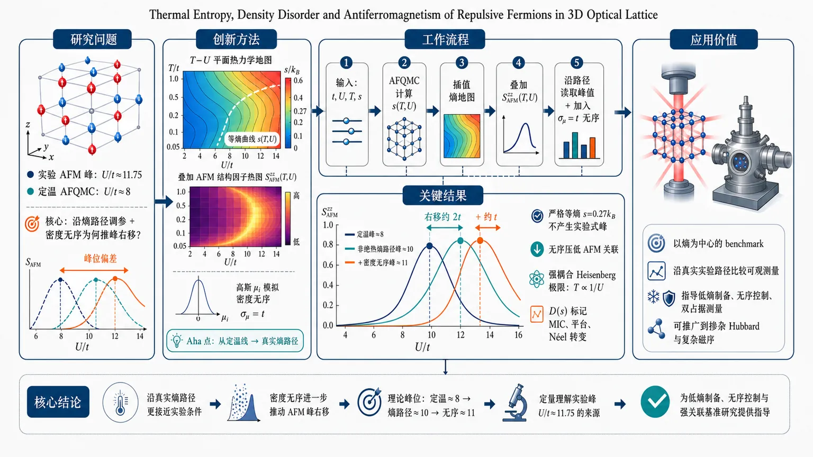
研究问题三维光晶格半填充排斥 Hubbard 模型中，实验观测到反铁磁结构因子峰值出现在 U/t≈11.75，而传统定温 AFQMC 理论预测在 U/t≈8；核心问题是：实验沿熵而非温度调参、且存在密度无序时，反铁磁峰为何被推向更强相互作用。创新方法用数值精确 AFQMC 构建完整 T-U 平面熵相图 s(T,U)，把实验路径从“水平定温线”改画成“弯曲熵路径”；再叠加 S_AFM(T,U) 反铁磁结构因子图，并用高斯站点化学势 μᵢ 模拟密度无序。Aha 点是：峰值右移不是理论错误，而是非绝热熵增加路径穿过并重新离开 AFM 相区，加上局域密度无序削弱中等 U 的 AFM 关联。工作流程输入半填充三维排斥 Hubbard 模型参数 t、U、T 与实验相关熵信息；AFQMC 先计算固定温度下熵随 U 的曲线，插值得到彩色熵地图 s(T,U)；再计算并插值 S_AFMzz(T,U) 图；在图上绘制固定熵路径与实验式非绝热增熵路径，沿路径读取反铁磁结构因子；最后加入 σ_μ=t 的高斯密度无序，比较有无无序时 AFM 峰位和双占据 D(s) 行为。关键结果严格等熵 s=0.27k_B 路径不会产生实验式峰值；实验式随 U 增加的非绝热熵路径使 S_AFMzz 峰从定温理论的 U/t≈8 右移到约 U/t≈10，位移约 2t；密度无序进一步带来约 t 的右移，并显著压低 AFM 关联。熵相图显示等熵温度先降、再升、再降，强耦合区满足 Heisenberg 极限 T∝1/U；双占据 D(s) 的极值、平台和低熵线性段可标记 MIC、Heisenberg 物理与 Néel 转变。应用价值为冷原子 Hubbard 量子模拟提供以熵为中心的定量 benchmark：理论不再只比较固定温度曲线，而是沿真实实验熵路径读取可观测量，并纳入密度无序。该框架可解释三维光晶格反铁磁峰位偏差，指导优化低熵制备、无序控制和双占据测量，也可推广到掺杂 Hubbard、金属–绝缘体 crossover、复杂磁序和未来强关联量子模拟实验。第一部分：核心概览 (Overview)
该研究以半填充三维排斥 Hubbard 模型为对象，用数值精确的辅助场量子蒙特卡洛（AFQMC）建立了温度–相互作用平面上的完整熵相图，把冷原子实验中直接控制的熵纳入理论基准。核心贡献在于解释 2024 年三维光晶格实验中反铁磁结构因子峰值出现在 (U/tsimeq 11.75) 而非理论定温预测 (U/tsimeq 8) 的偏差：实验路径中的熵随相互作用增加与光晶格中的密度无序共同将反铁磁峰推向更强相互作用。该工作把精密多体计算与真实实验路径、无序效应和可测双占据量联系起来，为 Hubbard 量子模拟的定量 benchmark 提供了新范式。
---
第二部分：结构化快速回顾
《Thermal Entropy, Density Disorder and Antiferromagnetism of Repulsive Fermions in 3D Optical Lattice》（None，）
背景
三维费米 Hubbard 模型的反铁磁 Néel 相变已在约 800,000 sites 的近均匀光晶格中实现，但实验中 AFM structure factor 与临界熵峰值位于 (U/tsimeq 11.75)，显著高于无偏 AFQMC 定温理论预测的 (U/tsimeq 8)。实验以熵而非温度为核心变量，并存在由 box trap 制备引入的密度无序。
方法
采用数值精确 AFQMC，研究半填充 3D repulsive Hubbard model。哈密顿量含最近邻跃迁 (t)、排斥相互作用 (U>0)、半填充 (μ=0)。先计算固定温度下熵随 (U) 的数据，再插值得到完整 (boldsymbols(T,U)) 熵图；进一步结合 (Sₘ̊ AFMzz(T,U)) 图，沿实验相似的非绝热熵路径读取反铁磁结构因子。密度无序通过站点依赖化学势 (μᵢ) 的高斯分布实现，标准差取 (σ_μ=t)。
结果
完整熵相图显示等熵曲线 (Tᵢ₍U)) 具有非单调结构：随 (U) 增大先降温、再升温、再降温，对应费米液体、金属–绝缘体 crossover 与强耦合 Heisenberg 极限。沿固定熵 (boldsymbols=0.27k_B) 路径，(Sₘ̊ AFMzz) 不产生实验式峰值；沿熵随 (U) 增加的非绝热路径，峰值移动到 (U/tsimeq 10)，相对定温结果产生约 (Δ Uₘ̊ ₚₑₐₖsim 2t) 位移。密度无序进一步造成约 (Δ Uₘ̊ ₚₑₐₖsim t) 的峰值右移。
讨论
实验与理论偏差不是简单的“加热”效应，而是熵路径在 (T-U) 平面上穿越 AFM 相边界并重新进入 PM 相导致。密度无序通过局域掺杂、削弱 AFM 相关长度、有效降低相互作用强度，使 AFM 有序区整体推向更大 (U)。双占据量 (D(boldsymbols)) 在不同 (U/t=6,8,10) 下展现可用于识别 MIC、Heisenberg 物理和 Néel 转变的普适特征。
局限
密度无序 AFQMC 因费米符号问题限制在 (L=6) 系统；实验真实熵路径未知，只能用参数化路径模拟；无序强度 (σ_μ=t) 依据实验密度分布匹配选择，尚非唯一确定；有限尺寸和真实实验系统复杂性仍可能影响定量对比。
结论
以熵为中心变量并纳入密度无序后，三维 Hubbard 光晶格实验中 AFM 峰值相互作用偏大的现象得到定量解释。该框架将真实实验路径、热力学熵、无序和 AFM 关联统一起来，为未来 Hubbard 模型中金属–绝缘体 crossover、掺杂效应和反铁磁临界行为的实验–理论 benchmark 提供可推广路线。
---
第三部分：逐章节冷凝解析 (Section-by-Section Condensing)
Title
Thermal entropy, density disorder and antiferromagnetism are the central triad
题名直接界定三项核心物理量：thermal entropy、density disorder 与 antiferromagnetism，体系为三维光晶格中的排斥费米子。标题 *"Thermal Entropy, Density Disorder and Antiferromagnetism of Repulsive Fermions in 3D Optical Lattice"* 表明问题不是单纯计算 Néel 温度，而是考察熵路径、无序和 AFM 之间的耦合。
---
Abstract
Experimental discrepancy is quantitatively targeted
2024 年三维费米 Hubbard 光晶格实验已经实现 AFM 相变，但关键异常在于 AFM structure factor 与临界熵最大值出现在 (U/tsimeq 11.75)，而理论定温 AFQMC 预期为 (U/tsimeq 8)。摘要明确给出矛盾：*"the AFM structure factor (and also the critical entropy) reaches the maximum at an interaction strength (U/tsimeq 11.75), which is significantly larger than the theoretical prediction of (U/tsimeq 8)"*。
Numerically exact AFQMC provides the computational foundation
核心方法是数值精确辅助场量子蒙特卡洛，对象为半填充三维 Hubbard 模型。摘要中的方法定位为 *"using numerically exact auxiliary-field quantum Monte Carlo simulations"*，并强调研究对象是 *"the half-filled 3D Hubbard model"*。
Entropy phase diagram enables arbitrary experimental path tracking
关键技术突破是建立精确的熵相图，从而可在 (T-U) 平面上模拟任意熵路径。摘要指出 *"We have achieved an accurate entropy phase diagram, enabling us to simulate arbitrary entropy path on the temperature-interaction plane and track experimental parameters effectively"*。这使理论对比从传统的固定 (T) 或固定 (U) 计算转向实验真实控制变量。
Entropy increase and density disorder explain the shifted AFM peak
实验峰值右移由两项机制共同解释：相互作用增大过程中实验熵增加，以及实验装置中的光晶格密度无序。摘要给出结论：*"above discrepancy can be quantitatively explained by the entropy increase associated with increasing interaction strength in experiment, and together by the lattice density disorder present in the experimental setup"*。
Double occupancy is proposed as a universal entropy-based probe
除 AFM 结构因子外，double occupancy 被作为未来实验探针。摘要称 *"We further investigate the entropy dependence of double occupancy and predict universal behaviors that could serve as valuable probes in future optical lattice experiments"*，表明 (D(boldsymbols)) 可用于识别 MIC、Heisenberg 极限和 Néel 临界行为。
---
Main text
Optical lattice Hubbard simulation has entered a quantitative many-body regime
超冷原子光晶格已成为研究强关联体系的核心平台，可调控真实材料难以实现的参数范围，尤其是相互作用强度。开篇指出 *"Quantum simulation combining ultracold atoms with optical lattice potentials has become an essential route to study the intriguing phenomena of strongly correlated systems"*，并强调 Hubbard 模型实验具备 *"tunable interaction strengths"* 等优势。
The 3D Néel transition experiment is the immediate motivation
最新实验使用超冷费米 (⁶Li) 原子，在大规模近均匀光晶格中观测三维 Hubbard 模型的 AFM 相变，系统规模约 800,000 sites。实验背景被概括为 *"ultracold fermionic (⁶Li) atoms in a large-scale, nearly uniform optical lattice ((sim 800,000) sites)"*。PM 到 Néel AFM 的转变通过 AFM 结构因子的临界标度识别，且临界指数属于 Heisenberg 普适类：*"The transition from the paramagnetic (PM) to the Néel AFM ordered phase was identified via the critical scaling of the measured AFM structure factor, with the critical exponent from the Heisenberg universality class"*。
Entropy-controlled experimental paths complicate direct theory comparison
实验在 (T-U) 平面上的路径并非规则定温路径，核心变量是熵而非温度。关键问题表述为 *"the experimental measurements followed irregular paths on the temperature-interaction ((T)-(U)) plane, with entropy as the key variable rather than temperature"*。这使以往按 (T) 或 (U) 展示的数值结果难以直接比较：*"This complicates direct comparisons with previous many-body numerical calculations"*。
The central discrepancy is (U/tsimeq 11.75) versus (U/tsimeq 8)
半填充条件下，实验中 AFM 结构因子与临界熵最大值在 (U/tsimeq 11.75)，而无偏 AFQMC 定温计算预言 (U/tsimeq 8)。原始表述为 *"the maximum of the AFM structure factor and the critical entropy appears around (U/tsimeq 11.75) in the experiment, in contrast to (U/tsimeq 8) predicted by fixed-temperature calculations using unbiased auxiliary-field quantum Monte Carlo"*。这正是全文需要解决的定量矛盾。
Density disorder is a second realistic experimental issue
实验 box trap 势的制备引入光晶格密度无序，其对 AFM 自旋关联的影响此前未充分探索。相关表述为 *"Another quantifiable issue in the experiment is the lattice density disorder inherited from the creation of the box trap potential"*，且 *"Its impact on various properties of the model, especially the AFM spin correlation, remains to be explored"*。
The Hamiltonian is the half-filled repulsive 3D Hubbard model
模型哈密顿量为
[
hatH=sumₖσǎrepsilonₖcₖσ⁺cₖσ
+Usumᵢłeft[hatnᵢₚ̆ₐᵣᵣₒwhatnᵢdₒwₙₐᵣᵣₒw
-(hatnᵢₚ̆ₐᵣᵣₒw+hatnᵢdₒwₙₐᵣᵣₒw)/2i̊ght]
+μsumᵢσ(hatnᵢₚ̆ₐᵣᵣₒw+hatnᵢdₒwₙₐᵣᵣₒw) .
]
动能色散为 (ǎrepsilonₖ=-2tsumα₌ₓ,y,zo̧s k_α)，晶格尺寸 (Nₛ₌L³)，设 (t) 为能量单位，研究 (U>0)、半填充 (μ=0)。原文给出 *"We set (t) as energy unit, and focus on the model with repulsive interaction (U>0) and at half-filling ((μ=0))"*。
Entropy map is constructed from fixed-temperature AFQMC data and interpolation
数值流程先在一系列固定温度下计算 (boldsymbols) 随 (U) 的变化，再插值得到完整 (T-U) 平面熵图。原文说明 *"we first compute (boldsymbols) versus (U) for an ensemble of fixed temperatures (with sufficiently small interval), and then we perform an interpolation for the numerical data to achieve the full map of (boldsymbols) on the (T-U) plane"*。相较既有等熵研究，此处强调无受控近似的 AFQMC 更可靠：*"Our results are surely more compact and reliable than the previously reported isentropic properties for half-filled 3D Hubbard model, which applied numerical methods with uncontrolled approximations"*。
AFM phase has globally low entropy, while PM phase encodes MIC and Heisenberg physics
熵图显示，Néel 线以下的 AFM 相因长程序而具有整体较低熵；PM 相中熵结构更丰富，与金属–绝缘体 crossover 和有效 Heisenberg 物理相关。原文写道 *"the AFM phase (below the (T_N) line as Néel transition) has the globally small entropy due to the long-range order"*，并指出 *"(boldsymbols) in PM phase exhibits significantly more abundant structures which is closely related to the MIC and effective Heisenberg physics"*。
Isentropic curves are non-monotonic because entropy and temperature slopes have opposite signs
等熵曲线 (Tᵢ₍U)) 满足 (boldsymbols(Tᵢ₍U),U)=boldsymbolsᵢ)，其随 (U) 呈现先降、再升、再降的非单调性。原文概括为 *"With enhancing (U), The isentropic temperature (Tᵢ₍U)) first decreases, then increases in the middle, and finally decays again"*。热力学关系
[
fracpartial boldsymbolspartial UBig|T₌T_ᵢ
=
-fracc(Tᵢ₎TᵢfracdTᵢ₍U)dU
]
说明固定温度熵曲线与等熵温度曲线对 (U) 的斜率符号相反。原文强调 *"This equality clearly demonstrates that, (Tᵢ₍U)) and (boldsymbols(T,U)) have opposite slope signs with respect to (U)"*。
The two characteristic entropy extrema (Uₘ̊ S₁) and (Uₘ̊ S₂) organize the phase diagram
固定温度下，(boldsymbols(T,U)) 在费米液体区先增大，在 (Uₘ̊ S₁) 达局域最大；进入 MIC 区后下降，在 (Uₘ̊ S₂) 达局域最小；强耦合后升向 (łn 2)。原文表述为 *"(boldsymbols(T,U)) initially increases in Fermi liquid regime, reaching a local maximum at (Uₘ̊ S₁), then decreases as the system enters the MIC regime, forming a local minimum at (Uₘ̊ S₂), and finally increases to (łn(2))"*。因此等熵曲线极值与 (Uₘ̊ S₁)、(Uₘ̊ S₂) 对齐。
Interaction-induced adiabatic cooling exists in both weak and strong interaction regimes
等熵曲线显示，随 (U) 增大温度下降的相互作用诱导绝热冷却不仅出现在弱耦合 (U<Uₘ̊ S₁)，也出现在强耦合 (U>Uₘ̊ S₂)。原文强调 *"the interaction-induced adiabatic cooling exists in both the (U<Uₘ̊ S₁) and (U>Uₘ̊ S₂) regimes"*，并指出此前研究只揭示弱耦合情形：*"this effect was only revealed for the weakly interacting regime"*。
Strong-coupling isentropes approach the AFM Heisenberg model
在 (U>Uₘ̊ S₂) 且 (boldsymbolsᵢ<łn2) 时，等熵曲线满足 (Tᵢ₍U)propto 1/U)，因为强耦合 Hubbard 模型映射到耦合 (J=4t²/U) 的 AFM Heisenberg 模型。原文写道 *"the isentropic curves with (boldsymbolsᵢ<łn 2) should exhibit the asymptotic behavior of (Tᵢ₍U)propto 1/U) towards (U→infty)"*。Néel 线最终并入临界熵 (boldsymbolsᵢ₌₀.341k_B) 的等熵线：*"the (T_N) line should finally merge to the isentropic curve with (boldsymbolsᵢ₌₀.341k_B) as the critical entropy of the 3D AFM Heisenberg model"*。
AFM structure factor is evaluated along entropy paths rather than fixed temperature paths
反铁磁结构因子定义为
[
Sₘ̊ AFMzz=Nₛ⁻¹sumᵢⱼ(-1)ⁱ⁺jłangle hatsᵢ^zhatsⱼ^zångle,
quad
hatsᵢ^z=(hatnᵢₚ̆ₐᵣᵣₒw-hatnᵢdₒwₙₐᵣᵣₒw)/2.
]
原文提醒与实验定义有 4 倍因子差异：*"Note the factor of 4 difference in the definition compared to that used in Ref. [25]"*。实验沿未知路径测量 (Sₘ̊ AFMzz) 随 (U) 变化，峰值在 (Uₘ̊ ₚₑₐₖsimeq 11.75t)：*"observed a peak at (Uₘ̊ ₚₑₐₖsimeq 11.75t)"*。
Fixed-temperature AFQMC cannot explain the experimental peak position
既有定温 AFQMC 在最高 Néel 温度附近 (T_N=0.334t) 得到 (Uₘ̊ ₚₑₐₖsimeq 8t)，且在 (0.25łeq T/tłeq 0.40) 中峰位只轻微移到 (<8.6t)。原文写道 *"previous AFQMC results from fixed-(T) calculations showed that (Uₘ̊ ₚₑₐₖsimeq 8t) around the highest Néel temperature (T_N=0.334t) and it only shifts slightly to a larger value ((<8.6t)) within the temperature range (0.25łeq T/tłeq 0.40)"*。
The (Sₘ̊ AFMzz) map combines finite-size and thermodynamic-limit data
(Sₘ̊ AFMzz(T,U)) 图由 AFQMC 不同温度数据插值得到，其中 (T/tłeq0.35) 使用 (L=12) 数据，(T/t≥0.40) 使用热力学极限收敛结果。原文细节为 *"which consists of (L=12) data for (T/tłeq 0.35) and converged results (to thermodynamic limit) for (T/t≥ 0.40)"*。这使沿任意熵路径读取结构因子成为可能：*"we can design specific entropy paths resembling the experiment, and directly read out the corresponding results"*。
A strictly isentropic path at (boldsymbols=0.27k_B) does not produce the experimental peak
实验给出的 (U/t=11.75) 临界熵约为 (boldsymbols=0.27k_B)。沿该固定熵路径，(Sₘ̊ AFMzz) 在进入 Néel 相后单调增长并趋向 Heisenberg 极限，不形成峰值。原文描述为 *"for (boldsymbols(Tᵢ₍U),U)equiv 0.27k_B) as the critical entropy for (U/t=11.75) ... (Sₘ̊ AFMzz) ... does not even develop a peak versus (U)"*。原因是等熵曲线进入 AFM 相后保持在其中：*"the isentropic curve stays inside the AFM phase once entering it"*。这排除了实验测量的绝热解释：*"confirms the non-adiabatic nature of measurements with increasing (U)"*。
Parameterized non-adiabatic entropy paths reproduce experimental features
非绝热路径采用
[
boldsymbols/k_B=łn(2)-Ałeft[1-fracU/B-1sqrt(U/B-1)²⁺C²i̊ght].
]
该形式保证 (U/t=infty) 时 (boldsymbols/k_B=łn2)，并通过 (A,B,C) 调控初始熵与最快熵增长位置。原文说明 *"(boldsymbols/k_B=łn 2) is guaranteed as the entropy at (U/t=infty)"*，且 *"the initial entropy (boldsymbols(U=0)) can be tuned by ((A,B,C)) parameters with (U=B) as the fastest increasing location"*。
Three representative entropy paths are chosen to mimic the experiment
采用三组路径：一组 (B=15t)、(boldsymbols(U=0)=0.25k_B)；两组 (boldsymbols(U=0)=0.27k_B)，分别取 (B=14t) 与 (B=15t)。原文给出 *"one as (B=15t) and (boldsymbols(U=0)=0.25k_B), and the other two as (B=14t) and (B=15t) with the same (boldsymbols(U=0)=0.27k_B)"*。这些路径捕捉实验特征：小 (U) 近绝热，(U/t>10) 强非绝热，(U/tsimeq20) 熵趋近 (łn2)。原文为 *"nearly adiabatic evolution at small (U), strongly non-adiabatic behavior for (U/t>10), and saturation toward (łn 2) at (U/tsimeq20)"*。
Entropy increase shifts the AFM peak toward larger interaction by about (2t)
沿这些非绝热熵路径，(Sₘ̊ AFMzz) 峰值出现在 (U/tsimeq 10) 附近，比固定温度的 (Uₘ̊ ₚₑₐₖ/tsimeq8) 更接近实验。原文指出 *"peaks in (Sₘ̊ AFMzz) clearly appear around (U/tsimeq10)"*，并称其 *"indeed closer to the experimental observation comparing to fixed-(T) numerical result of (Uₘ̊ ₚₑₐₖ/tsimeq8)"*。对不同函数形式的熵路径测试仍保留约 (Δ Uₘ̊ ₚₑₐₖsim2t) 的位移：*"the peak properties of (Sₘ̊ AFMzz) and the (Δ Uₘ̊ ₚₑₐₖsim2t) shifting ... still exists"*。
The peak forms because the entropy path exits the AFM phase at large (U)
峰值产生机制不是 (U) 本身增强 AFM 后再削弱，而是非绝热熵增加使系统在 (U/t>12) 附近重新进入 PM 相，从而压低 (Sₘ̊ AFMzz)。原文写道 *"The formation of the peak can be attributed to the suppression of (Sₘ̊ AFMzz) due to the re-entrance into PM phase with (U/t>12)"*。由于 AFM 相内结构因子在热力学极限发散，而 PM 相中有限，实验大体系峰会更尖锐：*"the (Sₘ̊ AFMzz) peak should become sharper in a large-scale system"*。
Entropy increase is not equivalent to trivial heating
虽然熵随 (U) 增加，但路径上的实际温度可在 (U/tłeq4) 与 (8łeq U/tłeq12) 区域下降，因此不同于简单升温。原文强调 *"the entropy increase encoded in above entropy paths is different from the trivial heating effect"*，并给出依据：*"the actual temperatures for the paths can decrease versus (U) in the regions of (U/tłeq4) and (8łeq U/tłeq12)"*。
Density disorder is modeled by Gaussian local chemical potentials
密度无序通过在哈密顿量中加入 (sumᵢμᵢ₍hatnᵢₚ̆ₐᵣᵣₒw+hatnᵢdₒwₙₐᵣᵣₒw))，其中 (μᵢ) 服从均值 0、标准差 (σ_μ=t) 的正态分布。原文为 *"we implement a Gaussian disorder by adding a site-dependent chemical potential term"*，且 *"(barμ=0) and (σ_μ=t) as the average and standard deviation"*。该设置保持整体半填充并生成正态型局域密度分布：*"Such calculations guarantee the overall half-filling condition, and also render the normal distribution feature for the lattice density results"*。
Gaussian disorder is argued to be more realistic than prior uniform disorder
相较已有研究使用的均匀无序，高斯密度无序更符合实验。原文评价为 *"it should be more reasonable and fits better to the experiment, than the uniform disorder adopted in a previous study"*。选择 (σ_μ=t) 是为了匹配实验相近温度下的局域密度分布：*"The value of (σ_μ=t) is chosen such that the resulting local density distribution from our simulations resembles that observed in experiments at comparable temperatures"*。
Disorder averaging converges with about ten realizations but is limited to (L=6)
每组参数约 10 个无序样本足以收敛 AFM 自旋关联与 (Sₘ̊ AFMzz) 的无序平均。原文写道 *"for every set of parameters, we find that (sim10) disorder realizations are sufficient to reach the converged disorder average results"*。但由于费米符号问题，无序模拟受限于 (L=6)：*"The simulation with above disorder is unfortunately limited to (L=6) system due to fermion sign problem"*。
Density disorder shifts (Sₘ̊ AFMzz) peak by about (t)
在 (T/t=0.30) 与 (T/t=0.36)，比较有无无序的 (Sₘ̊ AFMzz) 随 (U/t) 曲线，无序使峰位右移约 (Δ Uₘ̊ ₚₑₐₖsim t)，且低温下更明显。原文为 *"the (Sₘ̊ AFMzz) peak possesses a (Δ Uₘ̊ ₚₑₐₖsim t) shifting, which tends to be larger at lower temperature"*。
Disorder suppresses AFM correlations more strongly at weak and intermediate (U)
无序通常压低 AFM 自旋关联长度，从而降低 (Sₘ̊ AFMzz)，该效应在小到中等 (U) 最明显；强耦合 Mott 绝缘体在 (μᵢ) 小于能隙时几乎免疫。原文指出 *"the disorder typically suppresses the correlation length of AFM spin correlation"*，并说明 *"With strong interaction, the system evolves into a Mott insulator state which is almost immune to the disorder effect (given (μᵢ) is smaller than the gap)"*。
Density disorder effectively weakens the interaction
有无序时动能更低、双占据更多，说明系统更具巡游性，相当于有效相互作用减弱。原文写道 *"the lower kinetic energy and more double occupancy with disorder ... reveal that the disordered system is more itinerant than the uniform system"*，并得出 *"density disorder effectively weakens the interaction of the system"*。
Disorder shifts the AFM ordered phase toward larger (U)
由于密度无序在弱到中等相互作用区压低 Néel 温度，整个 AFM 有序区被推向更大 (U)。原文结论为 *"density disorder can suppress the Néel transition temperatures in the weak to intermediate interaction regime, thereby shifting the entire AFM ordered phase toward larger values of (U)"*。这可解释熵路径计算与实验进入 AFM 相临界 (U) 之间的残余差异：*"This effect may account for the residual deviation between our results ... and the experimental observation regarding the critical (U)"*。
Experimental (Sₘ̊ AFMzz) magnitude is strongly suppressed relative to uniform theory
均匀系统在 (U/t=10) 的 Néel 转变处有限尺寸标度给出 (Sₘ̊ AFMzzLη⁻²simeq0.2)，(η=0.0375)。若用实验同等尺寸估算，均匀系统应有 (Sₘ̊ AFMzzsimeq1454)，而实验在 (U/t=11.75) AFM 相内最大仅约 30。原文给出 *"This predicts (Sₘ̊ AFMzzsimeq1454) for the uniform system with the same size as that in experiment, comparing to the maximal (Sₘ̊ AFMzzsimeq30) measured for (U/t=11.75)"*。新近实验改善后最大值提升到约 150：*"the maximum of (Sₘ̊ AFMzz) has been significantly enhanced up to (sim150)"*。
Disorder is quantitatively analogous to local doping
无序可被理解为在均匀系统中造成局域掺杂，而 (Sₘ̊ AFMzz) 对偏离半填充极其敏感。原文写道 *"This significant suppression ... can be understood from the quantitative equivalence between adding the disorder and locally doping the uniform system"*，并指出 *"(Sₘ̊ AFMzz) rapidly decays away from half filling within (L=6)"*。
Double occupancy versus entropy is essential for experimental benchmarking
物理量应作为熵函数而非温度函数来比较实验。原文明确指出 *"Computing physical observables as a function of the entropy (boldsymbols) instead of temperature is crucial for the benchmark with optical lattice experiment"*。双占据定义为
[
D=Nₛ⁻¹sumᵢłangle hatnᵢₚ̆ₐᵣᵣₒwhatnᵢdₒwₙₐᵣᵣₒwångle .
]
All (D(boldsymbols)) curves start from the infinite-temperature point
高温极限下，所有 (D(boldsymbols)) 曲线从 ((D=1/4,boldsymbols/k_B=2łn2)) 出发。原文写道 *"All the curves (D(boldsymbols)) should start from the special point ((D=1/4,boldsymbols/k_B=2łn2)) as the high-(T) limit"*。
Weak, intermediate and strong interactions show distinct (D(boldsymbols)) behavior
选取 (U/t=6,8,10) 分别代表弱、中、强相互作用。原文说明 *"for (U/t=6,8,10), as representatives of weak, intermediate and strong interactions"*。冷却时 (D(boldsymbols)) 显示不同形态，同时包含可识别的普适特征：*"we can observe quite different behaviors as well as some universal signatures"*。
Local extrema in (D(boldsymbols)) are tied to (Uₘ̊ S₁) and (Uₘ̊ S₂)
通过
[
(partial D/partial boldsymbols)_U=(partial D/partial T)_U[(partialboldsymbols/partial T)_U]⁻¹
]
和 Maxwell 关系
[
-(partial D/partial T)_U=(partialboldsymbols/partial U)_T
]
可知 (D(boldsymbols)) 极值与 ((partialboldsymbols/partial U)_T=0) 重合，即对应 (Uₘ̊ S₁)、(Uₘ̊ S₂)。原文称 *"the local maximum/minimum in (D(boldsymbols)) is actually connected to (Uₘ̊ S₁) and (Uₘ̊ S₂)"*。
For (U/t=6), double occupancy extrema mark bad metal–Fermi liquid crossovers
(U/t=6) 时，(Uₘ̊ S₁) 曲线与垂直线交叉两次，对应 (D(boldsymbols)) 在 (boldsymbols/k_Bsimeq0.72) 的局域最小和 (boldsymbols/k_Bsimeq0.40) 的局域最大。原文为 *"the local minimum (at (boldsymbols/k_Bsimeq0.72)) and maximum (at (boldsymbols/k_Bsimeq0.40)) of (D(boldsymbols)) for (U/t=6)"*。物理上代表坏金属与费米液体之间的 crossover：*"these local extrema signify the crossovers from bad metal state to Fermi liquid regime and the reverse"*。
For (U/t=10), the double occupancy minimum separates charge and spin-exchange regimes
强相互作用 (U/t=10) 时，(D(boldsymbols)) 在 (boldsymbolsₘ̊ ₘᵢₙ/k_Bsimeq0.61) 出现局域最小，对应 (Uₘ̊ S₂)，并将在 (U/t→infty) 逼近 (łn2)。原文为 *"The local minimum at (boldsymbolsₘ̊ ₘᵢₙ/k_Bsimeq0.61) in (D(boldsymbols)) for (U/t=10) corresponds to (Uₘ̊ S₂)"*，且 *"should gradually approach the universal number (łn2) as (U/t→infty)"*。该极小值区分电荷物理主导区与自旋交换物理主导区：*"separates two distinct regions dominated by the charge physics ... and the spin-exchange physics"*。
For (U/t=8), double occupancy has a broad plateau
中等相互作用 (U/t=8) 下，(D(boldsymbols)) 在 (0.25<boldsymbols/k_B<0.65) 范围内出现平台。原文写道 *"For (U/t=8), we observe a plateau within (0.25<boldsymbols/k_B<0.65) in (D(boldsymbols))"*。这对应中等耦合区 MIC 与磁性关联竞争造成的弱熵依赖。
Low-entropy linear (D(boldsymbols)) behavior contains the Néel transitions
低熵区，特别是 (U/t=6) 与 (U/t=10)，(D(boldsymbols)) 呈线性趋势，并包含 Néel 转变。原文称 *"the linear behavior in a low-entropy region containing Néel transitions, especially for (U/t=6) and (10)"*。计算得到三种相互作用的临界熵分别为
[
boldsymbols_N/k_B=0.33(1),quad 0.354(7),quad 0.33(1),
]
其中 (U/t=10) 已接近 3D AFM Heisenberg 模型。原文给出 *"the critical entropy (boldsymbols_N/k_B=0.33(1), 0.354(7) and 0.33(1)) for the three interactions"*。
Double occupancy can probe MIC, Heisenberg physics and Néel transition
(D(boldsymbols)) 的极值、平台和低熵线性行为可作为实验中仅通过双占据量识别 PM 相 MIC、有效 Heisenberg 物理与 Néel 转变的工具。原文总结为 *"These properties in (D(boldsymbols)) can serve as useful probes in optical lattice experiments to detect the MIC in PM phase, effective Heisenberg physics and the Néel transition simply by the double occupancy"*。
Entropy-based AFM critical scaling matches the experiment
还检查了 (Sₘ̊ AFMzz) 随熵的行为，并确认类似实验观测的临界标度
[
(Sₘ̊ AFMzz-S₀₎propto |boldsymbols/boldsymbols_N-1|⁻γ.
]
原文为 *"confirmed similar critical scaling behavior ((Sₘ̊ AFMzz-S₀₎propto|boldsymbols/boldsymbolsₘ̊ N-1|⁻γ) as observed in experiment"*。
The final synthesis resolves the peak-antiferromagnetism discrepancy
总结性结论是，半填充三维 Hubbard 模型中热熵、密度无序和 AFM 性质的相互作用可解释实验与理论关于 AFM 峰值位置的差异。原文写道 *"we have systematically studied the interplay between the thermal entropy, density disorder and AFM properties in half-filled 3D Hubbard model"*，并指出 *"we have resolved the discrepancy between the experiment and theory on the peak antiferromagnetism"*。
Both entropy increase and density disorder push the AFM peak to stronger interactions
最终机制陈述为：实验中随 (U) 增加发生的熵增加，以及密度无序，均导致 AFM 结构因子峰位向更强相互作用移动。原文为 *"both the entropy increase in experimental measurements during increasing interaction and density disorder induce the peak location shifting of AFM structure factor towards stronger interactions"*。
Entropy-centered benchmarking plus realistic disorder forms a broader paradigm
该框架把实验与前沿量子多体计算连接起来，并将熵置于中心位置，同时纳入真实密度无序。原文称 *"Our work bridges the gap between recent experiment and cutting-edge quantum many-body computations, and establishes a paradigm for benchmarking between them, by taking the entropy as a central role and including the density disorder as a realistic issue"*。该范式可推广到 Hubbard 模型其他奇异性质的实验–理论 benchmark：*"applicable to the benchmark studies on many other exotic properties of various versions of the Hubbard model"*。
---
Acknowledgements
Experimental detail discussions and multiple Chinese funding sources supported the work
致谢对象包括 Xing-Can Yao，主题为实验细节讨论：*"We thank Xing-Can Yao for valuable discussions on the experimental details"*。经费来自国家自然科学基金、量子科技创新计划、福建省自然科学基金和陕西高校青年创新团队，具体项目包括 No. 12247103, No. 12204377, No. 12275263, No. 2021ZD0301900, No. 2023J02032。原文列出 *"supported by the National Natural Science Foundation of China ... the Innovation Program for Quantum Science and Technology ... the Natural Science Foundation of Fujian province of China ... and the Youth Innovation Team of Shaanxi Universities"*。
---
References
The reference base spans optical lattice reviews, Hubbard theory, experiments and numerical benchmarks
参考文献覆盖超冷原子光晶格综述、Hubbard 模型经典起源、二维与三维 Hubbard 数值 benchmark、冷原子 AFM 实验、三维 Hubbard Néel 温度与热力学研究。代表性基础包括 Hubbard、Kanamori、Gutzwiller 1963 年工作，以及 Arovas 等和 Qin 等 2022 年综述。文献列表中可见 *"The hubbard model"* 与 *"The hubbard model: A computational perspective"*。
The immediate experimental anchor is Shao et al. Nature 2024
核心实验参考为 Shao 等 2024 年 Nature 论文，题为 *"Antiferromagnetic phase transition in a 3d fermionic hubbard model"*，对应三维光晶格中 AFM 相变的首次直接观测。该实验提供 (U/tsimeq11.75)、(boldsymbols_Nsimeq0.27k_B)、大规模近均匀晶格和密度无序问题的实际背景。
Prior theoretical anchors include 3D Hubbard thermodynamics and AFQMC phase diagrams
关键理论背景包括三维 Hubbard 模型半填充相图、Néel 温度、MIC 与 AFM 自旋关联计算。特别是 Song 等 2025 年工作 *"Extended metal-insulator crossover with strong antiferromagnetic spin correlation in half-filled 3d hubbard model"* 和 *"Magnetic, thermodynamic, and dynamical properties of the three-dimensional fermionic hubbard model: A comprehensive monte carlo study"* 为本研究的 AFQMC 数据、(Uₘ̊ S₁)、(Uₘ̊ S₂)、MIC 解释提供基础。
---
第四部分：深度理解与语言支持 (Understanding & Nuance)
1. 术语解析
Isentropic curve
指等熵曲线，即在 (T-U) 平面上满足 (boldsymbols(Tᵢ₍U),U)=boldsymbolsᵢ) 的路径。这里不能简单理解为“温度不变”或“没有热量变化”的普通绝热过程；它强调实验中熵近似保持不变时，随 (U) 调节温度会如何响应。关键微妙点是：等熵曲线可能随 (U) 升高而降温，也可能升温，取决于 ((partial boldsymbols/partial U)_T) 的符号。
Interaction-induced adiabatic cooling
意为相互作用诱导的绝热冷却。在固定熵下增加 (U)，实际温度 (T) 下降。常见直觉会把“增大相互作用”理解为增加能量尺度、导致更热；但在 Hubbard 模型中，熵在电荷自由度、自旋自由度之间重新分配，可能使温度下降。该研究的重要扩展是指出这种冷却不仅在弱耦合存在，也在强耦合 (U>Uₘ̊ S₂) 存在。
Density disorder
此处不是普通意义上的随机势本身，而是由站点依赖化学势 (μᵢ) 引发的局域密度起伏。整体仍保持半填充，但局域位置可偏离半填充，相当于产生空间上随机的局域掺杂。微妙点在于：AFM 对半填充高度敏感，所以即使全局平均密度正确，局域密度无序仍会显著削弱 AFM 结构因子。
Re-entrance into PM phase
指系统沿某条路径进入 AFM 相后，在继续改变 (U) 时又回到 PM 相。这里不是相图本身简单地“AFM 消失”，而是实验式非绝热熵路径在 (T-U) 平面上穿越相边界：熵升高使路径温度相对 Néel 温度过高，导致 (U/t>12) 附近退出 AFM 有序区。
Critical entropy
指发生 Néel 转变时的熵，而不是临界温度。冷原子实验更容易测量或控制熵，因此 (boldsymbols_N) 可比 (T_N) 更直接用于实验 benchmark。该研究中特别重要的数值包括实验相关的 (boldsymbols_Nsimeq0.27k_B)，以及强耦合 Heisenberg 极限的 (boldsymbols_N=0.341k_B)。
---
2. 疑难查证
为什么定温理论峰值在 (U/tsimeq8)，实验峰值却在 (U/tsimeq11.75)
定温计算相当于在 (T-U) 平面上画一条水平线。沿水平线看，AFM 最强的位置大致靠近最高 Néel 温度所在的中等相互作用区，即 (U/tsimeq8)。实验并不是沿水平线移动，而是在调节 (U) 的同时熵发生变化。若熵随 (U) 增大，路径在相图上会弯曲；在某些区间，虽然 (U) 增强了局域磁矩和超交换趋势，但熵升高会破坏长程 AFM 有序。最终观测到的峰值位置不再只由 (T_N(U)) 决定，而由实验熵路径与 AFM 相边界的交会方式决定。
为什么熵增加不是简单加热
热力学中温度和熵不是同一个量。沿某些路径，熵增加时温度仍可能下降，因为系统可访问的微观态类型发生变化。例如强耦合 Hubbard 模型中，电荷自由度被冻结，自旋自由度保留近似 (łn2) 的熵容量；增加 (U) 会改变熵在电荷和自旋自由度之间的分配。因此该研究中特别指出，非绝热熵路径上 (U/tłeq4) 与 (8łeq U/tłeq12) 区域温度可随 (U) 下降，但 (Sₘ̊ AFMzz) 仍因熵路径结构发生峰值右移。
为什么密度无序会把 AFM 峰推向更大 (U)
半填充 Hubbard 模型的 AFM 最稳定，因为每个站点平均一个粒子，局域磁矩和超交换机制最清晰。密度无序通过随机化学势让一些区域局域偏离半填充，相当于形成局域掺杂。掺杂会破坏 AFM 关联长度，使弱到中等 (U) 区域的 (Sₘ̊ AFMzz) 被更强压低。强 (U) 下进入 Mott 绝缘体后，只要 (μᵢ) 小于 Mott gap，密度起伏被抑制，无序影响变弱。因此无序对小中 (U) 的抑制大于大 (U)，峰值自然向更强相互作用移动。
为什么 (D(boldsymbols)) 能探测 MIC 和 Néel 转变
双占据 (D) 是电荷涨落的直接量度。高温时粒子随机占据，(D=1/4)；强相互作用和低温时双占据被 (U) 抑制。通过 Maxwell 关系，(D) 随温度或熵的极值与熵随 (U) 的极值相连，而这些熵极值正对应费米液体、坏金属、MIC 和 Heisenberg 自旋物理的 crossover。低熵区 (D(boldsymbols)) 的线性段和临界熵位置又与 Néel 转变相邻，因此仅测 (D) 就能间接定位多个重要物理区域。
---
第五部分：创新评估与关联 (Synthesis & Novelty)
1. 创新性判断
从定温 benchmark 转向熵路径 benchmark
过去 2–5 年的三维 Hubbard 理论工作多以 (T)、(U)、掺杂或各向异性为自变量，给出 (T_N(U))、结构因子、热力学量或 MIC 位置。该研究的新意在于把实验真实控制量熵作为中心变量，建立完整 (boldsymbols(T,U)) 图，并允许沿任意熵路径读取 (Sₘ̊ AFMzz)、(D) 等观测量。解决了“理论定温曲线无法直接对比实验非定温路径”的问题。
首次给出 (U/tsimeq11.75) 与 (U/tsimeq8) 偏差的机制性解释
实验 AFM 峰值偏大不是简单实验误差，也不是理论 (T_N) 计算错误，而是由非绝热熵增加路径与密度无序共同导致。熵路径贡献约 (Δ Uₘ̊ ₚₑₐₖsim2t)，无序贡献约 (Δ Uₘ̊ ₚₑₐₖsim t)，二者合起来显著接近实验峰值位置。这解决了最新 Nature 实验后最直接的定量疑问。
把密度无序纳入 AFQMC 现实建模
前人研究过无序冷却或 Hubbard 无序效应，但该研究针对 2024 年三维大规模 box trap 实验中的密度分布问题，用高斯站点化学势 (σ_μ=t) 模拟实验式密度无序，并指出其等价于局域掺杂、会强烈压低 AFM 结构因子。尤其是解释实验 (Sₘ̊ AFMzzsim30) 或改进后 (sim150) 与均匀系统估算 (sim1454) 的巨大量级差异，具有直接实验解释力。
发现强耦合区也存在相互作用诱导绝热冷却
早期等熵 Hubbard 研究主要强调弱耦合区增加 (U) 可绝热冷却。完整 AFQMC 熵图显示 (U>Uₘ̊ S₂) 强耦合 Heisenberg 区也存在等熵降温，并满足 (Tᵢ₍U)propto1/U) 的强耦合渐近规律。这扩展了 Hubbard 光晶格冷却机制的适用范围。
提出 (D(boldsymbols)) 作为低成本普适实验探针
相比 AFM 结构因子，双占据量更易在冷原子实验中测量。该研究给出 (U/t=6,8,10) 下 (D(boldsymbols)) 的极值、平台、低熵线性段和临界熵数值，显示双占据可用于识别 MIC、Heisenberg crossover 和 Néel 转变。这为未来实验提供了不依赖完整自旋关联测量的诊断方案。
范式层面的贡献
该研究建立了一个可推广的实验–理论 benchmark 程序：
- 用数值精确方法建立 (boldsymbols(T,U)) 或更高维参数空间的熵图；
- 将实验路径转换为熵路径而非温度路径；
- 将真实装置中的无序、密度分布或 trap 效应纳入模拟；
- 沿实验路径直接读取可观测量；
- 用简单观测量如 (D(boldsymbols)) 设计辅助诊断。
该范式可用于掺杂 Hubbard 模型、各向异性三维 Hubbard、二维–三维 crossover、受挫 Hubbard 系统，以及未来寻找 (d)-wave superconductivity 或复杂磁序的冷原子量子模拟。
-
12
📊 含图深析
📄 摘要：针对候选 d 波交变磁体 KV2Se2O，研究动量空间自旋劈裂与实空间磁构型之间的对应。由于相似的自旋劈裂电子结构可来自不同磁有序，工作通过实空间识别区分不同磁构型，澄清该材料中交变磁性信号的磁性起源。
💡 亮点：KV2Se2O 的交变磁性不只看能带劈裂，而是回到实空间磁构型逐一识别。该结果提醒交变磁体判定必须同时约束磁结构与动量空间自旋纹理。
📖 展开分析 + 配图
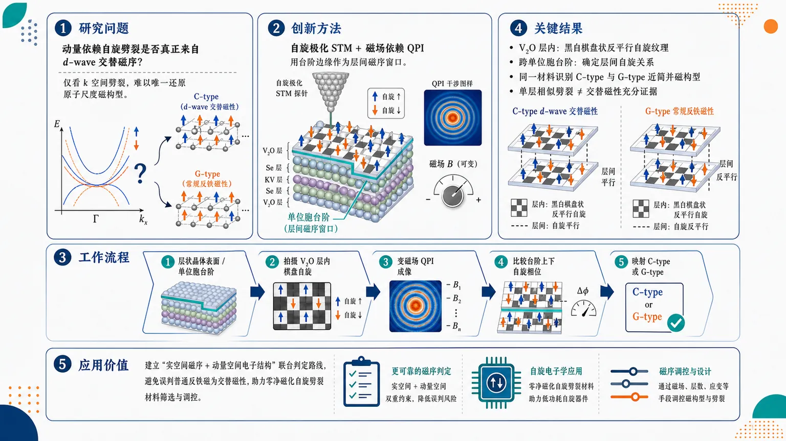
研究问题KV₂Se₂O 虽呈现动量依赖自旋劈裂且净磁化为零，但这种电子劈裂究竟来自 d-wave 交替磁序，还是来自可产生相似能带信号的常规反铁磁序？核心矛盾是：仅看动量空间自旋劈裂无法唯一还原原子尺度真实磁构型。创新方法用自旋极化扫描隧道显微镜直接拍摄原子尺度自旋对比，并结合磁场依赖准粒子干涉成像，把表面 V₂O 层的棋盘状反平行自旋纹理、跨单位胞台阶的层间自旋关系，与动量空间自旋劈裂对应起来；Aha 点是利用台阶边缘作为“层间磁序窗口”，区分表面看起来相似但三维磁序不同的 C-type 与 G-type。工作流程输入 KV₂Se₂O 层状晶体表面与单位胞台阶区域；先用自旋极化 STM 获取 V₂O 层内黑白棋盘式反平行自旋图案；再在外磁场变化下采集 QPI 干涉条纹，确认自旋相关散射；随后比较台阶上下区域的自旋相位，判断层间平行或反平行排列；最后将实空间磁序映射到 C-type d-wave 交替磁性或 G-type 常规反铁磁性。关键结果在 V₂O 层内观察到清晰的棋盘状反平行自旋纹理，并跨单位胞台阶确定层间自旋排列；同一材料中识别出 C-type 与 G-type 两类近简并磁构型。二者在单层层面都能产生相似自旋劈裂，但 C-type 对应 d-wave 交替磁性，G-type 对应常规反铁磁性，说明单独的动量空间劈裂信号并不足以证明交替磁性。应用价值为交替磁材料建立“实空间磁序 + 动量空间电子结构”联合判定路线，可避免把普通反铁磁构型误判为交替磁性；该框架有助于筛选和验证零净磁化但具自旋劈裂的自旋电子学材料，并为调控近简并磁态、磁畴和层间堆垛提供实验依据。第一部分：核心概览
KV₂Se₂O 中动量依赖自旋劈裂的磁性来源长期存在争议。该研究用自旋极化扫描隧道显微镜与磁场依赖准粒子干涉成像，在原子尺度识别 V₂O 层内棋盘状反平行自旋纹理及跨台阶层间自旋排列，并同时发现 C-type 与 G-type 两类近简并磁构型。关键贡献在于把实空间磁序与动量空间自旋劈裂直接对应起来，为判定候选 d-wave altermagnet 的微观磁性起源提供实验证据框架。
---
第二部分：结构化快速回顾
《Real-space identification of distinct magnetic configurations in a candidate d-wave altermagnet》（None，）
背景
交替磁性是一类新兴磁有序态，尽管净磁化为零，仍可产生动量依赖的自旋劈裂电子结构。KV₂Se₂O 被视为候选 d-wave altermagnet，但其自旋劈裂的真实磁性起源仍有争议。
方法
采用自旋极化扫描隧道显微镜结合磁场依赖准粒子干涉成像，在原子尺度解析 KV₂Se₂O 的磁构型，尤其关注 V₂O 层内自旋纹理以及跨单位胞台阶边缘的层间自旋排列。
结果
识别出 V₂O 层内棋盘状反平行自旋纹理，并确定了跨单位胞台阶的层间自旋关系。观察到 C-type 与 G-type 两种磁构型；二者在单层层面都可产生相似自旋劈裂电子结构，但分别对应 d-wave 交替磁性与常规反铁磁性。
讨论
相似的动量空间自旋劈裂可由不同实空间磁序产生，因此仅凭能带自旋劈裂不足以唯一判定交替磁性。KV₂Se₂O 中存在近简并磁态，形成复杂磁性景观。
局限
可核验文本未给出样本数量、温度、磁场强度范围、STM 参数、统计显著性、能量分辨率、DFT 细节或图像处理流程；无法判断结果的统计稳健性、区域普适性和实验可重复性。
结论
KV₂Se₂O 提供了一个关键案例：动量空间自旋劈裂必须与原子尺度实空间磁构型联合判读。该工作为交替磁材料中自旋劈裂电子结构的微观起源鉴别建立了实验路线。
---
第三部分：逐章节冷凝解析
可核验文本范围：arXiv 页面题名、摘要、Comments、Subjects、提交信息；未含 PDF 正文、原始章节标题、图注、方法细节、补充材料。以下只能按可见原始标题与摘要层级解析，不能伪造未提供章节。
---
Title: Real-space identification of distinct magnetic configurations in a candidate d-wave altermagnet
- Real-space identification defines the central methodological advance
标题直接把核心创新限定为实空间识别，即不是单纯从能带、输运或磁光响应推断磁序，而是在原子尺度上辨认不同磁构型。题名中的 *"Real-space identification"* 强调问题的关键不在于再次观察自旋劈裂，而在于把自旋劈裂落实到具体的实空间磁性排列。
- Distinct magnetic configurations indicate non-uniqueness of electronic signatures
题名中的 *"distinct magnetic configurations"* 暗示同一候选材料中存在不止一种磁态，并且这些磁态需要被区分。结合摘要信息，关键点是 C-type 与 G-type 构型可以在单层层面产生相似自旋劈裂，因此电子结构信号并不唯一对应某一种磁序。
- Candidate d-wave altermagnet frames the material as unresolved rather than confirmed
题名使用 *"candidate d-wave altermagnet"*，说明 KV₂Se₂O 的 d-wave altermagnet 身份仍需要实验证据支撑，而非已经完全定论。这里的 “candidate” 在学术语境中保留了不确定性：材料表现出与交替磁性相容的特征，但磁序本身仍需直接确认。
---
Abstract
- Altermagnetism combines zero net magnetization with spin-split electronic structures
交替磁性的核心定义是：没有宏观净磁化，却能出现动量依赖自旋劈裂。摘要给出直接定义：*"Altermagnetism is an emerging class of magnetic order characterized by momentum-dependent spin-split electronic structures despite vanishing net magnetization."* 这一点区别于传统铁磁体：铁磁体通常因净磁化导致自旋劈裂；交替磁体则在净磁化为零时仍保留特定对称性允许的自旋劈裂。
- Momentum-space evidence alone is insufficient for magnetic-order identification
过去越来越多材料出现与交替磁性一致的动量空间信号，但这些信号与真实磁构型之间的对应关系仍未完全建立。摘要明确指出：*"Although momentum-space signatures consistent with altermagnetism have been reported in a growing number of materials, their relationship to the underlying real-space magnetic configurations remains incompletely understood"*。关键逻辑是：能带自旋劈裂是结果，实空间磁序是原因；二者之间并非一一对应。
- Similar spin-split electronic structures can originate from different magnetic orders
该研究的核心科学问题来自一个非唯一性：相似电子结构可能源于不同磁序。摘要中的关键句是：*"because similar spin-split electronic structures can arise from distinct magnetic orders."* 这意味着 ARPES、QPI 或其他动量空间探针若只看到自旋劈裂，仍可能无法区分 d-wave altermagnetism 与某些常规反铁磁序。
- KV₂Se₂O has a controversial magnetic origin for its spin splitting
研究对象是候选 d-wave altermagnet KV₂Se₂O。摘要说明争议焦点并非是否存在动量依赖自旋劈裂，而是其磁性来源：*"In the candidate d-wave altermagnet KV2Se2O, the magnetic origin of the observed momentum-dependent spin splitting has remained controversial."* 这句话限定了研究目标：解决 KV₂Se₂O 中自旋劈裂究竟来自何种实空间磁构型。
- Spin-polarized STM and field-dependent QPI form the central experimental strategy
实验方法为自旋极化扫描隧道显微镜加磁场依赖准粒子干涉成像。摘要写道：*"Here, we employ spin-polarized scanning tunnelling microscopy combined with magnetic-field-dependent quasiparticle interference imaging to determine the magnetic configuration of KV2Se2O at the atomic scale."* 其中 spin-polarized STM 用于实空间局域自旋对比，QPI imaging 用于连接散射波矢与电子态结构，磁场依赖性帮助区分磁性对比与非磁性形貌/电子调制。
- The V₂O layer shows a checkerboard-like antiparallel spin texture
最直接的实空间结果是 V₂O 层内存在棋盘状反平行自旋纹理。摘要表述为：*"Spin-resolved quasiparticle interference reveals a checkerboard-like antiparallel spin texture within the V2O layer"*。这说明相邻或特定格点上的自旋呈交替排列，满足某种反平行局域磁矩结构；“checkerboard-like” 指二维平面中类似黑白棋盘的交错模式。
- Interlayer spin arrangement is determined across unit-cell step edges
除了单层内磁纹理，层间排列也被解析。摘要继续写道：*"and determines its interlayer spin arrangement across unit-cell step edges."* 这一点非常关键，因为 C-type 与 G-type 等磁构型往往不仅由层内反平行关系决定，还由层间自旋是平行还是反平行决定。跨单位胞台阶边缘的测量提供了判断层间耦合方式的几何参照。
- Both C-type and G-type magnetic configurations are observed
最重要的发现是同一候选体系中识别出两类不同磁构型。摘要强调：*"Remarkably, we identify both C-type and G-type magnetic configurations"*。这意味着 KV₂Se₂O 并非单一、均匀、唯一磁态体系，而可能存在空间区域、畴、层间堆垛或近简并能量态导致的磁构型多样性。
- C-type and G-type configurations can produce similar single-layer spin splitting
二者在单层电子结构层面具有迷惑性：*"both of which generate similar spin-split electronic structures at the single-layer level"*。这解释了为什么仅靠动量空间观测会产生争议：若只看到单层相关的自旋劈裂特征，无法直接判定层间排列，从而不能唯一确认整体磁序属于交替磁性还是普通反铁磁性。
- C-type corresponds to d-wave altermagnetism whereas G-type corresponds to conventional antiferromagnetism
摘要给出二者的物理归属：*"but correspond to d-wave altermagnetic and conventional antiferromagnetic orders, respectively."* 这里 “respectively” 对应前文顺序，即 C-type → d-wave altermagnetic order，G-type → conventional antiferromagnetic order。这一区分构成论文最关键的判据：相似电子劈裂背后可有不同磁序类别。
- Nearly degenerate magnetic states generate a complex magnetic landscape
观察到多种磁构型的物理解释是近简并磁态。摘要写道：*"These observations reveal a complex magnetic landscape arising from nearly degenerate magnetic states."* “Nearly degenerate” 表示不同磁态能量非常接近，因此体系可在不同区域或条件下稳定于不同构型。这对于材料可控性、畴工程、外场调控和理论建模都很重要。
- The central contribution is connecting momentum-space spin splitting to real-space order
结论性贡献是建立从动量空间自旋劈裂到实空间磁序的直接联系。摘要写道：*"Our results establish a direct connection between momentum-space spin splitting and real-space magnetic order"*。这一联系解决了交替磁研究中的核心鉴别难题：自旋劈裂不是充分证据，必须知道产生该劈裂的实际磁构型。
- A broader framework is proposed for identifying microscopic origins in altermagnetic materials
摘要最后指出方法学外推价值：*"providing a framework for identifying the microscopic origin of spin-split electronic structures in altermagnetic materials."* 这里的框架包括：原子尺度自旋成像、磁场依赖 QPI、跨台阶层间排列判定，以及将实空间磁序与动量空间电子结构进行对应。
---
Comments
- Available manuscript scale and figure count indicate a compact experimental paper
arXiv 元数据显示稿件为 *"15 pages, 4 figures"*。15 页、4 图通常对应一篇以核心实验发现为主、配合必要理论或示意分析的短篇研究论文；但无法从该信息判断具体图像内容、统计样本或补充数据范围。
---
Subjects
- The topic spans materials science, nanoscale physics, correlated electrons, and superconductivity categories
学科分类包括 *"Materials Science (cond-mat.mtrl-sci)"*、*"Mesoscale and Nanoscale Physics (cond-mat.mes-hall)"*、*"Strongly Correlated Electrons (cond-mat.str-el)"* 与 *"Superconductivity (cond-mat.supr-con)"*。这表明研究处于磁性材料、纳米尺度成像、强关联电子结构和可能相关的层状量子材料/超导邻近领域交叉处。
---
第四部分：深度理解与语言支持
1. 术语解析
- Altermagnetism（交替磁性）
语境定义为 *"momentum-dependent spin-split electronic structures despite vanishing net magnetization"*。关键不是“反铁磁性的新名字”，而是：净磁矩为零，但因晶体对称性与磁子晶格关系，电子能带仍可产生类似铁磁体的自旋劈裂。它介于传统铁磁与传统反铁磁之间，兼具零净磁化和自旋分辨能带非简并。
- Momentum-dependent spin splitting（动量依赖自旋劈裂）
指电子能带中不同自旋分量的能量分裂随晶体动量 k 改变。它不同于简单 Zeeman 劈裂；后者通常由外磁场导致，较容易呈现全局自旋能量偏移。这里的劈裂由磁序与晶体对称性共同决定，在不同动量方向或高对称路径上可有不同符号、大小或节点结构。
- Real-space magnetic configuration（实空间磁构型）
指原子或晶格位置上的局域磁矩如何排列，包括层内相邻 V 位点之间的平行/反平行关系，以及层间相邻 V₂O 层之间的平行/反平行关系。它比“磁性类型”更具体：不仅要说是反铁磁或交替磁，还要明确每个磁子晶格如何排布。
- Quasiparticle interference, QPI（准粒子干涉）
STM 中杂质、缺陷或台阶会散射电子准粒子，入射波与散射波形成空间调制。对这些调制做傅里叶分析可得到散射波矢，进而关联能带结构。spin-resolved QPI 进一步利用自旋选择性隧穿或磁场响应，获得自旋相关散射信息。
- Nearly degenerate magnetic states（近简并磁态）
“Degenerate” 原指能量完全相同；“nearly degenerate” 表示不同磁构型能量非常接近。微小扰动——如应变、缺陷、层间堆垛、表面终止、外磁场、局域化学环境——就可能让体系选择不同磁态。因此同一材料内可以出现多种磁构型共存。
2. 疑难查证
- 为什么相似自旋劈裂不能证明同一种磁序？
能带自旋劈裂是由哈密顿量的对称性决定的，而不是由“磁序名称”直接决定的。两个不同的三维磁构型如果在单层投影或局域对称性上相似，就可能产生相近的单层自旋劈裂。
在 KV₂Se₂O 中，C-type 与 G-type 都能在单层层面产生类似自旋劈裂；真正的区别隐藏在层间自旋排列中。若实验只看表面单层电子态，容易把 G-type 常规反铁磁也误判为 d-wave altermagnet。
- C-type 与 G-type 的关键区别是什么？
在常见磁学命名中，C-type 和 G-type 都可包含层内反铁磁成分，但层间耦合方式不同。根据摘要给出的对应关系，C-type 对应 d-wave altermagnetic order，G-type 对应 conventional antiferromagnetic order。
直观理解：如果每层内部像棋盘一样黑白交替，那么还必须问下一层的黑白格是否与上一层同相或反相。这个层间相位关系会改变三维磁对称性，从而决定体系是交替磁还是常规反铁磁。
- 为什么跨单位胞台阶边缘能判断层间自旋排列？
STM 主要观察表面，但台阶边缘暴露出不同高度的晶面。如果台阶高度等于一个单位胞，台阶上下区域对应相邻或等价层位置。比较台阶两侧的自旋分辨 QPI 或磁性对比，可以推断相邻层之间的自旋是同向还是反向。
这相当于利用天然台阶作为“层间磁序探针”，绕开了单纯表面测量难以访问三维堆垛的问题。
---
第五部分：创新评估与关联
1. 创新性判断
- 从“动量空间相容”推进到“实空间判定”
过去 2–5 年交替磁研究中，大量证据集中在 ARPES、自旋分辨能带、输运反常、磁光或理论计算等动量空间/响应函数信号。这些信号可显示与交替磁性相容的自旋劈裂，但通常难以唯一确定真实磁构型。该研究的进步在于直接用原子尺度实空间成像判定磁排列。
- 解决 KV₂Se₂O 中自旋劈裂磁性起源争议
KV₂Se₂O 的争议集中在：观测到的动量依赖自旋劈裂究竟来自 d-wave altermagnetic order，还是某种可产生相似电子结构的其他反铁磁构型。该研究同时识别出 C-type 与 G-type，说明争议本身有物理基础：材料确实可能支持多个近简并磁态。
- 揭示“相似单层电子结构，不同三维磁序”的陷阱
一个特别重要的新颖点是指出 C-type 和 G-type 在单层层面都能生成相似的自旋劈裂电子结构，但整体磁性类别不同：前者是 d-wave altermagnet，后者是常规反铁磁体。这为整个交替磁领域提供了方法学警示：单层或表面电子结构证据不足以唯一证明交替磁序。
- 引入跨台阶层间自旋排列判据
通过单位胞台阶边缘判断层间自旋排列，是把 STM 从二维表面局域探针扩展为三维磁构型判别工具的关键步骤。对于层状候选交替磁体，这种策略尤其重要，因为交替磁性与常规反铁磁性的区别可能主要体现在层间堆垛对称性。
- 建立可推广的交替磁材料鉴别框架
该工作不仅服务于 KV₂Se₂O，还提出了一套可推广路线：
自旋极化 STM → 识别局域自旋纹理；
磁场依赖 QPI → 验证自旋相关电子散射；
跨台阶分析 → 判定层间磁序；
实空间-动量空间对应 → 判断自旋劈裂的微观来源。
- 把近简并磁态纳入交替磁材料解释框架
多数早期讨论倾向于把候选材料视为单一理想磁基态。该研究显示 KV₂Se₂O 中存在由近简并磁态导致的复杂磁性景观。这对理论计算提出更高要求：不能只比较理想基态，还要评估 C-type、G-type 等竞争磁态的能量差、畴结构、表面稳定性和外场可调控性。
-
13
📄 摘要：推导反铁磁畴壁在法向应变作用下的运动方程，并与 mumax+ 模拟比较。畴壁趋向 εxx 高、εzz 低的位置；相同应变轮廓下不同应变分量给出不同终端速度，因为 εxx 缩小畴壁宽度，而 εzz 增大畴壁宽度。
💡 亮点：反铁磁畴壁可由法向应变梯度驱动，且 εxx 与 εzz 通过相反方式改变畴壁宽度。该模型为无电流操控反铁磁畴壁提供了定量动力学描述。
📖 展开分析 + 配图
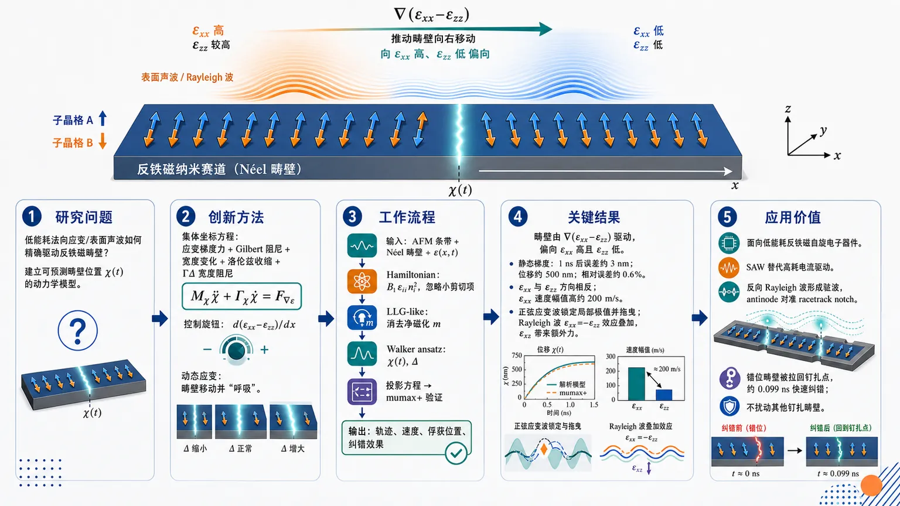
研究问题如何用低能耗的法向应变/表面声波精确驱动反铁磁畴壁，并建立可预测畴壁位置 χ(t) 的动力学模型；核心视觉可画成一条反铁磁纳米赛道，畴壁像可移动界面，被 εxx−εzz 的空间梯度“拉向”εxx 高、εzz 低的区域。创新方法提出法向应变驱动反铁磁畴壁的集体坐标方程，把应变梯度力、Gilbert 阻尼、畴壁宽度随应变和速度变化、洛伦兹收缩、时间依赖应变产生的宽度阻尼 ΓΔ 统一到一个“类粒子运动方程”中；Aha 点是识别真正的控制旋钮不是单个应变，而是 d(εxx−εzz)/dx，且动态应变会让畴壁一边移动一边“呼吸”。工作流程输入为反铁磁条带、Néel 矢量畴壁和时空变化应变场；先从双子晶格 Hamiltonian 加入磁弹耦合 B1εii ni²，忽略较小剪切项；再用 LLG-like 方程消去净磁化 m，采用 Walker ansatz 描述畴壁位置 χ(t) 与宽度 Δ；投影得到畴壁运动方程；最后用 mumax+ 在静态应变梯度、正弦行波应变、Rayleigh 表面声波和驻波 SAW racetrack 中验证，输出畴壁轨迹、速度、俘获位置和纠错效果。关键结果畴壁由 εxx−εzz 的空间梯度驱动，偏向 εxx 高且 εzz 低的位置；静态梯度下解析模型与 mumax+ 在 1 ns 后仅约 3 nm 偏差，而畴壁已移动约 500 nm，相对误差约 0.6%；εxx 与 εzz 驱动方向相反且终端速度不同，εxx 情形速度幅值比 εzz 高约 200 m/s；正弦应变波会把畴壁锁定在局部极值并拖曳前进，Rayleigh 波中 εxx=−εzz 使法向应变效应叠加，但剪切 εxz 会引入额外未建模力。应用价值为反铁磁自旋电子器件提供一种低能耗、可解析设计的畴壁操控方案；可用表面声波替代高耗电流驱动，并通过两个反向传播 Rayleigh 波形成驻波，使应变 antinode 对准 racetrack memory 的 notch，把错位畴壁拉回正确钉扎点，实现约 0.099 ns 量级的快速纠错且不扰动其他已钉扎畴壁。第一部分：核心概览 (Overview)
该研究建立了法向应变驱动反铁磁畴壁运动的集体坐标方程，将磁弹耦合、Gilbert 阻尼、畴壁宽度随应变与速度变化、以及洛伦兹收缩统一进同一动力学框架。核心结论是：畴壁受 εxx−εzz 的空间梯度驱动，趋向 εxx 高、εzz 低的位置；时间依赖应变还通过畴壁宽度变化引入额外阻尼项。模型用 mumax+ 微磁模拟在静态梯度、行波正弦应变、Rayleigh 表面声波中验证，并进一步展示驻波 SAW 可用于 racetrack memory 纠错。在反铁磁自旋电子学中，该工作把 SAW/应变操控从数值现象推进到可解析预测的畴壁动力学模型。
---
第二部分：结构化快速回顾
《Strain-Driven Domain Walls in Antiferromagnets》（None，）
背景
反铁磁材料具有零净磁化、高抗外场稳定性、低器件串扰、快速本征动力学等优势，适合 racetrack memory 等自旋纹理器件。传统电流驱动存在显著能耗，表面声波与应变驱动提供更低耗的替代机制。
方法
从两子晶格反铁磁 Hamiltonian 出发，保留主要磁弹项 B1 εii ni²，忽略较小剪切项 B2 εij ni nj，结合 AFM 的 LLG-like 方程、Walker ansatz、洛伦兹收缩，推导畴壁位置 χ(t) 的运动方程。用 mumax+ 以 NiO 类参数进行验证。
结果
畴壁运动由 d(εxx−εzz)/dx 决定；εxx 与 εzz 对畴壁方向和终端速度产生相反效应。静态梯度下，模型与模拟在 1 ns 后仅约 3 nm 偏差，畴壁已移动约 500 nm，相对偏差约 0.6%。正弦应变波与 Rayleigh 波中，畴壁可被局部极值俘获并随波拖曳。
讨论
时间依赖应变不仅提供空间力，还通过 ΓΔ 引入由畴壁宽度变化导致的阻尼/反阻尼贡献。Rayleigh 波中剪切应变 εxz 虽较小，但会使畴壁趋向 εxz=0，产生模型未包含的附加力。
局限
解析模型主要适用于法向应变主导情形；剪切应变会改变畴壁剖面，使 Walker ansatz 部分失效。B2 剪切耦合未被纳入主方程，因此 Rayleigh 波初期偏差较大。
结论
法向应变可高效操控反铁磁畴壁；两个反向传播 Rayleigh SAW 形成的驻波可把偏离 notch 的畴壁拉回钉扎点，实现 racetrack memory 的纠错功能。
---
第三部分：逐章节冷凝解析 (Section-by-Section Condensing)
Abstract
- Normal strain produces a predictive domain-wall equation of motion
研究推导出法向应变作用下反铁磁畴壁运动方程，核心对象是畴壁位置 χ(t)。摘要直接给出目标：*"We derive an equation describing domain wall motion in antiferromagnets under the influence of normal strain."* 该方程后续写为
[
fracmₑff1-dotḩi²/c²ddotḩi
=F-(Γα+ΓΔ)dotḩi.
]
- Domain wall motion is governed by opposite preferences for εxx and εzz
畴壁趋向 εxx 高且 εzz 低的位置：*"the domain wall moves towards positions where εxx is high and εzz is low."* 这意味着驱动力不是单个应变分量，而是 εxx−εzz 的空间梯度。
- Terminal velocity depends on strain component through domain-wall width
同一应变剖面对 εxx 与 εzz 产生不同终端速度：*"each strain component leads to a different terminal velocity for the same strain profile."* 其机制被归因于畴壁宽度变化：*"This difference arises because both strains affect the domain wall width in opposite ways."*
- Analytical model matches mumax+ simulations across multiple strain profiles
验证覆盖三类应变：strain gradient、oscillating strain、Rayleigh wave。摘要概括为：*"The model is then compared with mumax+ simulations for various strain profiles, including a strain gradient, an oscillating strain, and a Rayleigh wave."* 结论为：*"The comparison shows good agreement between the analytical and numerical results."*
- Standing surface acoustic waves enable racetrack-memory error correction
驻波 SAW 被提出为纠错机制：*"we demonstrate the potential of standing surface acoustic waves as an error correction method in racetrack memory."* 具体实现为两个反向传播 Rayleigh 波形成驻波，使畴壁从节点附近迁移到 antinode/notch。
---
I Introduction
- Antiferromagnets offer device-level advantages over ferromagnets
反铁磁材料相对铁磁材料的技术优势包括零净磁化、外场稳定性、邻近器件低串扰、高集成密度。关键表述为：*"The net zero magnetization enhances stability in external fields and reduces interference with neighboring devices can allow for higher integration densities."*
- Fast intrinsic dynamics make AFM textures attractive for high-speed devices
反铁磁材料具有更快的本征动力学，使畴壁和 skyrmion 可比铁磁材料更高速传播：*"AFM materials exhibit faster intrinsic dynamics, enabling spin textures such as domain walls and skyrmions to propagate at higher velocities than in ferromagnets."* 该性质直接服务于 racetrack memory 等应用。
- Racetrack memory stores information in spin textures
信息载体是畴壁或 skyrmion 等自旋纹理：*"These properties make AFM textures promising candidates for applications such as racetrack memory, where information is stored in these textures."* 这里的核心是把反铁磁纹理作为高密度、快速、低串扰信息单元。
- Electric-current driving suffers from energy dissipation
传统驱动依赖外加电流，但存在能耗问题：*"Conventional approaches to drive these textures rely on applied electric currents, but such methods suffer from significant energy dissipation."* 因此应变/声波驱动具有明确动机。
- Surface acoustic waves provide an energy-efficient alternative
SAW 被定位为低能耗操控机制：*"An alternative approach is to use surface acoustic waves (SAWs), which could provide a more energy-efficient mechanism for manipulating spin textures."* 该方向连接磁弹耦合、声子-磁振子耦合与自旋电子器件。
- Central objective is a strain-dependent AFM domain-wall equation validated by simulation
核心任务是研究空间与时间变化应变如何影响 AFM strip 中畴壁，并用 mumax+ 验证：*"we investigate how a spatially and temporally varying strain influences a domain wall in an AFM strip."* 方法路径为：*"deriving an equation of motion for the domain wall, which we then compare with micromagnetic simulations performed using mumax+."*
- Model insights are applied to racetrack correction using counter-propagating SAWs
应用目标是用两个反向传播 SAW 实现 racetrack memory 纠错：*"Using the insights of the model, we demonstrate the ability to use two counter propagating SAWs for the purpose of racetrack memory correction."*
---
II Equation of Motion
- Two-sublattice AFM variables separate net magnetization and Néel order
两个子晶格磁化 M1、M2 被归一化为 m1、m2，定义净磁化
[
mathbf m=fracmathbf m₁₊mathbf m₂2
]
与 Néel 矢量
[
mathbf n=fracmathbf m₁₋mathbf m₂2.
]
原始定义为：*"we define the net magnetization as m=(m1+m2)/2 and the Néel vector as n=(m1−m2)/2."* 近似条件为 m²≪n²≈1：*"we can assume that m²≪n²≈1."*
- Geometry fixes anisotropy along z and spatial variation along x
薄膜 AFM strip 中，易轴取 z 方向，磁矩只沿 x 方向变化：*"the anisotropy axis is taken along the z-direction, and the magnetic moments are assumed to vary only along the x-axis."* 这使问题降为一维畴壁动力学。
- Hamiltonian includes exchange, anisotropy, and magnetoelastic coupling
Hamiltonian 为
[
mathcal H=intłeft[
-frac8A₀a²mathbf m²
+2A₁₁(partialₓmathbf n)²
-2K n_z²
+2B₁sumᵢǎrepsilonᵢᵢnᵢ²
+2B₂sumᵢₙₑ ⱼǎrepsilonᵢⱼnᵢ nⱼ
i̊ght]dV.
]
参数含义明确：*"A0 and A11 denote the ferromagnetic and homogeneous exchange constants, respectively, a is the lattice constant, K is the anisotropy constant, and B1 and B2 are the magnetoelastic coupling constants."*
- Shear magnetoelastic term is neglected in the main derivation
主推导忽略 B2 剪切项，理由是其通常小于 B1 法向项：*"In most realistic cases, the term B2∑i≠j εij ni nj is smaller than B1∑i=x,y,z εii ni² and can therefore be neglected."* 这一近似成为后续 Rayleigh 波误差来源。
- LLG-like AFM dynamics provide coupled equations for n and m
低阻尼 AFM 动力学采用
[
dotmathbf n=(γmathbf fₘ₋αdotmathbf m)×mathbf n,
quad
dotmathbf m=(γmathbf fₙ₋αdotmathbf n)×mathbf n.
]
引用为：*"we start from the LLG-like equations for antiferromagnets with low damping α."*
- Effective fields are obtained by functional differentiation
有效场定义为
[
mathbf fₘ₌₋frac12μ₀Mₛfracδ Eδmathbf m,
quad
mathbf fₙ₌₋frac12μ₀Mₛfracδ Eδmathbf n.
]
对应结果为
[
mathbf fₘ₌frac8A₀μ₀Mₛ a²mathbf m
]
以及含交换、各向异性、应变的 fn：*"the corresponding effective fields"* 后给出 Eq. 4–5。
- Net magnetization is eliminated under low-damping approximation
忽略 αṁ 后，由 Eq. 2 和 Eq. 4 得到
[
mathbf m=-fracμ₀Mₛ a²8γ A₀dotmathbf n×mathbf n.
]
近似说明为：*"while neglecting the term αṁ, due to the low damping, we obtain an equation for m."*
- Néel vector obeys a second-order inertial equation
消去 m 后得到
[
-fracμ₀Mₛ a²8γ A₀ddotmathbf n
=γmathbf fₙ₋αdotmathbf n.
]
这就是 Néel 矢量的二阶动力学：*"This yields the EoM for the Néel vector."* 二阶形式体现 AFM 畴壁的惯性质量。
- Walker ansatz parameterizes the Néel-type domain wall
畴壁从左侧 +z 过渡到中心 −x，再到右侧 −z：*"the Néel vector transitions from +z on the left, to −x at the DW, and to −z on the right."* Ansatz 为
[
mathbf n₀₌₍₋sinθ,0,o̧sθ)^T,quad
θ=2arctan e⁽x⁻ḩⁱ⁽t⁾⁾/Δ₀.
]
位置坐标为 χ(t)：*"we define χ(t) as the domain wall position."*
- Effective anisotropy links normal strain to domain-wall width
畴壁宽度
[
Δ₀₌sqrtfracA₁₁Kₑff,
quad Kₑff=K+B₁₍ǎrepsilonₓₓ-ǎrepsilonzz).
]
关键表达为：*"Keff=K+B1(εxx−εzz), as the domain wall width."* 因此宽度由 εxx−εzz 控制。
- Internal wording inconsistency appears for width response
摘要称：*"εxx reduces the width, whereas εzz increases it."* 但正文 Eq. 10–12 后写道：*"From this equation, we can already see that a εxx (εzz) strain increases (decreases) the domain wall width."* 在 NiO 参数 B1=−15 MJ/m³ 下，由
[
Kₑff=K+B₁₍ǎrepsilonₓₓ-ǎrepsilonzz)
]
可得正 εxx 降低 Keff、增大 Δ0；正 εzz 增大 Keff、减小 Δ0。因此正文与后续 III.1 的解释自洽，摘要表述相反。
- Lorentz contraction is included near magnon group velocity
AFM 畴壁速度可接近磁振子群速度
[
c=fracγμ₀Mₛsqrt-32A₁₁A₀/a²,
]
因此宽度修正为
[
Δ=Δ₀sqrt1-v²/c².
]
原句为：*"we must account for the Lorentz contraction of the domain wall width Δ0→Δ=Δ0√(1−v²/c²)."*
- Projection onto ∂xn produces a collective-coordinate equation for χ
将 Néel 方程乘以 ∂x n 并对磁体体积积分：*"we multiply Eq. 9 by ∂x n and integrate over the volume of the magnet, while only keeping terms up to first order in strain."* 得到畴壁位置方程
[
fracmₑff1-dotḩi²/c²ddotḩi
=F-(Γ_α+Γ_Δ)dotḩi.
]
- Effective mass scales inversely with Lorentz-contracted width
有效质量为
[
mₑff=
-fracμ₀²Mₛ²a²8γ²A₀Δt_y t_z.
]
因 A0<0，质量为正。公式对应定义：*"we defined the effective mass"*。
- Strain-gradient force depends only on εxx−εzz
驱动力为
[
F=-B₁Δfracd(ǎrepsilonₓₓ-ǎrepsilonzz)dxt_y t_z.
]
这使 εxx 与 εzz 对畴壁施加反号作用：*"the xx-strain and zz-strain have opposite effects on the domain wall."*
- Two damping terms have distinct physical origins
Gilbert 阻尼
[
Γ_α=fracαμ₀MₛγΔt_y t_z
]
与宽度变化阻尼
[
Γ_Δ=
mₑfffracB₁₍dotǎrepsilonₓₓ-dotǎrepsilonzz)2Kₑff
]
被区分为：*"the subscripts α and Δ denote that the damping term originates from the Gilbert damping and the domain wall width, respectively."*
- ΓΔ vanishes for static strain profiles
ΓΔ 只在时间依赖应变中存在：*"ΓΔ depends on the time variation of the strain, and therefore vanishes for time-independent strain profiles."* 因此静态应变梯度只含空间力与 Gilbert 阻尼。
- Terminal velocity follows from zero acceleration
设 χ¨=0 得
[
dotḩi=-fracFΓ_α+Γ_Δ.
]
原文写为：*"We can further determine the terminal velocity by using χ¨=0 m/s²."* 展开式显示终端速度与 Δ²、应变梯度、时间应变导数共同相关。
---
III Verification of the EoM
- Micromagnetic validation uses mumax+ and NiO-like material parameters
模拟参数接近 NiO：*"we use material parameters that closely resemble those of the antiferromagnet NiO."* 具体数值包括
Ms=425 kA/m，A11=4.4 pJ/m，A0=−46 pJ/m，a=0.42 nm，K=85.7 kJ/m³，α=2.1×10⁻⁴，B1=−15 MJ/m³，B2=−8.5 MJ/m³。
- Simulation discretization is one-dimensional for model verification
验证模拟使用 1 nm × 1 nm × 1 nm cell，网格为 4096 × 1 × 1，y 方向周期边界：*"The simulation consists of cells of size 1×1×1 nm, forming a 4096×1×1 grid, with periodic boundary conditions applied along the y-direction."*
- Domain-wall position is extracted from the zero crossing of Néel z-component
mumax+ 中畴壁位置由 nz=0 插值得到：*"the domain wall position is determined by interpolating where the z-component of the Néel vector is equal to zero."* 解析模型则用 RK4 数值积分 Eq. 16：*"For the model we integrate Eq. 16 numerically using the RK4 method."*
---
III.1 Static Strain Gradient
- Static gradient ranges from 0 ppm to 0.14% over 4.096 μm
应变线性梯度从 x=0 μm 的 0 ppm 增加到 x=4.096 μm 的 0.14%：*"We apply a static strain gradient that increases from 0 ppm at x=0 μm to 0.14% at x=4.096 μm."* 由于应变静态，ΓΔ=0：*"ΓΔ is irrelevant for a static gradient."*
- εxx and εzz drive opposite domain-wall motion
模拟证实法向应变分量作用相反：*"εxx and εzz strains have opposite effects on the domain wall motion."* 这与力项
[
Fpropto -B₁fracd(ǎrepsilonₓₓ-ǎrepsilonzz)dx
]
一致。
- Shear strain has much weaker effect than normal strain
剪切应变 εxz 的影响较低：*"the effect of shear strain is low."* 但该效应并非为零，后续 Appendix B 表明其趋向使畴壁定位在 εxz=0。
- Analytical and numerical positions agree within 3 nm after 1 ns
1 ns 后模型与 mumax+ 偏差约 3 nm，即 3 个模拟 cell，而畴壁已移动约 500 nm：*"The difference between the simulation and the model is only about 3 nm after 1 ns, corresponding to three simulation cells, while the domain wall has already traveled approximately about 500 nm."* 相对偏差约 0.6%：*"This corresponds to a deviation of about 0.6%, demonstrating good agreement."*
- Terminal velocity under εxx exceeds εzz by about 200 m/s
速度分析显示 εxx 下终端速度幅值比 εzz 高约 200 m/s：*"the magnitude of the terminal domain wall velocity under εxx strain is 200 m/s higher than under εzz strain."*
- Velocity difference arises from strain-dependent domain-wall width
Eq. 22 中终端速度与 Δ 相关；正文解释为：*"the terminal velocity linearly depends on Δ and that xx-strain increases Δ0 while zz-strain decreases it, leading to higher and lower terminal velocities, respectively."* 严格从 Eq. 22 看，若 ΓΔ=0 且低速近似，速度含 Δ²；文本中“linearly depends on Δ”与公式展开存在表述不精确，但物理方向一致。
- Shear-driven terminal velocity is only about 100 m/s
剪切应变驱动的绝对终端速度约 100 m/s：*"the absolute terminal velocity of the domain wall influenced by shear strain is only about 100 m/s."* 这约为 εxx 驱动的六分之一、εzz 驱动的五分之一：*"only a sixth (fifth) of a domain wall under influence of εxx (εzz) strain."*
---
III.2 Strain Wave
- Applied sinusoidal strain has amplitude 0.14%, wavelength 250 nm, frequency 10 GHz
应变形式为
[
ǎrepsilon₀sin(kx-2π ft),
]
其中 ε0=0.14%，k=2π/250 nm，f=10 GHz：*"ε0=0.14% is the amplitude, k=2π/250 nm is the wavenumber, and f=10 GHz is the frequency."*
- Time-dependent strain activates every term in the equation of motion
正弦行波具有时间依赖性，因此 F、Γα、ΓΔ、惯性项均参与：*"the strain is time-dependent, meaning that all terms in Eq. 16 contribute."*
- Both εxx and εzz cases ultimately move in the same direction
尽管静态梯度下方向相反，行波中两者最终同向运动：*"both the εxx and εzz case ultimately move the domain wall in the same direction."* 原因是畴壁被局部极值俘获并随波移动。
- Domain wall is trapped at different extrema for εxx and εzz
εxx 中畴壁被最大值俘获，εzz 中被最小值俘获：*"the domain wall becoming trapped in a local extremum (a maximum for εxx and a minimum for εzz) and subsequently being dragged along by the strain wave."*
- Initial oscillation reveals capture around strain extrema
Fig. 4 inset 显示畴壁围绕极值振荡：*"This capture process is visible in the inset of Fig. 4, where the domain wall oscillates around an extremum."* 该过程对应局部势阱锁定。
- Deviation initially reaches about 3 cells due to rapid oscillations
模型与模拟偏差初期增至约 3 个 cell：*"the deviation between mumax+ and the EoM initially increases to approximately 3 cells."* 原因是畴壁围绕正弦极值快速振荡：*"attributed to the rapid oscillations of the domain wall around the extrema of the sinusoidal profile."*
- After settling, deviation falls below one cell size and remains constant
畴壁稳定进入极值后，偏差低于 1 cell size 并保持恒定：*"once the domain wall has settled in an extrema of the strain, the difference decreases to below one cellsize and remains constant."*
---
III.3 Rayleigh Waves
- Rayleigh waves are relevant because they are efficiently generated by interdigital transducers
Rayleigh 波是磁弹系统中的重要 SAW 类型：*"A Rayleigh wave is a type of surface acoustic wave that is of particular interest in magnetoelastic systems."* 原因是可在压电基底上用 interdigital transducers 高效激发：*"it can be efficiently excited using interdigital transducers on a piezoelectric substrate."*
- Rayleigh strain contains normal and shear components
沿 x 传播的 Rayleigh 波写为
[
ǎrepsilonₓₓ=ǎrepsilon₀sin(kx-ømega t),quad
ǎrepsilonzz=-ǎrepsilon₀sin(kx-ømega t),quad
ǎrepsilonₓz=ǎrepsilon'₀ₒ̧s(kx-ømega t),
]
其余分量为 0。关键说明为：*"these expressions also include shear strain, which we neglected in the derivation of the equation of motion."*
- Shear strain is smaller than normal strain but not dynamically irrelevant
文中强调剪切分量小于法向分量：*"the shear component is smaller than the normal components."* 但 Fig. 6–7 显示其造成初期偏差，因为主方程没有包含剪切驱动力。
- εxx and εzz have equal magnitude and opposite sign, so their effects add constructively
Rayleigh 波中 εxx=−εzz，因此
[
ǎrepsilonₓₓ-ǎrepsilonzz=2ǎrepsilon₀sin(kx-ømega t).
]
原文表述为：*"the εxx and εzz components have equal magnitude but opposite sign, implying that they have the same effect on the domain wall motion."*
- Rayleigh-wave simulation parameters match sinusoidal test frequency and wavelength
参数为 ε0=0.14%、ε0′=0.0525%、f=10 GHz、k=2π/250 nm：*"we use the amplitudes ε0 and ε0′ of 0.14% and 0.0525%, respectively, and a frequency f and wavenumber k of 10 GHz and 2π/250 nm."*
- Model captures the overall trend but shows larger initial deviation
结果显示趋势一致：*"the overall trend of the model agrees well with the simulation."* 但初期偏差较大：*"a larger initial deviation is present due to the influence of the shear strain."*
- Shear strain pushes the wall toward εxz=0 positions
剪切分量使畴壁定位在 εxz=0：*"The εxz component tends to force the domain wall to localize at position where this component vanishes."* 该位置与法向应变极值重合：*"which coincides with the extrema of the norm strains."*
- Additional shear-induced force is absent from the analytical model
剪切效应产生主模型未捕捉的额外力：*"This introduces an additional force on the domain wall that is not captured in the model."* 这解释了 Rayleigh 情形的残余误差。
---
IV Racetrack Error Correction
- Racetrack memory stores bits in magnetic domains separated by domain walls
磁性 racetrack 是用磁畴存储信息的器件：*"A magnetic racetrack is a device in which magnetic domains store information, such as bits."* 畴壁被 notch 钉扎，并可由外力推动到下一 notch。
- Operational failure occurs when a domain wall misses the intended notch
可靠性问题来自畴壁未到达目标 notch、被困在两个 notch 之间：*"a domain wall may fail to reach the intended notch and become trapped between two notches."* 纠错目标就是把这种失配畴壁重新拉回钉扎点。
- Standing SAWs can mitigate racetrack-positioning errors
Rayleigh 波不仅能驱动畴壁，还能用于纠错：*"surface acoustic waves (Rayleigh waves) can be used to mitigate this issue."* 机制基于畴壁偏好 εxx 高、εzz 低的位置。
- Two counter-propagating SAWs generate antinodes at notch positions
两个相同反向传播 SAW 形成驻波，并令 antinode 与 notch 对齐：*"By applying two identical counter-propagating SAWs, a standing wave can be generated in which the antinodes coincide with the positions of the notches."*
- Standing wave drives walls away from nodes and toward antinodes/notches
纠错机制为：*"This standing wave then drives the DW away from the nodes (between the notches) and toward the antinodes, where it can be captured by a notch."* 即错误位置处的畴壁受到回复力，最终进入 notch 势阱。
- Racetrack simulation uses a 1024 × 512 × 1 grid with 1 nm cells
模拟继续使用 Section III 的 NiO 参数，网格为 1024 × 512 × 1，cell 为 1 nm × 1 nm × 1 nm：*"The system is defined on a grid with cell size 1×1×1 nm, consisting of 1024×512×1 cells."*
- Three triangular notches define pinning sites
三个等间距 notch 用三角形缺口建模，底边 20 nm、高 15 nm：*"Three equally spaced notches are included, modeled as triangular indentations in the simulation lattice with a base of 20 nm and a height of 15 nm."*
- Initial state contains three domain walls, with the central wall misplaced at 400 nm
初态有三个畴壁：第一个在第一 notch，第二个位于第二 notch 左侧 400 nm 处，第三个在第三 notch：*"one located at the first notch, one positioned to the left of the second notch at 400 nm, and one at the third notch."*
- SAW wavelength is tuned so strain extrema coincide with notches
SAW 波长选择为
[
frac10246,nm
]
使 εxx 与 εzz 的极值对应三个 notch：*"the SAW wavelength is chosen such that the extrema of εxx and εzz coincide with the three notches, which corresponds to a wavelength of 1024/6 nm."*
- Correction simulation uses 10 GHz and sub-0.1% strain amplitudes
频率固定 10 GHz，εxx 与 −εzz 振幅为 300 ppm，εxz 为 112.5 ppm：*"The frequency is fixed at 10 GHz, and the SAW amplitudes are 300 ppm for εxx and −εzz, and 112.5 ppm for εxz."*
- Central wall first moves left, then right as the standing wave oscillates
起始时预测畴壁向左运动：*"At 0 ns, we predict that the domain wall will propagate toward the left due to the applied strains."* 随驻波振荡，畴壁随后受向右力：*"due to the oscillation of the standing wave, the domain wall now experiences a force driving it toward the right."*
- Misplaced wall snaps onto the correct notch without disturbing pinned walls
最终中央畴壁进入正确 notch，其他畴壁不受影响：*"the domain wall has successfully snapped onto the correct notch without affecting the other domain walls."* Fig. 9 说明中央畴壁在 0.099 ns 后被钉扎：*"the central domain wall becomes pinned at the central pinning site after 0.099 ns."*
- Mechanism is oscillatory relaxation into the nearest notch
纠错过程不是单向输运，而是围绕初始位置振荡直至进入 notch：*"this method causes the domain wall oscillate around its initial position until it reaches a notch."*
---
V Conclusion
- Equation of motion is valid for normal-strain-driven AFM domain walls
结论强调已获得法向应变下畴壁运动方程：*"We derived an equation of motion for domain walls under applied normal strain."* 该方程通过静态梯度、正弦行波和 Rayleigh 波模拟验证。
- mumax+ agreement is good except when shear strain is significant
模型与模拟整体吻合：*"Comparison with mumax+ simulations shows good agreement."* 例外是包含剪切应变的情形：*"except in cases where shear strain is present, such as for Rayleigh waves."*
- Shear strain adds an uncaptured force and modifies the wall profile
剪切应变造成两重问题：一是额外力，二是畴壁剖面改变：*"shear strain introduces an additional force that is not captured by the derivation and modifies the domain wall profile."*
- Walker ansatz breaks down under shear-induced profile distortion
剪切应变改变畴壁剖面，导致 Walker ansatz 失效：*"leading to a breakdown of the Walker ansatz."* 这表明主方程的关键假设不是所有 Rayleigh 条件下都严格成立。
- Model remains useful when shear strain is smaller than normal strain
Rayleigh 波中剪切通常较小，因此模型仍有效：*"the model remains valid as long as the shear component is smaller than the normal component, which is typically the case for Rayleigh waves."*
- Future work should treat shear strain explicitly
未来方向是系统研究剪切应变：*"Further work could investigate the role of shear strain in more detail."* 可扩展为包含 B2 εxz 的集体坐标模型。
- Standing SAW enables racetrack error correction
最终应用结论为：*"a standing surface acoustic wave, formed by two counter-propagating Rayleigh waves, can be used as an error-correction mechanism in racetrack memory."*
---
VI Acknowledgments
- Early-stage discussions and funding sources are specified
感谢对象为 Dirk Grundler：*"We thank Dirk Grundler for discussions in the early stage of the project."* 经费来自 SHAPEme project、FWO、F.R.S.-FNRS Excellence of Science program 与 Ghent University special research fund：*"acknowledges financial support from the SHAPEme project (EOS ID 400077525) ... and the Ghent University special research fund."*
---
Appendix A Integration of the LLG equation
- Projection derivation starts from the Néel-vector equation
从 Eq. 9 到 Eq. 16 的推导通过乘以 ∂x n 并积分完成：*"We continue the derivation from Eq. 9 to Eq. 16 by multiplying by ∂x n and integrating over the volume of the magnet."* 初始投影方程为
[
-fracμ₀Mₛₐ²8γ A₀
intddotmathbf nḑotpartialₓmathbf n,dx
=
γintmathbf fₙḑotpartialₓmathbf n,dx
-
αintdotmathbf nḑotpartialₓmathbf n,dx.
]
- Collective-coordinate derivatives include χ and Δ dynamics
定义
[
ξ=fracx-ḩi(t)Δ
]
后，导数为
[
partialₓmathbf n=frac1Δfracpartialmathbf n₀partialξ,
quad
dotmathbf n=
łeft(-ξfracdotΔΔ-fracdotḩiΔi̊ght)
fracpartialmathbf n₀partialξ.
]
对应说明为：*"we define ξ=(x−χ(t))/Δ and rewrite the derivatives in the collective coordinate frame."*
- Several inertial integrals vanish by symmetry
变换到 θ 并从 0 到 π 积分，只保留一阶应变项：*"The integrals can be evaluated by changing the integration variables to θ and integrating from 0 to π, while retaining only terms up to first order in strain."* 含奇函数结构的积分为 0，例如 Eq. 29、30、32。
- Nonzero inertial terms generate χ¨ and Δ˙χ˙ coupling
非零贡献包括
[
-frac2ddotḩiΔ²
+frac4dotΔdotḩiΔ³
]
与
[
-frac2dotΔdotḩiΔ³.
]
合并后形成 Eq. 38 中的
[
fracddotḩiΔ-fracdotΔdotḩiΔ².
]
- Gilbert damping integral contributes only the χ˙ term
阻尼积分中 Δ˙ 部分为 0，χ˙ 部分为
[
-frac2dotḩiΔ².
]
具体写法为：*"The next set of integrals are determined by ∫ ṅ·∂x n dx and result in two integrals."*
- Exchange and anisotropy force terms vanish after projection
对 fn·∂xn 的积分中，非均匀交换 A11 与各向异性 K 项均为 0：*"Both the integrals related to the inhomogeneous exchange A11 and anisotropy K result in 0."*
- Normal strain produces the projected force proportional to d(εxx−εzz)/dx
应变积分经分部积分得到
[
frac2B₁Δμ₀Mₛ
fracd(ǎrepsilonₓₓ-ǎrepsilonzz)dx.
]
过程说明为：*"We can calculate this integral by using partial integration and only keeping terms up to first order in strain."*
- Intermediate equation links acceleration, strain force, and Gilbert damping
Eq. 38 为
[
fracμ₀²Mₛ²a²8γ²A₀
łeft(fracddotḩiΔ
-fracdotΔdotḩiΔ²i̊ght)
=
B₁Δfracd(ǎrepsilonₓₓ-ǎrepsilonzz)dx
+
αμ₀MₛfracdotḩiγΔ.
]
- Δ˙ contains both strain-rate and relativistic acceleration corrections
宽度时间导数为
[
dotΔ
=
-fracΔ B₁₍dotǎrepsilonₓₓ-dotǎrepsilonzz)
2[K+B₁₍ǎrepsilonₓₓ-ǎrepsilonzz)]
-
fracΔdotḩiddotḩic²⁻dotḩi².
]
原文说明为：*"We can further evaluate this by deriving an expression for Δ˙."*
- Final equation recovers Eq. 16 with relativistic mass factor
代入 Δ˙ 后得到最终形式：*"This provides the final expression for the equation of motion."*
[
fracmₑff1-dotḩi²/c²ddotḩi
=
F-(Γ_α+Γ_Δ)dotḩi.
]
---
Appendix B Shear Strain
- Shear strain appears to drive walls toward lower strain in one gradient but not universally
Fig. 2 中剪切应变看似使畴壁趋向低应变：*"the shear strain seems to force the domain wall towards lower strain values."* Appendix B 通过三种梯度澄清该结论并非普遍。
- Three shear-gradient simulations use NiO parameters and center release
三个模拟均使用 NiO 参数，畴壁从磁体中心释放：*"Fig. 10 shows three shear strain simulations with the NiO parameters with different strain gradients, where the domain wall is always released from the center of the magnet."*
- Positive 0% to 0.14% gradient drives toward lower strain
当 εxz 从 0% 到 0.14% 时，畴壁向低应变值运动：*"the strain goes from 0% towards 0.14% the domain wall moves towards lower strain values."*
- Negative −0.14% to 0% gradient drives toward higher strain
当 εxz 从 −0.14% 到 0% 时，畴壁向高应变值运动：*"it moves towards higher strain values in the simulation where the strain goes from −0.14% towards 0%."*
- Symmetric −0.07% to 0.07% gradient produces no motion when wall starts at zero crossing
当梯度从 −0.07% 到 0.07%，畴壁位于中心即 εxz=0，因此无运动：*"we can see no movement ... where the strain goes from −0.07% towards 0.7%."* 图注则写为 −0.07% 到 0.07%，正文中的 0.7% 很可能是笔误。
- General shear-strain rule is attraction toward εxz=0
结论为：*"From these simulations we can conclude that shear strain will force the domain wall towards εxz=0."* 这解释了 Rayleigh 波中剪切项使畴壁额外定位在法向应变极值附近。
---
Appendix C Domain Wall Profile
- Static energy density includes both normal and shear strain
为获得含一般剪切与法向应变的畴壁剖面，将 Eq. 14 代入静态能量密度：*"To find a profile for the domain wall under general shear and norm strain we start from the static energy density as a function of θ."* 能量为
[
E=
2A₁₁(partialₓθ)²
-2Ko̧s²θ
+2B₁₍ǎrepsilonₓₓsin²θ+ǎrepsilonzzo̧s²θ)
+2B₂ǎrepsilonₓz(o̧s²θ-sin²θ).
]
- Euler–Lagrange equation shows shear strain acts as a profile-tilting term
Euler–Lagrange 方程为
[
A₁₁partialₓ²θ
-[K+B₁₍ǎrepsilonₓₓ-ǎrepsilonzz)]o̧sθsinθ
+B₂ǎrepsilonₓz(o̧s²θ-sin²θ)=0.
]
其中 B2 εxz 项与常规 Walker 方程不同，会改变中心角度。
- Effective anisotropy and width are redefined as Keff and Δ
定义
[
Kₑff=K+B₁₍ǎrepsilonₓₓ-ǎrepsilonzz),
quad
Δ=sqrtA₁₁/Kₑff.
]
原文为：*"Here we have defined Keff=K+B1(εxx−εzz) and Δ=√A11/Keff."*
- Small B2εxz/Keff permits Taylor expansion
由于 B2εxz/Keff 很小，可展开：*"We know that B2 εxz/Keff will be small and we can do a reverse Taylor expansion."* 这使积分近似可解析求解。
- Shear strain shifts Walker profile by B2εxz/Keff
最终角度剖面为
[
θ=
2arctan(ex/Δ)
+fracB₂ǎrepsilonₓzKₑff.
]
原文写为：*"As a final result for θ we have θ=2 arctan(ex/Δ)+B2 εxz/Keff."*
- Walker ansatz is recovered when shear strain vanishes
当 εxz=0 时，附加角偏移消失，恢复标准 Walker 剖面：*"This equation reduces to the Walker ansatz when there is no shear strain."* 这从解析上解释了主模型为何只在剪切较小时可靠。
---
第四部分：深度理解与语言支持 (Understanding & Nuance)
1. 术语解析
Néel vector
Néel vector 是反铁磁序参量，定义为两个子晶格归一化磁化差的一半：
[
mathbf n=(mathbf m₁₋mathbf m₂₎/2.
]
它不是净磁化，而是描述反平行磁矩排列方向的主变量。文中使用 *"the Néel vector as n=(m1−m2)/2"*，并以 n 而非 m 描述畴壁剖面，因为 AFM 中 m≈0、n≈1。
Collective coordinates
Collective coordinates 指用少数宏观变量描述复杂连续纹理。这里主要变量是畴壁位置 χ(t) 和宽度 Δ。表达 *"we introduce the collective coordinates"* 的含义是将无限维场 n(x,t) 简化为移动的 Walker 剖面：
[
mathbf n(x,t)=mathbf n₀[(x-ḩi(t))/Δ].
]
Walker ansatz
Walker ansatz 是畴壁理论中的标准解析剖面假设：
[
θ=2arctan e⁽x⁻ḩⁱ⁾/Δ.
]
它假定畴壁运动时剖面形状保持不变，只发生平移和宽度变化。文中 *"we employ the Walker ansatz"* 的隐含前提是剪切应变小，否则 Appendix C 显示剖面会额外偏移。
Lorentz contraction
Lorentz contraction 在反铁磁畴壁中是类相对论动力学效应，不是狭义相对论真实时空收缩，而是 AFM 方程具有类似 relativistic 的形式。畴壁速度接近 magnon velocity c 时，宽度变为
[
Δ=Δ₀sqrt1-v²/c².
]
文中 *"we must account for the Lorentz contraction"* 表示高速畴壁不能用静态宽度。
Terminal velocity
Terminal velocity 是加速度为零时的稳态速度：
[
dotḩi=-F/(Γ_α+Γ_Δ).
]
文中 *"terminal velocity"* 不表示最大物理速度，而表示在应变驱动力与阻尼平衡后的稳定速度。
---
2. 疑难查证
为什么 εxx 与 εzz 作用相反？
磁弹能中法向应变项为
[
2B₁₍ǎrepsilonₓₓnₓ²⁺ǎrepsilonzzn_z²⁾.
]
畴壁中心附近 nx 大，畴区内部 nz 大。改变 εxx 会更强影响畴壁中心能量；改变 εzz 会更强影响畴区能量。投影后真正进入力项的是
[
ǎrepsilonₓₓ-ǎrepsilonzz.
]
因此 εxx 和 εzz 必然以相反符号进入畴壁动力学。畴壁像一个寻找最低有效能量的粒子，沿着降低总磁弹能的方向运动。
为什么行波中 εxx 与 εzz 最终同向移动？
静态梯度中，εxx 与 εzz 的力方向相反；但行波中局部极值本身在移动。εxx 会把畴壁困在应变最大值，εzz 会把畴壁困在应变最小值。最大值和最小值都随同一行波以同一相速度传播，因此畴壁最终都被“拖着走”。区别只是被锁定在波形的不同相位点。
ΓΔ 为什么像阻尼项？
应变随时间变化时，畴壁宽度 Δ(t) 也变化。畴壁不是刚体；它一边移动一边“呼吸”。这种宽度变化会把平移运动与内部形变耦合起来，在集体坐标方程中表现为与 χ˙ 成正比的项：
[
Γ_Δdotḩi.
]
它形式上像阻尼，但其符号可随 dotǎrepsilonₓₓ-dotǎrepsilonzz 改变，严格说是参数调制导致的有效阻尼/反阻尼。
为什么剪切应变会破坏 Walker ansatz？
标准 Walker ansatz 假定畴壁中心角度固定，例如中心处 Néel vector 指向 −x。剪切项
[
B₂ǎrepsilonₓznₓ n_z
]
会偏好 nx 与 nz 同时非零的倾斜状态，使整个角度剖面增加偏移：
[
θi̊ghtarrow θ+fracB₂ǎrepsilonₓzKₑff.
]
这不再是单纯的平移与缩放，因此主方程中只用 χ(t) 和 Δ(t) 描述会遗漏剪切诱导力。
---
第五部分：创新评估与关联 (Synthesis & Novelty)
1. 创新性判断
从现象级 SAW 驱动推进到解析畴壁动力学方程
近几年相关工作多集中于 SAW 对磁畴、skyrmion、畴壁的数值驱动或实验操控。该研究的主要新颖性在于给出反铁磁畴壁在时空变化法向应变下的显式运动方程：
[
fracmₑff1-dotḩi²/c²ddotḩi
=
F-(Γ_α+Γ_Δ)dotḩi.
]
该方程把应变梯度力、Gilbert 阻尼、宽度调制阻尼、洛伦兹收缩放在同一框架中，使 SAW 驱动不再只是模拟现象，而可通过参数预测。
明确识别 εxx−εzz 是控制 AFM 畴壁的关键应变组合
法向应变并非所有分量等价；真正控制驱动力的是
[
d(ǎrepsilonₓₓ-ǎrepsilonzz)/dx.
]
这一点为器件设计提供了直接准则：增强 εxx 与 −εzz 的协同配置最有效。Rayleigh 波天然满足 εxx=−εzz，因此其法向分量对畴壁运动是加性的。
揭示终端速度差异来自畴壁宽度调制
同样的应变梯度下，εxx 与 εzz 不仅运动方向不同，还可产生不同终端速度。机制不是单纯的力符号，而是应变改变
[
Kₑff=K+B₁₍ǎrepsilonₓₓ-ǎrepsilonzz)
]
进而改变
[
Δ=sqrtA₁₁/Kₑff.
]
这比“应变产生力”的直观图像更深入，说明应变同时改变畴壁的有效质量、阻尼和速度响应。
识别时间依赖应变中的宽度阻尼 ΓΔ
多数简化模型只考虑静态势能梯度和 Gilbert 阻尼。这里额外得到
[
Γ_Δ=
mₑff
fracB₁₍dotǎrepsilonₓₓ-dotǎrepsilonzz)2Kₑff,
]
表明动态 SAW 会通过宽度呼吸影响畴壁运动。该项对 GHz SAW 尤其重要，是连接声波频率与畴壁动力学相位响应的关键。
把 SAW 驱动转化为 racetrack error correction，而非单纯输运
过去 SAW 多被设想为驱动畴壁前进的外力。这里提出更器件化的功能：两个反向传播 Rayleigh 波形成驻波，使 antinode 对准 notch，从而把未钉扎畴壁拉回正确位置。该机制处理的是 racetrack memory 的可靠性问题，即畴壁错过 notch 后的纠错，而不是常规位移驱动。
系统指出剪切应变是模型边界条件与下一步问题
Rayleigh 波不可避免含 εxz。该研究没有简单忽略其误差，而是通过 Appendix B/C 说明剪切应变趋向使畴壁定位在 εxz=0，并通过剖面修正
[
θ=
2arctan(ex/Δ)
+fracB₂ǎrepsilonₓzKₑff
]
解释 Walker ansatz 的失效。这给后续扩展到完整 magnetoelastic SAW 模型提供了明确方向。
-
14
📊 含图深析
📄 摘要：利用热失配应变进行畴工程，在硅兼容平台上实现理想反铁电行为和大的数字式机电响应。策略把传统热失配缺陷转化为可控应变源，调控反极化-极化相变的畴结构与开关路径，缓解常规氧化物反铁电与硅的结构、化学兼容性问题。
💡 亮点：热失配应变被用作反铁电畴工程工具，在硅平台上实现近理想可逆反极化-极化开关。该路线把反铁电数字机电响应推进到可集成器件语境。
📖 展开分析 + 配图
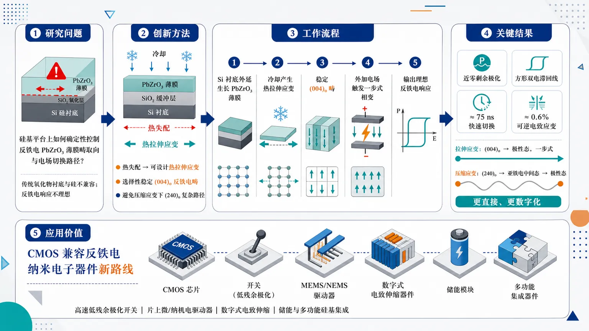
研究问题如何在硅基平台上确定性控制反铁电 PbZrO₃ 薄膜的畴取向与电场切换路径，克服传统氧化物衬底与硅不兼容、反铁电响应不理想的问题。创新方法把硅衬底与 PbZrO₃ 薄膜之间原本有害的热失配，转化为可设计的热拉伸应变；用该应变稳定特定的 (004)o 反铁电畴，使材料从反极性态直接一步切换到极性态，避免压缩应变下 (240)o 畴经过亚铁电中间态的复杂路径。工作流程硅衬底外延生长 PbZrO₃ 薄膜 → 冷却过程中热膨胀失配产生热拉伸应变 → 拉伸应变选择性稳定 (004)o 畴 → 外加电场触发一步式反铁电—极性相变 → 输出近零剩余极化、方形双电滞回线和大可逆电致应变。关键结果硅基拉伸应变薄膜实现接近理想反铁电行为：近零剩余极化、清晰方形双电滞回线、约 75 ns 纳秒级快速切换、约 0.6% 大可逆电致应变，并具有稳健工作窗口；相比压缩应变体系，切换路径更直接、更数字化。应用价值为 CMOS 兼容的反铁电纳米电子器件提供新路线，可用于高速低残余极化开关、片上微/纳机电驱动器、数字式电致伸缩器件、储能与多功能硅基集成器件。第一部分：核心概览
该研究将硅衬底上的热失配转化为可控的热拉伸应变，在外延 PbZrO₃ 薄膜中实现接近理想的反铁电性。核心贡献在于：拉伸应变稳定 (004)o 畴并触发直接一步式反铁电—铁电切换，避免压缩应变下 (240)o 畴经由中间铁电态的复杂路径。器件表现出近零剩余极化、方形双电滞回线、约 75 ns 快速切换、约 0.6% 可逆电致应变，推动反铁电材料向硅基纳米电子器件集成。
---
第二部分：结构化快速回顾
《Silicon-compatible ideal antiferroelectricity with large digital electromechanical responses enabled by thermal-strain domain engineering》（None，）
背景
反铁电材料具有可逆的反极性—极性相变，适用于储能、驱动、逻辑与纳米电子器件，但畴结构和切换路径难以确定性控制；传统氧化物平台与硅电子体系存在结构和化学不兼容。
方法
利用硅衬底与 PbZrO₃ 薄膜之间的热失配产生非常规热拉伸应变，并结合理论与实验研究不同应变状态下的畴稳定性和电场诱导切换路径。
结果
拉伸应变稳定 (004)o 畴，产生直接一步式反铁电—极性切换；压缩应变稳定 (240)o 畴，切换需经过中间铁电态。薄膜表现为近零剩余极化、方形双电滞回线、约 75 ns 纳秒切换、约 0.6% 大可逆电致应变和稳健工作窗口。
讨论
硅基热失配不再只是外延集成中的缺陷来源，而成为实现理想反铁电畴工程的功能变量。关键物理机制是应变选择性稳定特定正交畴取向，从而改变电场驱动的相变路径。
局限
可用材料仅包含摘要和题录信息，未给出正文实验细节、样品厚度、沉积条件、晶体学表征图谱、疲劳寿命、统计样本量、误差线、第一性原理参数或器件尺寸。
结论
热拉伸应变工程可在硅平台上实现高质量、可控、快速且大应变响应的理想反铁电 PbZrO₃ 薄膜，为硅兼容反铁电纳米电子器件提供路线。
---
第三部分：逐章节冷凝解析
可解析原始章节标题仅包含 Abstract。输入材料未包含 Introduction、Results、Discussion、Methods、Supplementary Information 等正文内容；缺失章节不能进行逐节事实提取，不能补造样品量、统计显著性、工艺参数或图谱结果。
Abstract
- Antiferroelectricity provides reversible antipolar–polar functionality
反铁电材料的核心功能来自可逆的反极性—极性相变，这一相变为现代纳米电子学中的多功能器件提供材料基础。摘要明确指出：*"Antiferroelectrics exhibit reversible antipolar-polar transformations, offering a compelling platform for multiple functionalities in modern nanoelectronics"*。这里的关键不是普通介电响应，而是可在电场下进行可逆结构/极化状态切换的相变型功能。
- Deterministic domain and pathway control remains unresolved
反铁电材料的关键瓶颈在于反铁电畴与切换路径难以被确定性控制。摘要使用 *"yet deterministic control of antiferroelectric domains and switching pathways remain elusive"* 强调该问题长期未解决。这里的“deterministic control”意味着不是依赖随机畴分布或偶然切换，而是通过材料结构设计预先决定畴取向与相变路线。
- Silicon integration is limited by oxide-platform incompatibility
传统反铁电氧化物与硅基电子器件之间存在结构与化学不兼容，限制了实际集成。摘要中的证据为：*"their integration with ubiquitous silicon-based electronic devices has been limited by the structural and chemical incompatibilities of conventional oxide platforms"*。这说明问题不仅是性能优化，而是与主流半导体工艺平台之间存在基础材料兼容性障碍。
- Thermal mismatch is converted into a functional strain resource
研究的核心策略是将通常被视为缺陷来源的热失配转化为可利用的热拉伸应变工程。摘要明确给出：*"we convert the conventional drawback of thermal mismatch into a functional advantage"*。这一表述揭示创新逻辑：不是消除热失配，而是利用热膨胀差异在冷却后产生特定应变状态，从而调控畴结构。
- Ideal antiferroelectricity is realized in epitaxial PbZrO₃ films on silicon
目标材料体系为硅衬底上的外延 PbZrO₃ 薄膜，功能目标为理想反铁电性。摘要表述为：*"realize ideal antiferroelectricity in epitaxial PbZrO3 thin films on silicon through thermal tensile-strain engineering"*。这里的“ideal”由后续近零剩余极化、方形双电滞回线和可逆大电致应变共同支撑。
- Tensile strain regime is inaccessible on conventional perovskite substrates
硅平台提供了传统钙钛矿衬底难以实现的拉伸应变区间。摘要指出该应变状态是 *"a strain regime unattainable on conventional perovskite substrates"*。这意味着硅衬底不仅是应用兼容平台，也提供了独特的力学边界条件，能够进入传统外延体系无法覆盖的相空间。
- Theory and experiment jointly identify strain-dependent domain stabilization
理论和实验共同显示：不同应变状态稳定不同正交畴。摘要给出：*"Combined theoretical and experimental studies show that tensile strain stabilizes the (004)o domain"*。其中 (004)o domain 表示正交晶系取向相关畴，拉伸应变通过改变晶格匹配与弹性能选择该畴。
- Tensile-strain-stabilized (004)o domains enable direct one-step switching
(004)o 畴的关键作用是允许直接一步式切换，避免复杂中间态。摘要中的直接证据为：*"tensile strain stabilizes the (004)o domain, enabling a direct one-step switching"*。这对器件极其重要，因为一步式切换通常意味着更窄的切换分布、更快响应和更清晰的数字型输出。
- Compressive-strain-stabilized (240)o domains switch through ferrielectric intermediates
与拉伸应变相反，压缩应变稳定 (240)o 畴，其切换路径需要经过中间铁电态/亚铁电态。摘要写明：*"whereas compressive-strain-stabilized (240)o domains switch through intermediate ferrielectric states"*。这里的 ferrielectric states 不是完全铁电态，也不是理想反铁电态，而是不同子晶格偶极矩部分抵消后仍保留净极化的中间极性状态。
- Macroscopic electrical response approaches ideal antiferroelectric behavior
器件表现出接近理想反铁电的电滞回线特征，包括近零剩余极化和方形双电滞回线。摘要中的证据为：*"The resulting films exhibit near-zero remanent polarization, square double hysteresis"*。近零剩余极化说明撤去电场后材料回到反极性基态；方形双回线说明电场诱导相变陡峭且可逆。
- Switching reaches nanosecond timescale
薄膜实现约 75 ns 的快速切换。摘要直接给出：*"nanosecond switching (~75ns)"*。这一数值表明反铁电—极性态转换可以满足高速电子器件或快速驱动器件需求，但摘要未提供脉冲宽度、器件面积、测试电场、上升沿时间或统计分布。
- Large reversible electrostrain reaches approximately 0.6%
薄膜具有约 0.6% 的大可逆电致应变。摘要证据为：*"large reversible electrostrain (~0.6%)"*。对于薄膜电致机械响应而言，0.6% 属于显著幅度，尤其若能与近零剩余极化和可逆双回线同时实现，则对数字式微驱动、MEMS/NEMS 与机电转换器件具有价值。
- Operational robustness is claimed but not quantitatively detailed in the abstract
摘要声称器件具有稳健工作窗口：*"robust operation windows"*。该表述指向宽电压范围、循环稳定性、温度稳定性或厚度/器件尺寸容忍度等可能维度；但输入材料未提供耐久循环次数、击穿场、温度区间、疲劳退化率或保持时间。
- Domain-engineered ideal antiferroelectricity opens silicon-based device route
结论性贡献是通过畴工程在硅上实现理想反铁电性，并面向高性能反铁电纳米电子器件。摘要给出：*"These findings provide key insights into domain-engineered ideal antiferroelectricity on silicon, opening a viable route toward high-performance antiferroelectric nano-electronic devices"*。这里“viable route”强调从基础物理机制到工程集成路线的连接。
---
第四部分：深度理解与语言支持
1. 术语解析
- Antiferroelectricity / Antiferroelectrics
反铁电性指材料内部相邻偶极或离子位移以反平行方式排列，宏观净极化接近零；外加电场可诱导其转变为极性态。与铁电材料不同，反铁电材料通常表现为双电滞回线，撤场后回到低极化状态。摘要中的 *"reversible antipolar-polar transformations"* 正是反铁电功能的核心。
- Deterministic control
确定性控制强调可预测、可设计、可重复的控制，而非统计平均或随机畴演化。语境中的 *"deterministic control of antiferroelectric domains and switching pathways"* 表示不仅要得到某种电学曲线，还要能规定材料从哪类畴开始、沿哪条路径切换。
- Thermal tensile-strain engineering
热拉伸应变工程指利用薄膜与衬底在高温生长和冷却过程中的热膨胀差异，在薄膜内产生拉伸应变，并用该应变调控相稳定性与畴结构。这里的重点是 thermal，不是普通外延晶格失配应变；摘要强调其来自 *"thermal mismatch"*。
- Ferrielectric states
亚铁电态可理解为多个极性子单元的偶极不完全抵消，仍存在净极化，但其排列不像普通铁电那样全部平行。它处在理想反铁电态与完全极性态之间。摘要中 *"intermediate ferrielectric states"* 表明压缩应变下的切换不是一步完成，而是经过部分极化的中间结构。
- Square double hysteresis
方形双电滞回线是理想反铁电响应的重要标志。普通反铁电双回线可能斜率较缓、损耗较大、剩余极化不为零；“square”暗示相变更突变、平台更清晰、开关更数字化。摘要中的 *"near-zero remanent polarization, square double hysteresis"* 共同指向高质量反铁电切换。
2. 疑难查证
- 为什么拉伸应变会改变切换路径？
反铁电 PbZrO₃ 中存在多个能量接近的畴取向和极化/反极化结构。应变改变晶格常数、八面体旋转、Pb/Zr 离子位移和弹性能分布，从而改变各畴的自由能排序。拉伸应变使 (004)o 畴成为低能稳定态，而该畴与电场诱导极性态之间的结构差异更小，因此可以直接一步切换。压缩应变稳定 (240)o 畴，其结构到极性态之间需要经过部分极化的亚铁电中间态，切换路径更复杂。
- “理想反铁电性”为什么要求近零剩余极化？
理想反铁电材料在无外场时应为反极性基态，宏观净极化为零或接近零。若撤场后仍有明显剩余极化，说明材料中保留了铁电畴、极性缺陷态、不可逆相变或电荷注入效应。摘要中的 *"near-zero remanent polarization"* 是判定理想反铁电行为的重要依据。
- 为什么硅衬底不仅是集成平台，也是物理调控工具？
传统思路常将硅与氧化物之间的热膨胀差、晶格差和化学反应视为障碍。该研究反向利用热膨胀失配，在冷却后产生传统钙钛矿衬底难以获得的拉伸应变。换言之，硅不仅提供 CMOS 兼容性，还提供特殊应变边界条件，使 PbZrO₃ 进入不同畴稳定区。
---
第五部分：创新评估与关联
1. 创新性判断
- 从“硅兼容困难”转向“硅诱导功能增强”
过去相关工作通常将硅与复杂氧化物之间的结构/化学不兼容视为集成障碍；该研究把硅平台引起的热失配转化为稳定理想反铁电畴的工具。创新点不是简单把 PbZrO₃ 放到硅上，而是利用硅产生传统钙钛矿衬底难以实现的热拉伸应变区间。
- 从性能现象推进到畴取向—切换路径机制
反铁电薄膜研究常关注双电滞回线、储能密度或击穿场；该研究将性能与具体畴取向联系起来：拉伸应变稳定 (004)o 畴并实现一步切换，压缩应变稳定 (240)o 畴并经过亚铁电中间态。这解决了“为什么某些反铁电薄膜表现不理想、为什么切换路径复杂”的机制问题。
- 实现更接近理想数字式反铁电响应
近零剩余极化、方形双回线、约 75 ns 切换和约 0.6% 可逆电致应变共同构成强功能组合。尤其是“方形双回线 + 大可逆电致应变 + 纳秒切换”同时出现在硅兼容薄膜中，指向高速、低残余、可重复的数字机电器件潜力。
- 解决传统衬底应变空间受限问题
摘要明确指出热拉伸应变是传统钙钛矿衬底上 *"unattainable"* 的应变状态。过去 2–5 年内大量氧化物薄膜畴工程依赖晶格失配、缓冲层或取向控制，但应变窗口受可用衬底晶格常数限制。硅基热应变路线提供了新的设计自由度。
- 将反铁电畴工程与硅基纳米电子器件路线连接
该研究的战略意义在于把反铁电物理、外延应变工程和硅基器件兼容性整合到同一框架中。若正文中进一步证明疲劳、保持、击穿和器件尺寸缩放稳定性，则该路线可直接影响反铁电存储、负电容、微驱动器、可重构机电开关和片上执行器等方向。
-
15
📊 含图深析
📄 摘要：建立窄带自旋物理的统一理论框架，从有效自旋模型分析铁磁与反铁磁的竞争。结果指出，窄带非原子化波函数引入的量子几何与残余能带色散共同决定磁基态偏好，解释不同窄带模型中铁磁和反铁磁均可出现的原因。
💡 亮点：窄带磁性被归结为量子几何与带色散的竞争，而非单一 Hubbard 相互作用问题。该框架有助于理解莫尔、拓扑和平带材料中铁磁/反铁磁基态的选择。
📖 展开分析 + 配图
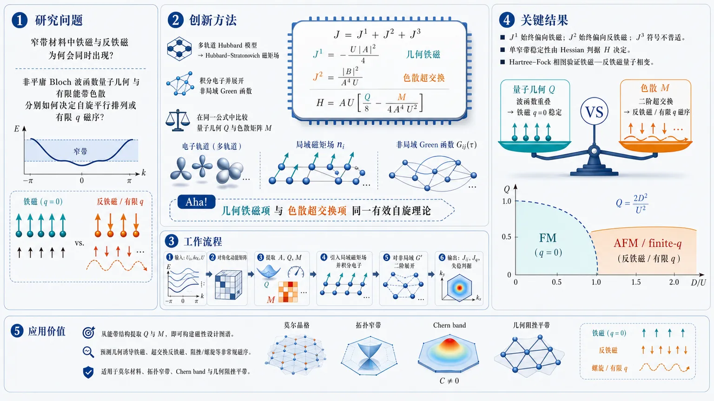
研究问题窄带材料中铁磁与反铁磁为何会同时出现：当半填充窄带既有非平庸 Bloch 波函数量子几何，又有有限能带色散时，究竟是哪一种微观因素决定自旋平行排列，哪一种因素推动反平行或有限波矢磁序。创新方法提出统一有效自旋理论：从多轨道 Hubbard 模型出发，用 Hubbard–Stratonovich 场表示局域磁矩，积分电子后展开非局域 Green 函数，得到显式交换耦合 J=J¹+J²+J³；Aha 点是把量子几何铁磁项 J¹=-U|A|²/4 与色散超交换反铁磁项 J²=|B|²/(A⁴U) 放进同一个公式，并用 Hessian 判据 H=AU[Q/8−M/(4A⁴U²)] 直接比较几何矩阵 Q 与色散矩阵 M。工作流程输入半填充窄带的 Bloch 波函数 Uₖ、窄带色散 δεₖ 与 Hubbard 相互作用 U；先对动能矩阵对角化，提取轨道权重 A、量子几何 Q 和色散矩阵 M；再引入局域磁矩场并积分电子自由度；随后把 Green 函数拆成局域部分与非局域部分，对非局域 G′ 做二阶展开；最终输出实空间自旋交换 Jᵢⱼ、动量空间 J_q，以及铁磁态是否向反铁磁/有限 q 磁序失稳的判据。关键结果量子几何对应的波函数重叠项始终偏向铁磁，有限色散对应的二阶项始终偏向反铁磁，混合项符号不普适；单窄带情况下，铁磁稳定性由 H=AU[Q/8−M/(4A⁴U²)] 决定，Q 占优则 q=0 铁磁稳定，M 占优则出现有限波矢磁序；双层方格 toy model 的 Hartree–Fock 相图验证了铁磁—反铁磁量子相变，解析边界 Q=2D²/U² 与数值相图吻合。应用价值为莫尔材料、拓扑窄带、Chern band、几何阻挫平带等体系提供可计算的磁性设计图谱：只需从能带结构提取 Bloch 波函数量子几何 Q 和色散强度 M，就能判断材料更可能出现几何诱导铁磁、超交换反铁磁，还是阻挫/螺旋等非常规磁序。第一部分：核心概览 (Overview)
该研究建立了窄带体系磁性的统一理论框架，将Hubbard 相互作用、Bloch 波函数量子几何与有限能带色散同时纳入低能自旋模型。核心结论是：非原子化 Bloch 波函数/量子几何倾向于稳定铁磁序，而窄带色散通过类似超交换机制增强反铁磁关联。通过非局域 Green 函数展开，得到显式自旋耦合 (J=J¹⁺J²⁺J³)，并推导铁磁失稳条件
[
Hμν=Amathcal Ułeft[fracQμν8-fracMμν4A⁴mathcal U²i̊ght].
]
该框架把平带铁磁、传统超交换反铁磁和拓扑窄带磁性放入同一语言中，是窄带强关联磁性理论的重要整合与推进。
---
第二部分：结构化快速回顾
《Ferromagnetism vs. Antiferromagnetism in Narrow-Band Systems: Competition Between Quantum Geometry and Band Dispersion》（None，）
背景
窄带体系中的磁性不再只由传统 Hubbard 模型中的 (t²/U) 超交换决定。莫尔材料、几何阻挫晶格和拓扑平带中，能带窄化常来自动能矩阵元的相消干涉，同时伴随非平庸量子几何。传统强耦合图像难以解释为何某些窄带表现出铁磁，而另一些表现出反铁磁。
方法
从多轨道 Hubbard 模型出发，假设费米能附近存在半填充窄带，且窄带带宽 (D<mathcal U)，但原子轨道裸 hopping 不必小于 (mathcal U)。通过 Hubbard–Stratonovich 变换引入局域磁矩场，积分掉电子自由度，再对非局域 Green 函数 (G') 做展开，得到有效自旋作用量。
结果
有效自旋耦合分解为三项：
[
Jₓ_ᵢ,ₓ_ⱼ=J¹ₓ_ᵢ,ₓ_ⱼ+J²ₓ_ᵢ,ₓ_ⱼ+J³ₓ_ᵢ,ₓ_ⱼ.
]
其中 (J¹⁼⁻mathcal U |Aₓ_ᵢ,ₓ_ⱼ|²/4)，总是非正，倾向铁磁；(J²⁼|Bₓ_ᵢ,ₓ_ⱼ|²/(A⁴mathcal U))，总是非负，倾向反铁磁；(J³) 同时依赖波函数和色散，符号非普适。
讨论
铁磁稳定性由量子几何矩阵 (Qμν) 与色散矩阵 (Mμν) 的竞争决定。单窄带情形下，铁磁态 Hessian 为
[
Hμν=Amathcal Ułeft[fracQμν8-fracMμν4A⁴mathcal U²i̊ght].
]
(Q) 主导时铁磁稳定，(M) 主导时出现有限波矢磁序倾向。
局限
分析集中于 SU(2) 对称、半填充窄带、局域 Hubbard 相互作用；Hund 耦合、轨道间密度相互作用、长程 Coulomb 相互作用、高阶多自旋项和有限温度临界行为没有系统展开。有效模型依赖 (G') 展开和 (δϵₘₐₜₕbf ₖ/mathcal U) 小参数。
结论
窄带磁性由两种机制竞争控制：Bloch 波函数非原子性/量子几何产生铁磁关联，能带色散产生反铁磁关联。该理论为解释莫尔材料、拓扑窄带和几何阻挫平带中的可调磁相提供了显微基础。
---
第三部分：逐章节冷凝解析 (Section-by-Section Condensing)
Abstract
Unified problem of narrow-band magnetism
窄带体系中的磁性来自电子关联、量子几何和能带色散三者的共同作用，而铁磁与反铁磁都可能成为不同模型的基态。核心问题是判定二者何时被偏好。摘要直接提出问题：*"Magnetism in narrow-band systems arises from the interplay between electronic correlations, quantum geometry, and band dispersion."* 并强调矛盾现象：*"both ferro and anti-ferro magnets are known to occur as ground states of (different) models featuring narrow bands."*
Effective spin model as the central construction
统一理论框架通过推导有效自旋模型建立，而不是单独依赖传统超交换或理想平带极限。摘要中的关键表述为：*"we present a unified theoretical framework to investigate spin physics within narrow bands."* 以及 *"By deriving an effective spin model"*。该模型面向窄带内部低能自由度，整合波函数结构、能带结构和相互作用。
Quantum geometry favors ferromagnetism
窄带 Bloch 波函数的非原子性或量子几何一般倾向于产生铁磁序。摘要明确给出核心判断：*"the non-atomic wavefunction (quantum geometry) of the narrow bands generally favors ferromagnetic ordering"*。该结论对应后文有效耦合中的 (J¹ₓ_ᵢ,ₓ_ⱼ=-mathcal U|Aₓ_ᵢ,ₓ_ⱼ|²/4)，其非正符号稳定平行自旋排列。
Band dispersion favors antiferromagnetism
有限带宽或色散倾向于产生反铁磁关联。摘要中的对应表述为：*"while band dispersion promotes antiferromagnetic correlations."* 后文将其具体化为 (J²ₓ_ᵢ,ₓ_ⱼ=|Bₓ_ᵢ,ₓ_ⱼ|²/(A⁴mathcal U))，该项非负，在自旋作用量 (S_J=int_τsum J,mathbf nᵢḑotmathbf nⱼ) 中偏好反平行排列。
Competition generates tunable phases
量子几何与色散之间的竞争导致可调磁相和丰富自旋现象。摘要中给出：*"the competition between these effects gives rise to a tunable magnetic phase and rich spin phenomena."* 后文 toy model 的 Hartree–Fock 相图展示了铁磁与反铁磁之间的量子相变，并给出解析边界 (Q=2D²/mathcal U²)。
---
Introduction
Spin physics as a broad condensed-matter theme
自旋物理横跨多类磁性与拓扑磁结构，包括自旋液体、螺旋磁序、skyrmion 和 altermagnetism。引言开头指出：*"Spin physics has long been a central theme in condensed matter research"*，并列举 *"spin liquids"*, *"spiral orders"*, *"skyrmions"*, *"altermagnetism"*。该背景凸显窄带磁性问题不是孤立现象，而属于强关联自旋物理的核心议题。
Conventional Hubbard superexchange gives antiferromagnetism
单轨道 Hubbard 模型中，当在位排斥强于局域 Wannier 轨道之间 hopping 对应的动能时，半填充近邻 hopping 通常导致反铁磁超交换。原文表述为：*"In the single-orbital Hubbard model, strong correlation effects emerge when the on-site repulsion dominates over the kinetic energy set by hopping between localized Wannier orbitals."* 随后给出标准结论：*"At half-filling with dominant nearest-neighbor hopping, this typically results in magnetic ordering via antiferromagnetic superexchange interactions."*
Moiré and frustrated systems offer a distinct route
莫尔体系和几何阻挫晶格展示出不同于传统强耦合 Hubbard 的磁性生成机制。引言指出：*"studies of moiré ... and geometrically frustrated lattices ... have revealed a distinct route to interaction-driven magnetism."* 这些体系的窄带并非简单由小 hopping 产生，而是来自动能矩阵元的精细干涉。
Narrow bands can have small bandwidth despite large atomic hopping
窄带带宽远小于典型原子轨道 hopping 幅度，其平坦性源自动能矩阵元的相消干涉。关键原文为：*"These systems feature narrow bands with bandwidths much smaller than a typical hopping amplitude of an atomic orbital; their flatness is instead a result of subtle destructive interference of the kinetic energy matrix elements."* 因此，传统 (Ugg t) 原子极限并不必然成立。
Quantum geometry and topology are generic in narrow bands
窄带通常携带非平庸量子几何和拓扑特征。引言表述为：*"These narrow bands usually carry nontrivial quantum geometry and topological characteristics"*。这意味着低能电子的 Bloch 波函数结构不能被视作平庸常数，而会显著影响相互作用投影后的磁性。
Flatness enhances interaction effects
窄带平坦性使相互作用效应显著增强。原文指出：*"their flatness makes them particularly susceptible to interaction effects."* 在带宽 (D) 小于相互作用尺度 (mathcal U) 时，低能窄带处于强关联状态，即使底层裸 hopping 可能并不小。
Conventional strong-coupling superexchange is not generally valid
这些窄带体系不属于传统强耦合 regime，因为相互作用并不一定大于裸 hopping。关键句为：*"These systems do not fall within the conventional strong-coupling regime, defined by interactions dominating over bare hopping, thereby invalidating the applicability of the superexchange mechanism."* 传统 (Jsim4t²/U) 不能直接作为普适解释。
Perfect flat bands can host geometry-induced ferromagnetism
理想平带极限中，Bloch 波函数量子几何可以诱导铁磁基态。原文表述为：*"Studies of such flat bands, especially in the idealized perfectly flat-band limit, have uncovered ferromagnetic ground states arising from the quantum geometry of the Bloch wavefunctions."* 这与传统半填充 Hubbard 反铁磁图像形成张力。
A missing unified framework motivates the work
现实材料中，有限色散与非平庸量子几何通常共存，但同时处理二者与相互作用的理论框架缺失。引言给出直接判断：*"In realistic quantum materials, finite band dispersion and nontrivial quantum geometry typically coexist."* 随后指出空缺：*"However, a unified theoretical framework that simultaneously accounts for band dispersion, quantum geometry, and electronic interactions has been lacking."*
Target regime: half-filled narrow bands with (D<mathcal U)
研究对象是费米能附近半填充窄带，具有有限色散和非平庸量子几何。条件为窄带带宽小于相互作用强度，但裸 hopping 不一定小于相互作用。原文写道：*"We investigate systems with half-filled narrow bands near the Fermi energy, characterized by both finite dispersion and nontrivial quantum geometry."* 以及 *"We assume that the bandwidths of narrow bands are smaller than the interaction strength"*，同时强调 *"the bare hopping amplitude between atomic orbitals is not necessarily smaller than the interaction scale."*
Main conceptual result: geometry vs dispersion
低能有效自旋模型揭示：量子几何偏向铁磁，色散偏向反铁磁。引言中的直接结论为：*"Our analysis shows that the quantum geometry tends to favor ferromagnetic order, while band dispersion promotes antiferromagnetic correlations."* 这种竞争产生丰富磁相图，并可估计铁磁—反铁磁转变点。
Relation to Anderson 1959
Anderson 1959 中，Wannier 轨道 hopping 产生反铁磁超交换，原子 Wannier 轨道有限空间延展产生铁磁 direct exchange。引言概括为：*"Ref. Anderson (1959) showed that hopping between Wannier orbitals generates antiferromagnetic superexchange couplings, while the finite spatial extent of atomic Wannier orbitals gives rise to a ferromagnetic coupling."*
Difference from Anderson: Bloch wavefunction structure
该理论从局域 Wannier 轨道与局域 Hubbard 相互作用出发，直接交换在模型层面已被忽略；新增物理来自 Wannier 到 band basis 转换后的 Bloch 波函数结构。原文强调：*"However, Ref. Anderson (1959) did not fully address the role of the Bloch-wavefunction structure."* 并解释来源：*"This structure arises from the hybridization among Wannier orbitals when transforming from the Wannier-orbital basis to the band basis."*
Applicability to topological narrow bands
拓扑非平庸窄带可能不存在单一局域 Wannier 轨道表示，因此超出 Anderson 传统框架。原文指出：*"our framework can be applied to topologically nontrivial systems, where the narrow bands near the Fermi energy do not admit a single localized Wannier-orbital representation."* 这说明框架覆盖拓扑平带、莫尔 Chern band 等传统局域轨道图像难以处理的体系。
---
Multi-orbital Hubbard model with narrow bands
Starting Hamiltonian
基础模型是多轨道 Hubbard Hamiltonian：
[
H=H₀₊H_U,
]
其中 (H₀) 为动能项，(H_U) 为轨道内在位 Hubbard 相互作用。原文定义为：*"We start from a multi-orbital model with the following Hamiltonian (H=H₀₊H_U)"*。电子产生算符 (c^daggerₘₐₜₕbf ₖ,ₐ,σ) 携带动量 (mathbf k)、flavor/sublattice 指标 (a=1,dots,nₛᵤb) 和自旋 (σ)。
Kinetic matrix and local interaction
动能由短程实空间 hopping 产生的矩阵 (tₐb(mathbf k)) 描述，相互作用为 flavor 内局域 Hubbard 排斥 (mathcal Uₐ)。原文说明：*" (tₐb(k)) characterizes the kinetic term arising from short-range real-space hopping, and (Uₐ) denotes the on-site Hubbard interaction."*
Neglect of Hund’s coupling is physically motivated
不同 flavor 的电子位于单位胞内不同位置，因此 Hund 型耦合较弱。原文解释：*"we focus on the case where electrons of different flavors are located at different positions within the unit cell, implying a weak Hund’s-type coupling"*。Hund 耦合通常发生在同一位置不同原子轨道之间，此处不是主要磁关联来源。
Inter-flavor density interactions are absorbed at Hartree–Fock level
轨道间密度—密度相互作用可在 Hartree–Fock 水平处理并吸收到动能项中，对目标磁关联较不相关。原文表述为：*"density–density interactions between electrons of different flavors ... can be treated at the Hartree–Fock level, absorbed into the kinetic term, and are less relevant to the magnetic correlations of interest here."*
Low-energy assumption: narrow bands near Fermi energy
费米能附近形成窄带，其带宽小于相互作用尺度 (mathcal U=meanₐ,mathcal Uₐ)。原文为：*"We assume the system develops narrow bands near the Fermi energy, with a bandwidth smaller than the interaction scale characterized by (mathcal U=meanₐ,mathcal Uₐ)."* 这是局域磁矩形成和低能投影的前提。
Remote bands can exist but are not low-energy degrees of freedom
体系可含远离费米能的其他能带，总带宽 (Dₜₒₜ) 可远大于窄带带宽 (D)，甚至大于 (mathcal U)。但假设 (mathcal U<Dₜₒₜ)，只有窄带参与低能物理。原文指出：*"Other bands beyond the narrow bands may also exist in the system, contributing to a total bandwidth (Dₜₒₜ) that can be much larger than (D)."* 并规定：*"only the narrow bands serve as the relevant low-energy degrees of freedom."*
---
Non-interacting band structures
Diagonalization separates dispersion and Bloch wavefunctions
动能矩阵 (tₘₐₜₕbf ₖ,ₐb) 被对角化为能量本征值 (ϵₘₐₜₕbf ₖ,ₙ) 和本征矢 (Uₘₐₜₕbf ₖ,ₐₙ)。原文明确：*"The hopping matrix (tₖ,ₐb) in momentum space can be diagonalized into its eigenvalues (ϵₖ,ₙ) and eigenvectors (Uₖ,ₐₙ), which represent the band dispersion and Bloch wavefunctions, respectively."* 本征方程为：
[
sum_b tₘₐₜₕbf ₖ,ₐbUₘₐₜₕbf ₖ,bₙ=ϵₘₐₜₕbf ₖ,ₙUₘₐₜₕbf ₖ,ₐₙ.
]
Narrow-band energy decomposition
关注费米能附近 (n=1,dots,nfₗₐₜ) 的窄带，并将能量写为平均能量加偏差：
[
ϵₘₐₜₕbf ₖ,ₙ=ϵ₀₊δϵₘₐₜₕbf ₖ,ₙ.
]
原文定义：*"The dispersion of these bands is written as (ϵₖ,ₙ=ϵ₀+δϵₖ,ₙ)"*。平均能量 (ϵ₀) 被设定为费米能。
Half filling fixed by (ϵ₀₌₀)
平均窄带能量与费米能重合，设为 (ϵ₀₌₀)，窄带半填充。原文写道：*"We assume that the average energy coincides with the Fermi level ((ϵ₀=0)), so that the narrow bands lie at the Fermi energy and are half-filled."*
Orbital weight (Aₐ)
flavor (a) 在窄带中的权重定义为：
[
Aₐ₌frac1Nsumₙ₌₁ⁿfₗₐₜsumₘₐₜₕbf ₖ|Uₘₐₜₕbf ₖ,ₐₙ|².
]
原文说明：*"The orbital weight of (a)-th electrons in the narrow bands is defined as (Aₐ₌...)"*。该量进入局域磁矩形成温度 (Tc,ₐ=Aₐ²mathcal Uₐ/4)，并决定低温局域磁矩大小。
Quantum geometry tensor (Qμν,ₙ)
量子几何由 Bloch 波函数动量导数和垂直投影构成：
[
Qμν,ₙ=frac1Nsumμ,ₘₐₜₕbf ₖ,ₐb
partialₖ^μU^*ₘₐₜₕbf ₖ,ₐₙ
(δₐb-Uₘₐₜₕbf ₖ,ₐₙU^*ₘₐₜₕbf ₖ,bₙ)
partialₖ^νUₘₐₜₕbf ₖ,bₙ.
]
原文定义后直接解释：*"(Qμν,ₙ) is the quantum geometry of the (n)-th band."* 它度量 Bloch 波函数随动量变化的非平庸结构。
Dispersion matrix (Mμν,ₙ)
色散矩阵定义为：
[
Mμν,ₙ=frac1Nsumₘₐₜₕbf ₖ
partialₖ^μ(δϵₘₐₜₕbf ₖ,ₙ)
partialₖ^ν(δϵₘₐₜₕbf ₖ,ₙ).
]
原文解释：*"(Mμν,ₙ) reflects the band dispersion."* 由于 (partialₖ^μδϵ) 是 Fermi velocity，原文进一步指出：*"Since (partialₖμ(δϵₖ,ₙ)) measures the Fermi velocity, (Mμν,ₙ) quantifies the degree of band dispersiveness."*
(Q) and (M) jointly characterize magnetic correlations
量子几何与色散是后续磁性判据的核心变量。原文预告：*"these two quantities together can be used to characterize the magnetic correlations of the system."* 后文 Hessian 公式中二者以相反符号出现：(Q/8) 稳定铁磁，(-M/(4A⁴mathcal U²⁾) 破坏铁磁。
---
Effective spin model
Hubbard–Stratonovich magnetic field
通过 Hubbard–Stratonovich 变换引入辅助 bosonic field (φ^μₘₐₜₕbf R,ₐ)，表示 flavor (a)、单位胞 (mathbf R) 上电子磁矩的 (μ=x,y,z) 分量。原文写道：*"We perform a Hubbard–Stratonovich transformation, introducing an auxiliary bosonic field (φR,ₐμ) that characterizes the (μinx,y,z) component of the magnetic moment."*
Local moment amplitude and direction separated
磁矩场分解为幅度与方向：
[
φ^μₘₐₜₕbf R,ₐ_ᵢ=φ₀,ₐ_ᵢn^μₘₐₜₕbf R,ₐ_ᵢ.
]
原文解释：*"(φ₀,ₐ_ᵢ) denotes the size of the local moment, and (n^μₘₐₜₕbf R,ₐ_ᵢ) is a unit vector that describes the direction of the local moment and characterizes the magnetic order."*
Electron integration gives exact spin-field action
积分掉电子场后得到自旋场有效作用量：
[
-Trłogłeft[G⁻¹+frac12β
sum_μ mathcal Uₐ_ᵢφ^μₓ_ᵢσ^μδₓ_ᵢ,ₓ_ⱼi̊ght].
]
原文强调：*"At this step, the action of the spin fields is exact without any approximations."* 因而近似只在后续非局域展开中引入。
Green’s function definition
非相互作用 Green 函数定义为：
[
Gₓ_ᵢ,ₓ_ⱼ(τ)
=-frac12sum_σ
łangle T_τ cₓ_ᵢ,σ(τ)c^daggerₓ_ⱼ,σ(0)ångleH_₀,
]
其中 (xᵢ₌₍mathbf Rᵢ,aᵢ₎)。该定义对应原文：*" (G) is the non-interacting Green’s function of the electrons defined as..."*
Local and nonlocal decomposition
Green 函数分解为局域部分与非局域部分：
[
Gₓ_ᵢ,ₓ_ⱼ(τ)=
δₓ_ᵢ,ₓ_ⱼGₗₒc,ₐ_ᵢ(τ)
+(1-δₓ_ᵢ,ₓ_ⱼ)G'ₓ_ᵢ,ₓ_ⱼ(τ).
]
原文解释：*"The local component captures the on-site electronic properties, while the non-local component describes correlations between electrons of different ((mathbf R,a)) indices."* 非局域部分诱导磁有序：*"the non-local component induces non-local magnetic correlations that govern the magnetic ordering of the system."*
Expansion in nonlocal Green’s function
将 (G') 当作微扰展开，类似梯度展开。原文写道：*"We treat the non-local Green’s function (G') as a perturbation and perform an expansion."* 并说明物理图像：*"This approach is conceptually similar to a gradient expansion, where spatial correlations are systematically incorporated through gradient terms."*
Zeroth order gives local moment formation
零阶作用量为：
[
Sφ_₀=sumₐ
łeft[
fracmathcal Uₐ4φ₀,ₐ²
-łogłeft(4o̧sh(mathcal UₐAₐφ₀,ₐ/2)i̊ght)
i̊ght].
]
原文称：*"At zeroth order in (G'), the effective action is local (atomic)."* 鞍点给出局域磁矩形成临界温度：
[
Tc,ₐ=Aₐ²mathcal Uₐ/4.
]
Equivalent-flavor critical scale
当所有 flavor 等价，即 (mathcal Uₐ₌mathcal U)、(Aₐ₌A)，临界温度为：
[
T_c=A²mathcal U/4.
]
原文明确：*"In the case where all flavors of electrons are equivalent with (mathcal Uₐ₌mathcal U) and (Aₐ₌A), we have (T_c=A²mathcal U/4)."* 这不是长程磁序温度，而是局域磁矩形成尺度。
Low-temperature local moment size
低温极限 (T→0) 下，局域磁矩大小为 (φ₀,ₐ=A)。原文写道：*"At low-temperature limit (Ti̊ghtarrow 0), electrons form local moments with size (φ₀,ₐ=A)."*
Berry phase term appears at zeroth order
零阶除局域幅度项外，还产生传统自旋 Berry phase。原文指出：*"at zeroth-order, there is also a Berry phase term, (S_B), that emerges for the spin fields (n^μₘₐₜₕbf R,ₐ), taking the formula of the conventional Berry phase term of spin operators."* 这保证有效理论具有量子自旋动力学结构。
First-order nonlocal term vanishes
(G') 的一阶贡献恒为零。原文简洁表述：*"The contribution from the first-order term in (G') always vanishes."* 因此最低阶非局域磁关联来自二阶项。
Second order generates spin-spin interaction
二阶非局域展开给出有效自旋—自旋相互作用：
[
S_J=int_τsumₓ_ᵢ,ₓ_ⱼ
Jₓ_ᵢ,ₓ_ⱼmathbf nₓ_ᵢḑotmathbf nₓ_ⱼ.
]
原文写道：*"The second-order term leads to an effective spin-spin interaction."* 该项是判断铁磁、反铁磁和非共线磁序的基础。
General expression for (Jₓ_ᵢ,ₓ_ⱼ)
自旋耦合由非局域 Green 函数生成，包含 Matsubara 频率求和和局域重整化分母。原文说明：*"The effective spin-spin coupling is generated by the non-local Green’s function (G')"*。一般表达式允许特定材料直接计算：*"For a given system, one could directly evaluate ... to extract the spin-spin correlations."*
Higher-order terms produce multi-spin interactions
(G') 高阶展开产生多自旋项，如 (nₘₐₜₕbf R,ᵢ^μ nₘₐₜₕbf R',ⱼ^ν nₘₐₜₕbf R'',ₙ^δḑots)。原文指出：*"Higher-order terms in (G') give rise to multi-spin interactions"*，并判断：*"These terms are expected to be less relevant due to their higher-order nature."*
Final effective action combines Berry phase and exchange
有效低能自旋理论由 Berry phase 与 spin-spin interaction 组成。原文总结：*"By combining the Berry phase term (S_B) with the spin-spin interaction term (S_J), we obtain an effective action that captures the magnetic correlations of the system."*
Expansion in (δϵₘₐₜₕbf ₖ,ₙ/mathcal U)
为突出色散和波函数结构的作用，假设 flavor 等价且 (δϵₘₐₜₕbf ₖ,ₙłlmathcal U)，对 (δϵ/mathcal U) 展开。原文说明：*"Given that the narrow-band dispersion (δϵₖ,ₙ) is much smaller than the interaction strength (mathcal U), we expand the expression in powers of (δϵₖ,ₙ/mathcal U)."*
Main result: three-part exchange coupling
有效耦合分为：
[
Jₓ_ᵢ,ₓ_ⱼ=J¹ₓ_ᵢ,ₓ_ⱼ+J²ₓ_ᵢ,ₓ_ⱼ+J³ₓ_ᵢ,ₓ_ⱼ,
]
其中
[
J¹ₓ_ᵢ,ₓ_ⱼ=-fracmathcal U4|Aₓ_ᵢ,ₓ_ⱼ|²,
]
[
J²ₓ_ᵢ,ₓ_ⱼ=frac1A⁴mathcal U|Bₓ_ᵢ,ₓ_ⱼ|²,
]
[
J³ₓ_ᵢ,ₓ_ⱼ=frac12A⁵mathcal U[ḑots].
]
原文强调：*"Eq. ... is the main result of this work."*
Definitions of (A), (B), and (C)
三个矩阵元分别是波函数重叠、一次色散加权重叠、二次色散加权重叠：
[
Aₓ_ᵢ,ₓ_ⱼ=sumₘₐₜₕbf ₖ,ₙ
Uₘₐₜₕbf ₖ,ₐ_ᵢₙU^*ₘₐₜₕbf ₖ,ₐ_ⱼₙ
frac{eⁱmathbf kḑot⁽mathbf Rᵢ₋mathbf Rⱼ₊mathbf rₐ_ᵢ⁻mathbf rₐ_ⱼ⁾}N,
]
[
Bₓ_ᵢ,ₓ_ⱼ=sumₘₐₜₕbf ₖ,ₙ
δϵₘₐₜₕbf ₖ,ₙ
Uₘₐₜₕbf ₖ,ₐ_ᵢₙU^*ₘₐₜₕbf ₖ,ₐ_ⱼₙ
fraceⁱmathbf kḑot⁽ḑots⁾N,
]
[
Cₓ_ᵢ,ₓ_ⱼ=sumₘₐₜₕbf ₖ,ₙ
(δϵₘₐₜₕbf ₖ,ₙ)²
Uₘₐₜₕbf ₖ,ₐ_ᵢₙU^*ₘₐₜₕbf ₖ,ₐ_ⱼₙ
fraceⁱmathbf kḑot⁽ḑots⁾N.
]
截断误差为：*"we have dropped the high-order terms, which are at the order of (O(mathcal U(|δϵₘₐₜₕbf ₖ,ₙ|/mathcal U)³⁾)."*
---
Magnetic correlations
(J¹) is ferromagnetic and wavefunction-only
第一项 (J¹ₓ_ᵢ,ₓ_ⱼ) 非正，因此偏好铁磁。原文明确：*"The first term, (J¹ₓ_ᵢ,ₓ_ⱼ), is non-positive and therefore favors ferromagnetic order."* 更关键的是，该项只依赖窄带波函数结构：*"Importantly, this term depends solely on the wavefunction structure of the narrow bands."*
Perfect flat band leaves only (J¹)
当 (δϵₘₐₜₕbf ₖ,ₙ=0) 且量子几何有限时，(J¹) 是唯一非零贡献。原文写道：*"In the limit of a perfectly flat band (i.e., (δϵₖ,ₙ=0)) with finite quantum geometry ... (J¹ₓ_ᵢ,ₓ_ⱼ) is the only non-vanishing contribution."* 因此理想平带半填充时自然产生铁磁基态。
Flat-band ferromagnetism is recovered
该结果与既有平带铁磁研究一致。原文指出：*"Consequently, the system develops a ferromagnetic ground state at low temperatures, consistent with previous studies of flat-band ferromagnetism in the half-filled case."* 这说明新框架包含已知平带铁磁作为极限。
(J²) is antiferromagnetic and dispersion-driven
第二项 (J²ₓ_ᵢ,ₓ_ⱼ) 非负，因此偏好反铁磁。原文表述：*"The second term, (J²ₓ_ᵢ,ₓ_ⱼ), is always non-negative and thus favors antiferromagnetic ordering."* 它由 (Bₓ_ᵢ,ₓ_ⱼ) 控制，后者含 (δϵₘₐₜₕbf ₖ,ₙ)，因此是色散驱动项。
Single-orbital trivial limit recovers superexchange
单原子轨道、平庸波函数 (Uₘₐₜₕbf ₖ,₍ₐ₌₁,ₙ₌₁₎=1)、有限带宽时，(J²) 化为传统 (t²/U) 超交换。原文写道：*"In the case of a system with a single atomic orbital and a trivial wavefunction, i.e., (Uₖ,₍ₐ₌₁,ₙ₌₁₎=1), and finite bandwidth, this term reduces to the conventional superexchange interaction proportional to (t²/U)."*
Multiband case: dispersion rather than bare hopping matters
多带窄带体系中，反铁磁项与低能 band dispersion 相关，而不是直接与原子裸 hopping 相关。原文强调：*"in a more generic multiband system, this term is related to the band dispersion rather than to the bare hopping amplitudes themselves."* 这点区分了窄带干涉平坦化体系和传统 Hubbard 原子极限。
(J³) is mixed and non-universal
第三项同时依赖波函数结构和色散，符号与大小非普适。原文表述：*"The third term, (J³ₓ_ᵢ,ₓ_ⱼ), depends on both the band dispersion and wavefunction structure."* 并指出：*"Its sign and magnitude are generally non-universal and can favor either ferromagnetism or antiferromagnetism, depending on the specific parameters."*
General magnetic principle
总原则是：非原子化窄带波函数稳定铁磁，色散破坏铁磁并增强反铁磁关联。原文总结为：*"the non-atomic wavefunction of the narrow bands tends to stabilize ferromagnetism, while the dispersion of the system tends to destroy the ferromagnetism by enhancing the antiferromagnetic correlation."*
Frustration and exotic orders
当 (J¹,J²,J³) 同时存在且竞争时，可能产生磁阻挫和非常规磁序。原文指出：*"For a generic system with both a non-atomic wavefunction and finite dispersion, the competition among (J¹), (J²), and (J³) may lead to magnetic frustration and stabilize exotic magnetic orders."*
---
Competition between quantum geometry and band dispersion
Classical spin energy in momentum space
将自旋看作经典矢量时，能量密度为：
[
E/N=sumₘₐₜₕbf q
Jₘₐₜₕbf q,ₐbmathbf n₋ₘₐₜₕbf q,ₐḑotmathbf nₘₐₜₕbf q,b.
]
原文写道：*"by treating the spin as classical spin, the energy of a given spin configuration ... is (E/N=...)"*。该形式把磁有序波矢问题转化为 (Jₘₐₜₕbf q) 的本征值最小化问题。
Magnetic wavevector from lowest eigenvalue
每个动量 (mathbf q) 下 (Jₘₐₜₕbf q,ₐb) 的最低本征值记为 (Eₘₐₜₕbf q,ₗₒwₑₛₜ)，磁波矢由使其最小的 (mathbf q) 决定。原文说明：*"The magnetic wavevector is then determined by the value of (mathbf q) that minimizes (Eₘₐₜₕbf q,ₗₒwₑₛₜ)."*
Start from perfect-flat-band ferromagnet
竞争分析从 (δϵₘₐₜₕbf ₖ,ₙ=0) 的理想平带极限开始，此时 (mathbf q=0) 铁磁态稳定。原文写道：*"we begin from the perfect-flat-band limit ((δϵₖ,ₙ=0)), where a ferromagnetic state with (mathbf q=0) is stabilized."*
Hessian diagnoses ferromagnetic instability
逐渐引入色散后，通过 (mathbf q=0) 处 Hessian 判断铁磁态是否稳定：
[
Hμν=frac12
partialq_μpartialq_ν
Eₘₐₜₕbf q,ₗₒwₑₛₜbig|ₘₐₜₕbf q₌₀.
]
原文说明：*"we then gradually introduce dispersion and examine the stability of this ferromagnetic state by evaluating the Hessian matrix."*
Negative Hessian eigenvalue means finite-(mathbf q) order
如果 Hessian 有负本征值，(mathbf q=0) 不再是能量极小点，铁磁态向非零波矢反铁磁或调制磁序失稳。原文明确：*"If the Hessian matrix (Hμν) possesses negative eigenvalues, it indicates that (mathbf q=0) no longer minimizes (Eₘₐₜₕbf q,ₗₒwₑₛₜ), signaling an instability of the ferromagnetic state toward a nonzero-(mathbf q) (antiferromagnetic) ordering."*
Single-band equivalent-flavor result
在单窄带、所有 flavor 等价条件下，Hessian 为：
[
Hμν
=Amathcal U
łeft[
fracQμν,ₙ₌₁8
-fracMμν,ₙ₌₁4A⁴mathcal U²
i̊ght].
]
原文给出：*"Under this condition, (Hμν) takes the form of ... where (Qμν,ₙ) and (Mμν,ₙ) characterize the quantum geometry and band dispersion, respectively."*
Both (Q) and (M) are positive semidefinite but enter with opposite signs
(Qμν) 和 (Mμν) 都是半正定矩阵，但 (Q) 项正向稳定铁磁，(M) 项负向破坏铁磁。原文指出：*"both (Qμν,ₙ₌₁) and (Mμν,ₙ₌₁) are positive semi-definite matrices."* 随后给出判据：*"when the quantum geometric contribution dominates, the ferromagnetic state remains stable."* 以及 *"if the dispersion term outweighs the geometric contribution, the ferromagnetic state becomes unstable."*
Finite-wavevector order as dispersion-dominated outcome
当色散项超过量子几何项时，体系趋向有限波矢磁序。原文总结：*"the system tends to develop magnetic order at a finite wavevector."* 在二分晶格或简单情形下，这对应反铁磁；在更复杂格点/多 flavor 情况下，也可能是螺旋、非共线或阻挫磁序。
---
Toy model
Bilayer square lattice model
toy model 定义在双层方格晶格上，动能 Hamiltonian 为：
[
H₀₌sumₛ,ₘₐₜₕbf ₖ
beginbmatrix
c^daggerₘₐₜₕbf ₖ,₊,σ&c^daggerₘₐₜₕbf ₖ,₋,σ
endbmatrix
beginbmatrix
ϵₘₐₜₕbf ₖ-μ&veⁱαₘₐₜₕbf ₖ
ve⁻ⁱαₘₐₜₕbf ₖ&ϵₘₐₜₕbf ₖ-μ
endbmatrix
beginbmatrix
cₘₐₜₕbf ₖ,₊,σ
cₘₐₜₕbf ₖ,₋,σ
endbmatrix.
]
原文说明：*"we consider the following toy model defined on a bilayer square lattice"*。
Dispersion and phase texture
模型参数为：
[
ϵₘₐₜₕbf ₖ=-2t(o̧s kₓ₊ₒ̧s k_y),
]
[
αₘₐₜₕbf ₖ=ζ(o̧s kₓ₊ₒ̧s k_y).
]
原文直接定义：*"with (ϵₖ=-2t(o̧s(kₓ₎₊ₒ̧s(k_y)), αₖ=ζ(o̧s(kₓ₎₊ₒ̧s(k_y)))."* 其中 (t) 控制色散，(ζ) 控制层间 hybridization 相位随动量变化，即波函数量子几何。
Hierarchy of scales
取极限：
[
v=-μgg Ugg t>0.
]
原文写道：*"We take the limit of (v=-μgg Ugg t>0)."* 这保证窄带与远程带之间存在大能隙，同时窄带内部相互作用强于带宽。
Narrow-band bandwidth and remote-band gap
窄带带宽为：
[
D=8t.
]
窄带与远程高能带之间能隙为 (|v|)。原文给出：*"The bandwidth of narrowband is (D=8t)."* 以及 *"The gap between the narrow band near the Fermi energy and the remote band (high energy band) is (|v|)."*
Analytic (M) and (Q)
费米能附近窄带的色散矩阵和量子几何为：
[
Mμν,ₙ₌₁=δμ,ν2t²,
]
[
Qμν,ₙ₌₁=δμ,νζ²/8.
]
原文直接给出：*"The narrow band near the Fermi energy has (Mμν,ₙ₌₁=δμ,ν2t²) and quantum geometry (Qμν,ₙ₌₁=δμ,νζ²/8)."*
Independent tuning of dispersion and geometry
(t) 和 (ζ) 分别独立调控色散与量子几何。原文说明：*"We can tune the dispersion and quantum geometry of the system individually by tuning (t) and (ζ)."* 这使 toy model 成为检验理论竞争机制的理想平台。
Representative band structure parameters
典型能带结构使用：
[
t=1,quad ζ=1,quad v=-μ=10.
]
原文表述：*"A typical band structure has been shown in Fig. 1 ((t=1,ζ=1,v=-μ=10))."*
Hartree–Fock calculation
对电子模型 (H₀₊H_U) 做 Hartree–Fock 计算，并设两层相互作用相同：
[
mathcal U₁₌mathcal U₂₌mathcal U.
]
原文写道：*"We perform Hartree-Fock calculation for the electronic model (H₀₊H_U) with (mathcal U₁₌mathcal U₂₌mathcal U)."*
Phase diagram variables
通过独立调节窄带带宽 (D) 与总量子几何：
[
Q=sum_μ Qμμ,ₙ₌₁
]
探索相图。原文说明：*"We explore the phase diagram by independently tuning the bandwidth of the flat band ((D)) and the quantum geometric contribution (Q=sum_μ Qμμ,ₙ₌₁)."*
Ferromagnetic–antiferromagnetic quantum phase transition
Hartree–Fock 相图显示铁磁与反铁磁之间存在量子相变。原文明确：*"We observe a quantum phase transition between antiferromagnetic and ferromagnetic phases."* 图 2 中粉色表示反铁磁、蓝色表示铁磁：*"pink denotes the antiferromagnetic phase and blue denotes the ferromagnetic phase."*
Analytical phase boundary
由 Hessian 分析得到相边界：
[
Q=2D²/mathcal U².
]
原文写道：*"The phase boundary predicted by the Hessian analysis (Eq. 13) is given by (Q=2D²/mathcal U²), and is shown as the red curve in Fig. 2."* 解析预测与数值结果一致：*"this analytical prediction agrees well with the numerically determined phase boundary."*
---
Summary
Unified framework for narrow-band magnetism
总结部分强调统一框架同时纳入能带色散和量子几何。原文写道：*"we have investigated the magnetic properties of narrow-band systems by developing a unified theoretical framework that incorporates the effects of both band dispersion and quantum geometry."*
Regime: SU(2), half filling, Hubbard interactions, (D<mathcal U)
适用范围为 SU(2) 对称、半填充窄带、Hubbard 相互作用，且相互作用强度超过窄带带宽。原文说明：*"We focus on the regime of SU(2)-symmetric, half-filled narrow bands subject to Hubbard interactions, with the interaction strength exceeding the bandwidth of the narrow bands."*
Nonlocal Green’s-function expansion and two-body truncation
有效自旋模型来自非局域 Green 函数展开，并截断到双自旋相互作用。原文表述：*"By expanding in powers of the nonlocal Green’s function and truncating the result to two-body spin-spin interactions, we derive an effective spin model."*
Essential competition
核心物理为量子几何促进铁磁，色散促进反铁磁。原文总结：*"Our analysis uncovers a fundamental competition: the quantum geometry of the bands tends to favor ferromagnetic ordering, whereas the band dispersion promotes antiferromagnetic correlations."*
Analytical expressions connect microscopic bands to magnetism
显式自旋耦合以 Bloch 波函数和能带色散表示。原文指出：*"we derive analytical expressions for the spin-spin interactions in terms of the Bloch wavefunctions and band dispersions."* 这使微观 band structure 可直接映射到磁耦合。
Foundation for quantum materials
该框架为从显微角度理解量子材料磁性提供基础。原文结尾为：*"This work provides a foundation for understanding magnetic behavior in quantum materials from microscopic considerations."*
---
Acknowledgements
Funding sources and collaboration network
资助来源包括 Gordon and Betty Moore Foundation、ONR、Simons Investigator Grant、NSF-MERSEC、Simons Collaboration on New Frontiers in Superconductivity、Schmidt Foundation、ERC Horizon 2020 等。原文列出：*"B.A.B. and H.H. were supported by the Gordon and Betty Moore Foundation through Grant No. GBMF8685..."* 以及 *"H.H. acknowledges support from European Research Council (ERC) under the European Union’s Horizon 2020 research and innovation program..."*。这些信息说明研究依托 Princeton、Minnesota、Rutgers 等理论凝聚态网络。
---
第四部分：深度理解与语言支持 (Understanding & Nuance)
1. 术语解析
Narrow-band systems
Narrow-band systems 指费米能附近存在带宽很小的能带体系。这里的“窄”不是简单等同于原子 hopping 小，而是低能带宽 (D) 小于相互作用 (mathcal U)。关键语境为 *"bandwidths much smaller than a typical hopping amplitude of an atomic orbital"*。微妙点：窄带可由干涉产生，裸 hopping 仍可能很大，因此传统 (Ugg t) 强耦合展开不一定成立。
Quantum geometry
Quantum geometry 指 Bloch 波函数在动量空间中的变化结构，通常包含 quantum metric 和 Berry curvature 相关信息。这里用 (Qμν) 表示，其投影形式排除了纯规范相位变化。语境为 *"(Qμν,ₙ) is the quantum geometry of the (n)-th band."* 微妙点：它不是能量色散，而是波函数“形状”随 (mathbf k) 的变化；即使完全平带 (δϵ=0)，(Q) 仍可非零并驱动铁磁。
Non-atomic wavefunction
Non-atomic wavefunction 指 Bloch 态不是简单局域原子轨道的 Fourier 变换，而包含多轨道 hybridization、动量依赖层/亚晶格成分、拓扑缠绕等。语境为 *"the non-atomic wavefunction (quantum geometry) of the narrow bands generally favors ferromagnetic ordering."* 微妙点：它不是 Anderson direct exchange 中原子 Wannier 轨道空间延展导致的铁磁，而是 band basis 中 Bloch 波函数结构导致的相互作用投影效应。
Band dispersion
Band dispersion 指 (ϵₘₐₜₕbf ₖ) 随动量变化。这里通过 (Mμνsimsumₘₐₜₕbf ₖpartialₖ^μϵ,partialₖ^νϵ) 度量。语境为 *"(Mμν,ₙ) reflects the band dispersion."* 微妙点：多带窄带体系中，反铁磁项受低能窄带色散控制，而不是简单受原子裸 hopping 控制。
Superexchange
Superexchange 是半填充 Hubbard 模型中由虚 hopping 过程产生的反铁磁交换，典型尺度 (t²/U)。语境为 *"this term reduces to the conventional superexchange interaction proportional to (t²/U)."* 微妙点：该机制在单轨道平庸波函数极限恢复，但在非平庸窄带中只是 (J²) 的特例。
---
2. 疑难查证
为什么量子几何会促进铁磁？
直观上，完全平带没有动能损失，电子的相互作用投影到窄带后主要由 Bloch 波函数重叠决定。由于 Hubbard 相互作用惩罚同一局域 flavor 上的双占据，平行自旋因 Pauli 原理天然减少局域双占据概率。非原子 Bloch 波函数在不同动量和 flavor 之间形成非平庸重叠，使这种“交换式”铁磁能量降低表现为
[
J¹ₓ_ᵢ,ₓ_ⱼ=-fracmathcal U4|Aₓ_ᵢ,ₓ_ⱼ|².
]
负号意味着在 (S_J=sum J,mathbf nᵢḑotmathbf nⱼ) 中，(mathbf nᵢḑotmathbf nⱼ₌₁) 的平行排列降低能量。关键不是传统 direct exchange，而是窄带投影后的波函数几何重叠。
为什么色散会促进反铁磁？
有限色散允许电子通过虚跃迁降低动能。半填充时，如果相邻局域磁矩反平行，电子更容易进行虚 hopping 并获得二阶能量降低；平行自旋则受 Pauli 阻碍。这就是传统超交换的物理核心。在窄带语言中，该效应成为
[
J²ₓ_ᵢ,ₓ_ⱼ=frac1A⁴mathcal U|Bₓ_ᵢ,ₓ_ⱼ|²ge0.
]
正号意味着反平行排列 (mathbf nᵢḑotmathbf nⱼ₌₋₁) 更有利。因此色散越强，反铁磁倾向越强。
为什么 (Q) 与 (M) 在 Hessian 中符号相反？
铁磁态对应 (mathbf q=0)。若小的有限 (mathbf q) 自旋扭曲提高能量，铁磁稳定；若降低能量，铁磁失稳。Hessian
[
Hμν=Amathcal U
łeft[
fracQμν8
-fracMμν4A⁴mathcal U²
i̊ght]
]
就是小 (mathbf q) 扭曲的刚度。(Q) 项为正，表示 Bloch 波函数几何给铁磁态提供正刚度；(M) 项为负，表示色散诱导的反铁磁超交换倾向降低有限 (mathbf q) 态能量。临界点由两者平衡决定。
为什么不是所有窄带都铁磁？
理想平带且量子几何非平庸时，(J¹) 主导，铁磁自然出现。但现实窄带总有有限带宽，且 (J²) 随色散增强。当 (M/(A⁴mathcal U²⁾) 超过 (Q) 的稳定作用时，铁磁被破坏。toy model 中边界
[
Q=2D²/mathcal U²
]
清楚说明：带宽 (D) 越大，需要越强量子几何 (Q) 才能维持铁磁。
---
第五部分：创新评估与关联 (Synthesis & Novelty)
1. 创新性判断
从“平带铁磁”推进到“有限色散窄带磁性”
过去 2–5 年大量工作集中在莫尔平带、Chern band、ideal quantum geometry、flat-band ferromagnetism 等问题，常在理想平带或近似平带中强调量子几何诱导铁磁。该研究把问题推进到现实材料更普遍的情形：有限色散与非平庸量子几何共存。核心新意不是再次证明平带铁磁，而是定量回答：有限带宽多大时会摧毁几何铁磁。
统一传统超交换与几何铁磁
传统 Hubbard 强耦合理论给出反铁磁 (t²/U)，平带几何理论给出铁磁。二者此前常被放在不同理论语言中。该框架把二者统一为同一有效自旋耦合的不同项：
[
J¹⁼⁻fracmathcal U4|A|²,quad
J²⁼frac1A⁴mathcal U|B|².
]
这解决了“为什么某些窄带铁磁、另一些窄带反铁磁”的机制判别问题。
提出量子几何—色散竞争判据
最具操作性的创新是 Hessian 判据：
[
Hμν=Amathcal U
łeft[
fracQμν8
-fracMμν4A⁴mathcal U²
i̊ght].
]
它把磁相稳定性直接连接到可由 band structure 计算的两个矩阵 (Qμν) 与 (Mμν)。这使窄带磁性判断从定性讨论转化为半定量或定量预测。
适用于拓扑窄带和无局域 Wannier 表示体系
传统 Anderson 超交换依赖局域 Wannier 轨道图像，而拓扑窄带可能不存在单一局域 Wannier 表示。该框架从 Bloch 波函数和 band dispersion 出发，因此可用于 Chern band、拓扑莫尔带等体系。这是相对传统强耦合展开的重要扩展。
明确区分 direct exchange 与 Bloch-wavefunction-induced ferromagnetism
Anderson 1959 中铁磁 direct exchange 来自原子 Wannier 轨道有限空间延展，通常在局域轨道模型构造时已很弱。该研究强调即使只保留局域 Hubbard 相互作用，经过 band basis 投影后，Bloch 波函数非原子性仍能产生铁磁项。这一概念澄清避免了把几何铁磁误解为传统 direct exchange。
数值 Hartree–Fock 验证解析边界
toy model 中 (Mμν=2t²δμν)、(Qμν=ζ²δμν/8)，Hartree–Fock 相图展示铁磁—反铁磁相变，并与解析边界
[
Q=2D²/mathcal U²
]
吻合。该验证增强了理论判据的可信度。
未完全解决但打开的问题
框架尚未完整处理长程 Coulomb、Hund 耦合、多自旋相互作用、量子涨落、有限温度长程序、低维 Mermin–Wagner 限制、掺杂情形和真实材料第一性原理参数化。但它提供了一个清晰起点：先由 Bloch 波函数计算 (Q)，由色散计算 (M)，再判断几何铁磁与色散反铁磁谁占主导。
-
16
📊 含图深析
📄 摘要：理论提出铁振子霍尔效应：在铁电体中，携带电偶极矩的晶格激发若因霍尔效应发生横向偏转，会在垂直热梯度方向积累电极化。基于原子晶格模型分析热梯度驱动的极化横向积累，将声子霍尔效应推广到携带极化的 ferron 激发。
💡 亮点：携带极化的晶格激发在热梯度下产生横向极化积累，形成铁振子霍尔效应。该机制把热输运、声子霍尔物理和铁电极化动力学直接联系起来。
📖 展开分析 + 配图
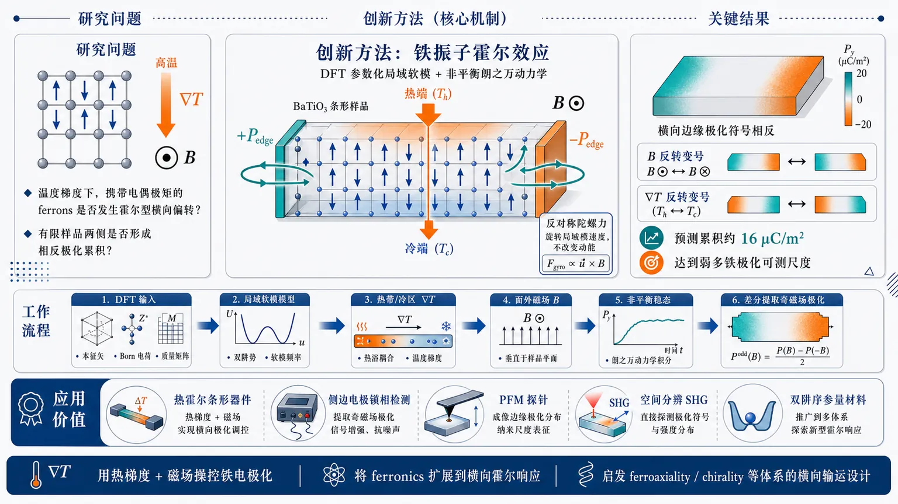
研究问题铁电体中携带电偶极矩的晶格激发（ferrons）在温度梯度驱动下是否会像电子、磁振子或声子一样发生霍尔型横向偏转，并在有限样品两侧形成可观测的相反电极化累积。创新方法提出“铁振子霍尔效应”：用第一性原理参数化的极性软模局域模模型描述 BaTiO₃，在非谐双阱势、短程相互作用、长程偶极作用和朗之万热浴基础上加入磁场诱导的反对称陀螺力；该力像洛伦兹力一样只旋转局域模速度、不改变动能，使热驱动 ferron 流横向偏转，产生边缘极化差。工作流程输入 DFT 得到的软模本征矢、Born 有效电荷、质量矩阵、力常数和介电张量；构建三维 BaTiO₃ 局域极性软模晶格；设置中央热带与外侧冷区形成纵向温度梯度，横向方向保留有限边界；在面外磁场下求解随机朗之万动力学非平衡稳态；计算局域极化、动能和声子角动量空间图；用正负磁场差分提取奇磁场边缘极化累积。关键结果在 BaTiO₃ 中，纵向温度梯度和垂直磁场共同诱导横向电极化边缘累积：样品上下/左右横向边缘符号相反，磁场反转时变号，温度梯度反转时也变号；预测边缘极化累积约 16 μC/m²，比平衡铁电极化小约四个数量级，但达到弱多铁极化信号的可测量尺度。应用价值为用“热梯度 + 磁场”操控铁电极化提供新机制，把 ferronics 从纵向极化输运扩展到横向霍尔响应；可通过热霍尔条形器件、侧边电极锁相检测、压电响应力显微镜或空间分辨二次谐波成像探测，并启发 ferroaxiality、chirality 等双阱晶格序参量体系中的类似横向输运设计。第一部分：核心概览
提出ferron Hall effect（铁振子霍尔效应）：铁电体中携带电偶极矩的晶格激发在纵向温度梯度驱动下流动，外磁场通过破缺时间反演对称性使其横向偏转，从而在样品两侧产生相反的电极化累积。基于第一性原理参数化的随机局域模朗之万动力学，在典型铁电体 BaTiO₃ 中预测边缘极化累积约 16 μC/m²。该机制把铁振子提升为横向输运中的电极化对应物，补全了热流、声子角动量、电极化三类晶格霍尔响应层级。
---
第二部分：结构化快速回顾
《Ferron Hall effect: Transverse accumulation of polarization driven by thermal gradients in ferroelectrics》（None，）
背景
霍尔效应已从电子电荷输运扩展到光、磁振子、声子热流和声子角动量。铁电体中的ferrons 是携带电极化的晶格激发，但其横向霍尔型输运此前缺位。
方法
建立基于极性软模 local-mode coordinate 的随机晶格模型，使用来自密度泛函理论的参数，加入非谐双阱势、短程相互作用、长程偶极相互作用、朗之万热浴和磁场诱导的gyroscopic force，求解非平衡稳态。
结果
在 BaTiO₃ 中，纵向温度梯度与垂直磁场共同产生横向边缘极化累积。该累积对磁场反转和温度梯度反转均变号，边缘响应估计达到 16 μC/m²。
讨论
该效应区别于 Seebeck 效应、热释电和 thermopolarization：不是纵向电压或整体温度诱导极化，而是横向、边缘、奇磁场、奇温度梯度的极化累积。
局限
磁场耦合强度作为模型参数处理；真实样品中的畴、畴壁、表面、电边界条件、移动屏蔽电荷和缺陷可能显著改变极化分布。
结论
Ferron Hall effect 将 ferronics 从纵向极化输运扩展到横向霍尔响应，为热场和磁场操控铁电极化提供机制，并暗示 ferroaxiality、chirality 等双阱序参量体系可能存在类似横向响应。
---
第三部分：逐章节冷凝解析
Abstract
Core mechanism of ferron Hall effect
核心机制是：传统phonon Hall effect 只关注纵向温度梯度和磁场下的横向热流；若被偏转的晶格激发同时携带electric dipole moments，其横向运动会造成铁电体中的电极化累积。摘要直接给出机制定义：*"when the lattice excitations deflected by the Hall effect carry electric dipole moments, their transverse motion produces an accumulation of electric polarization in ferroelectric materials."* 这种携带极化的晶格激发被称为 ferrons，因此该机制命名为 ferron Hall effect：*"This accumulation is driven by lattice excitations that carry polarization, known as ferrons, and we therefore call the mechanism the ferron Hall effect."*
Theoretical demonstration using atomistic lattice dynamics
方法层面不是唯象连续介质模型，而是基于atomistic lattice dynamics，参数来自density functional theory，对象为典型铁电体 BaTiO₃。摘要明确指出：*"Using atomistic lattice dynamics with parameters obtained from density functional theory, we illustrate the effect in the prototypical ferroelectric BaTiO3."* 这意味着关键输入包括软模本征矢、Born 有效电荷、质量矩阵、力常数和介电张量等微观量。
Conceptual positioning relative to magnons
该效应把 ferrons 定位为横向输运中 magnons 的电极化对应物。摘要给出领域定位：*"Our results identify ferrons as the electric-polarization analogues of magnons in transverse transport and provide a route toward thermal and magnetic manipulation of ferroic order."* 因而创新点不只是预测一个信号，而是把 ferronics 扩展到霍尔型横向输运框架。
---
I Introduction
Hall effects as a broad transport family
霍尔效应被置于广义固态输运谱系中，不再局限于电子电荷。开篇指出其普遍性和技术重要性：*"Hall effects are ubiquitous in solid-state physics and lie at the heart of many modern technologies."* 传统类别包括 anomalous Hall effect、spin Hall effect、orbital Hall effect、quantum Hall effect，共同特征是纵向驱动产生横向响应：*"Conventionally, anomalous, spin, orbital, and quantum Hall effects describe the generation of a transverse charge, spin, or orbital current from a longitudinal electronic current induced by an electric field."*
Bosonic Hall effects provide the immediate precedent
现代霍尔家族包括玻色激发，例如光学介质中的光霍尔效应、磁性材料中的磁振子霍尔效应、晶格中的声子霍尔效应。关键表述为：*"the modern Hall family more broadly also encompasses bosonic excitations."* 声子相关响应包括 phonon Hall effect 和 phonon angular momentum Hall effect，二者均由温度梯度驱动晶格激发纵向传播并引发横向输运：*"In these effects, a thermal gradient drives lattice excitations longitudinally and produces transverse transport of heat or phonon angular momentum."*
Missing degree of freedom: electric polarization
已有晶格霍尔效应覆盖热流和声子角动量，但缺少电极化这一自由度。核心缺口被直接标出：*"Here, we complement the family of Hall effects with a previously overlooked degree of freedom: electric polarization."* 该新响应要求铁电体、纵向温度梯度和外磁场三者共同存在：*"a longitudinal thermal gradient in a ferroelectric material, together with an external magnetic field, generates a transverse polarization response."*
Microscopic nonequilibrium formulation
理论框架为stochastic lattice model governed by Langevin dynamics，输入参数来自 density functional theory。关键句：*"We formulate the effect using a stochastic lattice model governed by Langevin dynamics, with input parameters calculated from density functional theory."* 在该非平衡微观描述中，温度梯度驱动铁电极性模，磁场赋予横向分量，且横向分量随磁场反转而变号：*"a longitudinal temperature gradient drives the polar modes of the ferroelectric material, while the applied magnetic field gives their motion a transverse component that changes sign when the field is reversed."*
Finite-sample edge accumulation
该效应的可观测形式不是无限体系中的抽象横向流，而是有限样品边缘的polarization accumulation。关键表述为：*"In a finite sample, this transverse deflection produces an accumulation of polarization at the sample edges."* 因此实验可采用 Hall-bar 类几何并探测横向边缘极化差异。
Hierarchy of lattice Hall effects
图 2 建立三层级晶格霍尔响应：横向通道可以是heat、phonon angular momentum、electric polarization。原文概括为：*"This completes a hierarchy of lattice Hall effects, in which the transverse channel is heat, phonon angular momentum, or electric polarization."* 其中 ferron Hall effect 是电极化通道的缺失环节。
Ferrons define the transported polarization carrier
铁电中的电极化输运载体为 ferrons，即携带电偶极矩的晶格激发。引言说明：*"The accumulation is driven by lattice excitations carrying electric dipole moments, also known as ferrons, and therefore represents a ferron Hall effect."* 该工作受近年 ferron-induced polarization transport 启发，并嵌入新兴 ferronics：*"recent work on ferron-induced polarization transport in ferroelectrics ... has led to the emerging field of ferronics, in analogy to magnonics."*
Figure 1 mechanism
图 1 的物理图像是：纵向温度梯度 ∇T 驱动 ferron current J，外磁场 B 破缺时间反演对称性并使其横向偏转，样品两侧形成相反极化位移 ±δP。图注直接写道：*"A longitudinal thermal gradient, ∇T, drives a current, J, of lattice excitations carrying electric polarization, also known as ferrons, in a ferroelectric material."* 以及：*"this ferron current is deflected transversely, producing opposite polarization shifts, ±δP, at opposite sample edges."*
Figure 2 distinguishes required symmetries
图 2 对比三种晶格霍尔响应。顶部：声子角动量 PAM 在边缘以局域圆形原子运动形式累积：*"PAM ... accumulates with opposite signs at opposite sample edges in the form of local circular atomic motion."* 中部：时间反演对称性 𝒯 被磁序或磁场破缺时出现横向热流：*"When time-reversal symmetry, 𝒯, is broken by magnetic order or an applied magnetic field, the same Hall geometry produces a transverse heat current."* 底部：铁电中反演对称性 𝒫 破缺允许 ferrons 产生横向极化位移：*"In a ferroelectric, broken inversion symmetry, 𝒫, allows ferrons to produce transverse shifts of the polarization."*
---
II Theoretical formalism
Polar soft mode as the low-energy coordinate
低能晶格动力学由铁电体的polar soft mode 描述。该模连接中心对称顺电相与反演对称性破缺的铁电相，因此直接产生铁电极化。关键句为：*"The low-energy lattice dynamics are described in terms of the polar soft mode of the ferroelectric."* 以及：*"This mode consists of ionic displacements that connect the centrosymmetric paraelectric structure to the inversion-symmetry-broken ferroelectric state and therefore generate the ferroelectric polarization."*
Ferron character of the anharmonic soft mode
在铁电相中，极性软模本质上是非谐的，并带有净电偶极矩，因此构成 ferron。原文写道：*"In the ferroelectric state, this mode is intrinsically anharmonic and carries a net electric dipole moment, also known as ferron."* 这一定义把 ferron 与普通谐声子区分开：ferron 是带有极化自由度的极性晶格激发。
Local-mode coordinate and decomposition
每个晶胞 (i) 的局域极性畸变用三维局域模坐标 (uᵢ₌₍ᵤᵢ,ₓ,uᵢ,y,uᵢ,z)) 表示。原文给出：*"For unit cell i, we represent the local amplitude and direction of this polar distortion by the local-mode coordinate (uᵢ=(uᵢ,ₓ,uᵢ,y,uᵢ,z))."* 对给定铁电极化方向 (hateₚₐᵣₐₗₗₑₗ)，局域模分解为纵向幅度和横向涨落：(uᵢ₌ᵤᵢ,ₚₐᵣₐₗₗₑₗhateₚₐᵣₐₗₗₑₗ+uᵢ,ₚₑᵣₚ)，其中 (uᵢ,ₚₐᵣₐₗₗₑₗ=hateₚₐᵣₐₗₗₑₗḑot uᵢ)。
Double-well minima encode ferroelectric bistability
局域双阱势的两个极小值位于 (uᵢ₌± u₀hateₚₐᵣₐₗₗₑₗ)，对应两种相反铁电极化取向。关键句：*"The local double-well minima are located at (uᵢ=± u₀hateₚₐᵣₐₗₗₑₗ), with (u₀) representing the equilibrium soft-mode amplitude."* 因而 (uᵢ,ₚₐᵣₐₗₗₑₗ) 控制局域极化幅度，(uᵢ,ₚₑᵣₚ) 描述相对于铁电极化方向的横向涨落：*"Thus (uᵢ,ₚₐᵣₐₗₗₑₗ) controls the local amplitude of polarization, while (uᵢ,ₚₑᵣₚ) describes fluctuations transverse to the chosen ferroelectric polarization direction."*
Local polarization, kinetic energy, and phonon angular momentum observables
三个核心局域观测量由同一局域模定义：
[
Pᵢ=fracZuᵢØmega,quad
Eₘ̊ ₖᵢₙ,ᵢ=frac12dotuᵢTMdotuᵢ,quad
Lᵢ,ₖ=uᵢTbmŁambda⁽k⁾dotuᵢ.
]
原文说明张量来源：*"These tensors are constructed from the soft-mode eigenvectors, Born effective charges, and atomic masses."* 其中 (Ømega) 是原胞体积，(Z) 是模式有效电荷张量，(M) 是投影模式质量矩阵，(bmŁambda⁽k⁾) 是第 (k) 个笛卡尔分量的角动量矩阵。
Effective Hamiltonian structure
保能部分动力学由有效哈密顿量
[
H=Eₘ̊ ₖᵢₙ+Vₘ̊ ₒₙ+Vₘ̊ ₛᵣ+Vₘ̊ dᵢₚ
]
生成。原文列明四部分：*"The energy-conserving part of the local-mode dynamics is generated by the effective Hamiltonian (H=Eₘ̊ ₖᵢₙ+Vₘ̊ ₒₙ+Vₘ̊ ₛᵣ+Vₘ̊ dᵢₚ)."* 其中 on-site potential 描述局域铁电不稳定性，short-range interactions 描述不同晶胞局域畸变的短程相互作用，long-range electrostatic interaction 来自局域偶极矩 (pᵢ₌Zuᵢ)。
On-site potential uses sixth-order double-well expansion
局域势能写为
[
Vₘ̊ ₒₙ=sumᵢłeft[
fracA₂2uᵢ,ₚₐᵣₐₗₗₑₗ²⁺
fracB₄4uᵢ,ₚₐᵣₐₗₗₑₗ⁴⁺
fracC₆6uᵢ,ₚₐᵣₐₗₗₑₗ⁶⁺
fracκₚₑᵣₚ2|uᵢ,ₚₑᵣₚ|²
i̊ght].
]
原文解释：*"A2, B4, and C6 parameterize the local double-well potential along the ferroelectric coordinate, while (κₚₑᵣₚ) sets the restoring curvature for transverse fluctuations."* 六阶项允许稳定双阱非谐势，是 perovskite 铁电有效哈密顿量传统形式的一部分：*"This local-mode form follows the first-principles effective-Hamiltonian description of perovskite ferroelectrics."*
Forces from potential-energy gradients
局域模受力由势能梯度给出：(Fᵢ₌₋partial V/partial uᵢ)。原文写道：*"The forces entering the equations of motion are obtained from the potential-energy terms as (Fᵢ=-partial V/partialuᵢ)."* on-site 力为
[
Fm̊ oⁿᵢ=-
(A₂₊B₄ᵤᵢ,ₚₐᵣₐₗₗₑₗ²⁺C₆ᵤᵢ,ₚₐᵣₐₗₗₑₗ⁴⁾
uᵢ,ₚₐᵣₐₗₗₑₗhateₚₐᵣₐₗₗₑₗ
-κₚₑᵣₚᵤᵢ,ₚₑᵣₚ.
]
Short-range force captures relative polar distortions
短程相互作用力为
[
Fm̊ srᵢ
=-sumRKm̊ sr(R)
(uᵢ₊R-uᵢ₎.
]
(R) 连接原胞，(Km̊ sr(R)) 是 (3×3) 核，由第一性原理原子间力常数投影到软模基得到。原文强调功能：*"This term captures the short-range energy cost of relative polar distortions between unit cells."*
Long-range dipolar interaction treated in reciprocal space
每个局域模带偶极矩 (pᵢ₌Zuᵢ)，导致长程偶极-偶极相互作用。原文解释：*"The long-range electrostatic force arises because each local mode carries a dipole moment."* 因其长程性，力在倒空间写为
[
Fm̊ dⁱp(q)=-Km̊ dⁱp(q)u(q),quad
Fm̊ dⁱp(q=0)=0.
]
Screened dipolar kernel includes high-frequency dielectric tensor
有限波矢下，电子屏蔽由高频介电张量 (bmϵᵢₙfₜy) 表示：
[
Km̊ dⁱp(q)
=frac4π kₑØmega
frac(ZTq)(ZTq)T
qTbmϵᵢₙfₜyq.
]
原文解释分子与分母的物理意义：*"The numerator projects the mode-induced dipole density onto the longitudinal component along (q), while the denominator accounts for the screened Coulomb response of the electronic background."*
Zero-wave-vector dipolar term encodes electrical boundary conditions
(q=0) 分量对应均匀宏观极化，其静电能依赖电边界条件。处理方式是设为零：*"We therefore set this component to zero, corresponding to no imposed macroscopic depolarizing field, and retain the finite-(q) depolarizing fields associated with polarization inhomogeneities."* 这意味着模型忽略外加宏观退极化场，但保留由空间非均匀极化产生的有限波矢退极化场。
Stochastic equation of motion combines conservative forces, gyroscopic force, damping, and noise
非平衡输运由朗之万动力学描述：
[
Mddotuᵢ
=Fm̊ oⁿᵢ
+Fm̊ srᵢ
+Fm̊ dⁱpᵢ
+GØₘₑgₐ_Bdotuᵢ
-γᵢMdotuᵢ
+bmηᵢ₍ₜ₎.
]
原文描述添加项：*"we add the magnetic-field-induced gyroscopic force (GØₘₑgₐ_Bdotuᵢ), Langevin damping with coefficient (γᵢ), and the stochastic thermal force (bmηᵢ₍ₜ₎)."*
Magnetic field enters through a Zeeman-like gyroscopic coupling
磁场项形式为
[
GØₘₑgₐ_B
=Ømega_BM¹/²CM¹/²,
]
其中
[
C=
beginpmatrix
0&-hatB_z&hatB_y
hatB_z&0&-hatBₓ
-hatB_y&hatBₓ&0
endpmatrix.
]
该项代表声子角动量与磁场或磁序之间的 Zeeman-like 耦合：*"The magnetic field is included phenomenologically through a gyroscopic force of the form generated by Zeeman-like couplings between phonon angular momentum and a magnetic field or magnetic order."*
Gyroscopic force is antisymmetric and energy-conserving
(C) 和 (GØₘₑgₐ_B) 都是反对称矩阵；磁场反转使 (C) 变号，从而使耦合变号。原文说明：*"Reversing the magnetic field reverses the sign of (C(hatB)) and therefore the sign of the gyroscopic coupling."* 由于
[
dotuᵢ^TGØₘₑgₐ_Bdotuᵢ₌₀,
]
该力只改变速度方向，不改变动能：*"This force therefore changes the direction of the local-mode velocity without changing its kinetic energy."* 它破缺时间反演对称性但不充当能量源汇：*"It breaks time-reversal symmetry, as required for a Hall response, but does not act as a source or sink of energy."*
Local Langevin baths impose nonequilibrium temperature profile
非平衡驱动通过空间变化的朗之万热浴引入。原文写道：*"Nonequilibrium driving is introduced through a spatially varying Langevin bath."* 局域温度 (Tᵢ) 给出热剖面，阻尼 (γᵢ) 可随空间变化：*"The local temperature (Tᵢ) defines the thermal profile, and the damping coefficient (γᵢ) may vary spatially."*
Noise obeys fluctuation-dissipation relation
随机力均值为零，相关函数为
[
łeftłangleηᵢ,α(t)ηⱼ,β(t')i̊ghtångle
=2γᵢ k_B Tᵢ Mαβδᵢⱼδ(t-t').
]
原文明确指出：*"This noise correlator is the fluctuation-dissipation relation for the local Langevin bath written in the projected mass coordinates."* 其中 (α,βinx,y,z)，(j) 为第二晶胞指标。
BAOAB splitting preserves relevant numerical structure
数值积分采用对称 BAOAB splitting。原文给出算法结构：*"the forces are applied through velocity half-steps, the gyroscopic term is solved exactly as a rotation of the local-mode velocity that preserves the kinetic energy, and the Langevin step is propagated with the exact Ornstein–Uhlenbeck update."* 这对 Hall 响应尤其关键，因为磁场项应只旋转速度而不人为加热或耗散系统。
---
III Ferron Hall effect in BaTiO₃
BaTiO₃ chosen as prototypical ferroelectric test case
随机方程被用于典型铁电体 BaTiO₃。章节开头直接说明：*"We now solve the stochastic equations of motion to demonstrate the ferron Hall effect in BaTiO3."* 模拟变量是三维晶格上的局域模 (uᵢ)，代表每个晶胞中的极性软模畸变：*"The simulations are performed on a three-dimensional lattice of the local-mode coordinates (uᵢ) ... which represent the polar soft-mode distortions in each unit cell."*
DFT-derived numerical parameters
数值参数来自密度泛函理论，但具体数值列在补充材料。原文说明：*"The numerical parameters are obtained from density functional theory and provided, together with computational details, in Supplemental Material."* 主文未给出 DFT 截断能、k 点、交换关联泛函、超胞尺寸或具体力常数数值。
Boundary conditions isolate transverse edge accumulation
边界条件专门设计用于观察横向边缘累积：纵向 (x) 和面外 (z) 方向周期，横向 (y) 方向有限。原文写道：*"Periodic boundary conditions are imposed along the longitudinal x and the out-of-plane z directions, while the transverse y direction is kept finite to resolve edge accumulation."* 因此边缘极化只能在 (y) 两侧形成，而不会被周期边界抵消。
Hot central band creates opposite longitudinal gradients
温度剖面是中央热带和外侧冷区：*"The temperature profile consists of a hot central band between colder outer regions, producing oppositely directed longitudinal temperature gradients on the two sides of the hot band."* 这种几何使热带左右两侧的 (nabla T) 方向相反，因此所有奇于温度梯度的 Hall 信号也应左右反号。
Local observables mapped in nonequilibrium steady state
从非平衡稳态计算三类空间图：局域极化 (Pᵢ)、局域动能 (Eₘ̊ ₖᵢₙ,ᵢ)、面外声子角动量 (Lᵢ,z)。原文为：*"From the resulting nonequilibrium steady state, we compute spatial maps of the local polarization (Pᵢ), kinetic energy (Eₘ̊ ₖᵢₙ,ᵢ), and out-of-plane phonon angular momentum (Lᵢ,z)."*
Figure 3 compares three transverse responses
图 3 总结同一模型下三种横向响应：声子角动量、动能和电极化。原文说明：*"In Fig. 3, we summarize the transverse responses obtained from the stochastic lattice model for BaTiO3."* 虚线表示中央热带中心：*"The dashed vertical line marks the center of the hot band, so the left and right sides of each map correspond to opposite signs of the longitudinal temperature gradient."*
Zero-field phonon angular momentum Hall response
在零磁场下，温度梯度产生横向声子角动量累积。原文写道：*"At zero magnetic field, the thermal gradient produces a transverse angular-momentum accumulation."* (L_z) 图在样品两侧边缘呈相反符号，表示相反手性的局域圆形离子运动：*"The map of (L_z) displays opposite signs at the two transverse edges of the sample, corresponding to local circular ionic motion with opposite handedness."*
PAM accumulation reverses with thermal-gradient direction
由于热带左右两侧 (nabla T) 方向相反，声子角动量边缘累积也左右反号。原文指出：*"The sign of the edge accumulation further reverses on opposite sides of the hot band, where the longitudinal temperature gradient changes direction."* 该响应幅度达到 (10⁻³hbar) 每晶胞：*"The edge accumulation reaches (10⁻³hbar) per unit cell, consistent with previous estimates."*
Magnetic gyroscopic term produces field-odd kinetic-energy response
施加 (Bparallelhatz) 后，开启有效陀螺项，代表声子角动量与磁场或磁化的 Zeeman-like 耦合：*"We then turn on the effective gyroscopic term for (Bparallelhatz), corresponding to a Zeeman-like coupling between phonon angular momentum and magnetic field or magnetization."* 磁场破缺时间反演对称性：*"The applied magnetic field breaks time-reversal symmetry."*
Odd-in-field extraction isolates Hall component
磁场反转通过 (Ømega_B) 变号实现。奇磁场响应定义为
[
Δ_B X=[X(+Ømega_B)-X(-Ømega_B)]/2.
]
原文写道：*"To isolate the response that is odd in the magnetic field, we use (Δ_B X=[X(+Ømega_B)-X(-Ømega_B)]/2) for each local observable (X)."* 这一处理滤除与磁场无关或偶于磁场的热背景。
Kinetic energy map visualizes phonon-Hall-type heat deflection
对局域动能使用 (Δ_B) 得到 (Δ_Bm̊ KE)。局域动能表征晶格振动储能，因此其奇磁场边缘改变可视为横向热响应。原文指出：*"Since local kinetic energy measures the vibrational energy stored in the lattice, this map visualizes the transverse thermal response produced by the gyroscopic term."* 有限样品中，声子热流偏转表现为边缘附近奇磁场动能分布变化：*"the deflection of the phononic heat current appears as a change in the local kinetic-energy profile near the transverse edges that is odd in the magnetic field."*
Central result: field-odd transverse polarization accumulation
核心结果是图 3(c) 中的 (Δ_B P)。陀螺耦合使热驱动晶格模横向偏转；在铁电体中，这些模携带 ferron 极化，因此边缘产生电极化累积。原文给出核心机制：*"The gyroscopic coupling deflects the thermally driven lattice modes in the transverse direction, as expected from the phonon Hall effect."* 以及：*"In a ferroelectric, the same transverse transport also involves ferrons and therefore produces an accumulation of electric polarization at the transverse edges."*
Symmetry signature defines ferron Hall effect
(Δ_B P) 在两个横向边缘符号相反，并在热带两侧随 (nabla T) 反转而反号。原文写道：*"The polarization shift (Δ_B P) has opposite signs at the two edges and reverses between the two sides of the hot band, following the reversal of the longitudinal temperature gradient."* 判据是同时奇于磁场和奇于温度梯度：*"This odd-in-field and odd-in-gradient edge accumulation of longitudinal ferroelectric polarization is the ferron Hall effect."*
Predicted magnitude in BaTiO₃
在 BaTiO₃ 中，边缘极化累积估计达到 16 μC/m²，约比平衡铁电极化小四个数量级。原文给出数值：*"For BaTiO3, the estimated edge accumulation reaches (16~μm̊ C/m̊ m²), about four orders of magnitude smaller than the equilibrium ferroelectric polarization."* 主文未给出该数值对应的样品尺寸、温差、阻尼、(Ømega_B) 取值或统计误差。
---
IV Discussion
Demonstration of principle rather than complete material prediction
该工作定位为微观机制验证，而非完整材料定量预测。原文第一句明确：*"The present work should be viewed as a microscopic demonstration of principle."* 这意味着模型成功展示允许机制和对称性，但实验大小仍依赖材料特定磁-声子耦合、畴结构和器件几何。
Gyroscopic magnetic coupling remains phenomenological
磁场通过有效陀螺项进入，代表声子角动量与磁场或磁序的 Zeeman-like 耦合。原文写道：*"The magnetic field enters through an effective gyroscopic term that represents the effect of a Zeeman-like coupling between phonon angular momentum and a magnetic field or magnetic order."* 耦合强度被当作模型参数，而非从具体材料微观磁-声子耦合完全计算：*"We treat the coupling strength as a model parameter, but material-specific values must ultimately be obtained from microscopic magnetophononic couplings or be measured experimentally."*
Real-sample complications can reshape polarization profiles
真实样品中，横向极化剖面会被多个因素修饰，包括domains、domain walls、surfaces、electrostatic boundary conditions、mobile screening charges、defects。原文列举：*"the transverse polarization profile may also be modified by domains and domain walls, surfaces and electrostatic boundary conditions, mobile screening charges, and defects."* 因此后续研究需要更真实的结构：*"Future work should therefore combine material-specific magnetic couplings with realistic ferroelectric domain structures and device geometries."*
Distinction from Seebeck effect
Seebeck 效应中，温度梯度产生的是纵向热电电压或电荷流。原文对比：*"In the Seebeck effect, a temperature gradient generates a longitudinal thermoelectric voltage or charge current."* ferron Hall effect 则是横向边缘极化位移，不等价于纵向电荷输运。
Distinction from pyroelectricity
热释电中，温度变化改变极性材料极化，并可在温度调制时产生电流。原文说明：*"In pyroelectricity, a change in temperature changes the polarization of a polar material and can generate a current during temperature modulation."* ferron Hall effect 不要求整体温度随时间变化，而要求空间温度梯度和磁场共同产生横向奇响应。
Distinction from thermopolarization
Thermopolarization 中，温度梯度可在绝缘体内诱导电极化。原文写道：*"In thermopolarization, a temperature gradient can induce an electric polarization in an insulator."* ferron Hall effect 的特殊性在于两侧边缘相反、且同时对磁场和纵向温度梯度反号：*"By contrast, the ferron Hall effect produces opposite polarization shifts at opposite transverse edges and is odd under reversal of both the magnetic field and the longitudinal thermal gradient."*
Magnitude is small but experimentally relevant
BaTiO₃ 中估计的 16 μC/m² 明显小于常规铁电体自发极化，但与磁诱导铁电体和相关多铁体系中的弱极化信号相当。原文写道：*"This value is much smaller than the spontaneous polarization of conventional ferroelectrics, but comparable to weak polar signals reported in magnetically induced ferroelectrics and related multiferroics, where equilibrium polarizations are on the (μm̊ C/m̊ m²) scale."* 因而信号虽小但可测：*"This suggests that ferron Hall accumulation is small but well within experimentally measurable magnitudes."*
Material and geometry optimization can enhance signal
增强路径包括强 magnetophononic coupling 材料和优化边缘几何。原文指出测量前景尤其适合：*"materials with strong magnetophononic coupling or optimized edge geometries."* 这暗示 BaTiO₃ 是概念验证平台，不一定是最佳实验材料。
Thermal Hall-bar experiment is proposed
可行实验采用从声子霍尔测量改造的thermal Hall-bar geometry：纵向温度梯度沿样品施加，面外磁场垂直于温度梯度，横向侧边测量极化响应。原文描述：*"A possible experiment could use a thermal Hall-bar geometry adapted from phonon Hall measurements: a longitudinal temperature gradient is applied along the sample, an out-of-plane magnetic field is applied perpendicular to it, and the polarization response is measured at the transverse side edges."*
PFM and spatially resolved SHG as local probes
结合 ferron 输运探测方案，横向边缘极化可由piezoresponse force microscopy 或spatially resolved second-harmonic generation 探测。原文提出：*"the transverse edge polarization could be probed with piezoresponse force microscopy or with spatially resolved second-harmonic generation."* PFM 对局域压电响应敏感，SHG 对反演对称性破缺和极性序参量敏感。
Electrical lock-in detection can isolate symmetry channel
互补电测方案是在横向边缘加侧电极并进行调制加热，锁相探测同时奇于磁场反转和热梯度反转的分量。原文写道：*"A complementary electrical measurement could use side electrodes on the transverse edges and modulated heating, with lock-in detection of the component that is odd under both reversal of the applied magnetic field and reversal of the thermal gradient."* 这一方案利用双重反号判据有效排除热释电、普通热电和背景漂移。
Ferronics expands from longitudinal to transverse transport
该结果将 ferronics 从纵向极化输运扩展到霍尔型横向响应。原文总结：*"our results extend ferronics from longitudinal polarization transport to transverse Hall-type responses."* Ferrons 在铁电体中的角色类似磁绝缘体中的 magnons，但输运量从磁化变为电极化：*"They show that ferrons can play a role analogous to magnons in magnetic insulators, but with electric polarization as the transported quantity."*
Broader implication for other double-well lattice orders
该机制可能推广到由局域双阱势描述的其他晶格序参量，如 ferroaxiality 和 chirality。原文写道：*"excitations in other lattices described by local double-well potentials, such as ferroaxiality and chirality, may support analogous transverse responses."* 因此 ferron Hall effect 可能是更广泛“序参量载流激发横向输运”范式中的一个实例。
---
Acknowledgments
Scientific discussions and funding source
致谢对象包括 Michael Fechner、Mike Pols、Carl Romao、Nicola Spaldin 和 Maxim Mostovoy。原文为：*"We thank Michael Fechner, Mike Pols, Carl Romao, Nicola Spaldin, and Maxim Mostovoy for useful discussions."* 经费来自 ERC Starting Grant CHIRALPHONONICS, 编号 101166037：*"This research was supported by the ERC Starting Grant CHIRALPHONONICS, no. 101166037."*
---
第四部分：深度理解与语言支持
1. 术语解析
Ferron
Ferron 指铁电序中的极化载流晶格激发，可类比磁性体系中的 magnon。普通声子不必携带净电偶极矩，而 ferron 的关键特征是与铁电极化直接耦合。语境中 ferron 被定义为：携带 electric dipole moments / polarization 的晶格激发。其学术微妙点在于，它不是一个全新基本粒子，而是铁电极性软模在非谐双阱势中的集体激发视角。
Gyroscopic force
Gyroscopic force 是速度相关、反对称、保能的力，形式类似洛伦兹力：改变运动方向而不改变动能。文中关键性质是 (dotu^TGdotu=0)。它不是普通阻尼，也不是热源，而是提供 Hall 偏转所需的时间反演破缺。
Odd-in-field / odd-in-gradient
Odd-in-field 表示磁场反转 (Bi̊ghtarrow -B) 时信号变号；odd-in-gradient 表示温度梯度反转 (nabla Ti̊ghtarrow -nabla T) 时信号变号。ferron Hall effect 的诊断标准正是二者同时成立。实验上这类对称性滤波极重要，因为它可排除偶于磁场的热背景、普通温升效应和漂移。
Polar soft mode
Polar soft mode 是铁电相变附近频率降低、驱动中心对称结构走向极性结构的低能晶格模。文中它既是局域模坐标 (uᵢ) 的物理来源，也是局域极化 (Pᵢ₌Zuᵢ/Ømega) 的基础。微妙点在于：这里不是追踪所有原子位移，而是将复杂离子位移投影到一个低能极性软模子空间。
Transverse accumulation
Transverse accumulation 指横向边缘上的局域量堆积，而不一定等同于稳态中可直接穿过边界的横向净流。有限样品中，Hall 偏转后的载流激发在横向边界受阻，表现为两侧符号相反的边缘累积。文中电极化、声子角动量和动能都以边缘空间分布来呈现横向响应。
---
2. 疑难查证
为什么 ferron Hall effect 需要铁电性？
铁电性提供两个必要条件。第一，反演对称性破缺使极性软模具有非零局域电偶极矩，晶格激发才能携带电极化。第二，局域双阱势使极化方向成为稳定序参量，边缘的微小软模位移可表现为可测的极化变化。若晶格激发不携带偶极矩，即使发生声子 Hall 偏转，也只会产生热流或角动量响应，不会产生电极化累积。
为什么磁场项不做功却能产生 Hall 响应？
Hall 偏转一般不需要磁场持续输入能量。经典洛伦兹力 (qv×B) 与速度垂直，功率为零，但能改变带电粒子运动方向。这里的 gyroscopic force 也满足 (dotu^TGdotu=0)，因此不改变动能，只旋转局域模速度方向。温度梯度提供非平衡流，磁场只负责把纵向流偏转成横向分量。
为什么用 (Δ_B X=[X(+Ømega_B)-X(-Ømega_B)]/2)？
真实温度梯度会产生大量与磁场无关的背景：普通热膨胀、局域温度导致的振幅变化、边界效应等。Hall 响应在磁场反转时应变号，因此取正负磁场差的一半可以提取奇磁场分量。若再比较热带左右两侧，还能验证其是否随 (nabla T) 反转而反号。双重反号是 ferron Hall effect 与普通热极化效应区分的核心。
为什么边缘极化累积约 16 μC/m² 虽小但有意义？
常规铁电体自发极化通常远大于 (μm̊ C/m̊ m²) 尺度，因此 16 μC/m² 相对 BaTiO₃ 平衡极化约小四个数量级。但许多磁诱导铁电体和多铁材料的平衡极化本身就在 (μm̊ C/m̊ m²) 量级，实验技术已经能检测这种弱极化。关键不是改变整个铁电极化方向，而是在边缘探测与磁场和热梯度具有明确对称性的微小增量。
---
第五部分：创新评估与关联
1. 创新性判断
From ferron longitudinal transport to ferron Hall transport
近年 ferronics 主要集中于纵向极化输运：温度、光或其他驱动下 ferrons 如何沿驱动方向传播极化。该工作的新颖性在于提出 ferrons 不仅能纵向传输极化，还能在时间反演破缺条件下发生横向 Hall 型偏转，并在边缘形成可探测的极化累积。解决的问题是：铁电极化是否存在类似磁振子 Hall 效应的横向输运通道。
Completing the lattice Hall hierarchy
过去 2–5 年中，声子 Hall、声子 Berry 曲率、非线性声子 Hall、声子角动量 Hall 等研究快速发展，但横向通道主要是热流或角动量。这里把电极化作为第三个横向晶格自由度纳入同一 Hall 几何，构成“热流—声子角动量—电极化”的层级闭合。创新点是从“晶格携带能量/角动量”推进到“晶格携带铁电序参量”。
Microscopic nonequilibrium simulation rather than pure symmetry argument
机制不只停留在对称性允许层面，而是通过 DFT 参数化的局域软模朗之万动力学给出 BaTiO₃ 中的空间图和数量级估计。尤其重要的是同时显示三类响应：零场声子角动量累积、奇磁场动能边缘变化、奇磁场极化边缘累积。这使 ferron Hall effect 与已知 phonon Hall 和 phonon angular momentum Hall 形成可比对的数值证据链。
Clear experimental symmetry fingerprint
可测信号被定义为横向边缘极化，且必须同时满足：磁场反转变号、温度梯度反转变号、两侧边缘符号相反。这一对称性指纹解决了热电、热释电、thermopolarization 和普通温升诱导极化难以区分的问题。实验上可通过正负磁场、反向热梯度和锁相调制提取目标分量。
New route for thermal and magnetic control of ferroic order
传统铁电操控依赖电场、应变、光或温度；该机制提供“热梯度 + 磁场”操控局域极化边缘累积的路径。更广泛地，它暗示其他双阱型晶格序参量激发也可能出现类似 Hall 响应，例如 ferroaxiality 和 chirality，从而把 ferronics 与 chiral phononics、multiferroics 和 Hall transport 研究连接起来。
-
17
📊 含图深析
📄 摘要：在交变磁候选 CrSb 中使用 Andreev 反射探测动量依赖自旋极化。交变磁体具有零净磁化但存在 k 依赖自旋劈裂能带；该实验以超导接触的 Andreev 过程作为自旋极化探针，为 CrSb 的交变磁性提供输运层面的检验。
💡 亮点：CrSb 的 k 依赖自旋极化通过 Andreev 反射被直接探测，而非依赖净磁矩信号。该方法为零磁化交变磁体的自旋输运表征提供了清晰实验路径。
📖 展开分析 + 配图
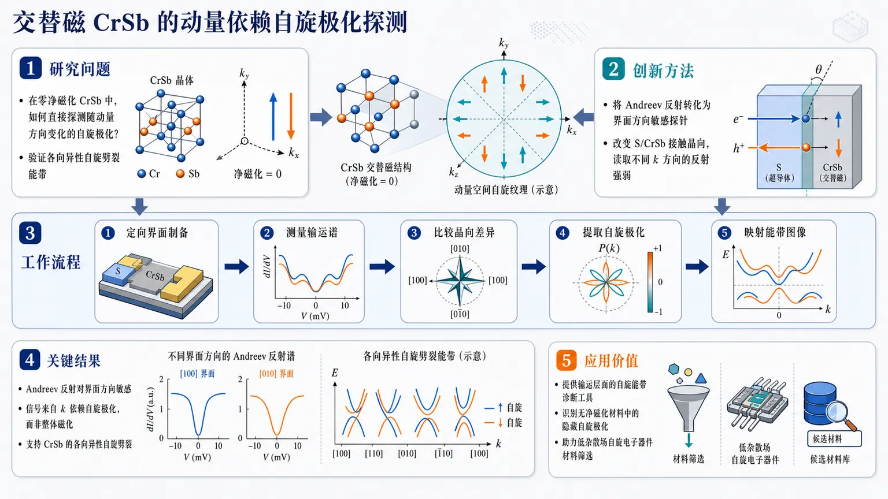
研究问题如何在零净磁化的交替磁候选材料 CrSb 中，直接探测随动量方向变化的自旋极化，从而验证其各向异性的自旋劈裂能带特征。创新方法将通常用于铁磁体整体自旋极化测量的 Andreev 反射，转化为一种“界面方向敏感”的交替磁探针：通过改变超导体/CrSb 接触界面的晶向，读取不同动量方向上的 Andreev 反射强弱差异，反推出 CrSb 的动量依赖自旋极化。工作流程制备超导体与 CrSb 的定向界面接触；在不同晶向界面上测量 Andreev 反射输运谱；比较反射信号随界面方向的变化；从方向依赖的谱线特征中提取自旋极化信息；将结果映射到 CrSb 的各向异性自旋劈裂能带图像。关键结果Andreev 反射信号表现出对 CrSb 界面方向的敏感性，说明其探测到的不是简单的整体磁化，而是与动量方向相关的自旋极化；结果支持 CrSb 具有交替磁预期的 k 依赖自旋劈裂和各向异性自旋能带结构。应用价值为交替磁材料提供一种输运层面的自旋能带诊断工具，可在无净磁化材料中识别隐藏的动量依赖自旋极化，有助于筛选和表征面向低杂散场、自旋电子器件的新型交替磁材料。核心概览
该论文属于凝聚态自旋电子学/超导输运方向，研究利用超导接触的安德烈夫反射谱，在交错磁体候选材料 CrSb 中探测动量依赖的自旋极化，以建立区分交错磁性与常规磁序的输运判据。
方法要点
- 选取交错磁体候选 CrSb 作为研究对象，其特征是零净磁化但能带存在动量 (k) 依赖的自旋劈裂。
- 利用超导接触诱发的安德烈夫反射作为探针，测量反射谱中的自旋极化相关特征。
- 通过输运谱学响应来识别 CrSb 中与交错磁性相关的动量依赖自旋极化。
- 将该响应与常规铁磁和反铁磁体系的预期输运行为进行区分。
关键结果
- 摘要明确指出：安德烈夫反射可用于探测 CrSb 中的动量依赖自旋极化。
- CrSb 被描述为具有零净磁化、但存在 (k) 依赖自旋劈裂能带结构的交错磁体候选材料。
- 超导接触的反射谱能够提供自旋极化特征。
- 该方法为区分交错磁性与常规铁磁/反铁磁响应提供了输运判据。
- 具体实验参数、谱线形状、拟合模型、极化数值或温度/磁场依赖等，摘要未详述。
创新性判断
- 可能的新颖点在于：将安德烈夫反射这一常用于测量铁磁材料自旋极化的超导输运技术，扩展用于探测交错磁体中的动量依赖自旋极化。
- 相比普通铁磁体中由净磁化导致的自旋极化，该工作关注的是零净磁化体系中由 (k) 依赖自旋劈裂产生的输运可探测信号，这可能是其核心创新。
- 该研究还可能提出了一种区分交错磁体、常规铁磁体和反铁磁体的实验判据；但具体判据形式和验证强度摘要未详述。
- 创新性判断基于摘要信息，是否为首次在 CrSb 中实现此类测量、以及相对既有交错磁体输运研究的具体突破，摘要未详述。
-
18
📄 摘要：提出轨道交变磁性概念：实空间中轨道磁矩反平行有序、总磁矩可相互抵消，但能带中出现受对称性保护的动量依赖轨道劈裂，类似自旋交变磁性。二维模型展示纯轨道自由度也可形成交变磁有序，拓展交变磁性的适用对象。
💡 亮点：轨道交变磁性把交变磁概念从自旋推广到纯轨道磁矩，在二维体系中产生 k 依赖轨道劈裂。它为无自旋净磁化的轨道电子学和磁输运设计打开新自由度。
📖 展开分析 + 配图
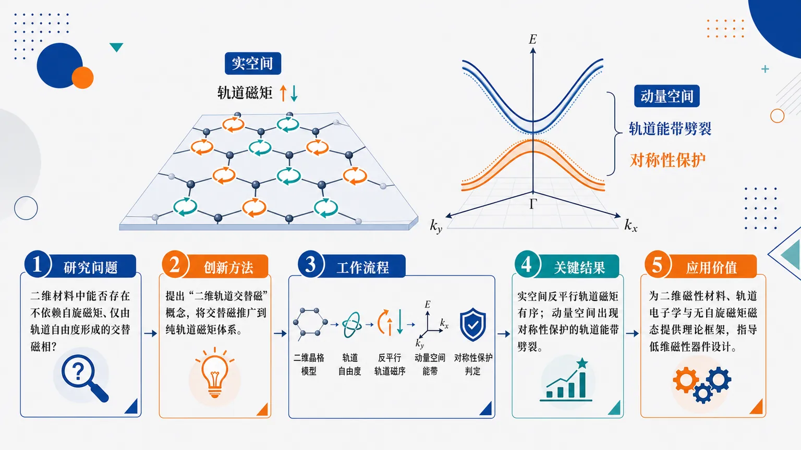
研究问题二维材料中是否能存在一种不依赖自旋磁矩、仅由轨道自由度形成的交替磁相；这种相能否同时在实空间表现为反平行轨道磁矩有序，并在动量空间产生可识别的轨道能带劈裂。创新方法提出“二维轨道交替磁”概念，将传统由自旋磁矩主导的交替磁推广到纯轨道磁矩体系；核心 Aha 点是：即使没有自旋磁矩，反平行排列的轨道磁矩也能通过晶体与磁对称性，在动量空间形成受保护的轨道能带劈裂。工作流程从二维晶格模型出发，引入轨道自由度与反平行轨道磁矩排布；在实空间识别交替排列的轨道磁序；再映射到动量空间分析轨道能带结构；最后用对称性约束判断轨道能带劈裂是否被保护，从而定义二维轨道交替磁相。关键结果证明二维体系中可以存在由纯轨道自由度驱动的交替磁态；该态在实空间具有反平行轨道磁矩有序，在动量空间出现对称性保护的轨道能带劈裂；研究将交替磁分类从自旋交替磁扩展到轨道交替磁。应用价值为二维磁性材料、轨道电子学和无自旋磁矩磁态研究提供新的理论框架；可用于寻找由轨道磁矩控制的新型量子材料，并为利用轨道能带劈裂设计低维磁性器件提供概念基础。核心概览
本文提出“二维轨道交错磁性”概念，属于凝聚态物理/二维磁性与交错磁性方向，论证反平行轨道磁矩虽可使总轨道磁化抵消，但仍能在动量空间产生对称性保护的轨道能带劈裂。
方法要点
- 通过理论模型论证纯轨道自由度也可形成交错磁序。
- 将自旋交错磁性的思想类比并推广到轨道磁矩体系。
- 从实空间反平行轨道磁矩排列与动量空间能带劈裂之间的关系进行分析。
- 强调能带劈裂由对称性保护；具体对称群、哈密顿量形式或计算细节摘要未详述。
关键结果
- 提出二维“轨道交错磁性”这一新概念。
- 实空间中轨道磁矩可反平行排列，使总轨道磁化相互抵消。
- 尽管总轨道磁化可为零，动量空间仍可出现轨道能带劈裂。
- 该劈裂具有对称性保护特征。
- 纯轨道自由度本身也能支持交错磁序，从而将交错磁性的适用范围从自旋扩展到轨道。
创新性判断
该工作的可能新颖点在于把“交错磁性”从传统自旋磁矩体系推广到轨道磁矩体系，并提出二维轨道交错磁性的理论框架。相较同方向研究，其重点可能不是发现常规反铁磁或自旋交错磁性，而是强调“零净轨道磁化”与“动量空间轨道能带劈裂”可共存。不过，摘要未详述具体模型、材料实现、对称性分类或可观测实验信号，因此其相对已有工作的突破程度仍需全文确认。
-
19
📊 含图深析
📄 摘要：面向碳酸盐储层的碳封存、油气开采和地下储氢需求，构建机器学习增强的数据同化框架整合宏观与微观 X 射线 CT 图像及数值模拟。针对跨尺度孔径分布导致单尺度 CT 难以完整表征的问题，框架用于改善多相流行为与岩石结构参数反演。
💡 亮点：碳酸盐岩的多尺度孔隙被纳入机器学习数据同化，连接 CT 成像与多相流模拟。该方法服务于碳封存和储氢场景下的储层快速表征。
📖 展开分析 + 配图
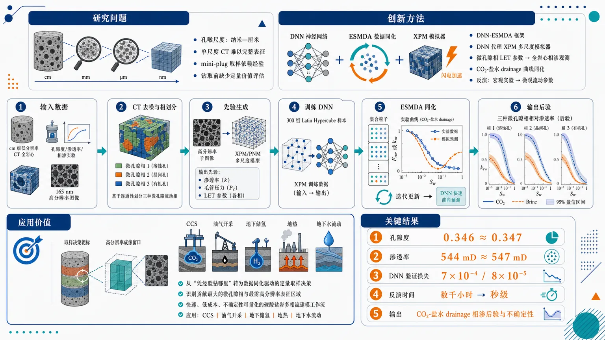
研究问题碳酸盐岩孔喉尺度从纳米到厘米，单尺度 CT 无法完整表征；纳米级高分辨率成像必须从全岩心破坏性钻取 mini-plug，但取样位置长期依赖经验，缺少能在钻取前量化“哪里最值得取样、能降低多少不确定性”的方法。创新方法提出 DNN-ESMDA 框架：用密集神经网络学习高成本 XPM 多尺度孔隙网络模拟器的输入输出关系，将微孔隙相 LET 相对渗透率参数快速映射到全岩心相对渗透率观测点；再用 ESMDA 同化 CO₂-盐水 drainage 实验曲线，从宏观实验反推微孔隙相流动参数及不确定性。Aha 点是用神经网络代理把原本数百至数千次 XPM 反演从数千小时压缩到秒级。工作流程输入 cm 级低分辨率 CT 全岩心图像、全岩心孔隙度/渗透率/CO₂-盐水相对渗透率实验，以及同层位 165 nm 高分辨率图像；先对 CT 去噪并按连通性把微孔隙区分成 3 个流动相；再由高分辨率子图像与 XPM/P NM 生成渗透率、毛管压力和 LET 参数先验；用 300 组 Latin Hypercube 参数运行 XPM 训练 DNN；最后在 ESMDA 中用 DNN 快速前向预测并同化实验数据，输出各微孔隙相相对渗透率后验分布和不确定性。关键结果孔隙度回归得到 0.346，几乎重合实验值 0.347；多尺度模拟渗透率为 544 mD，接近实验值 547 mD；DNN 代理模型验证损失分别达到 7×10⁻⁴ 和 8×10⁻⁵；反演时间由传统多尺度数值模拟的数千小时降至秒级，并能同时给出微孔隙相 CO₂-盐水 drainage 相对渗透率及不确定性。应用价值把碳酸盐岩多尺度成像中“凭经验钻哪里”的破坏性取样问题转化为数据同化驱动的定量决策；可识别哪些微孔隙相对全岩心相对渗透率贡献最大、哪些区域最需要高分辨率表征，为 CCS、油气开采、地下储氢、地热和地下水流动中的碳酸盐岩多相流建模提供快速、低成本、不确定性可量化的工作流。第一部分：核心概览 (Overview)
该研究提出 DNN-ESMDA 机器学习增强数据同化框架，用于多尺度碳酸盐岩表征中 微孔隙相相对渗透率 的快速反演与不确定性量化。核心贡献在于将 多尺度孔隙网络模拟器 XPM 的高成本前向模拟替换为 密集神经网络代理模型，并与 ESMDA 结合，从全岩心 CO₂-盐水驱替相对渗透率实验中反推微尺度流动参数。该框架把传统需要数百至数千次孔隙尺度模拟、耗时数千小时的反演压缩到秒级，为碳酸盐岩微米/纳米尺度取样位置选择提供定量依据，填补了多尺度成像中主观取样与不可逆破坏之间的关键方法空白。
---
第二部分：结构化快速回顾
《Machine learning enhanced data assimilation framework for multiscale carbonate rock characterization》（None，）
背景
碳酸盐岩服务于 CCS、油气生产、地下氢储、地热、地下水流动 等场景，但其孔喉尺度横跨 10⁻⁹–10⁻² m，单尺度 micro-CT 难以完整刻画。高分辨率成像需从宏观岩心中破坏性钻取 mini-plug，取样位置长期依赖主观判断，缺少定量不确定性评估。
方法
建立 DNN-ESMDA 框架：先用低分辨率 cm 级 CT 图像构建多尺度数字岩心；用同层位类似样品的 165 nm 高分辨率图像 生成先验；通过 300 次 XPM 多尺度孔隙网络模拟 训练密集神经网络；再用 ESMDA 同化全岩心 CO₂-盐水 drainage 相对渗透率实验数据，反演微孔隙相 LET 模型参数。
结果
框架可同时推断微孔隙相 CO₂-盐水 drainage 相对渗透率及其不确定性。孔隙度回归结果为 0.346，接近实验值 0.347；多尺度模拟渗透率为 544 mD，接近实验值 547 mD。DNN 验证损失达到 7×10⁻⁴ 与 8×10⁻⁵。
讨论
不确定性分布可揭示不同微孔隙相对整体相对渗透率的贡献，从而指导后续高分辨率取样位置选择。方法把破坏性取样前的“哪里钻”转化为数据同化驱动的定量决策问题。
局限
提供文本未包含完整第 3 节结果与第 4 节结论细节。已知局限包括：依赖类似样品高分辨率图像构造先验；低分辨率 CT 的 26.4 μm voxel size 带来分割模糊；微孔隙区连通性、灰度-毛管压力关系等假设可能影响反演。
结论
机器学习代理模型 + ESMDA 可显著降低多尺度数字岩心反演成本，使 cm 级碳酸盐岩全岩心实验数据约束微尺度参数成为实际可行方案，并为多尺度成像中的取样设计提供定量化、不确定性驱动的工作流。
---
第三部分：逐章节冷凝解析 (Section-by-Section Condensing)
Abstract
Carbonate reservoirs require accurate multiphase-flow characterization
碳酸盐岩储层具有广泛地质能源意义，包括 地下碳封存、油气生产、地下氢储、地热能、地下水流动；核心科学问题是其强非均质性导致流体流动行为难以准确表征。摘要明确指出，碳酸盐岩储层 *"offer significant capacity for subsurface carbon storage, oil production, underground hydrogen storage, geothermal energy, and groundwater flow"*，因此 *"Accurate characterization of fluid flow behavior in these rocks is therefore critical for both resource recovery and emissions mitigation"*。
Single-scale CT imaging fails because carbonate pore sizes span nm to cm
碳酸盐岩孔喉尺度跨度极大，单尺度 X-ray CT 不能同时覆盖纳米孔隙与厘米级连通结构。核心难点被概括为 *"The wide range of carbonate pore-throat size distribution, spanning from nm to cm, hinders a comprehensive pore structure characterization with conventional single-scale X-ray computed tomography (micro-CT) images."*
Multi-scale imaging solves scale coverage but creates destructive sub-sampling uncertainty
多尺度 CT 成像需要从宏观岩心中物理钻取微小样品以获得 nm 级图像；该过程破坏样品，且钻取位置通常主观决定。摘要指出 *"nm-scale CT imaging requires the physical extraction of mini-plugs from the macro core sample"*，而且 *"the selection of drilling locations remains largely subjective, lacking a quantitative framework for rigorous decision-making."*
Digital rock modeling can guide sampling but is too computationally expensive
数字岩心模拟理论上可根据宏观图像预测流动性质，辅助取样决策，但常规多尺度模拟计算成本过高。摘要中的关键判断为 *"Digital rock modeling can assist this decision-making process by predicting flow properties from macro-scale sample images. However, its computational cost remains prohibitive for routine use."*
DNN-ESMDA couples neural-network proxy modeling with ensemble data assimilation
框架用 dense neural network, DNN 作为多尺度孔隙网络模拟器的代理模型，并与 ensemble smoother with multiple data assimilation, ESMDA 耦合。核心方法表述为 *"We train a dense neural network (DNN) as a proxy to a multi-scale pore network simulator and couple it with an ensemble smoother with multiple data assimilation (ESMDA) algorithm."*
The framework infers microporosity relative permeability and uncertainty
目标不是单纯拟合全岩心曲线，而是反演 microporosity phases 的 CO₂-盐水 drainage 相对渗透率，并给出不确定性。摘要给出功能边界：*"The DNN-ESMDA framework simultaneously infers the CO₂-brine drainage relative permeability of microporosity phases with associated uncertainty estimation, revealing the relative importance of each rock phase and guiding future characterization."*
Computational acceleration is the main enabling advance
最大工程突破是把传统多尺度数值模拟反演从 thousands of hours 降至 seconds。摘要明确写道：*"Our DNN-ESMDA framework achieves a significant computational speedup, reducing inference time from thousands of hours to seconds compared to conventional multi-scale numerical simulation."*
---
1 Introduction
Carbonate multiphase flow matters across geoenergy systems
碳酸盐岩多相流表征直接关联 carbon capture and storage (CCS)、oil and gas production、underground hydrogen storage、geothermal energy、groundwater flow。引言开篇列出应用范围：*"Characterization of multiphase flow behavior in carbonate rocks plays a significant role in many geoenergy applications, such as carbon capture and storage (CCS) ..., oil and gas production ..., underground hydrogen storage ..., geothermal energy ..., and groundwater flow."*
Sandstone digital rock workflows do not transfer cleanly to carbonates
砂岩中，cm 级岩心驱替实验结合 X-ray CT 可建立数字岩心模型预测不同毛管数下相对渗透率；碳酸盐岩则因孔径跨尺度而困难。对比被明确表达为 *"Such image data, coupled with experimental observations, can be used for building a digital rock model of sandstone rock samples to predict relative permeability at different capillary numbers"*，但 *"This is not always the case for carbonate rocks"*。
Carbonate pore-size distribution spans 10⁻⁹ to 10⁻² m
碳酸盐岩孔隙尺度从纳米到厘米，跨越约 7 个数量级，导致 CO₂ 多相流行为难以完整捕捉。关键数值证据为 *"they have a pore size distribution across scales (10⁻⁹ to 10⁻² m) ... and the corresponding CO₂ multiphase flow behavior is difficult to characterize."*
Multi-scale characterization has developed over nearly two decades
多尺度表征并非全新成像概念，而是过去近二十年逐步发展的框架，早期包括 dual network models，用于同时纳入未分辨微孔隙区与 vugs。引言指出：*"Multi-scale characterization has emerged as a framework for addressing this multi-scale complexity, with methods developing over nearly two decades to capture pore structures across length scales."* 早期工作 *"developed dual network models to incorporate information of both unresolved micro-porous regions and vugs."*
Modern multi-scale pore-network models integrate images at different resolutions
随着岩石成像技术进步，研究者可基于不同分辨率图像构建更复杂、更真实的多尺度孔隙网络模型。相关表述为 *"increasingly complex and realistic multi-scale pore network models are built based on images at different resolutions."*
High-resolution images are treated as REV, but this assumption is fragile
多尺度模拟通常把高分辨率图像中得到的微结构-性质关系插值到宏观域，隐含前提是这些图像构成 representative elementary volume, REV。原文指出：*"By assuming the sampled high-resolution images as the representative elementary volume (REV), interpolated micro-structure-property relationships from the images are used during multi-scale simulations."*
Segmentation criteria and sampling bias are two dominant workflow risks
多尺度碳酸盐岩数字岩心有效性主要受两点制约：一是 resolved pore、microporosity、solid phases 的分割标准；二是高分辨率图像作为 REV 引发的 sampling bias。引言给出清晰判断：*"Two critical considerations affect the efficacy of the workflow. One is the segmentation criteria for various phases ..., and the other is the sampling bias."*
Capillary-pressure-based microporosity segmentation improves drainage saturation prediction
已有研究发现，按微孔隙相毛管压力行为分割比简单灰度或矿物分割更能预测 drainage 饱和度图。引言引用 Wang et al. (2022)：*"segmenting microporosity phases based on their capillary pressure behaviour will lead to more accurate saturation map prediction during drainage in a mm-scale Estaillades core sample."*
Sampling bias arises because high-resolution FoV is only about 1/1000 of the rock sample
高分辨率 CT 视场极小，约为岩心样品的 1/1000，使微尺度样品可能无法代表整体非均质性。关键证据为 *"high-resolution images having a field of view (FoV) that is inherently limited to approximately 1/1000th of the rock sample"*。
Mini-plug extraction is destructive and loses surrounding pore-structure information
为了获得 nm 级图像，需要从 mm 或 cm 级岩心中钻取 μm 级子样；钻取区域周围的孔隙结构信息不可避免丢失。引言指出：*"To obtain nm-scale images, μm-scale sub-samples have to be drilled from the mm-scale core sample, where the pore structure information surrounding the extracted sub-sample is inevitably lost."*
No quantitative method existed for assessing uncertainty reduction before sub-sampling
核心方法空白是：在破坏性钻取前，缺少定量工具评估某个候选取样位置能带来多少不确定性降低。原文给出明确新颖性定位：*"to the best of our knowledge, there is no quantitative method to assess the potential uncertainty reduction achieved through manually designated regions for sub-sampling."*
ESMDA is selected because it solves high-dimensional inverse problems and quantifies uncertainty
ESMDA 适合多尺度多孔介质建模，原因包括参数维度高、人工试错回归低效、采样代表性缺少验证、不确定性需要量化。引言写道：*"ESMDA, as a variant of the ensemble Kalman filter ..., is recognized for solving high-dimensional inverse problems while being capable of quantifying the inherent uncertainty."*
Pore-scale simulations make direct ESMDA infeasible without a surrogate
ESMDA 每次同化需对每个 ensemble member 做前向模拟，通常需要数百至数千次模拟；孔隙尺度模拟比许多水文或储层模拟更昂贵。原文明确指出：*"This requires hundreds to thousands of numerical simulations for each implementation"*，而 *"pore-scale numerical simulations are often more computationally expensive ... impeding ESMDA application."*
Machine learning surrogate modeling makes inverse modeling feasible
快速发展的神经网络可从 X-ray CT 图像预测多孔介质性质，因此可替代高成本孔隙尺度数值模拟进入 ESMDA。引言中的逻辑为 *"it is reasonable to leverage machine learning as a surrogate model to replace computationally intensive pore-scale numerical simulations within the ESMDA framework, thereby making inverse modeling and uncertainty estimation feasible."*
The study claims first quantitative ML-guided sub-sampling framework for carbonate multi-scale imaging
创新主张是首次用机器学习定量指导碳酸盐岩多尺度成像取样过程，解决此前未被识别或未解决的方法缺口。关键原句为 *"this study represents the first attempt to quantitatively guide the sub-sampling process for carbonate multi-scale imaging using machine learning, addressing a methodological gap that has not been previously recognized or resolved."*
Case study uses a cm-scale Malaysian carbonate core
案例对象为马来西亚碳酸盐岩全岩心，尺寸 38 mm diameter × 69 mm length。引言给出应用设定：*"We use a case study with a cm-scale Malaysian carbonate core sample"*，并具体说明实验尺度为 *"whole-core (38 mm diameter × 69 mm length) experimental measurements."*
Computational time is reduced from thousands of hours to seconds
用于 ESMDA 回归的潜在计算时间从数千小时降至秒级，使全岩心实验约束微孔隙相对渗透率成为可行。引言写道：*"potential computational time for ESMDA regression is reduced from thousands of hours to seconds."*
---
2 Methodology
Methodology integrates sample description, image processing, ESMDA, and validation case design
方法部分包含马来西亚碳酸盐岩样品、图像处理、ESMDA 方法、案例实施。章节导语为 *"This section first introduces the Malaysian carbonate sample with corresponding image processing, then details the ESMDA methodology and demonstrates its implementation through the case study that validates the framework."*
---
2.1 Heterogeneous multi-scale carbonate rock sample description
Relative permeability measurements are scarce and costly for carbonate microporosity
碳酸盐岩及其微孔隙相的相对渗透率实验昂贵且难以执行，因此必须用多尺度成像和数字岩心模型补足信息。原文指出：*"Relative permeability measurements are expensive and hard to perform for carbonate rock samples and their associated microporosity phases."*
High-resolution images define microporosity property models for low-resolution digital rocks
高分辨率图像被用于定义微孔隙相的属性模型，再输入低分辨率 micro-CT 构建的多尺度数字岩心中预测相对渗透率。方法描述为 *"high-resolution images are sampled from core samples to define the property models of microporosity phases. These models are then used to set up multi-scale digital rock models from micro-CT images for relative permeability prediction."*
Representativeness becomes more severe for macroscale carbonates larger than 10⁻¹ m
对于宏观尺度 >10⁻¹ m 的碳酸盐岩，μm 与 mm 尺度非均质性均会影响流动，因此采样代表性问题更突出。原文写道：*"This question is more pronounced for macroscale (>10⁻¹ m) carbonate rocks where both μm- and mm-scale heterogeneity affect the fluid flow."*
Sampling before uncertainty assessment risks irreversible information loss
由于取样具有破坏性，先取样再评估不确定性可能造成无法恢复的信息损失。关键判断为 *"sampling before uncertainty assessment may lead to unrecoverable information loss."*
Analogous same-formation data are used as initial constraints
核心样品观测有限，仅包括低分辨率 CT、基本岩石物性和 drainage 相对渗透率曲线；因此补充同一地层类似样品的毛管压力曲线与高分辨率图像。原文说明：*"we supplement our core-specific measurements with auxiliary data from analogous samples from the same formation, specifically a capillary pressure curve and a set of high-resolution images."*
The core is a Miocene bioclastic packstone from Central Luconia
岩样为 Central Luconia 的中新世生物碎屑颗粒灰岩，沉积于浅海环境，含底栖有孔虫、珊瑚礁、苔藓虫、双壳类和藻类。具体描述为 *"Our sample (38 mm diameter × 69 mm length) is a Miocene bioclastic packstone from Central Luconia, deposited in a shallow marine environment, and consists of benthic foraminifera, coral reef, bryozoa, bivalves, and algae."*
Core-specific observations are limited
样品专属实验观测只有低分辨率 micro-CT、孔隙度/渗透率和 drainage 相对渗透率曲线。原文写道：*"The experimental observations on this core sample are generally limited, consisting only of low-resolution micro-CT images, basic petrophysical properties (porosity and permeability), and experimentally measured drainage relative permeability curves."*
Nm-scale images provide prior distributions for permeability, relative permeability, and capillary pressure
高分辨率图像尺寸为 156 × 364 × 490 μm，用于构造 permeability、relative permeability、capillary pressure curves 的先验分布。方法概括为 *"nm-scale images (156 × 364 × 490 μm) provide prior distribution of permeability, relative permeability, and capillary pressure curves."*
---
2.2 Image processing and segmentation
Raw cm-scale CT volume has 1000 × 1000 × 1801 voxels at 26.4 μm
低分辨率全岩心 CT 图像尺寸为 1000 × 1000 × 1801，体素大小 26.4 μm。原文给出硬参数：*"The raw X-ray CT image of the cm-scale carbonate core sample (1000 × 1000 × 1801 with a voxel size of 26.4 μm) is first non-local mean filtered."*
Resolved pores are segmented after non-local mean filtering
图像先采用 non-local mean filter 去噪，再通过可视阈值分割 resolved pore space。方法描述为 *"After filtering, the resolved pore space can be segmented with visual thresholding."*
Resolved pore volume fraction is 3.8%
图 3 的灰度直方图说明 resolved pore 体积分数为 3.8%。图注给出：*"Grayscale value histogram of dry-scan images with resolved pore spaces segmented (volume fraction of resolved pore is 3.8%)."*
Drainage invasion sequence motivates grayscale-based microporosity segmentation
在 drainage 多尺度 PNM 中，非润湿相先进入连通 resolved pores 和低 entry capillary pressure 微孔隙相，然后进入更高 entry pressure 的微孔隙相。原文写道：*"the non-wetting phase will first invade the connected resolved pore spaces and the microporosity phases with lower entry capillary pressure values. Then follow the microporosity phases with higher entry capillary pressure."*
Microporosity grayscale is assumed to correlate with entry capillary pressure
由于图像分辨率低，微孔隙区被假定为连通，且体素灰度越高，entry capillary pressure 越高。关键假设为 *"we assume microporosity regions are connected, and the entry capillary pressure value of a voxel increases with its grayscale value."*
Two-end connectivity defines flow-relevant microporosity thresholds
分割依据是两端连通性，因为它直接反映润湿相与非润湿相的流动通道。原文给出依据：*"the microporosity regions can be segmented based on the two-end connectivity, as this would be a direct indicator of the flow path for both wetting and nonwetting phases during multi-phase simulation."*
First threshold is the lowest microporosity grayscale enabling percolation
从最低微孔隙灰度 Iₛₜₐᵣₜ 开始，构造包含 resolved pores 和灰度 ≤ Iₛₜₐᵣₜ 微孔隙的二值掩膜，测试两端贯通；首次产生贯通的灰度标为 Iₘᵢcroporosityᵢ。步骤原句为 *"repeat this procedure until finding the first microporosity grayscale value that enables percolation, marked as Iₘᵢcroporosityᵢ."*
Second and third thresholds connect 99% and 99.99% of resolved pore voxels
后续阈值分别对应连通 99% 与 99.99% resolved pore voxels。原文步骤为 *"find the Iₘᵢcroporosityᵢ₊₁ which connects 99% of resolved pore voxels, and the Iₘᵢcroporosityᵢ₊₂ which connects 99.99% of resolved pore voxels."*
Microporosity is segmented into three phases
三个阈值把微孔隙区分为 3 phases，高于第三阈值的灰度被分为 solid phase。原文写道：*"Treat Iₘᵢcroporosityᵢ, Iₘᵢcroporosityᵢ₊₁, and Iₘᵢcroporosityᵢ₊₂ as thresholds to segment the microporosity regions into 3 phases. Any grayscale values above Iₘᵢcroporosityᵢ₊₂ are segmented as solid phase."*
Advanced segmentation is not expected to overcome resolution-driven ambiguity
由于体素大小 26.4 μm 无法准确捕捉相界面，partial volume effect 是根本限制；watershed 或机器学习分割难以显著改善。原文判断为 *"more advanced segmentation algorithms such as watershed or machine learning-based methods are unlikely to offer significant improvement, since the fundamental ambiguity lies in the image spatial resolution rather than in the choice of segmentation algorithm."*
Segmentation uncertainty is distributed across workflow stages
阈值分割不确定性不会集中在单一环节，因为 solid phase 根据 resolved pore 连通比例分割，微孔隙 voxel 属性后续会用实验验证。原文解释为 *"each stage of the workflow carries its own degree of segmentation-induced uncertainty"*，并认为该方法 *"effectively disperses such uncertainty across these stages rather than concentrating it at a single step."*
Segmentation is connectivity-based rather than mineral-type-based
岩样几乎为纯方解石，矿物分割意义有限；微孔隙相按流动行为而非矿物类型划分。关键证据为 *"our segmentation is connectivity-based rather than mineral-type-based, as the rock sample is composed of nearly pure calcite (>99%)."*
---
2.3 Petrophysical properties
Each microporosity phase requires porosity, permeability, capillary pressure, and relative permeability
全岩心相对渗透率预测需要为每个微孔隙相定义 porosity、permeability、capillary pressure、relative permeability。方法开头写道：*"To predict the relative permeability for the whole core images, we need to define the porosity, permeability, capillary pressure, and relative permeability for each microporosity phase."*
Porosity and capillary pressure are fitted by gradient-based regression
孔隙度与毛管压力曲线通过对实验数据的梯度回归得到；两个算法均可在 Intel Xeon Gold 6430 64-core CPU 上秒级运行。原文说明：*"We define the porosity and capillary pressure curve for each phase by performing gradient-based regression against experimental data"*，并补充 *"both algorithms ran in seconds on an Intel(R) Xeon(R) Gold 6430 64-core CPU."*
Porosity regression matches experimental porosity to within 0.001
孔隙度回归后模拟全岩心孔隙度为 0.346，实验值为 0.347，绝对差 0.001。硬结果为 *"After the porosity and capillary pressure model regression, the porosity of the whole core from the simulation is 0.346, while the experimental result is 0.347."*
Capillary-pressure regression uses Brooks-Corey functions and 400000 iterations
毛管压力回归为每个相初始化 Brooks-Corey capillary pressure function；entry pressure 初始梯度为 1000 Pa；λ 初始值为 2；迭代上限 400000。算法细节包括 *"Initialize Brooks-Corey capillary pressure function for each phase"*，*"Apply an increasing gradient of 1000 Pa for each phase"*，*"Initialize lambda with initial guess, λᵢ ← 2"*，以及 *"while iteration < 400000 do."*
Residual wetting phase saturation is around 0.55
拟合毛管压力与 MICP 数据比较至不可动润湿相饱和度，核心驱替实验给出的残余润湿相饱和度约 0.55。原文写道：*"The fitted capillary pressure is compared against MICP data until the residual wetting phase saturation is reached at around 0.55, which was obtained during the core-flooding experiment."*
High-resolution analogous sample image has 1000 × 2200 × 2970 voxels at 165 nm
同层位类似样品的 ESRF 高分辨率图像尺寸为 1000 × 2200 × 2970，体素 165 nm。原文参数为 *"high-resolution images (ESRF France, 1000 × 2200 × 2970 with voxel size of 165 nm ... ) from an analogous sample in the same formation."*
High-resolution volume is cropped into 120 binary cubes of 600³ voxels
纳米级图像被裁剪并分割为 120 个 600³ 二值子图像，用于 PNM 模拟。证据为 *"crop and segment the high-resolution images ... into 120 binary sub-images with a dimension of 600³."*
PNM simulations use XPM with contact angle 45°
每个高分辨率子图像进行 XPM 孔隙网络模拟，接触角设置为 45°。原文写道：*"PNM simulations with XPM (contact angle 45°) were performed on each of the sub-images."*
Permeability–porosity relationship is power-law with k = 4.07e⁴ φ³·⁴³
高分辨率 PNM 结果经孔喉尺寸调整后形成孔隙度-渗透率幂律关系，用于多尺度模拟中按微孔隙相孔隙度赋渗透率。图 4 明确给出：*"permeability (k = 4.07e⁴ φ³.⁴³)."*
Multi-scale simulated permeability matches whole-core experiment
基于该渗透率关系，多尺度模拟估算渗透率为 544 mD，实验全岩心渗透率为 547 mD，误差约 0.55%。原文为 *"the permeability estimated from the multi-scale simulation is 544 mD, while the experimental measurement of the whole core is 547 mD."*
LET model parameterizes wetting and non-wetting relative permeability
相对渗透率采用 Lomeland-Ebeltoft-Thomas (LET) 模型，润湿相参数为 Lw, Ew, Tw，非润湿相参数为 Ln, En, Tn。原文写道：*"The relative permeability model used in this study is Lomeland-Ebeltoft-Thomas (LET) model"*，并说明 *"Lw, Ew, and Tw are parameters for wetting phase relative permeability, and Ln, En, and Tn are parameters for non-wetting phase relative permeability."*
LET is chosen because it fits relative permeability data better than Brooks-Corey
LET 模型相较 Brooks-Corey 型模型对相对渗透率曲线拟合更好。原文直接说明：*"LET model is used for relative permeability curve modeling because it matches better with data compared to other models, e.g., the Brooks-Corey type model."*
LET prior ranges are derived from upper and lower envelopes of PNM curves
通过拟合高分辨率 PNM 模拟曲线的上下包络确定 LET 参数范围。原文为 *"By fitting the LET model to the upper and lower envelopes of these PNM results, we calculated the parameter ranges presented in Table 1."*
LET parameter prior bounds are explicitly specified
LET 参数范围如下：Lw: 1–50; Ew: 3–3; Tw: 1–4; Ln: 0.35–7.2; En: 1.5–30; Tn: 1.8–1.8。表格证据为 *"Upper bound 50 3 4 7.2 30 1.8"* 与 *"Lower bound 1 3 1 0.35 1.5 1.8."*
---
2.4 Ensemble smoother with multiple data assimilation (ESMDA)
ESMDA treats microporosity flow properties as inverse-model parameters
ESMDA 中，每个微孔隙相的流动性质作为多尺度模拟输入参数，排列成维度为 Nm 的参数向量 m。原文定义为 *"the flow properties of each microporosity phase serve as input parameters for the multi-scale simulation on the digital rock model of carbonate rocks, and these parameters can be arranged into a vector m with dimension Nm."*
The inverse problem updates prior π(m) into posterior π(m|d)
目标是用实验观测 d 更新参数先验 π(m)，得到后验分布 π(m|d)。原文写道：*"our goal is to update the prior distribution of π(m) via assimilating experimental measurement d, to obtain the posterior distribution of multi-scale simulation parameter π(m|d)."*
Forward model links parameters to observations through d = g(m) + ε
实验观测与多尺度前向模拟通过误差项连接：d = g(m) + ε。原文公式前说明为 *"the experimental observation could be related to the forward multi-scale simulation model g using the following equation"*，随后给出 *"d = g(m) + ε."*
Bayesian formulation defines likelihood and evidence
后验由先验、似然和 evidence 决定：π(m|d)=π(m)π(d|m)/π(d)。原文说明 *"This is achieved through Bayes’ rule"*，并定义 *"π(d|m) is the likelihood function, and π(d) is the evidence that serves as a normalizing constant."*
ESMDA is an ensemble Kalman-family approximation for computational feasibility
直接计算 Bayesian 后验困难，因此采用 ESMDA，即 ensemble smoother / ensemble Kalman filter 的变体。原文表述为 *"we use ESMDA ..., which is a variant of ensemble smoother (ES) or ensemble Kalman filter (EnKF)."*
Ensemble smoother draws Ne prior samples and linearly updates them
ES 从先验分布抽取 Ne 个 forecast samples，然后用参数-预测协方差与预测自协方差线性更新。原文写道：*"ES is initiated by drawing Ne forecast ... samples Mf = [m₁f,...,mNef] from prior distribution π(m), then linearly update them."*
ESMDA uses multiple inflated-covariance assimilation steps
ESMDA 在多个同化迭代中使用膨胀观测误差协方差，从而减弱早期参数更新。核心原句为 *"ESMDA employs multiple iterations of ES with an inflated covariance matrix to damp parameter updates at the early iterations."*
Inflation coefficients satisfy ∑αᵢ = 1
为保证与单步 ES 一致，膨胀系数满足 ∑ᵢ αᵢ = 1，扰动观测服从 N(d, αᵢCD)。原文给出 *"where ∑ αᵢ = 1 to ensure consistency with ES, and dᵤc,jⁱ ∼ N(d, αᵢ C_D)."*
Linear-Gaussian equivalence justifies multiple-step assimilation
在线性-高斯假设下，采用 Na 次顺序同化并按 Na 放大测量误差协方差，与一次标准 ES 更新总体等价。原文写道：*"Under linear–Gaussian assumption, performing Na sequential assimilation steps, each using an inflated measurement error covariance ..., leads to the same overall update as applying the standard Ensemble Smoother (ES) update once."*
Nonlinear physical parameter space is explored through linear ensemble updates
虽然物理模拟参数空间非线性，ESMDA 以 ensemble 协方差线性更新探索该空间。原文总结为 *"Thus, the non-linear parameter space of physical simulation can be explored linearly via ESMDA implementation."*
---
2.5 Multi-scale pore network modeling and machine learning-ESMDA framework
XPM combines resolved pore-network flow with Darcy-cell microporosity flow
XPM 从分割图像提取 resolved pore network，将未分辨微孔隙 voxel 作为 Darcy cells，并建立 resolved pore 与 Darcy cells 的交叉连接。原文描述为 *"XPM takes segmented images, extracts the resolved pore network structures, treats the unresolved microporosity voxels as Darcy cells, and assigns cross connections between the resolved pore network and the surrounding Darcy cells."*
Stokes equation is solved in resolved pores and Darcy equation in microporosity cells
多尺度模拟中，resolved pore network 解 Stokes equation，Darcy cells 解 Darcy equation。原文为 *"During simulation, the Stokes equation is solved in resolved pore networks while the Darcy equation is solved in the Darcy cells."*
XPM predicts quasi-static relative permeability of micro-CT images
给定微孔隙相属性后，XPM 可预测低分辨率 micro-CT 图像的准静态相对渗透率，并与实验比较。原文写道：*"after assigning microporosity phases properties into each Darcy cell and performing multi-scale PNM simulation, XPM can predict the quasi-static relative permeability of the micro-CT images and compare with experimental results."*
Direct XPM inside ESMDA is too expensive for hundreds of simulations
ESMDA 需要大量前向模拟，直接调用 XPM 成本过高。原文判断为 *"such a simulation would be computationally expensive to run hundreds of times, as the forward model in the ESMDA workflow."*
A 400 × 400 × 600 subvolume at 26.4 μm is selected for computational efficiency
从全岩心分割图像中截取 400 × 400 × 600 子体积，体素仍为 26.4 μm，用于降低模拟成本。原文给出参数：*"we first subset the segmented images ... into a subvolume image with dimension of 400 × 400 × 600 at voxel size of 26.4 μm."*
Subvolume relative permeability is validated against whole-core image simulation
该子体积可预测与全岩心图像相似的相对渗透率，支撑其作为训练模拟域。原文写道：*"Results show that this subvolume predicts similar relative permeability as the whole core images."*
Training dataset contains 300 XPM simulations using Latin Hypercube sampling
用该子体积进行 300 次 XPM 模拟，参数通过 Latin Hypercube sampling 覆盖 LET 参数空间。硬证据为 *"we perform 300 XPM simulations with Latin Hypercube sampling across the LET parameter space."*
DNN maps microporosity LET parameters to selected whole-core relative-permeability point values
神经网络学习从微孔隙相 LET 参数到全岩心相对渗透率曲线特征点的映射，输出点包括 Kr1₉、Kr1₁₃、Kr2₅。原文说明：*"The DNN is trained to map microporosity phase relative permeability LET parameters with point values on the predicted whole-core relative permeability curves, named Kr1₉, Kr1₁₃, and Kr2₅."*
Two separate three-layer dense neural networks are trained for wetting and non-wetting phases
使用两个简单三层密集神经网络：润湿相网络输入两个微孔隙相的 Lw, Tw，输出 Kr1₉, Kr1₁₃；非润湿相网络输入两个微孔隙相的 Ln, En，输出 Kr2₅。原文写道：*"Two simple three-layer dense neural networks are used"*，其中一个为 *"four input and two output"*，另一个为 *"four input and one output."*
Hidden layer size is 64 and activation is ReLU
两个网络隐藏层节点数均为 64，激活函数均为 relu。表 2 给出：*"Number of nodes in hidden layer [-] 64 64"* 与 *"Activation function [-] relu relu."*
Learning rate is 0.01 and training uses 60% of the dataset
两个网络学习率均为 0.01，训练数据比例为 60%。表 2 写明：*"Learning rate [-] 0.01 0.01"* 和 *"Training data percentage [% of whole dataset] 60 60."*
Batch sizes differ between wetting and non-wetting networks
润湿相网络 batch size 为 32，非润湿相网络 batch size 为 16。表 2 参数为 *"Batch size [-] 32 16."*
Validation losses are 7×10⁻⁴ and 8×10⁻⁵
润湿相网络验证损失为 7×10⁻⁴，非润湿相网络为 8×10⁻⁵，说明代理模型对 XPM 输出拟合良好。表 2 明确列出：*"Validation loss [-] 7*10⁻⁴ 8*10⁻⁵."*
DNN-ESMDA enables fast inference of microporosity relative permeability
DNN 与 ESMDA 耦合后，形成快速反演微孔隙相相对渗透率的框架。方法总结为 *"Coupling this DNN with ESMDA to establish a DNN-ESMDA framework facilitates the fast inference of microporosity phase relative permeability."*
ESMDA starts from prior LET parameter ensembles
DNN-ESMDA 先设定 ESMDA 迭代次数 Na 与膨胀系数 αᵢ，再从先验分布生成 LET 参数初始 ensemble。可用文本末尾给出步骤：*"Set number of ESMDA iterations Na and corresponding inflation coefficients αᵢ; Generate initial ensemble LET parameter values..."*
---
第四部分：深度理解与语言支持 (Understanding & Nuance)
1. 术语解析
Data assimilation
Data assimilation 在此不是简单“拟合曲线”，而是把实验观测、先验知识和前向物理模型统一到概率更新框架中。其核心是从 prior distribution π(m) 到 posterior distribution π(m|d) 的更新。语境中指用全岩心 CO₂-盐水相对渗透率实验来反推微孔隙相 LET 参数。
Ensemble smoother with multiple data assimilation (ESMDA)
ESMDA 是 ensemble Kalman 方法的一种离线反演算法。与逐时间步滤波不同，smoother 用所有观测整体更新参数；multiple data assimilation 表示多次使用膨胀观测误差的同化步骤，避免一次更新过猛。这里用于高维微孔隙相流动参数反演和不确定性估计。
Representative elementary volume (REV)
REV 指一个足够大的体积，使其测得性质能代表更大尺度材料。碳酸盐岩中，高分辨率 CT 的 FoV 极小，仅约样品的 1/1000，因此把 mini-plug 图像当作 REV 具有明显风险。语境中的 REV 不是数学上的绝对体积，而是“是否足以代表宏观岩心微结构统计”的实用假设。
Microporosity phase
Microporosity phase 指低分辨率 CT 无法解析为明确孔隙网络、但仍具有孔隙度和渗流能力的区域。它不是单一矿物相；在该研究中，由于样品 >99% calcite，微孔隙相按 连通性与流动行为 划分，而非按矿物组成划分。
Surrogate model / proxy model
Surrogate model 或 proxy model 指用机器学习模型近似昂贵物理模拟器的输入-输出关系。这里 DNN 不是直接预测岩石真值，而是学习 XPM 多尺度孔隙网络模拟器 在 LET 参数空间中的响应，用来替代 ESMDA 中成百上千次 XPM 前向计算。
---
2. 疑难查证
为什么高分辨率 CT 反而会引入代表性偏差？
高分辨率 CT 的优势是能看见纳米级孔隙，但代价是视场极小。碳酸盐岩的非均质性跨越纳米到厘米，如果只从一个位置钻取 mini-plug，该位置可能刚好是高孔隙、高胶结、微裂缝或特定生物碎屑区域。用这个小区域推断整个 cm 级岩心，会把局部微结构误当作全局统计规律。问题不是图像不清楚，而是图像太“小”。
为什么需要从全岩心相对渗透率反推微孔隙相参数？
微孔隙相的真实相对渗透率难以直接实验测量。全岩心相对渗透率是宏观可观测量，包含 resolved pores 与 microporosity 的综合贡献。ESMDA 把微孔隙相 LET 参数设为未知量，通过反复比较模拟曲线与实验曲线，找到与实验一致的一组参数 ensemble。后验 ensemble 的分散程度即不确定性。
为什么不用更复杂的图像分割算法？
低分辨率体素为 26.4 μm，而微孔隙相界面可能远小于该尺度。此时主要误差来自 partial volume effect：一个体素内混合了孔隙、方解石和微孔隙，灰度只是平均结果。机器学习分割或 watershed 不能凭空恢复低于分辨率的结构，因此复杂算法未必比连通性阈值更可靠。
为什么 DNN 只预测几个相对渗透率点值，而不是完整曲线？
ESMDA 反演并不一定需要完整曲线作为观测向量。选取对 LET 参数最敏感、实验最可靠的点值，可以降低输出维度，减少神经网络训练难度，并提升同化稳定性。完整曲线仍可由反演后的 LET 参数和多尺度模型重建。
为什么 ESMDA 可以“线性”处理非线性问题？
ESMDA 更新公式本身是基于 ensemble 协方差的线性校正，但 forward model g(m) 可以是非线性的。每轮同化都重新评估 ensemble 的预测响应，因此非线性通过 ensemble 统计被近似表达。它不是严格求解非线性后验，而是在有限 ensemble 下给出实用的贝叶斯近似。
---
第五部分：创新评估与关联 (Synthesis & Novelty)
1. 创新性判断
Novelty 1: 从“模拟预测”转向“取样决策”
过去 2–5 年多尺度数字岩心研究多集中在如何把高分辨率微结构输入低分辨率宏观模型，从而预测相对渗透率或饱和度图。该研究把问题推进到取样前决策：在 mini-plug 钻取不可逆、FoV 极小的条件下，如何定量判断哪些微孔隙相最需要进一步表征。创新点不只是加速模拟，而是把 sub-sampling location selection 变成不确定性驱动的反问题。
Novelty 2: 将 ESMDA 引入碳酸盐岩多尺度微孔隙参数反演
ESMDA 在水文、储层模拟、裂缝介质表征中已有应用，但在碳酸盐岩多尺度数字岩心中用于反演 microporosity phase relative permeability 的尝试很少。该框架把全岩心 drainage 相对渗透率实验作为观测，把微孔隙相 LET 参数作为高维未知量，形成可量化不确定性的后验 ensemble。
Novelty 3: 用 DNN 代理 XPM，使 ESMDA 从理论可行变成计算可行
直接在 ESMDA 中调用 XPM 需要数百至数千次多尺度孔隙网络模拟，计算量可达数千小时。DNN 代理模型将前向预测压缩到秒级，使 ensemble 反演成为实际工作流。这一点解决了前人面临的核心瓶颈：ESMDA 方法适合反演，但孔隙尺度模拟过慢。
Novelty 4: 先验来自同层位纳米 CT + PNM，而非任意经验分布
LET 参数先验不是凭经验任意设定，而是由同一地层类似样品的 165 nm CT 图像、120 个 600³ 子图像 和 XPM/P N M 模拟结果约束。这样既利用了可获得的微尺度图像，又承认其不一定代表目标岩心，通过 ESMDA 后验进一步校正。
Novelty 5: 连通性驱动的三相微孔隙分割服务于流动反演
微孔隙相分割不是单纯图像灰度聚类，而是用两端连通性定义与流动路径相关的阈值：首次贯通、连通 99% resolved pore voxels、连通 99.99% resolved pore voxels。这种分割更接近 drainage 过程中的毛管侵入顺序，也降低了纯矿物分割在近纯方解石样品中的无效性。
Solved gap
前人尚未充分解决的问题包括：
- 破坏性高分辨率取样前缺少定量决策依据；
- 高分辨率 mini-plug 是否代表全岩心缺少不确定性验证；
- 多尺度孔隙网络模拟太慢，难以用于 ensemble 反演；
- 微孔隙相相对渗透率难以直接实验测量；
- 宏观实验数据与微尺度参数之间缺少高效贝叶斯更新机制。
该框架同时处理这些问题：用高分辨率类似样品构造先验，用 DNN 替代昂贵 XPM，用 ESMDA 同化全岩心实验，并用后验不确定性指导后续表征。
-
20
📄 摘要：提出维度扩展网络 DEN，用于纳米光子结构的无监督、仿真高效逆设计。方法面向大设计空间、非线性结构-响应关系和迭代电磁仿真成本高的问题，不依赖大规模预计算数据集或优化结构库，更适合连续复杂逆设计任务。
💡 亮点：DEN 通过维度扩展实现无监督纳米光子逆设计，减少对海量预计算仿真库的依赖。该框架将神经网络设计从数据拟合推进到仿真高效的连续结构搜索。
📖 展开分析 + 配图
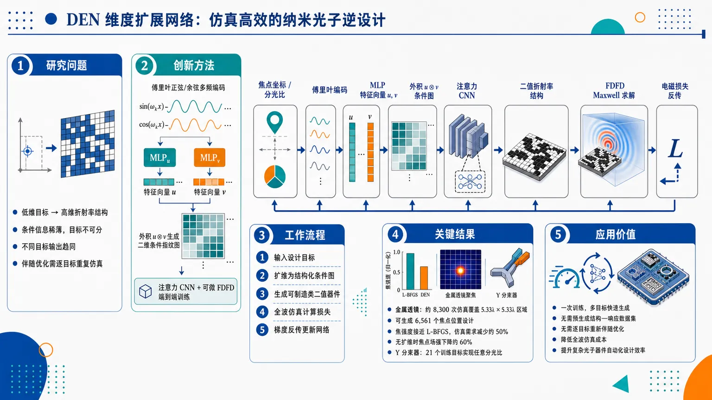
研究问题低维设计目标（如焦点坐标、分光比）只有少量标量，却要驱动数百到数千维的纳米光子折射率结构生成，导致条件信息稀薄、目标不可分、不同目标输出趋同；现有伴随优化需逐目标重复仿真，深度学习方法又常依赖大规模预生成数据集。创新方法提出 DEN 维度扩展网络：先用正弦/余弦傅里叶编码把标量目标展开成多频高维向量，再用两个 MLP 提取目标特征，并通过外积生成二维结构化条件图，像“把一个坐标点展开成一张目标指纹图”；随后输入注意力卷积编码器—解码器，直接输出二值化折射率分布，并通过可微 FDFD 全波仿真端到端无监督训练。工作流程输入焦点坐标或功率分配比 → 傅里叶正弦/余弦多频编码 → MLP 生成两个高维目标特征向量 → 外积形成二维条件特征图 → 注意力 CNN 生成纳米光子折射率结构 → 可微 FDFD 求解 Maxwell 方程 → 根据焦点强度或输出传输误差计算电磁损失 → 梯度反传更新网络 → 输出可制造的类二值光子器件设计。关键结果金属透镜任务中，DEN 以约 8,300 次全波仿真覆盖 5.33λ × 5.33λ 焦点区域，可生成 6,561 个焦点位置设计，焦强度接近 L-BFGS 伴随优化，同时仿真需求减少约 50%；去掉维度扩展后目标焦点场强下降约 60%。Y 分束器任务中，仅用 21 个训练目标即可实现任意功率分配，并表现出宽带鲁棒性。应用价值DEN 将逐目标纳米光子优化转变为一次训练、多目标快速生成的摊销逆设计框架，不需要预生成结构—响应数据集，也不需要为每个目标重新伴随优化；适合金属透镜、分束器等连续目标空间器件的快速设计，可降低全波仿真成本并提升复杂光子器件自动化设计效率。第一部分：核心概览
DEN（dimension expansion network）把低维设计目标先提升为结构化高维条件表示，再通过可微全波电磁仿真进行无监督逆设计，避免预生成数据集和逐目标重复优化。其关键贡献在于用傅里叶正弦/余弦编码 + 外积二维特征图缓解低维目标与高维纳米光子结构之间的维度错配。金属透镜任务中，DEN 在约 8,300 次仿真内覆盖 5.33λ × 5.33λ 焦点区域；Y 分束器任务中，仅用 21 个训练目标实现任意功率分配并具备宽带鲁棒性。该工作定位于替代数据驱动代理模型、GAN/VAE 生成式搜索和逐目标伴随优化的一种仿真高效条件逆设计框架。
---
第二部分：结构化快速回顾
《Dimension expansion for simulation-efficient nanophotonic neural networks》（None，）
背景
纳米光子逆设计面临高维设计空间、结构—光学响应强非线性、重复全波仿真成本高等瓶颈。传统伴随优化需对每个目标单独迭代，深度学习方法常依赖大规模预生成数据集或优化结构库，难以扩展到复杂连续目标空间。
方法
提出 dimension expansion network, DEN。低维目标如金属透镜焦点坐标或 Y 分束器功率分配比，先经正弦傅里叶特征编码映射为一维高维表示，再通过两个 MLP 和外积构造二维条件图像，输入注意力卷积编码器—解码器网络，输出折射率分布。训练通过 FDFD 全波仿真和电磁损失端到端反传，无需预生成训练数据。
结果
金属透镜设计中，DEN 在焦强度上接近 L-BFGS 伴随优化，同时减少约 50% 仿真需求；可在同一焦点区域内从数十个目标扩展到数千个目标。最大示例覆盖 5.33λ × 5.33λ 焦点区域，用 8,300 次仿真生成 6,561 个焦点位置设计。Y 分束器中，仅用 21 个训练目标准确实现任意分光比，并显示宽带性能。
讨论
维度扩展提高目标可分性、增强目标敏感性、增加结构多样性，并降低类似 mode collapse 的退化行为。外积构造扩大条件表示的线性张成空间，减少不同目标之间的成对相关性。
局限
金属透镜目标—结构映射具有更高频变化，可靠插值困难，因此需要密集目标采样；Y 分束器较平滑，可通过少量训练目标泛化。提供文本未包含完整结果与全部附录细节，部分数值比较无法完整核验。
结论
DEN 是一种无监督、可微仿真驱动、条件化逆设计框架，以维度扩展解决低维设计目标难以驱动高维光子结构生成的问题，在金属透镜和 Y 分束器任务中表现出显著仿真效率和连续目标空间覆盖能力。
---
第三部分：逐章节冷凝解析
Abstract
Dimension expansion targets the low-to-high dimensional mismatch
核心问题是低维目标参数与高维纳米光子结构之间存在严重维度错配，DEN 的核心思想是先把低维设计目标转化为高维结构化条件表示，再进行逆设计。摘要明确指出：*"The central idea is to transform low-dimensional design objectives into structured high-dimensional conditioning representations before inverse design is performed, thereby reducing the dimensional mismatch between compact target parameters and high-dimensional nanophotonic structures."* 这里的structured high-dimensional conditioning representations不是普通标量条件，而是带空间结构的高维输入图。
Fully unsupervised training avoids pre-generated datasets
DEN 不依赖预生成结构—响应数据集，也不需要优化结构库；训练直接穿过可微电磁仿真进行。摘要给出直接证据：*"The framework is trained directly through differentiable electromagnetic simulations without requiring pre-generated training data."* 这使其区别于依赖数万到百万级全波仿真的代理模型和生成模型。
Metalens task demonstrates adjoint-level performance with fewer simulations
金属透镜任务中，DEN 的焦强度与伴随优化相当，同时减少约一半仿真次数。摘要中的定量表述为：*"For metalens design, DEN achieves focal intensities comparable to those obtained by adjoint optimization while reducing the number of required simulations by approximately 50%."* 这表明 DEN 的目标不是单点超越伴随优化，而是在多目标条件空间中摊销优化成本。
Scaling from tens to thousands of focal targets is a central result
DEN 可在同一焦点区域内从几十个目标扩展到数千个目标。摘要指出：*"and scales from tens to thousands of target focal positions within the same focal region."* 该结果直接对应后文的 25 个设计、121 个焦点、以及 6,561 个焦点位置实验。
Y-splitter task validates continuous target conditioning
Y 分束器任务显示 DEN 能用少量训练目标学习连续分光比空间。摘要给出关键数字：*"For Y-splitter design, DEN accurately reproduces arbitrary power-splitting ratios using only 21 training targets and exhibits robust broadband performance."* 21 training targets 是判断样本效率的重要证据。
Ablations and theory link dimension expansion to sensitivity and diversity
摘要将方法有效性归因于目标敏感性提升、结构多样性提升和类似 mode collapse 行为减少：*"Ablation studies, representation analyses, and theoretical investigations show that dimension expansion improves target sensitivity, increases structural diversity, and reduces mode-collapse-like behavior."* 这里的 mode-collapse-like behavior 借用了生成模型语境，指不同目标输出趋同、目标条件被网络忽略。
---
1 Introduction
Nanophotonic inverse design is difficult because design spaces are large and nonlinear
纳米光子器件通过亚波长结构控制电磁波，应用包括传感、成像显示、光子集成电路等；核心设计难点在于参数多、结构—响应关系强非线性。关键表述为：*"Designing nanophotonic structures with high efficiency and tolerant to fabrication imperfections remains a challenging task, due to the large number of design parameters and the highly nonlinear relationship between structure and optical response."* 这构成 DEN 的问题背景。
Traditional optimization must be rerun for each design target
遗传算法、粒子群、伴随法和拓扑优化等优化方法虽然可发现非直觉高性能结构，但每个目标变体都需要重新迭代优化。证据为：*"These methods require new iterative optimizations for every variation of a design problem, leading to substantial computational cost."* 此外，它们还会受初始化和局部最优影响：*"they are sensitive to initialization and can be trapped in local optima, requiring multiple optimization runs per individual design."*
Fabrication constraints intensify optimization difficulty
二值材料约束、避免灰度松弛、兼容代工工艺会进一步增加优化难度。原文指出：*"Requiring binary materials (as opposed to common “grayscale” relaxations) and foundry compatibility can further compound these problems."* DEN 训练中逐步增强二值化约束，正是针对这一制造兼容性需求。
Forward-surrogate neural networks require large simulation datasets
基于 DNN 的前向代理模型可加速仿真并降低迭代优化成本，但训练代价极高。原文给出数量级：*"training these models requires large, optimized datasets, often consisting of tens of thousands or even millions of full-wave simulations."* 这说明前向代理模型把成本从优化阶段转移到数据生成阶段，并未真正消除仿真瓶颈。
PINNs and neural operators remain costly for large-scale inverse design
PINNs 需要在稠密采样域上重复评估微分算子，神经算子需要在高维函数空间中大量训练。原文分别指出：*"PINNs require repeated evaluation of differential operators over densely sampled domains, which leads to heavy differentiation calculation."* 以及 *"Neural operators require extensive training over high-dimensional function spaces, which can be computationally expensive and difficult to be extended to complex tasks."*
Direct inverse neural networks suffer from non-uniqueness
直接从目标预测结构的神经网络会遭遇逆问题非唯一性，即多个结构可产生相似响应，导致训练收敛困难。原文明确写道：*"This approach can be challenged by the non-uniqueness of inverse problems, where multiple structures can produce similar optical responses, affecting the convergence of the training process."* DEN 使用仿真损失而非监督标签，部分规避了“唯一正确结构标签”的问题。
Existing anti-non-uniqueness strategies do not scale well
过滤数据集、降维、限制设计空间等策略通常适用于低维问题，但难以扩展到自由形状高维结构。原文证据为：*"These approaches are typically restricted to low-dimensional problems, where they can be quite effective, but do not scale well to complex structures with many degrees of freedom."*
Tandem networks still require forward surrogate training
串联神经网络把逆模型和前向模型耦合，可缓解非唯一性，但仍需昂贵前向代理训练，且难以表达高维复杂关系。原文指出：*"they still require costly training of forward surrogates and have difficulty capturing the complex relationships in high-dimensional design spaces."*
Generative models depend heavily on pre-generated data and may imitate training patterns
GAN、VAE 等生成模型可探索较大参数空间，但常高度依赖预生成训练数据，且生成结构可能与训练模式相似。关键证据包括：*"Many such approaches rely heavily on pre-generated training datasets."* 以及 *"the generated designs tend to have a high degree of similarity to patterns in the training data and may fail to discover new structures with better performances than the structures in the training data."*
GLOnets-style simulator-based generative optimization is stochastic and needs post-selection
基于仿真的生成式优化避免预生成数据，但通常以随机潜变量驱动，对单一目标或少数离散条件进行随机搜索，需要从大量候选中后筛选。原文强调：*"Typically, post-selection among hundreds of generated structures for the same target is required to identify high-performance designs."* 并总结为：*"it remains fundamentally a stochastic search process over a distribution of candidate structures."*
DEN shifts from stochastic candidate generation to deterministic conditional mapping
DEN 的目标不是为固定目标采样一组候选结构，而是学习从连续目标规格到高性能设计的确定性条件映射。关键原句为：*"our objective is not to generate a distribution of candidate structures for a fixed target, but to learn a deterministic conditional mapping from continuously varying target specifications to high-performance designs."* 这一区别决定了 DEN 的摊销优化性质。
The key technical move is sinusoidal Fourier dimension expansion before attention CNNs
DEN 使用正弦傅里叶“基函数”把标量目标提升至高维空间，再送入注意力卷积网络。原文表述为：*"The key to our network is a technique we refer to as “dimension expansion (DEN),” depicted in Fig 1 (a), in which scalar target objectives are lifted to a higher-dimensional space, using specific sinusoidal Fourier “basis functions”."*
Metalens evidence includes 1,500 simulations for 25 designs
在原型金属透镜任务中，即使只有 1,500 次仿真，DEN 也能找到 25 个二值化高性能设计，焦点覆盖 1.6λ × 1.6λ 区域。证据为：*"even with only 1500 simulations, this approach can find 25 binarized high-performance designs with variable, independent ... focal points over a 1.6λ × 1.6λ target region."*
Full-space sampling reaches 6,561 designs with 8,300 simulations
当训练包含所有可能焦点时，DEN 可在 5.33λ × 5.33λ 区域生成 6,561 个高性能设计，仅使用 8,300 次仿真。原文写道：*"the network further enables efficient generation of high-performing designs across the entire target space of focal points (6561 designs in 5.33λ × 5.33λ region using only 8300 simulations)."*
Removing dimension expansion collapses performance
消融实验显示，去掉维度扩展后训练网络性能崩塌，目标焦点场强降低约 60%。原文直接说明：*"without which the performance of the trained networks collapses, and the field intensity at the target focal point is reduced by about 60%."*
Code availability supports reproducibility
代码公开在 GitHub，原文提供链接：*"Our code is publicly available at: https://github.com/huangshuo343/dimensionₑₓₚₐₙₛᵢₒₙₙₑₜwork."* 这对复现实验和比较基准具有重要意义。
---
2 Approach
DEN consists of dimension expansion and unsupervised inverse design
方法由两部分组成：dimension expansion 和 fully unsupervised neural network inverse design。原文明确列出：*"the proposed DEN contains two parts: 1) Dimension expansion and 2) Inverse design with fully unsupervised neural network."* 第一部分处理目标条件表示，第二部分通过仿真损失训练结构生成器。
---
2.1 Dimension expansion
The input is a 0D scalar target and the output is a refractive-index profile
DEN 输入为零维标量目标，例如金属透镜焦点坐标或 Y 分束器分光比；输出为设计区域折射率分布。证据为：*"The goal of our network is to take 0D scalar targets ... as input and generate the corresponding nanophotonic designs, where the refractive index profile of the design space is the output."*
The dimensional mismatch is explicit and severe
低维输入只有几个实数，而输出可能包含 10³ 或更多设计参数，网络参数甚至超过 10⁷。原文写道：*"there is a significant mismatch between the low-dimensional scalar inputs ... and the high-dimensional design-variable output (10³ or more design parameters)."* 又指出：*"using a neural network with millions of parameters (often exceeding 10⁷⁾ ... can lead to poor generalization or training instability."*
Standard neural embeddings assume structured inputs, but scalar targets lack structure
CNN、MLP、Transformer 常通过滤波器或嵌入扩展输入维度，但通常默认输入本身有图像网格或序列 token 结构；标量目标没有这种结构。原文指出：*"these approaches usually assume that the input already has some form of structure, such as spatial grids in images or sequences in tokens. But scalar input targets do not contain such structure."*
Previous field-based representation was informative but not scalable
早期版本使用目标响应作为源，通过预定义初始结构传播得到电场作为输入表示；该方法有空间结构且信息丰富，但每个目标都要一次全波仿真。原文说明：*"we used the electric field obtained by using the target response as the source and propagating it through a predefined initial structure as the input representation."* 局限为：*"obtaining the electric field requires performing a full-wave simulation for each target."*
Sinusoidal positional encoding maps scalar targets to Fourier feature vectors
标量目标 (x) 被编码为
[
I(x)= [sin(ømegaᵢ x), o̧s(ømegaᵢ x)]ᵢ₌₁Nᵢin R²Nᵢ
]
原文公式和解释为：*"for a scalar target x, the encoding is I(x)=[sin(ωᵢ x), cos(ωᵢ x)]..."* 频率设定为 (ømegaᵢ₌Nₓ⁻²ⁱ/Nᵢ)，其中 (Nₓ) 是标量目标离散样本数。该编码将目标信息分散在多个频带上：*"the target information is distributed across multiple frequency bands using sine and cosine functions."*
Fourier features help represent multi-scale target-to-structure variation
傅里叶编码让网络表达不同尺度的变化，适合目标到最优结构连续且局部平滑、但仍可能包含尖锐变化的映射。原文指出：*"the scalar inputs are expanded into a set of multi-frequency basis functions, allowing the network to represent variations at different scales."* 适配性证据为：*"small changes in the targets lead to gradual changes in the structure, while still allowing sharper structural variations when needed."*
Fourier conditioning for nanophotonic design specifications is claimed as new
傅里叶特征常用于坐标表示、隐式神经模型和生成模型条件机制，但该工作声明尚未见其用于以设计规格为输入的纳米光子神经网络。原文为：*"we are not aware of any research using Fourier feature encodings for nanophotonic neural networks taking design specifications as inputs."*
Two MLPs adapt coordinate encodings to task-dependent features
二维目标 (T=(x₁,x₂₎) 中两个分量独立编码后送入两个 MLP：
[
f₁₌MLP₁[I(x₁₎],quad f₂₌MLP₂[I(x₂₎]
]
每个 MLP 有两层全连接和 SiLU 激活。原文说明：*"each MLP consists of two fully connected layers with Sigmoid Linear Unit (SiLU) activations."* 这些 MLP 学习任务相关的多频成分组合：*"adapt them to the inverse design task by learning task-dependent combinations of the multi-frequency components."*
Outer product creates a structured 2D conditioning image
一维特征通过外积构造成二维图：
[
g=f₁f₂^→pin R²Nᵢ× ²Nᵢ
]
原文解释为：*"Each matrix element of g is the unique product of one element from f1 with one element from f2, capturing interactions between all pairs of encoded features."* 这一步把两个一维目标嵌入提升为可输入 CNN 的二维结构化特征图。
Theoretical motivation links expansion to separability and anti-collapse
维度扩展有两个作用：傅里叶编码使邻近目标更可区分，外积提升扩大线性张成空间并降低目标间相关性。原文总结为：*"the Fourier encoding maps low-dimensional target coordinates into a multi-scale feature space, where nearby targets become more distinguishable"*；以及 *"this lifting expands the linear span of the conditioning representations and reduces pairwise correlations between different target conditions."* 最终效果是：*"improve target separability and help preserve target-dependent information throughout training, thereby reducing mode-collapse-like behavior."*
---
2.2 Fully unsupervised neural network
The generator is an attention-based convolutional encoder-decoder
维度扩展输入被送入注意力卷积神经网络，输出折射率分布 (n(x,y))。网络结构为编码器—解码器，带残差卷积块、注意力模块、上采样和跳连。原文写道：*"we employ an attention-based convolutional neural network that generates the refractive index profile n(x,y)."* 结构证据包括：*"convolutional residual blocks ... extract multi-scale spatial features, and attention modules ... capture long-range dependencies."*
FDFD full-wave simulation enforces electromagnetic physics during training
训练中通过 finite-difference frequency-domain, FDFD 求解 TM 偏振 Maxwell 方程，标量电场为 (E_z)。原文为：*"we perform full-wave simulations by solving Maxwell’s equations for TM polarization (scalar electric field) using a finite-difference frequency-domain (FDFD) solver."* 方程为：
[
łeft[-fracpartial²partial x²-fracpartial²partial y²-fracømega²c²n²⁽x,y)i̊ght]E_z(x,y)=iømegaμ₀J_z(x,y).
]
The Y-splitter loss balances target matching and total transmission
Y 分束器目标为两个输出波导传输系数 (T₁,T₂)。直接最小化目标误差会导致高度非凸景观，因此额外鼓励总传输接近 1：
[
L=|T₁₋T₁_ₐ|+|T₂₋T₂_ₐ|+big|1-(T₁_ₐ+T₂_ₐ)big|.
]
原文解释为：*"directly minimizing |T1−T1ₐ| and |T2−T2ₐ| leads to a highly nonconvex optimization landscape; to improve convergence, we additionally encourage high total transmission."*
The metalens loss maximizes focal intensity
金属透镜损失定义为目标焦点电场强度负值：
[
L=-|E(fₓ,f_y)|².
]
原文说明：*"so that minimizing the loss corresponds to maximizing the focal intensity."* 这使网络直接优化物理目标，而非拟合监督结构标签。
Y-splitter supports interpolation because its target-structure mapping is smoother
Y 分束器映射较平滑，因此可用目标子集训练并泛化到未见分光比。原文为：*"For the Y-splitter, the mapping from target parameters to structures is relatively smooth, allowing the model to be trained on a subset of targets and to generalize to unseen ones within the continuous target space."*
Metalens requires dense target sampling because mapping has higher-frequency variation
金属透镜目标空间连续，但目标—结构映射更复杂且高频，因此可靠插值更困难，需要训练中包含密集目标点。原文指出：*"For the metalens design ... the corresponding mapping is significantly more complex and exhibits higher-frequency variations in the target-to-structure mapping."* 因此：*"we include a dense set of target points during training to ensure adequate coverage of the design space."*
DEN is an amortized optimization framework
DEN 训练一个共享目标条件映射，替代每个目标单独优化。原文直接定义：*"This results in an amortized optimization framework ... where a single trained model replaces repeated per-target optimization processes."* 其优势在于多目标设计信息能在同一训练过程中共享：*"information about multiple design–target pairs can be learned simultaneously, within a single training process."*
Metalens coverage reaches 121 sparse targets and 6,561 dense targets with 8,300 simulations
同一 5.33λ × 5.33λ 焦点区域内，DEN 用 8,300 次训练仿真覆盖整个区域。与伴随优化比较时，先考虑 121 个独立焦点，约对应半波长间隔；附录显示同样 8,300 次仿真下也能接近覆盖 6,561 个焦点位置。原文为：*"learns metalens designs covering an entire 5.33λ × 5.33λ focal region using only 8300 training simulations."* 以及 *"performing nearly as well for 6561 focal positions in the same region with the same 8300 training simulations."*
---
3 Results
Evaluation spans free-form metalenses and asymmetric Y-splitters
结果部分评估 DEN 在自由形状金属透镜和非对称 Y 分束器上的逆设计能力。原文为：*"we evaluate the proposed dimension expansion network (DEN) on free-form metalens and asymmetric Y-splitter inverse-design tasks."*
Metalens results test many focal targets and simulation savings
金属透镜实验重点是不同目标焦点的高性能设计生成和相对伴随优化的仿真节省。原文为：*"DEN can efficiently generate many high-performance metalens designs with different target focal points while significantly reducing the number of required simulations compared with adjoint optimization."*
Backbone robustness and Y-splitter broadband performance are also tested
结果部分还考察不同网络骨干下维度扩展鲁棒性，并验证 Y 分束器任意分光比和宽带性能。证据为：*"We then investigate the robustness of the proposed dimension expansion using different network backbones."* 以及 *"Finally, we evaluate DEN on Y-splitter design tasks with arbitrary power splitting ratios and broadband optical performance."*
Figure 2 positions DEN above prior neural-network scaling trends
图 2 将设计区域大小与训练所需仿真/优化结构数比较，使用归一化设计体积 (V/(łambda/2)^d)。图注明确：*"We compare existing work and our metalens design outcomes on two axes: (1) the design region’s size, V, measured in half-wavelength boxes/cubes ...; (2) the number of optimized structures or simulations used to generate training data and train the network."* 这为 DEN 的“仿真高效”提供跨文献背景。
---
3.1 Training Details
Training uses a single NVIDIA A6000 GPU and about 20 GB memory
所有实验在单张 NVIDIA A6000 GPU 上完成，训练峰值显存约 20 GB。原文给出：*"All experiments are performed on a single NVIDIA A6000 GPU, with a peak memory consumption of approximately 20 GB during training."*
End-to-end differentiable full-wave training needs no dataset
模型通过可微全波电磁仿真端到端优化，不需要预生成训练集或优化结构集合。证据为：*"The model is optimized end-to-end using differentiable full-wave electromagnetic simulations and does not require any pre-generated training dataset or collection of optimized structures."* 训练信号来自电磁梯度：*"the network directly learns from electromagnetic gradients during optimization."*
Metalens uses coarse-to-fine target sampling
金属透镜训练采用从粗到细的目标采样策略，以稳定优化并加快收敛。原文为：*"we employ a coarse-to-fine target-sampling strategy to improve optimization stability and accelerate convergence."* 初始采样间隔为 0.5D，对应 3×3 焦点网格；随后减小到 0.25D，对应 5×5 网格；最终细化至约半波长间距。原文数字为：*"the initial sampling interval is set to 0.5D, corresponding to a 3 × 3 focal-point grid"*，以及 *"reduced to 0.25D, corresponding to a 5 × 5 grid."*
Curriculum-like sampling first learns global mapping then refines local variations
该课程式策略先学习粗略目标—结构关系，再逐步解析更密集目标分布。原文解释为：*"This curriculum-like strategy enables the network to first learn coarse target-to-structure relationships before progressively refining the mapping over a denser target distribution."* 早期稀疏采样还能降低优化难度：*"Starting from sparse target sampling also reduces the optimization difficulty during the early stages of training."*
Generated structures are made differentiably binary-like during training
训练中目标坐标经维度扩展和网络骨干生成折射率分布，再经二值化过程转成可微的类二值表示。原文为：*"The generated structure is then transformed into a differentiable binary-like representation using the binarization procedures described in Appendix Sec. C."* 优化目标同时最大化焦强度和促进制造兼容二值结构：*"maximize the focal intensity at the target position while simultaneously encouraging fabrication-compatible binary structures."*
Optimization uses AdamW with learning rate 5×10⁻⁵
网络参数用 AdamW 优化，初始学习率为 5×10⁻⁵。证据为：*"The network parameters are optimized using AdamW with an initial learning rate of 5 × 10−5."* 梯度穿过完整仿真和网络管线反传：*"Gradients are obtained by back-propagating the electromagnetic loss through the entire simulation and network pipeline."*
Binarization constraint is gradually strengthened
训练过程中逐步增加二值化约束强度，使网络先探索连续设计空间，再收敛到离散可制造结构。原文为：*"the strength of the binarization constraint is gradually increased, allowing the network to first explore a continuous design space and subsequently converge toward discrete fabrication-compatible structures."*
Checkpoint selection matches L-BFGS binarization degree
最终 DEN 检查点按二值化程度选择，使生成结构的二值化程度与直接 L-BFGS 逆设计可比。原文为：*"The final DEN checkpoint is selected such that the generated structures achieve binarization degrees comparable to those obtained by direct inverse design using L-BFGS."* 二值化程度定义中，1 是完美二值，0 是完全中间值分布：*"a value of 1 corresponding to a perfectly binary design and a value of 0 corresponding to a completely intermediate-valued distribution."*
Mirror symmetry is used consistently in metalens evaluation
金属透镜配置关于光轴镜像对称，因此每个离轴焦点有对称等价点；DEN 和逆设计都评估两个对称焦点，并报告较高焦强度。原文说明：*"each off-axis focal position has a symmetry-equivalent counterpart."* 以及 *"the two symmetry-related focal positions are evaluated for each method ... and the higher focal intensity is reported."*
---
3.2 DEN performance for metalens focusing
The metalens task generates compact structures focusing to arbitrary target positions
金属透镜逆设计目标是生成紧凑纳米光子结构，将入射光聚焦到预定义焦点区域内任意目标位置。原文为：*"The objective is to generate compact nanophotonic structures that focus incident light to arbitrary target positions within a predefined focal region."*
The simulation is 2D TM at λ = 500 nm
问题设置为二维 TM 偏振，工作波长 λ = 500 nm。原文为：*"The problem is formulated in two dimensions under TM polarization at a wavelength of λ = 500 nm."*
The refractive-index design is binary with n = 1.0 or 2.4
折射率分布为二值：(nin1.0,2.4)。原文证据：*"The refractive-index distribution is binary with n ∈ 1.0, 2.4."* 这对应空气/高折射率材料两相结构。
Spatial resolution and minimum feature size are λ/15 ≈ 33.3 nm
离散分辨率为 (Δ x=łambda/15approx 33.3) nm，同时定义最小特征尺寸。原文为：*"discretized using a spatial resolution of Δx = λ/15 ≈ 33.3 nm, which also defines the minimum feature size of the design."*
The design region has 12 × 301 pixels and size 0.40 μm × 10.0 μm
金属透镜设计区域包含 12×301 像素，对应物理尺寸约 0.40 μm × 10.0 μm，分别沿传播方向 (x) 和横向 (y)。原文为：*"The metalens design region consists of 12 × 301 pixels, corresponding to a physical size of approximately 0.40 μm × 10.0 μm."*
Only 301 independent variables remain because the index is uniform along propagation
折射率沿传播方向均匀，因此只有横向 301 个独立设计变量。原文为：*"The refractive-index distribution is uniform along the propagation direction, leaving 301 independent design variables along the transverse direction."* 这说明该金属透镜基准虽是自由形状，但实际自由度沿横向分布。
The largest focal region has D = 2.67 μm and spans fx = 3.58–6.25 μm
最大目标区域为边长 D = 2.67 μm 的正方形，最近和最远焦点距离分别为 fx = 3.58 μm 和 fx = 6.25 μm。原文为：*"For the largest target region ... side length D = 2.67 μm, where the nearest and farthest target positions are located at fx = 3.58 μm and fx = 6.25 μm."*
Effective numerical aperture ranges from 0.81 to 0.63
这些焦距对应有效数值孔径约 0.81 到 0.63。原文为：*"These focal distances correspond to effective numerical apertures ranging from approximately 0.81 to 0.63."* 该 NA 范围说明任务具有较高聚焦角和较强设计难度。
Off-axis focusing angles reach ±20.4°
离轴聚焦角范围约 12.0° 到 20.4°，若考虑正负横向位移则为 ±20.4°。原文为：*"The corresponding off-axis focusing angles span approximately 12.0° to 20.4° (or ±20.4° when both positive and negative transverse displacements are considered)."*
Three focal-region sizes are tested with the same center
除最大区域 D = 2.67 μm 外，还测试 D = 0.80 μm 和 D = 1.33 μm。所有焦点区域中心相同，位于 ((fₓ,f_y)=(4.92 μm,0.00 μm))。原文为：*"Smaller focal regions with side lengths of D = 0.80 μm and D = 1.33 μm are also considered."* 以及 *"All focal regions share the same center, located at ... (4.92 μm, 0.00 μm)."*
DEN amortizes cost across focal targets, unlike adjoint optimization
传统伴随优化每个焦点单独优化，而 DEN 学习焦点坐标到优化结构的共享映射。原文为：*"Unlike conventional adjoint optimization, which independently solves a separate optimization problem for every focal point, DEN learns a shared mapping between focal coordinates and optimized structures."* 训练完成后，新设计只需一次前向传播：*"new designs can be generated through a single forward pass without requiring any additional optimization."*
Figure 2 shows DEN above previous deep-learning metalens scaling trends
相较既有深度学习金属透镜方法，DEN 以约 8×10³ 次仿真达到约 40 的归一化可设计体积。原文为：*"The metalens benchmark considered in this work achieves a normalized designable volume of approximately 40 using only about 8 × 10³ simulations."* 先前全波神经网络设计体积通常小于 10：*"the full-wave volumes designed to date with neural networks methods are smaller than 10."*
DEN occupies a distinct efficiency regime without pre-generated datasets
DEN 不需预生成数据集，且落在既有经验回归趋势之上。原文为：*"DEN directly performs physics-based inverse design without requiring any pre-generated datasets."* 以及 *"the proposed method occupies a distinct region well above the regression trend established by previous approaches."*
Representative designs focus accurately with low background scattering
对于最大焦点区域 D = 2.67 μm，代表性设计能把光功率集中到目标位置，产生局域焦斑且背景散射低。原文为：*"the generated structures successfully concentrate optical power at the desired locations and produce well-localized focal spots with low background scattering."* 焦斑与目标坐标接近：*"The focal spots closely coincide with the target coordinates."*
Comparison with L-BFGS uses three target-region sizes
DEN 与 L-BFGS 伴随优化比较覆盖 D = 0.80 μm、1.33 μm、2.67 μm 三个焦点区域。原文为：*"Three focal-region sizes are considered: D = 0.80 μm, 1.33 μm, and 2.67 μm."* L-BFGS 对每个焦点单独优化结构，而 DEN 单次训练联合学习所有目标：*"For each target focal point, L-BFGS independently optimizes a separate structure, whereas DEN jointly learns all target-dependent designs through a single training process."*
Available text states equivalent focal intensity with fewer simulations but truncates exact numbers
可用段落显示 DEN 在所有焦点区域中获得与 L-BFGS 基本等价的焦强度，同时显著减少全波仿真。原文为：*"Across all focal-region sizes, DEN achieves focal intensities essentially equivalent to those obtained by L-BFGS while requiring substantially fewer full-wave simulations."* 随后具体小区域数值在提供内容中截断，无法核验完整图 3(c) 定量结果。
---
第四部分：深度理解与语言支持
1. 术语解析
Dimension expansion
直译为“维度扩展”，语境中不是简单增加网络宽度，而是把低维设计目标如 ((fₓ,f_y)) 或分光比映射成高维结构化条件表示。关键含义是提升条件信息的可分性和表达容量，使 CNN/attention 网络更容易利用目标差异。对应原文：*"scalar target objectives are lifted to a higher-dimensional space."*
Structured high-dimensional conditioning representations
“结构化高维条件表示”强调两个层面：高维表示包含大量特征；结构化表示具有类似图像的二维组织形式，可被卷积网络处理。它不同于把标量简单复制成向量，也不同于随机 latent code。对应原文：*"structured input representations for inverse photonic design."*
Amortized optimization
“摊销优化”指一次训练学习整个目标空间的共享映射，把原本每个目标都要单独优化的成本分摊到所有目标上。训练可能仍然昂贵，但目标数越多，平均每个目标成本越低。原文定义为：*"a single trained model replaces repeated per-target optimization processes."*
Mode-collapse-like behavior
源自 GAN 的“模式崩塌”，这里不是严格 GAN 崩塌，而是类比指不同目标输入产生相似结构，网络忽略条件差异，无法随目标变化输出多样设计。原文使用谨慎表达：*"mode-collapse-like behavior."* “like”说明这是一种类似现象，而非完全相同的生成对抗训练失败模式。
Target separability
“目标可分性”表示不同目标在条件表示空间中彼此足够区分。若两个不同焦点的表示高度相关，网络可能输出相似结构；若表示可分性强，训练梯度更容易把不同目标导向不同设计。原文关联为：*"improve target separability and help preserve target-dependent information."*
---
2. 疑难查证
为什么低维目标直接输入网络会失败？
一个二维焦点坐标只有两个数，但输出结构有数百到数千个设计变量，网络参数可超过 (10⁷)。如果直接把两个标量送进大网络，早期层得到的条件信息非常稀薄，后续卷积层容易学习到“平均设计”或目标不敏感设计。维度扩展相当于把坐标投影到多个正弦/余弦频带，使不同目标在输入空间中形成更丰富的差异模式。
为什么外积比拼接更适合二维目标？
若把 (x₁) 和 (x₂) 的编码简单拼接，网络需要后续层自己学习二者的交互项；外积直接构造所有 (f₁[i]f₂[j]) 组合，相当于显式生成双线性特征。对于焦点坐标这种二维条件，结构通常依赖 (x)、(y) 的耦合变化，而不仅是各自独立变化。外积使 CNN 输入变成二维“图像”，也更匹配卷积网络的归纳偏置。
为什么 Y 分束器能用 21 个目标泛化，而金属透镜需要密集采样？
Y 分束器的目标是连续功率分配比，结构变化通常较平滑，例如从 50:50 到 60:40 不一定需要完全不同拓扑。金属透镜目标是空间焦点坐标，尤其离轴、高 NA 聚焦时，相位分布和干涉条件随焦点变化更复杂；小幅移动焦点可能需要结构中多个区域协同变化。因此金属透镜的目标—结构映射具有更高频成分，可靠插值更难。
为什么 DEN 不等于传统监督学习？
传统监督学习需要输入目标和对应“正确结构”标签；DEN 没有预定义正确结构。网络输出结构后直接进入 Maxwell 方程仿真，损失由实际光学响应计算，如焦强度或传输系数误差，再把梯度反传到网络。这使它更像“多目标共享拓扑优化器”，而不是“结构数据集拟合器”。
---
第五部分：创新评估与关联
1. 创新性判断
核心新颖性在于把低维设计规格显式提升为高维结构化条件，而非只改网络或损失
过去 2–5 年纳米光子深度学习逆设计主要集中于三类路线：前向代理模型、监督式逆模型/串联网络、生成模型。它们共同瓶颈是数据依赖、非唯一性、或随机采样后筛选。DEN 的创新点不是提出更大的 CNN，而是识别出“低维目标条件难以驱动高维结构生成”这一条件化瓶颈，并用傅里叶编码与外积构造解决。
相对于代理模型，DEN 消除了大规模预生成仿真数据集
前向代理模型通常需要数万到百万级全波仿真训练，然后再做优化。DEN 直接通过可微仿真训练逆设计网络，不拟合前向响应数据库。金属透镜中约 8×10³ 次仿真覆盖约 40 的归一化设计体积，明显偏离既有“更大设计空间需要更多训练数据”的经验趋势。
相对于伴随优化，DEN 学习目标空间的共享映射
伴随优化对每个目标单独求解，目标数线性增加时成本也近似线性增加。DEN 通过摊销优化在一次训练中学习多个目标—结构关系；训练完成后，每个新目标仅需一次前向传播。对 121 个焦点、甚至 6,561 个焦点的覆盖展示了这种优势。
相对于 GAN/VAE/GLOnets，DEN 避免随机候选生成和后筛选
生成式方法常从随机潜变量产生一批候选，再从数百个结构中挑选高性能个体。DEN 学习确定性目标条件映射，目标是“输入一个规格，直接输出对应设计”，而不是“为一个规格采样大量候选”。这解决了仿真时间被大量低性能候选消耗的问题。
相对于常规 Fourier features，应用对象发生了重要转移
傅里叶特征已广泛用于 NeRF、隐式神经表示和坐标网络，但这里的关键转移是：编码对象不是空间坐标本身，而是设计规格坐标，用于条件化纳米光子逆设计。该转移使 Fourier features 从“表示场函数”扩展为“增强目标条件可分性”的机制。
解决的前人未充分解决问题
DEN 针对的是连续低维目标空间上的高维光子结构逆映射：
- 不需要每个目标独立伴随优化；
- 不需要预生成大规模结构—响应数据集；
- 不依赖随机生成和后筛选；
- 能在同一网络中覆盖大量连续或密集采样目标；
- 能保持目标敏感性，减少不同目标输出趋同。
最具学术价值的创新点是：条件表示本身成为逆设计效率的决定因素。DEN 证明，在纳米光子神经逆设计中，低维目标输入若不经过适当高维结构化扩展，即使使用强大网络和可微仿真也可能发生性能崩塌；而合适的维度扩展可显著提高目标空间覆盖效率。
-
21
📄 摘要：面向纳米石墨烯自旋链，从非弹性扫描隧道谱图反演空间调制交换相互作用。局域、长度无关的机器学习方法避免预设均匀耦合，可直接重构受结构和环境不均匀性影响的海森堡哈密顿量。
💡 亮点：机器学习从纳米石墨烯自旋链的非弹性隧道谱中反演位置依赖交换耦合。该策略把局域谱学图像转化为可解释的微观哈密顿量。
-
22
📄 摘要：提出物理信息神经量子控制框架，用于 Morse 分子体系的转振动光缔合。神经网络生成激光场并与可微量子传播结合，无需外部训练数据；优化脉冲可将初始类连续 Gaussian 波包转移到振动基态，实现连续态到束缚态控制。
💡 亮点：可微量子传播与神经网络激光场生成相结合，直接优化 Morse 分子的光缔合脉冲。该方法展示无数据训练的物理约束量子控制路线。
-
23
📄 摘要：NQS-Agent 是开源的神经网络量子态超参数优化框架，面向强关联量子多体变分计算。工作流监控能量轨迹，检测破坏性优化事件，提前终止不稳定任务，修改学习率计划并恢复运行，以提升架构级超参数和优化日程搜索效率。
💡 亮点：NQS-Agent 把能量轨迹健康监控引入神经网络量子态调参，可自动处理发散和学习率故障。它直接缓解强关联多体 NQS 计算中人工调参成本高的问题。
-
24
📄 摘要：提出 NMRAgent，用大语言模型智能体解析核磁共振谱以推断未知分子结构。目标是在数据库检索无法识别新骨架、从头生成模型缺乏原子级可解释性之间取得平衡，强调可验证的谱峰—原子关联与泛化解析能力。
💡 亮点：NMRAgent 将大语言模型智能体引入核磁共振结构解析，面向未知骨架给出更可解释的分子推断。它把谱学推理从黑箱生成推进到可核查的原子级证据链。
-
25
📄 摘要：提出连接信息论、拓扑与统计物理的深度学习理论框架，讨论过参数网络泛化与经典 VC 维、Rademacher 复杂度预测失效之间的差距。核心概念为熵可学习性与 Shannon 瓶颈，用以刻画神经流形上的信息挫折和学习极限。
💡 亮点：该理论把过参数网络泛化问题表述为神经流形上的信息瓶颈与挫折。它为 AI for science 中模型容量、可学习性和泛化边界提供统计物理语言。
-
26
📄 摘要：MALOQ 用机器学习算符模型预测 DFT 哈密顿量和密度矩阵，以降低电子结构与量子输运计算成本。应用面向少数到 10 万原子、较大基组和多元素体系的电子结构矩阵训练与预测，目标是扩展传统 DFT 难以处理的尺度。
💡 亮点：MALOQ 将 DFT 哈密顿量/密度矩阵学习扩展到最多 10 万原子量级，为量子输运建模降本。它把机器学习算符直接接入器件尺度电子结构，是今日最贴近计算材料的工作之一。
-
27
📄 摘要：面向中性原子阵列量子处理器的短曝光荧光读出，提出神经网络辅助贝叶斯量子比特读出。该方案针对单光子级信号下的状态判别难题，在减少加热和原子损失的同时，以最少光子资源提升可扩展量子态读出能力。
💡 亮点：神经网络辅助贝叶斯方法改善中性原子量子比特的单光子级荧光读出。它直接服务于短曝光、低损伤和大规模原子阵列处理器。
-
28
📄 摘要：量子材料团队展示用机器学习从近乎无限的材料组合中筛选超导候选体。该流程把候选过滤速度显著提高，并已识别新超导体；报道强调该策略可扩展到大量潜在化合物组合，用于加快超导材料发现。
💡 亮点：机器学习被用于在巨大材料组合空间中过滤超导候选体，并已导向新超导体识别。该路线展示了数据驱动超导材料发现的规模化潜力。
-
29
📄 摘要：实现并评估巨正则全局优化框架，在线训练机器学习原子间势以表征反应环境下纳米结构材料。方法同时处理结构构型与组成搜索空间，减少依赖第一性原理计算的全局优化成本，适用于会发生化学转化的复杂纳米体系。
💡 亮点：在线训练机器学习势与巨正则全局优化结合，用于反应环境中纳米结构的构型和组成搜索。它针对催化纳米材料的开放化学势问题，比固定组成搜索更贴近实验条件。
-
30
📄 摘要：将神经正则变换用于高通量分子 CH5+ 的振动激发谱计算，处理氢原子大幅空间运动、强非谐效应和离域核波函数。方法在原子坐标波函数中纳入核量子效应与非谐性，面向通量分子的复杂谱结构。
💡 亮点：神经正则变换用于 CH5+ 强非谐、氢离域振动谱，直接处理大幅核运动。该方法对含氢材料、分子晶体和固体声子非谐谱计算具有可推广性。
-
31
📄 摘要：面向近红外单光子单像素成像，构建 Hessian 稀疏约束的自监督网络，以缓解极低光子通量下的光子噪声、画质下降和帧率受限问题。方法不依赖常规阵列探测器，利用低成本单元探测器实现高灵敏 NIR 成像。
💡 亮点：Hessian 稀疏先验被嵌入自监督单像素重建，可在近红外单光子噪声下提升成像质量。该类物理先验网络对低剂量谱学、弱信号材料表征成像有借鉴价值。
-
32
📄 摘要：围绕 Eu 掺杂无限层镍酸盐中出现的高 Tc 场重入超导迹象，发展化学途径以生长含较晚稀土元素的无限层镍酸盐。目标是调控非常规超导与场重入超导之间的竞争，探索潜在量子相边界与临界性。
💡 亮点：化学合成路线被用于拓展稀土无限层镍酸盐并调控场重入超导。该体系把非常规超导、磁场诱导态和量子临界竞争联系起来。
-
33
📄 摘要：提出从系综光谱重构自旋 1/2 固态缺陷电跃迁偶极偏振的统一框架。该方法面向量子网络和混合量子平台中的自旋—光子界面，可在难以直接表征的量子发射体中确定光—物质耦合所需的偶极取向。
💡 亮点：系综光谱即可反演自旋缺陷的电跃迁偶极偏振。该框架有助于优化固态量子发射体的光耦合与器件取向设计。
-
34
📄 摘要：提出 Topo4Vec，用空间表征学习自动评估地理空间矢量数据质量，面向城市形态差异大、数据规模巨大的场景，替代依赖人工规则的传统质检流程。摘要显示框架聚焦原生矢量数据的可扩展 GeoAI 分析。
💡 亮点：Topo4Vec 将空间拓扑表征学习用于原生矢量数据质量评估，面向复杂城市形态和海量数据。其思路可迁移到材料微结构、晶粒网络等矢量化科学数据的自动质检。
-
35
📄 摘要：将量子计算中的影子层析思想改造到经典张量网络态可观测量估计，分别设计适用于自旋/玻色与费米体系、并匹配张量网络收缩需求的策略。相较常规估计，样本标度可改善 O(N) 到 O(N³)，N 为系统尺寸。
💡 亮点：影子层析被移植到经典张量网络收缩，可在自旋和费米体系中给出 O(N)–O(N³) 样本标度收益。该方法直接提升多体张量网络可观测量评估效率。
-
36
📄 摘要：研究 NM/FMI/NM 三层结构中的界面自旋输运，中心铁磁绝缘层用各向异性量子 XXZ 模型描述。结合自洽谐波近似与微观线性响应，计算各自旋区的自旋混合电导，并将其分解为相干凝聚组分与非相干热组分。
💡 亮点：NM/FMI/NM 自旋超流界面电导被分解为相干凝聚与非相干热贡献。该结果刻画了量子自旋输运向经典热自旋输运的交叉。
-
37
📄 摘要：提出用凝聚分数标度判定二维超导和超流体系的 BKT 转变。以二维吸引 Fermi-Hubbard 模型为测试平台，采用数值精确辅助场量子蒙特卡罗，给出高效确定转变温度和有限尺寸标度的方案。
💡 亮点：凝聚分数标度被用于高效识别二维吸引 Fermi-Hubbard 模型的 BKT 转变。它为二维超导与超流数值研究提供替代传统刚度判据的工具。
-
38
📄 摘要：利用电阻分流超导细线作为最小人工神经元开展时间神经形态计算。实验与仿真显示该结构具有尖峰响应、电子可控性、低耗散和可扩展加工优势，可用于模式识别任务，面向高速低能耗硬件智能。
💡 亮点：电阻分流超导细线可充当尖峰神经元并完成模式识别。其低耗散和快开关特性使超导神经形态硬件更接近可扩展实现。
-
39
📄 摘要：基于 Landau-Ginsburg-Devonshire 理论，证明电极化与反铁畸变长程序参量之间的线性梯度型 Lifshitz 不变量在反铁畸变铁弹体中由对称性允许。四亚晶格模型显示该耦合可在孪晶壁和反相边界诱导亚晶格敏感极化，作为变电性指纹。
💡 亮点：双线性挠曲—反铁畸变耦合可在铁弹孪晶壁和反相边界诱导局域极化。缺陷极化被提出为变电性在反铁畸变材料中的可观测指纹。
-
40
📄 摘要：综述铜氧化物高温超导机制理论，重点讨论由排斥相互作用产生超导的思路及其在 2015 年共识后受到的关注。文中梳理三类主要理论流派、面临挑战，并讨论 2022 年与 Anderson 超交换机制相关的实验结果。
💡 亮点：该视角文重新评估铜氧化物高温超导中排斥相互作用成对机制。它把三类理论流派与近年超交换相关实验放在同一脉络下比较。
-
41
📄 摘要：提出在无本征记忆的量子点物理储备中通过空间—时间折衷构造记忆容量。多维输入节点充当空间记忆轴，以空间自由度替代历史依赖动力学，从而在零记忆系统中实现储备计算并降低对材料内禀迟滞的要求。
💡 亮点：该方法把储备计算的时间记忆转移到量子点阵列的空间维度。它说明即便无历史依赖动力学，物理系统也可通过几何编码获得计算记忆。
-
42
📄 摘要：讨论手性对同时具有液晶有序及长程电/磁有序的多铁性近晶相的影响，覆盖铁、反铁和锥形构型。重点分析手性铁电近晶 CF* 相，给出可能基态、此前未考虑的缺陷相，以及螺旋叠加在 C1h 对称 smectic CF 结构上的宏观动力学。
💡 亮点：手性可在多铁性近晶相中诱导螺旋、缺陷和多种铁电/反铁电基态。该理论框架把液晶手性与宏观电磁响应直接联系起来。
-
43
📄 摘要：采用 μ⁺SR 研究钴插层 2H-NbSe₂ 的磁性。Co₁/₄NbSe₂ 被预测为交错磁体，早期中子衍射已提出相关磁结构；局域 μSR 探针给出支持交错磁性的内部磁场和磁有序证据，用于检验该层状插层体系的非常规反铁磁态。
💡 亮点：μ⁺SR 在 Co₁/₄NbSe₂ 中提供支持交错磁性的局域磁场证据。该结果为层状过渡金属二硫属化物中的自旋分裂反铁磁态提供关键实验支撑。
-
44
📄 摘要：生长金属 kagome 反铁磁体 CrRhAs 单晶并测量磁性与电子输运。未观测到非线性霍尔效应；霍尔测量显示电流方向改变时出现意外符号反转，并伴随显著各向异性，揭示反铁磁 kagome 金属中非常规输运响应。
💡 亮点：CrRhAs 单晶未显示非线性霍尔效应，却出现随电流方向翻转的霍尔符号反转。该异常输运为反铁磁 kagome 金属的对称性与散射机制提出新约束。
-
45
📄 摘要：用紧束缚模型研究二维 kagome 晶格边缘态，考察晶格终止、自旋轨道耦合和磁有序。洁净极限下，局域边缘态对边界几何高度敏感；加入自旋轨道耦合与磁序后，边缘谱、局域性和可能的拓扑特征发生可控改变。
💡 亮点：二维 kagome 边缘态并非只由体能带决定，而强烈依赖具体边界终止。自旋轨道耦合和磁序进一步提供调控边缘谱的手段。
-
46
📄 摘要：研究参数依赖质量作用反应网络的线性粗粒化，区分通用参数与临界参数区间。证明在非空开集上的通用参数下，精确线性粗粒化只产生显然约化：去除非反应物种或沿化学计量一阶积分投影；结论扩展到 Michaelis-Menten 与 Hill 型乘积形式动力学。
💡 亮点：该文证明通用参数下反应网络精确线性粗粒化仅对应非反应物种消除或守恒量投影。结果为化学动力学、材料反应路径和催化网络降维划定严格边界。
-
47
📄 摘要：报道通过立构选择性聚合与定制后转化制备功能性和网络化聚羟基烷酸酯 PHA。现有条目仅给出题名与期刊早览信息，未提供实验体系、单体范围、转化率、力学或热学性能等具体摘要数据。
💡 亮点：该工作聚焦 PHA 的立构选择聚合和后修饰，目标是获得功能化与网络化聚酯材料。若性能数据充分，将与可降解高分子和可设计软材料方向相关。
-
48
📄 摘要：针对 PINN 时空导数、残差雅可比作用和 CFD 离散伴随，提出残差专用显式导数核。相较通用自动微分，该方法利用问题结构以降低高阶残差和复杂离散算子的时间、内存开销，并强调导数实现的验证性和可控性。
💡 亮点：残差专用显式导数核为 PINN 与 CFD 伴随计算替代通用自动微分。它把效率、内存和可验证性同时纳入物理信息学习的数值内核设计。
-
49
📄 摘要：面向工业 6G，构建 RIS 使能的开放无线接入网，在地面/非地面融合网络中由无人机挂载 RIS、地面无线单元和高空平台协同服务密集工业物联网设备。多智能体深度强化学习同时优化服务质量与能耗。
💡 亮点：论文用多智能体强化学习调度 UAV-RIS、地面单元和高空平台，处理遮挡场景下的 QoS 与能耗折中。对分布式实验设施和自主实验室通信调度有参考价值。
-
50
📄 摘要：提出基于 Karhunen-Loeve Deep Neural Network 的可扩展算符学习框架，连接 DeepONet 与 KL 展开，面向偏微分方程大规模问题的维数灾难、内存约束和训练数据不足。示例应用为地质碳封存建模。
💡 亮点：KL-DNN 通过可分部训练把算符学习拆解到可扩展子问题，降低大规模 PDE 代理模型训练压力。该策略适用于多孔介质、气候和材料连续场模拟。
-
51
📄 摘要：给出云计算日志威胁检测的工业案例，采用自监督图神经网络学习云事件之间的关系，以降低静态启发式或常规异常检测带来的高误报率。方法面向组织级云基础设施的自动化安全监控。
💡 亮点：自监督 GNN 将云日志事件表示为关系图，用于减少安全异常检测误报。该框架也适合实验设备日志、材料数据库访问记录等科研基础设施异常监测。
-
52
📄 摘要：提出 AlgoSkill，把自然语言题目到算法设计的过程建模为在类型化技能库上的序贯决策，技能包括抽象、约束分析、状态设计、数据结构选择、正确性检查和复杂度改进。方法显式化大语言模型常隐含处理的设计算法步骤。
💡 亮点：AlgoSkill 将算法生成拆成可调度技能序列，而非直接让模型一次性输出代码。对自动构建科学计算算法、材料筛选流程和模拟后处理管线有启发。
-
53
📄 摘要：提出用于静电等离子体 Vlasov-Poisson 模拟的 δf 粒子网格法，将体密度作为非线性控制变量，并用 SympNet 近似后向流。周期型 SympNet 把空间周期性直接编码进网络，在 1D1V 与 3D3V 数值算例中验证。
💡 亮点：该方法用辛神经网络学习粒子轨道后向流，作为 δf PIC 的非线性控制变量降低方差。对长时间哈密顿动力学和等离子体—材料相互作用模拟具有方法学价值。
-
54
📄 摘要：提出烟叶成熟度智能识别框架，把专用 Vision Transformer 主干与卷积块注意力模块结合，增强对局部细微生理特征的空间敏感性。目标是在自然光照波动、背景干扰和冠层重叠的非结构化田间环境中提高识别稳健性。
💡 亮点：ViT 与 CBAM 结合用于捕捉烟叶成熟度的局部细微特征，针对田间光照和遮挡干扰。该视觉注意力设计可迁移到材料显微图像中的弱形貌差异识别。
-
55
📄 摘要：提出 SlipOdometryNet，用 1 维残差卷积网络和滑移加权焦点训练替代四轮滑移转向机器人的运动学轮式里程计。模型仅需轮编码器与指令速度，不用 IMU、相机、激光雷达或摩擦参数，含 176450 个参数，50 Hz 下 GPU 推理每窗口 0.4 ms。
💡 亮点：SlipOdometryNet 以轻量 1D 卷积从轮速与指令速度估计滑移感知里程计，0.4 ms 完成单窗口推理。该低传感器方案适合自主实验室移动平台与危险环境材料巡检。
-
56
📄 摘要：用经典张量网络描述儿童对带情绪效价玩具序列的识别记忆，发现正确回忆不仅依赖目标玩具自身效价，还受前后玩具效价影响。相比标准心理模型，张量网络更能表示事件序列中情绪对象之间的顺序依赖结构。
💡 亮点：经典张量网络被用于刻画情绪效价序列中的非局域记忆影响，超出单点心理模型。虽属认知建模，其张量表征思路与多体关联、序列态压缩高度相通。
-
57
📄 摘要：提出 CMSL，将用户历史从单一时间序列改写为多序列结构，针对推荐数据不同于自然语言线性逻辑的特点建模。框架强调用户行为中的多重时间与兴趣组织，而非照搬大语言模型式句子序列假设。
💡 亮点：CMSL 把推荐历史建模为多序列而非单句式时间流，针对用户兴趣的非线性结构设计。其序列分解思想可启发实验流程、合成路径等科学事件序列建模。
-
58
📄 摘要：提出二维复杂边界流体仿真的混合神经架构，结合卷积网络的局域特征提取与谱方法的全局波分辨能力。目标是在复杂、不规则边界下替代昂贵投影求解器，实现大尺度流动的快速近似计算。
💡 亮点：混合谱—几何神经网络面向复杂边界二维流体，将局域卷积与全局谱解析结合。它瞄准实时或大规模计算流体中的多尺度加速瓶颈。
-
59
📄 摘要：系统比较最大似然、最大伪似然和平均场三类逆统计力学方法，用于从数据反推相互作用模型参数。论文给出理论介绍，并应用于多个经典统计物理模型，重点讨论经历相变的相互作用体系中参数学习与检验问题。
💡 亮点：该文梳理相变体系参数反演中最大似然、伪似然和平均场方法的适用性。对从自旋构型、显微图像或实验关联函数反推有效哈密顿量具有直接参考价值。
-
60
📄 摘要：建立分布式秘密存储的形式化框架，把网络退化下的可存活性和对抗者攻破下的抗妥协性统一为鲁棒性泛函优化。推导可存活性的精确表示，核心对象为最小信息承载子图 MICS，并讨论技术与社会网络应用。
💡 亮点：论文以最小信息承载子图刻画秘密在网络中的可存活性，平衡失效鲁棒与攻击风险。该网络优化框架可类比用于分布式科研数据和多实验节点冗余存储设计。